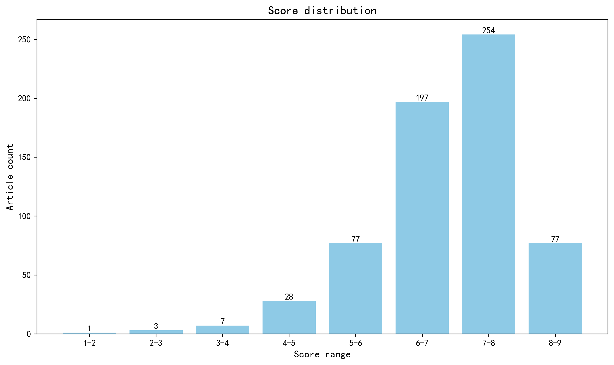

神经科学快讯·第034期 果蝇连接组模拟定位候选步行节律回路 (2026-10-31)
📊 本周概览
arXiv 按首次提交日期查询，并记录当前版本日期；本次发现的跨周修订已按版本日期调整，但此前提交、仅在本周修订的旧稿尚未穷尽枚举。
生成日期：2026-11-08。来源核验使用期刊官网、PubMed、Europe PMC、arXiv 与 bioRxiv；arXiv 按明确日期范围核对总数，PubMed 核对全部 ID 并分批获取元数据，bioRxiv 分页记录已全部取齐。预印本日期指相应版本发布日期，同一周有多个版本时保留最新版本，原始版本记录留档。部分近期论文存在索引延迟；访问失败或零返回不等于确认无论文。缺失摘要已尝试 PubMed 缓存、Europe PMC、Crossref 和出版社，未补回者保留资料不足提示。地区表、地图和评分图统一排除“域外局限”。另有 1 条同名跨服务器记录因标识符不同，保留来源检查点待核验，未按标题合并。
第 034 期 · 文献日期：2026-10-25—2026-10-31（含首尾）。共检索并评估 1411 篇；作者与机构信息来自原始来源及 ROR 匹配。22 篇未取得足够摘要，相关条目已标注为仅供初筛；1303 篇取得地区信息。作者指标未参与本期来源统计。
- 头条推荐: 0 篇
- 深度解读: 278 篇
- 简要提及: 303 篇
- 跨界启发: 0 篇
- 已过滤: 830 篇
🌏 环球视野

地区与机构按本期原始发表记录、ROR 及城市地址规则分别统计；跨地区合作可重复计入，不作为完整机构排名。评分分布不含“域外局限”文章。
🌍 国家/地区分布 TOP 10
| 排名 | 国家 | 文章数量 |
|---|---|---|
| 1 | United States | 261 |
| 2 | China | 69 |
| 3 | Germany | 63 |
| 4 | United Kingdom | 53 |
| 5 | France | 39 |
| 6 | Canada | 31 |
| 7 | Japan | 25 |
| 8 | Italy | 23 |
| 9 | The Netherlands | 21 |
| 10 | Australia | 21 |
地区计次合计: 799 次；取得地区信息 567/644 篇
🏢 研究机构 TOP 10
| 排名 | 机构 | 文章数量 |
|---|---|---|
| 1 | Harvard University | 18 |
| 2 | Shanghai Jiao Tong University | 14 |
| 3 | Centre National de la Recherche Scientifique | 12 |
| 4 | Inserm | 11 |
| 5 | Johns Hopkins University | 11 |
| 6 | University of Washington | 11 |
| 7 | Yale University | 11 |
| 8 | University of Cambridge | 10 |
| 9 | University of Southern California | 10 |
| 10 | University of Pennsylvania | 10 |
📊 评分分布
| 评分区间 | 文章数量 |
|---|---|
| 1-2 | 1 |
| 2-3 | 3 |
| 3-4 | 7 |
| 4-5 | 28 |
| 5-6 | 77 |
| 6-7 | 197 |
| 7-8 | 254 |
| 8-9 | 77 |
总计: 644 篇评分文章
📈 各领域文章分布
| 领域 | 深度解读 | 简要提及 | 总计 |
|---|---|---|---|
| 临床与转化神经科学 | 42 | 65 | 107 |
| 认知神经科学 | 40 | 39 | 79 |
| 分子与细胞神经科学 | 48 | 30 | 78 |
| 系统与环路神经科学 | 51 | 19 | 70 |
| 计算与理论神经科学 | 32 | 37 | 69 |
| 方法学 | 26 | 27 | 53 |
| 未知领域 | 0 | 49 | 49 |
| 感觉与运动神经科学 | 19 | 14 | 33 |
| 发育神经科学 | 18 | 12 | 30 |
| 社会与情感神经科学 | 2 | 11 | 13 |
合计: 深度解读 278 篇，简要提及 303 篇，共 581 篇
📚 精选文献（按领域分类）
临床与转化神经科学
中文标题: 多模态空间转录组学重新定义亨廷顿病的皮层病理
作者: Sonia Vazquez-Sanchez, Olatz Arnold-Garcia, Carlos Chillon-Marinas et al.
单位: Department of Cellular and Molecular Medicine, University of California at San Diego, La Jolla, CA 92093, USA.; Department of Cellular and Molecular Medicine, University of California at San Diego, La Jolla, CA 92093, USA; Department of Biomedical Engineering, New York University, Tandon School of Engineering, New York, NY 10003, USA.; Department of Cellular and Molecular Medicine, University of California at San Diego, La Jolla, CA 92093, USA; Department of Neurosciences, Biogipuzkoa Health Research Institute, 20014 San Sebastián, Spain; Centro de Investigación Biomédica en Red sobre Enfermedades Neurodegenerativas (CIBERNED), Carlos III Institute (ISCIII), Spanish Ministry of Sciences and Innovation, 28029 Madrid, Spain. 等
研究地区: United States, Spain
关键词: 空间转录组学, 亨廷顿病, 人类, 大脑皮层, CAG重复不稳定, HTT包涵体
亮点: 以亚细胞分辨率空间转录组同时读出体细胞CAG重复长度与HTT包涵体，直接锁定亨廷顿病皮层中最脆弱且伴随>450 CAG大扩增的L5-6近投射神经元与L6b深层兴奋性神经元。
核心优势: 在同一完整脑切片中对42.8万细胞实现转录程序、体细胞CAG重复长度及八种病理标志物的多模态原位联合测量，将重复扩增、包涵体负荷与选择性细胞丢失首次在单细胞空间层面系统关联。
研究局限: 基于摘要判断，研究聚焦皮层且以关联性证据为主，因果链条（体细胞扩增→包涵体→转录改变→细胞死亡）与跨脑区、跨病程阶段的普适性仍需功能扰动和纵向验证；方法复杂度和数据规模对通用复现构成门槛。
目标读者: 神经退行性疾病、基底节与皮层环路、空间转录组学与计算神经生物学研究者
推荐理由: 该研究开发了多模态空间转录组学方法，在完整脑切片中以亚细胞分辨率同时检测转录程序、体细胞CAG重复长度及HTT包涵体等8种病理标志物，分析了42万余个对照和HD皮层细胞。研究发现L5-6近投射神经元选择性易损，并将体细胞重复不稳定与细胞丢失联系起来。这项工作不仅为亨廷顿病提供了新的病理机制见解，也建立了可用于其他神经退行性疾病的多模态空间分析框架，具有重要的转化价值。
中文标题: 阿尔茨海默病遗传学汇聚于小胶质细胞和神经元失调
作者: Uffelmann, Emil, Wightman, Douglas P., Bahrami, Shahram et al.
单位: Centre for Precision Psychiatry, Division of Mental Health and Addiction, University of Oslo and Oslo University Hospital, Oslo, Norway; Department of Genome Informatics, Graduate School of Medicine, The University of Tokyo, Tokyo, Japan; Laboratory for Systems Genetics, RIKEN Center for Integrative Medical Sciences, Yokohama, Japan; Department of Statistical Genetics, Osaka University Graduate School of Medicine, Suita, Japan; Graduate School of Medicine, Tohoku University, Sendai, Japan; Tohoku Medical Megabank Organization, Tohoku University, Sendai, Japan; Center for Advanced Intelligence Project, RIKEN, Tokyo, Japan; Department of Complex Trait Genetics, Center for Neurogenomics and Cognitive Research, Amsterdam Neuroscience, Vrije Universiteit Amsterdam, Amsterdam, Netherlands 等
研究地区: The Netherlands, Norway, Japan, United States, Denmark, Iceland, Australia, Switzerland, Estonia, Italy, United Kingdom, Austria, Sweden, France, Czechia, Germany
关键词: 阿尔茨海默病, 全基因组关联分析, 小胶质细胞, 遗传风险, 多基因风险评分, 人类
亮点: 跨族裔大规模GWAS将AD常见变异遗传力提升近三倍至16%，并把风险汇聚到小胶质细胞上调与神经元下调的趋异调控程序上。
核心优势: 以109,479例病例与超2百万对照的跨族裔设计新增48个位点，并用细胞类型表达方向整合遗传信号，同时显著改善多基因预测，证据链条完整且转化指向明确。
研究局限: SNP遗传力仅解释部分遗传度，跨族裔样本仍以欧洲祖先为主，病例-对照中代理病例比例较高，且microglia/neuron趋异表达多为相关性推断而非因果验证。
目标读者: 阿尔茨海默病遗传学、神经免疫与胶质细胞生物学、统计遗传学及药物靶点发现研究者
推荐理由: 该研究基于迄今最大规模的AD GWAS汇总数据（超百万样本），鉴定出新的风险位点并构建多基因风险评分，显著提升对AD遗传结构的解析度。其核心发现是AD遗传风险主要汇聚于小胶质细胞和神经元的调控失常，为理解疾病机制提供了细胞类型特异的遗传框架。对神经科学读者而言，这不仅弥合了遗传关联与细胞功能之间的鸿沟，也为靶点验证和转化研究提供了可操作的路线图。
Extracellular vesicle-mediated restraint of hepatic CD74-NF-κB repairs diabetic neuropathy.
深度解读 8.2/10中文标题: 细胞外囊泡介导的肝脏CD74-NF-κB抑制修复糖尿病神经病变
作者: Hao Yang, Yu Miao, Panpan Meng et al.
单位: Key Laboratory for Space Bioscience and Biotechnology, School of Life Sciences, Northwestern Polytechnical University, Xi'an, 710072 Shaanxi, China.; Department of Nuclear Medicine, Xi'an Central Hospital, Xi'an Jiaotong University, Xi'an 71003, China.; Key Laboratory of Central Nervous System Diseases, Xi'an Jiaotong University, Xi'an 71003, China.; Department of Neurosurgery, Xi'an Central Hospital, Xi'an Jiaotong University, Xi'an 71003, China.; Shaanxi LonEV Biotechnology Limited Company, Xi'an 712046, China.; Key Laboratory of Central Nervous System Diseases, Xi'an Jiaotong University, Xi'an 71003, China.; Department of Neurosurgery, Xi'an Central Hospital, Xi'an Jiaotong University, Xi'an 71003, China. 等
研究地区: China, United States
关键词: 细胞外囊泡, 糖尿病周围神经病变, 肝脏, NF-κB, MSC-EV, 多组学
亮点: 肝脏CD74-NF-κB被鉴定为糖尿病周围神经病变的跨器官驱动轴，MSC来源EV通过miR-24-3p远程抑制该通路实现神经修复。
核心优势: 在多种糖尿病模型（db/db、HFD/STZ、MCD）中结合EV生物分布、多组学与遗传/药理操控，建立从肝脏到周围神经的因果链，并用血糖控制分析将效应与全身代谢改善部分解耦。
研究局限: EV多组学与机制解析主要依赖相关性与药理学干预，肝细胞特异性CD74敲低/敲入的遗传因果验证不足，且人类DPN样本与长期功能恢复数据缺失。
目标读者: 神经代谢、周围神经病变、细胞外囊泡与跨器官通讯研究者，以及转化神经科学与内分泌学读者
推荐理由: 该研究揭示了一个令人意外的肝-神经轴机制：系统给药的间充质干细胞来源细胞外囊泡（MSC-EV）主要滞留于肝脏，通过抑制肝细胞CD74-NF-κB信号改善糖尿病周围神经病变（DPN）。研究在db/db、HFD/STZ和MCD三种模型中验证了神经结构与功能的修复，并通过血糖控制分析表明获益不完全依赖于降糖。这一发现将DPN的治疗靶点从神经局部拓展至肝脏系统性炎症调控，为缺乏疾病修饰疗法的DPN提供了可转化的EV疗法新策略。
中文标题: 计算建模与临床前评估支持靶向体细胞不稳定性治疗亨廷顿病
作者: Simpson, Bryan P., Ranum, Paul T., Leib, David E. et al.
单位: Latus Bio, Philadelphia, USA; Raymond G. Perelman Center for Cellular and Molecular Therapeutics, The Children’s Hospital of Philadelphia, Philadelphia, USA; Department of Pathology and Laboratory Medicine, University of Pennsylvania, Philadelphia, USA; Raymond G. Perelman Center for Cellular and Molecular Therapeutics, The Children’s Hospital of Philadelphia, Philadelphia, USA
研究地区: United States
关键词: 亨廷顿病, 体细胞不稳定性, MSH3, 计算建模, AAV基因治疗, 非人灵长类
亮点: 计算模型与AAV递送miRNA双管齐下，首次量化降低MSH3介导的体细胞不稳定性可延缓亨廷顿病进展
核心优势: 计算预测与非人灵长类及小鼠实验数据形成闭环验证：MSH3 mRNA敲低幅度、体细胞不稳定性降低与临床量表延缓效应三者相互印证。
研究局限: 人体疗效仅为模型外推，缺乏临床数据；动物模型CAG长度与人类患者存在差异，长期安全性和脱靶效应尚未评估。
目标读者: 神经退行性疾病研究者、基因治疗与AAV载体开发人员、计算系统生物学家及转化医学团队
推荐理由: 该研究将计算建模与临床前实验证据相结合，支持靶向体细胞CAG重复扩增不稳定性作为亨廷顿病治疗策略。作者构建的计算模型利用患者数据推断降低体细胞不稳定性的治疗效应，并设计人工miRNA（miMSH3）通过靶向纹状体MSN的AAV载体递送，在非人灵长类中实现MSH3 mRNA的48-94%敲低。这项工作为亨廷顿病提供了有前景的转化路径，并展示了计算模型指导治疗开发的价值。
中文标题: 更年期的神经生物学：对大脑衰老和阿尔茨海默病风险的影响
作者: Lisa Mosconi
单位: Departments of Neuroscience, Neurology, and Radiology, Weill Cornell Medicine, New York, NY, USA. Electronic address: lim2035@med.cornell.edu.
研究地区: United States
关键词: 绝经, 阿尔茨海默病, 卵巢-脑轴, 神经内分泌, 脑老化, 雌激素
亮点: 将绝经重新定义为女性大脑衰老与阿尔茨海默病易感性的生命周期神经内分泌拐点，而非单纯激素缺乏事件
核心优势: 以生命周期神经内分泌框架整合卵巢-脑轴、生物能量学、神经血管与炎症机制，并系统讨论绝经时机、雌激素治疗与风险分层窗口
研究局限: 作为综述缺乏原始数据与定量meta分析，机制推断多依赖相关性证据，雌激素治疗获益的因果方向与窗口期效应仍存争议
目标读者: 神经内分泌学、女性脑衰老与阿尔茨海默病研究、神经影像及转化医学研究者
推荐理由: 该综述系统阐述了绝经作为女性脑老化和阿尔茨海默病风险的关键神经生物学转折点，创新性地将卵巢-脑轴视为一个从胚胎期建立、青春期激活、孕期重塑到绝经期再配置的动态系统。文章整合了神经内分泌、系统神经科学和临床转化视角，强调了大脑作为主动内分泌感知器官的角色，为理解性别差异的脑老化机制和AD早期干预提供了新框架，对开发针对绝经期的时间窗治疗策略具有重要指导意义。
中文标题: 脑结构与心理健康关联的遗传机制
作者: Hu, Ke, Tian, Xiaohan, Lou, Jing et al.
单位: China Mobile Research Institute, Beijing, China; State Key Laboratory of Cognitive Neuroscience and Learning, Beijing Normal University, Beijing, China; Institute of Information and Artificial Intelligence Technology, Beijing Academy of Science and Technology, Beijing, China 等
研究地区: China
关键词: UK Biobank, 脑结构, 精神健康, GWAS, 多变量BWAS, 遗传机制
亮点: 多变量全脑关联分析拆解出小脑主导与皮层主导两种可重复的脑结构模式，并分别溯源到染色质调控与神经递质代谢两条迥异的遗传通路
核心优势: 将多变量BWAS与GWAS及post-GWAS通路富集、遗传相关与孟德尔随机化因果推断整合为统一框架，并在独立HCP队列中验证，方法链条完整且可复现
研究局限: 结论完全依赖UK Biobank欧洲裔中老年样本与HCP小样本验证，横断面影像与遗传数据难以排除环境混杂及反向因果，脑结构模式的生物学可解释性仍属推断
目标读者: 神经影像遗传学、精神疾病遗传学、计算与系统神经科学及多模态脑影像方法学研究者
推荐理由: 该研究基于UK Biobank多模态数据，整合脑-wide关联分析与GWAS，揭示了两类可重复的脑结构模式（小脑主导与皮层主导），并解析了遗传变异如何影响脑结构与精神健康的关系。其创新框架为理解精神疾病的神经遗传基础提供了新视角，并展示了多变量方法在脑-行为关联研究中的潜力，对临床转化与遗传机制研究具有重要价值。
中文标题: 小脑退化中时间统计表征的受损
作者: Wang, T., Thummala, T., Narain, D. et al.
单位: Princeton University
研究地区: United States
关键词: 小脑, 时间知觉, 贝叶斯推断, 患者研究, 行为学, 计算建模
亮点: 小脑退变患者仍保留贝叶斯先验但推断噪声显著增大，且小脑微回路模型将浦肯野细胞可塑性统一为学习先验与执行推断的共同基质
核心优势: 将患者行为、贝叶斯计算模型与小脑微回路机制模型三层证据贯通，用同一可塑性机制同时解释先验学习与推断执行，并为小脑损伤下的行为表现提供参数空间内稳健的定量拟合。
研究局限: 尚属bioRxiv预印本，患者样本量与病因异质性可能限制统计效力，行为范式局限于时间再现任务，微回路模型对颗粒细胞时间基底集与浦肯野细胞可塑性参数的设定依赖较多假设，尚缺电生理或影像学的直接验证。
目标读者: 小脑与运动控制研究者、时间知觉与贝叶斯计算神经科学家、计算与系统神经科学建模者
推荐理由: 该研究通过小脑退化患者与匹配对照的时长再现任务，首次揭示小脑在时间统计先验与感觉输入整合中的因果作用。小脑退化患者对时间统计结构的表征受损，表明小脑不仅参与精确计时，还支持贝叶斯推断中的先验构建。这一发现将小脑功能从运动协调拓展到认知层面的统计学习，为理解小脑在时间知觉中的计算机制提供了临床证据，对神经科学和转化研究具有重要意义。
中文标题: 局灶性癫痫的功能系统完整性与整合的互补轴及其不同的临床相关性
作者: Zhang, Qirui, Dascal, Arielle, Javidi, Sam S. et al.
单位: Department of Diagnostic Radiology, Jinling Hospital, Medical School of Nanjing University, Nanjing, PR China; Biomedical Engineering Department, McGill University, Montreal, Canada; McConnell Brain Imaging Centre, Montreal Neurological Institute and Hospital, McGill University, Montreal, Canada; Farber Institute for Neuroscience, Department of Neurology, Thomas Jefferson University, Philadelphia, USA
研究地区: United States, Canada, China
关键词: fMRI, 静息态, 个体化网络, 局灶性癫痫, 网络整合, 临床相关
亮点: 在1000余名癫痫患者中定义了两条互补的个体化网络轴——系统性完整性与跨系统整合——它们各自对应认知与临床表型
核心优势: 证据基础异常雄厚：预手术队列中305例患者和224名健康对照，外加903例患者和666名对照的独立验证，并复现了分化式的关联模式（网络对应性与认知相关，k-hubness与癫痫临床特征相关）。
研究局限: 关键新指标（k-hubness、网络对应性）是已有网络拓扑概念的重新包装，而非机制性突破；横断面的静息态fMRI相关分析无法确立因果，临床相关性也仅属中等程度。
目标读者: 临床神经影像研究者、癫痫神经病学家、网络神经科学家和计算系统生物学家
推荐理由: 该研究基于静息态fMRI，在305例局灶性癫痫患者和224名健康对照中构建了个体化重叠网络，并提取了两个互补轴：网络对应性（系统完整性）和k-hubness（跨系统整合）。这两个轴分别与不同的临床变量相关，揭示了癫痫患者网络组织的异质性。该工作为理解局灶性癫痫的分布式系统受累提供了新框架，并展示了具有临床转化潜力的个体化网络标记。
中文标题: 破坏小鼠SORL1-逆转体（retromer）内体回收途径驱动阿尔茨海默病年龄依赖性神经退行性特征
作者: Qureshi, Y. H., Guo, J., Rinald, J. H. et al.
单位: Columbia University
研究地区: United States
关键词: SORL1, retromer, 内体再循环, 阿尔茨海默病, 小鼠模型, MRI
亮点: SORL1-retromer内体回收通路被破坏，足以在小鼠中重现AD式年龄依赖性内侧颞叶萎缩与神经元丢失，并可由VPS26b过表达逆转。
核心优势: 超过140只野生型与SORL1缺陷小鼠的多年纵向设计，结合MRI萎缩模式、尸检验证神经元丢失及蛋白质组学，并在AD患者内嗅皮层中验证候选细胞死亡抑制因子缺失，形成从通路到影像表型再到人脑病理的多模态证据链。
研究局限: 仅为bioRxiv预印本，未经同行评审；使用SORL1缺陷小鼠模型模拟遗传病因，向散发性AD的外推有限；VPS26b过表达 rescue 的机制特异性和治疗窗口尚不明确，蛋白质组学发现的因果链仍需功能验证。
目标读者: 阿尔茨海默病机制研究、内体 trafficking 与 retromer 生物学、神经影像与神经退行性疾病模型研究者
推荐理由: 该研究利用超过140只SORL1缺陷小鼠的多年纵向MRI追踪，首次证明破坏SORL1-retromer内体再循环通路足以驱动年龄依赖性的阿尔茨海默病模式脑萎缩。这一发现将AD的遗传风险因素与内体运输功能障碍和神经退行性改变直接因果联系起来，为AD的早期干预提供了新的机制靶点和转化模型。
中文标题: 焦虑作为阿尔茨海默病相关神经退行性变早期表现的网络定位
作者: Lee, S., Ha, J., Garimella, A. H. et al.
单位: Brigham and Women's Hospital
研究地区: United States
关键词: 阿尔茨海默病, 焦虑, 萎缩网络, 淀粉样蛋白PET, 神经影像, 人类
亮点: 焦虑症状可定位到与阿尔茨海默病萎缩网络高度重叠的脑网络，提示其作为早期神经退行性变的独立影像标志物。
核心优势: 大样本多队列设计（N=1,775发现集加878验证集），结合萎缩网络映射、因果焦虑网络收敛、抑郁特异性对照及纵向认知结局，证据链较完整。
研究局限: bioRxiv预印本未经同行评审；横断面关联无法确立因果方向，焦虑网络与AD网络的高空间相关（r≈0.74）也可能部分由共同萎缩模式驱动；STAI-6为简版焦虑量表，临床表型分辨率有限。
目标读者: 阿尔茨海默病早期生物标志物、神经精神症状与神经影像网络映射方向的研究者及临床转化科学家
推荐理由: 该研究在1775名认知正常老年人中，利用淀粉样蛋白PET和3T MRI，首次将临床前阿尔茨海默病（AD）中的焦虑症状与AD相关的脑萎缩网络联系起来。通过萎缩网络映射方法，发现焦虑独立于抑郁等症状，与特定网络萎缩相关，且该网络与AD易感网络重叠。这一发现为理解AD早期神经精神症状的神经基础提供了新视角，并提示焦虑可作为AD早期干预的潜在靶点，对临床转化和认知神经科学均有重要启示。
Optimal closed-loop feedback control of blood flow after spinal cord injury with norepinephrine
深度解读 7.9/10中文标题: 脊髓损伤后去甲肾上腺素血流的最优闭环反馈控制
作者: Routkevitch, Denis, Kramer, Patrick, Lopez, Angelica F. et al.
单位: Department of Neurosurgery, School of Medicine, Johns Hopkins University, Baltimore, USA; HEPIUS Innovation Laboratory, School of Medicine, Johns Hopkins University, Baltimore, USA; Department of Biomedical Engineering, Johns Hopkins University, Baltimore, USA; Department of Neurosurgery, School of Medicine, Johns Hopkins University, Baltimore, USA; HEPIUS Innovation Laboratory, School of Medicine, Johns Hopkins University, Baltimore, USA; Department of Neurological Surgery, University of Washington, Seattle, USA; Department of Biomedical Engineering, Johns Hopkins University, Baltimore, USA; HEPIUS Innovation Laboratory, School of Medicine, Johns Hopkins University, Baltimore, USA 等
研究地区: United States
关键词: 脊髓损伤, 闭环控制, 超声血流测量, 去甲肾上腺素, 血压调控, 实时反馈
亮点: 以实时超声血流测量闭环调控去甲肾上腺素输注，将脊髓损伤后灌注管理从间接控压推进到直接控流。
核心优势: 跨越仿真、啮齿类实时实现与猪模型转化验证的闭环控制框架，并报告了血流变异性降低与功能恢复关联。
研究局限: 动物模型样本与长期生存数据有限，超声血流测量在临床连续监测中的可行性与闭环安全性仍需人体试验验证。
目标读者: 神经工程、脊髓损伤转化医学、重症监护与闭环控制/系统生物学研究者
推荐理由: 该研究针对脊髓损伤后血流灌注支持这一临床难题，提出基于实时超声血流测量的闭环反馈控制策略，通过动态调节去甲肾上腺素输注实现脊髓血流的精准调控。相比传统依赖动脉血压的间接控制，该方法直接以局部血流为反馈信号，显著提升了个体化用药的精度。研究系统表征了药物输注、动脉压与脊髓血流之间的动态关系，并据此设计最优控制器，为脊髓损伤急性期血流管理提供了可转化的新范式，也为其他需要局部血流精准调控的神经系统疾病提供了方法学参考。
Neuropathy and myopathy: an under-recognized phenotypic convergence in rare genetic disorders.
深度解读 7.9/10中文标题: 神经病与肌病：罕见遗传病中被低估的表型趋同
输入资料不足：原始摘要未取得，当前评估仅供初筛，推送前需核对原文。
作者: Magdalena Mroczek, Arman Cakar, Reza Maroofian et al.
单位: Department of Neuromuscular Disorders, UCL Queen Square Institute of Neurology, London WC1N 3BG, UK.; Neuromuscular Unit, Department of Neurology, Istanbul Faculty of Medicine, Istanbul University, 34093, Istanbul, Turkey.
研究地区: United Kingdom, Türkiye
关键词: 罕见遗传病, 周围神经病, 肌病, 表型汇聚, 神经肌肉接头, 基因诊断
亮点: 揭示罕见遗传病中周围神经病与肌病的表型汇聚，呼吁重新审视诊断边界与基因-表型映射。
核心优势: 由神经肌肉疾病领域权威团队（Reilly、Houlden等）系统整合罕见遗传病中神经病与肌病共存的现象，提出被低估的表型汇聚框架，对临床基因诊断策略具有直接指导意义。
研究局限: 作为综述/观点类文章，缺乏原始数据或多模态实验验证，表型汇聚的机制解释与因果推断受限于现有文献的异质性和报道偏倚。
目标读者: 神经遗传学、神经肌肉疾病临床医生与遗传咨询师，以及从事罕见病基因-表型映射的研究者
推荐理由: 该研究系统梳理了罕见遗传病中周围神经病与肌病并存的现象，提出“表型汇聚”概念，挑战了传统上对神经与肌肉病变的二分诊断框架。作者整合遗传学、临床表型和病理机制证据，揭示二者共享的分子通路与细胞互作，为理解神经肌肉系统的整合功能提供了新视角，对罕见病诊断策略和靶向治疗开发具有重要转化价值。
中文标题: 遗传驱动因素塑造TREM2依赖的髓系反应与胶质母细胞瘤进展
作者: Peshoff, M. M., Joshi, T. M., D'Souza, D. et al.
单位: University of Texas Health Science Center at Houston
关键词: 胶质母细胞瘤, TREM2, 髓系细胞, 单细胞测序, 小鼠模型, 肿瘤微环境
亮点: TREM2在胶质母细胞瘤中的作用由遗传驱动因素决定：Ras驱动模型中缺失Trem2可延长生存，而PDGFB驱动模型中则加重肿瘤负荷，揭示驱动基因依赖的髓系反应可作为TREM2靶向治疗的决策依据。
核心优势: 采用骨髓嵌合体与条件性Trem2敲除，结合单细胞转录组、功能实验和分泌组分析，系统解析了TREM2在两种遗传驱动GBM模型中的差异效应，并区分了小胶质细胞与浸润髓系细胞及干预时机的作用。
研究局限: 仅为预印本且全部基于小鼠模型，缺乏人类GBM样本验证；机制层面（如具体配体-受体通路）未深入，PDGFB模型存活未受影响的解释有限。
目标读者: 神经肿瘤学、肿瘤免疫学、小胶质细胞/髓系细胞生物学及转化医学研究者
推荐理由: 该研究通过遗传驱动背景不同的胶质母细胞瘤小鼠模型，揭示TREM2对髓系细胞应答和肿瘤进展的调控具有驱动基因依赖性。结合单细胞转录组、分泌组分析和条件性基因敲除，作者证明TREM2缺失仅在特定遗传背景（Nf1沉默/Ras驱动）中延长生存，而在PDGFB驱动模型中无效。这一发现强调了肿瘤遗传异质性对免疫微环境干预的修饰作用，为TREM2靶向治疗的患者分层提供了关键临床前证据。
中文标题: 抗GABAB受体自身免疫通过突触前病理导致认知衰退
作者: Sell, J., Loi, E. A., Rahmati, V. et al.
单位: Section Translational Neuroimmunology, Department of Neurology, Jena University Hospital, Jena, Germany
研究地区: Germany
关键词: 自身免疫性脑炎, GABAB受体, 突触前机制, 认知障碍, 患者自身抗体, 海马
亮点: 人类抗GABAB受体自身抗体通过选择性拮抗B1a亚基阻断突触前信号，将分子扰动、突触可塑性、网络振荡与记忆巩固损伤串联为一条完整的致病通路
核心优势: 利用患者来源自身抗体作为分子工具，实现了对GABAB受体突触前功能的特异性分离，并跨分子-突触-环路-行为多层级建立因果链
研究局限: 预印本尚未经同行评审，自身抗体被动转移或患者样本的因果充分性、以及人类与啮齿类免疫-环路差异仍需独立重复验证
目标读者: 神经免疫学、突触生理学、系统神经科学与自身免疫性脑炎转化研究者
推荐理由: 该研究揭示了抗GABAB受体自身免疫性脑炎导致认知衰退的新机制：患者自身抗体靶向GABAB受体B1a亚基的sushi结构域和B2亚基，干扰突触前信号传导。这一发现不仅阐明了自身免疫性认知障碍的病理基础，将GABAB受体功能异常与记忆缺陷直接联系，还为临床诊断和治疗提供了潜在靶点。研究结合患者样本和机制探索，体现了转化神经科学的重要价值，对理解突触前抑制在认知中的作用具有广泛意义。
中文标题: FMRI引导的前扣带皮层聚焦经颅磁刺激减少阿片寻求并恢复连接性
作者: Zilu Ma, Ying Duan, Hieu Nguyen et al.
单位: Neuroimaging Research Branch, Intramural Research Program, National Institute on Drug Abuse, National Institutes of Health, Baltimore, MD 21224.; Neuroimaging Research Branch, Intramural Research Program, National Institute on Drug Abuse, National Institutes of Health, Baltimore, MD 21224.; Department of Electrical and Electronic Engineering, University of Nebraska-Lincoln, Lincoln, NE 68588.; Neuroimaging Research Branch, Intramural Research Program, National Institute on Drug Abuse, National Institutes of Health, Baltimore, MD 21224.; School of Electrical Engineering, International University, VNU-HCM, Ho Chi Minh City 71309, Vietnam.; Viet Nam National University Ho Chi Minh City, Ho Chi Minh City 71309, Vietnam. 等
研究地区: United States, Vietnam
关键词: TMS, fMRI, 前扣带皮层, 阿片成瘾, θ爆发刺激, 大鼠
亮点: 以fMRI引导的清醒大鼠聚焦TMS证明，靶向ACC的高密度θ爆发刺激可阻止阿片觅药行为孵育，并逆转线索-纹状体环路失连接
核心优势: 将fMRI靶点定位、聚焦大鼠TMS、纵向功能连接与示踪解剖验证整合于同一成瘾模型，形成刺激-行为-环路重塑的闭环证据链
研究局限: 仅用雄性大鼠、单一阿片自给药与电屏障戒断范式，样本与行为范式较窄，缺乏光遗传/化学遗传因果干预与ACC下游通路的直接检验，且临床可转化性尚待验证
目标读者: 成瘾神经生物学、神经调控与TMS转化研究、系统神经科学与功能影像研究者
推荐理由: 该研究将fMRI引导的高密度θ爆发刺激（hdTBS）应用于大鼠前扣带皮层（ACC），发现可减少羟考酮寻求行为并恢复相关环路连接。其创新在于利用功能影像指导精准TMS靶点，克服了以往经验性靶点选择的局限，为成瘾干预提供了环路水平的因果证据。跨物种转化设计增强了临床相关性，对开发基于神经环路的无创刺激疗法具有重要参考价值。
中文标题: 穹窿深部脑刺激通过促进新生海马神经元成熟改善Rett综合征小鼠的记忆
作者: Qi Wang, Bin Tang, Zhenyu Wu et al.
单位: Jan and Dan Duncan Neurological Research Institute at Texas Children's Hospital, Houston, TX 77030.; Department of Pediatrics, Division of Neurology, Baylor College of Medicine, Houston, TX 77030.; Department of Molecular and Human Genetics, Baylor College of Medicine, Houston, TX 77030.; Program in Developmental Biology, Baylor College of Medicine, Houston, TX 77030.; Department of Neuroscience, Baylor College of Medicine, Houston, TX 77030.; HHMI, Baylor College of Medicine, Houston, TX 77030.; Jan and Dan Duncan Neurological Research Institute at Texas Children's Hospital, Houston, TX 77030.; Department of Pediatrics, Division of Neurology, Baylor College of Medicine, Houston, TX 77030.
研究地区: United States
关键词: 深部脑刺激, Rett综合征, 成年海马神经发生, MeCP2, 记忆, 小鼠
亮点: 慢性穹窿深部脑刺激通过恢复KCC2依赖的GABA极性转换，促进MeCP2缺陷新生齿状回颗粒细胞成熟与整合，从而改善Rett综合征小鼠记忆。
核心优势: 将DBS、成年海马神经发生与GABA能信号极性转换机制直接因果串联，并用神经发生抑制实验证明新生神经元成熟是记忆获益的必要环节。
研究局限: 机制证据主要来自单一Rett综合征小鼠模型和特定DBS参数，向特发性学习障碍或人类DBS转化的普适性及长期安全性仍未验证。
目标读者: 神经调控、海马神经发生、GABA能突触生理与神经发育障碍疾病模型研究者
推荐理由: 该研究利用Rett综合征小鼠模型，揭示了穹窿深部脑刺激（DBS）改善学习记忆的因果机制：DBS促进新生齿状回颗粒细胞的成熟与突触整合，而抑制海马神经发生则阻断DBS的认知获益。研究进一步发现MeCP2缺陷导致新生神经元发育迟滞和突触异常，将神经发生与疾病表型直接联系。这项工作不仅为DBS的认知增强效应提供了环路层面的机制解释，也为Rett综合征等神经发育障碍的转化干预提供了新靶点。
中文标题: 靶向运动皮层的重复经颅磁刺激在Rett综合征非人灵长类模型中诱导细胞类型特异性转录重编程和行为恢复
作者: Li, W., Sun, W., Su, J. et al.
单位: Kunming University of Science and Technology
研究地区: China
关键词: rTMS, 非人灵长类, MECP2, 运动皮层, 单细胞转录组, 神经调控
亮点: 以MECP2突变猴为模型，首次将rTMS靶向腹侧前运动皮层，并在单核转录组层面揭示细胞类型特异的即刻早期基因与细胞间信号修复机制。
核心优势: 在非人灵长类RTT模型中同时整合行为、功能连接与单核RNA测序的多模态证据，提出PMv为新治疗靶点并给出细胞类型特异的转录重编程机制。
研究局限: bioRxiv预印本尚未经同行评审；样本量与非人灵长类个体差异限制统计效力，行为改善仅为方向性变化且缺乏假刺激对照的完整盲法设计，临床转化仍需验证。
目标读者: 神经发育障碍、神经调控与rTMS、非人灵长类疾病模型及单细胞转录组研究者
推荐理由: 该研究在MECP2突变非人灵长类模型中，首次发现腹侧前运动皮层（PMv）作为rTMS治疗RTT的新靶点，并揭示rTMS诱导细胞类型特异性的转录重编程，伴随行为学恢复。工作将无创神经调控、灵长类模型与单细胞转录组结合，为RTT等神经发育障碍的机制驱动治疗提供了转化证据，并突出了PMv在运动-社交环路中的枢纽作用。
Intruding delta waves during REM sleep are associated with tau, amyloid, and forgetting in aging
深度解读 7.8/10中文标题: 衰老过程中REM睡眠侵入的δ波与tau蛋白、淀粉样蛋白及遗忘相关
作者: Desel, Tenzin, Walker, Matthew P., Brown, Chelsea et al.
单位: Department of Neuroscience, University of California Berkeley, Berkeley, USA; Center for Human Sleep Science, Department of Psychology, University of California Berkeley, Berkeley, USA; Center for Human Sleep Science, Department of Psychology, University of California Berkeley, Berkeley, USA; Helen Wills Neuroscience Institute, University of California Berkeley, Berkeley, USA; Sleep Innovation Laboratories, Center for Brain Health, Department of Neuroscience, Department of Bioengineering, The University of Texas at Dallas, Dallas, USA 等
研究地区: United States
关键词: REM睡眠, delta波, tau蛋白, 淀粉样蛋白, 衰老, 记忆遗忘
亮点: 年龄相关的睡眠振荡从快速锯齿波向慢速类NREM波转变，是连接AD病理与睡眠依赖性记忆衰退的新型REM微观结构标志。
核心优势: 利用两个独立队列，将REM期delta波亚型与年龄、淀粉样蛋白/tau负荷、APOE等位基因及过夜记忆巩固联系起来，且独立于NREM睡眠质量。
研究局限: 证据本质上是观察性与相关性，睡眠微观结构、AD生物标志物和记忆表现之间的因果方向未通过干预确定，APOE和病理的效应量可能有限。
目标读者: 睡眠神经科学家、AD生物标志物与衰老研究者、认知神经科学家及临床转化研究者
推荐理由: 该研究首次揭示REM睡眠中delta波的双相动态（快锯齿波与慢NREM样波）随衰老和AD病理变化，并关联tau/amyloid负担与记忆遗忘。通过两个独立队列，将睡眠微结构、蛋白病理与认知衰退联系起来，为AD早期诊断和睡眠干预提供了新靶点。
Ancestry-specific and multi-ancestry genome-wide association studies of restless legs syndrome
深度解读 7.7/10中文标题: 不宁腿综合征的祖先特异性与多祖先全基因组关联研究
作者: Akçimen, Fulya, Medeiros, Miranda, Cederberg, Katie L. J. et al.
单位: Department of Psychiatry and Behavioral Sciences, Stanford University School of Medicine, Palo Alto, USA; Laboratory of Neurogenetics, National Institute on Aging, National Institutes of Health, Bethesda, USA; Montréal Neurological Institute-Hospital, McGill University, Montréal, Canada; Department of Neurology and Neurosurgery, McGill University, Montréal, Canada; Department of Human Genetics, McGill University, Montréal, Canada 等
研究地区: United States, Canada
关键词: GWAS, RLS, 多祖先, 生物银行, 睡眠障碍, 遗传学
亮点: 迄今规模最大的多祖源RLS全基因组关联研究，揭示非洲与拉美祖源人群特有的遗传风险位点并解释流行病学差异
核心优势: 首次系统开展非洲、拉美与欧洲祖源RLS的祖源特异性及跨祖源GWAS，发现GYPC/TEX51、PRIMA1与ISX等新位点，并基于生物样本库验证临床诊断，表型定义可靠
研究局限: 非欧洲祖源样本量仍相对有限，检出效能低于欧洲meta分析；祖源差异的生物学机制与功能验证不足，结论主要依赖统计关联而非实验证据
目标读者: 神经遗传学、睡眠与运动障碍研究、群体遗传学及精准医学研究者
推荐理由: 该研究首次在非洲、拉丁美洲和欧洲祖先人群中进行不宁腿综合征（RLS）的GWAS，并开展跨祖先荟萃分析，弥补了以往以欧洲祖先为主的偏倚。利用生物银行中临床验证的诊断标准，确保了表型准确性。通过祖先特异性关联分析和后GWAS分析，优先筛选候选基因，为RLS的遗传机制提供了更全面的视角。研究不仅推进了RLS的精准遗传学，也为跨祖先GWAS在神经精神疾病中的应用提供了方法学范例。
中文标题: 胶质瘤调控GABA能信号驱动网络过度活跃与肿瘤进展
作者: Malcolm F McDonald, Yeunjung Ko, Rachel N Curry et al.
单位: Department of Neurosurgery, Baylor College of Medicine, Houston, TX 77030, USA.; Center for Cell and Gene Therapy, Baylor College of Medicine, Houston, TX 77030, USA; Center for Cancer Neuroscience, Baylor College of Medicine, Houston, TX 77030, USA.; Center for Cell and Gene Therapy, Baylor College of Medicine, Houston, TX 77030, USA; Medical Scientist Training Program, Baylor College of Medicine, Houston, TX 77030, USA; Development, Disease Models, and Therapeutics, Baylor College of Medicine, Houston, TX 77030, USA; Center for Cancer Neuroscience, Baylor College of Medicine, Houston, TX 77030, USA. 等
研究地区: United States
关键词: 胶质瘤, GABA能信号, Slc6a1, 神经网络亢进, 肿瘤进展, 小鼠模型
亮点: 胶质瘤通过重塑抑制性GABA能信号驱动网络过度兴奋并加速恶性进展
核心优势: 利用自发胶质瘤模型开展体内筛选，将Slc6a1与DBI等抑制性信号节点与肿瘤增殖及网络兴奋性因果关联，补足了兴奋性神经元之外的关键空白。
研究局限: 机制链条依赖多组筛选与相关性证据，GABA转运体与DBI调控肿瘤增殖的直接分子通路及细胞起源仍不够清晰，且模型单一限制外推。
目标读者: 神经肿瘤学、神经环路与癫痫研究、GABA能抑制性突触生物学及转化神经科学研究者
推荐理由: 该研究利用在体筛选在胶质瘤模型中揭示GABA转运体Slc6a1缺失通过影响肿瘤源性GABA释放，驱动神经网络亢进并促进肿瘤进展。工作将抑制性神经传递、网络兴奋-抑制平衡与肿瘤恶性程度直接联系，为胶质瘤相关癫痫和微环境调控提供了新的机制视角，并提示靶向GABA能信号可能成为治疗策略。
中文标题: 局灶性皮质发育不良小鼠模型的纵向成像揭示病灶扩张及放电前神经元募集缺失
作者: Rehorova, M., Rozlivkova, J. T., Populova, J. et al.
单位: Institute of Physiology, Second Faculty of Medicine, Charles University, Prague, Czech Republic; Epilepsy Research Centre Prague (EpiReC)
研究地区: Czechia
关键词: FCD II, mTOR, 双光子钙成像, 小鼠, 癫痫, 慢性颅窗
亮点: 慢性颅窗双光子成像首次在体追踪FCD II病灶的成年期动态演化，揭示病灶扩张与放电前神经元招募的进行性丧失。
核心优势: 在同一批小鼠中反复进行双光子钙成像的纵向设计，对已鉴定的畸形神经元、锥体细胞和VIP中间神经元进行细胞类型特异的追踪，并结合视频-EEG，直接观察到FCD II病灶的演化，克服了以往仅靠静态组织学的局限。
研究局限: 仅基于单一mTOR变体的小鼠模型，样本量有限，且缺乏对人类FCD II组织的直接验证；放电前招募减弱的因果意义以及该现象与致痫性的关系仍属相关性观察。
目标读者: 癫痫与皮层发育畸形研究者、系统神经科学家、在体成像与计算神经科学研究者
推荐理由: 该研究利用患者来源的mTOR突变小鼠模型，结合慢性颅窗与重复双光子钙成像，首次在活体纵向追踪局灶性皮质发育不良（FCD II）病灶的环路动态。发现病灶随时间扩张，且放电前神经元募集逐渐丧失，揭示了癫痫发生过程中环路重塑的关键特征。这一工作将遗传学、在体成像与电生理相结合，为理解FCD II的癫痫发生机制提供了直接证据，并可能指导新的干预策略。
中文标题: 左半球卒中后工具性动作错误无感知（失认症）中动作知识缺陷的作用
作者: Thibault, S., Williamson, R., Wong, A. L. et al.
单位: Thomas Jefferson University
研究地区: United States
关键词: 脑卒中, 失用症, 病感失认, 动作知识, 工具使用, 行为学
亮点: 失用症无觉察源于“动作知识”表征缺陷：患者无法检测计划与执行动作间的错配，并减少纠错尝试
核心优势: 以机制模型驱动，将动作知识缺陷与错误检测、觉察及纠错行为直接串联，为失用症无觉察提供了可检验的因果解释框架。
研究局限: 样本量有限（21例失用症，其中10例UA），行为学相关设计难以确立因果；依赖单一错误报告范式，缺乏神经影像或实验性操控证据。
目标读者: 认知神经科学、神经心理学、脑卒中康复与运动控制研究者
推荐理由: 该研究聚焦左半球卒中后工具性动作错误的病感失认（UA），基于机制模型提出UA源于动作知识中感觉运动表征的缺陷，并系统评估其患病率、与失用症严重度的关系及后果。研究将临床现象与动作认知理论结合，为理解病感失认的认知架构提供了新视角，对神经康复中意识障碍的评估与干预具有转化意义。
中文标题: 局灶性皮质发育不良小鼠模型的慢性活体成像揭示进行性神经元丢失且达沙替尼-槲皮素治疗无衰老细胞清除或抗癫痫疗效
作者: Olson, C. V., Shariati, N., Prochazkova, N. et al.
单位: Institute of Physiology, Second Faculty of Medicine, Charles University
研究地区: Germany, Czechia
关键词: 局灶性皮质发育不良, 慢性活体成像, 衰老细胞清除, mTOR通路, 药物难治性癫痫, 小鼠模型
亮点: 慢性颅窗双光子追踪+多模态验证直接否定了达沙替尼-槲皮素在第二个FCD模型中的衰老细胞清除与抗癫痫效应
核心优势: 纵向单细胞活体成像与连续视频EEG、IHC和LC-MS/MS药代动力学相结合，在47只小鼠中系统复现并证伪了先前的高调衰老细胞清除疗法结果。
研究局限: 阴性结果的转化外推受限于单一突变模型与特定给药方案；槲皮素脑内浓度远低于有效阈值削弱了"衰老细胞清除无效"的机制归因。
目标读者: 癫痫与皮层发育畸形研究者、衰老细胞清除疗法领域学者、转化神经药理与药代动力学研究人员
推荐理由: 该研究利用慢性活体成像技术在第二种FCD小鼠模型中追踪神经元动态，发现尽管存在进行性神经元丢失，但达沙替尼-槲皮素联合治疗并未显示出衰老细胞清除或抗癫痫效果。这一阴性结果挑战了先前在Mtorp.S2215F模型中的阳性发现，强调了模型依赖性和治疗可重复性的重要性，对FCD的药物开发具有直接转化意义。慢性成像方法也为纵向研究癫痫相关神经元丢失提供了可靠工具。
中文标题: Tau-CTFP：一种基于连接组信息的连续时间首次通过模型，用于预测区域性tau PET异常的发生
作者: Aslay, C., Gispert, J. D., Villoslada, P. et al.
单位: Universitat Pompeu Fabra
研究地区: Spain
关键词: Tau PET, 阿尔茨海默病, 连接组, 连续时间模型, 疾病预测, 神经影像
亮点: 连接组引导的连续时间首达模型将区域tau PET异常起始预测转化为个体化、带不确定性的时空风险预报。
核心优势: 首次将网络暴露与自适应区域易感性整合进连续时间首达框架，在ADNI纵向数据上显著优于五种任务适配进展模型和阈值邻近基线，并提供计数不确定性量化。
研究局限: 样本量有限（117名淀粉样蛋白阳性参与者、297次转换），仅基于ADNI单一队列且依赖规范阈值定义异常；回顾性扫描配对在观察间期上存在不规则性，外部泛化与前瞻性验证尚缺。
目标读者: 阿尔茨海默病神经影像、计算神经科学与疾病进展建模研究者，以及关注空间靶向治疗试验设计的临床转化科学家
推荐理由: 该研究提出Tau-CTFP，一种连接组信息引导的连续时间首达模型，用于预测区域tau PET异常的出现时间。模型整合当前tau负荷、网络暴露和区域易感性，生成个体化风险预测。基于连续扫描对训练，该方法有望提升阿尔茨海默病早期监测和靶向治疗评估的精准性，是计算神经影像与临床转化结合的有益尝试。
中文标题: 用于评估意识障碍中丘脑皮层功能的个体化电生理神经场模型：一项多中心研究
作者: Lín Cóngyǔ, Prejaas K B Tewarie, Naji L N Alnagger et al.
单位: CERVO Brain Research Centre, Laval University, Québec, Canada.; Coma Science Group, GIGA-Consciousness, GIGA Institute, University of Liège, Liège, Belgium.; NeuroRehab & Consciousness Clinic, Neurology Department, University Hospital of Liège, Liège, Belgium.; Institut du Cerveau - Paris Brain Institute - ICM, Inserm, CNRS, Sorbonne Université, Paris, France.; Coma Science Group, GIGA-Consciousness, GIGA Institute, University of Liège, Liège, Belgium. 等
研究地区: France, Belgium, Canada, China, Spain
关键词: 意识障碍, 丘脑皮层模型, 高密度EEG, 神经场模型, 生物物理建模, 多中心研究
亮点: 用个体化皮层-丘脑神经场模型拟合高密度EEG，将意识障碍的皮层-丘脑环路完整性与模拟复杂度指标直接挂钩
核心优势: 多中心大样本（共547人：203例UWS、270例MCS、74例健康对照）的个体化生物物理建模，并用模拟EEG复现经验记录的排列熵差异，为MCS与UWS的鉴别提供了机制性、可解释的标志物
研究局限: 模型拟合与参数可识别性依赖特定假设，模拟复杂度指标与真实神经生理的对应仍需前瞻性验证；PLOS期刊定位与顶刊在方法学新颖性上仍有差距
目标读者: 意识障碍临床神经生理学、计算神经科学、脑网络建模与神经影像研究者
推荐理由: 本研究将生物物理约束的丘脑皮层神经场模型拟合到多中心高密度EEG数据（203例UWS、270例MCS、74例健康对照），实现了对意识障碍患者丘脑皮层功能的个体化评估。该工作不仅为区分MCS与UWS提供了客观的神经机制指标，也展示了计算模型在临床转化中的潜力，为意识障碍的诊断与预后评估开辟了新途径。
中文标题: 早期发育期氟西汀暴露产生的成年动机缺陷可被伏隔核μ阿片受体拮抗作用挽救
作者: Cambre, E., Najor, K., Giermakowski Rios, K. et al.
单位: Columbia University Medical Center
研究地区: United States
关键词: 氟西汀, 伏隔核, μ阿片受体, 动机缺陷, 奖赏寻求, SSRI
亮点: 早期发育期氟西汀暴露造成的成年动机缺陷，可由伏隔核μ阿片受体拮抗或敲低特异性挽救，揭示血清素发育编程与阿片受体行为功能之间的窗口。
核心优势: 因果链条较完整：从行为缺陷到药物干预（methocinnamox），再到脑区特异性MOR敲低，且效应仅见于早期氟西汀暴露小鼠，说明发育窗口与受体机制之间存在明确交互。
研究局限: 仅见bioRxiv预印本，尚未经同行评议；机制层面以药理学和敲低为主，缺少细胞类型特异性操作、下游信号通路及雌雄/发育时序的系统解析，样本与效应量信息有限。
目标读者: 行为神经科学、发育神经药理学、奖赏回路与抑郁症机制研究者，以及关注SSRI发育风险与阿片受体靶点的转化医学读者
推荐理由: 该研究揭示了早期发育期氟西汀暴露导致成年期动机缺陷的长期后果，并首次发现伏隔核μ阿片受体拮抗可挽救该缺陷。这不仅为SSRI治疗奖赏障碍的有限疗效提供了机制解释，也指出了阿片系统作为抑郁动机症状替代靶点的转化潜力。研究结合行为学与环路特异性药理学，对理解发育期SSRI暴露的风险和开发新干预策略具有重要意义。
中文标题: 突显网络扩张作为青少年精神病理风险跨诊断神经标记
作者: Koirala, S., Hermosillo, R., Godfrey, K. J. et al.
单位: Institute of Child Development, University of Minnesota, Minneapolis, MN, USA
研究地区: United States
关键词: ABCD队列, 脑形态测量, 显著性网络, 跨诊断, 青少年, 精神病理风险
亮点: 在ABCD大样本中，SAL皮层表面积主要经由侵占比DMN/AMN/FP网络而扩张，其与抑郁症状的关联未能内部复现，转而与总体精神病理维度稳定相关，提示其作为跨诊断而非疾病特异性标志物。
核心优势: 依托ABCD队列的超大样本与Year 2内部复现设计，并系统刻画SAL扩张的边界侵占模式，对“SAL扩大是抑郁特异性标志”的流行观点提出了直接且可检验的反证。
研究局限: 核心阴性/复现失败结果依赖CBCL维度症状而非临床诊断，效应量偏小；网络分区方法对SAL边界定义的敏感性未充分检验，且为预印本尚未经同行评议，纵向因果推断受限。
目标读者: 发育认知神经科学、精神病理学跨诊断研究、神经影像方法学与儿童青少年精神科研究者
推荐理由: 该研究利用ABCD大样本纵向数据，系统检验了显著性网络皮层表面积扩大是否可作为青少年精神病理风险的跨诊断标记。结果支持SAL扩展与多种精神病理维度（而非仅抑郁）相关，提示其作为早期筛查与干预靶点的转化潜力。研究将临床转化与发育神经科学紧密结合，为理解精神疾病共同神经基础提供了重要证据。
中文标题: 肌萎缩侧索硬化遗传咨询与检测的全球最佳实践建议
作者: Kristiana Salmon, Martina de Majo, Nazli Basak et al.
单位: International Alliance of ALS/MND Associations, Northampton, NN3 6BJ, UK.; Department of Neurology & Neurosurgery, Montreal Neurological Institute-Hospital, Montreal, QC, H3A 2B4, Canada.; International Alliance of ALS/MND Associations, Northampton, NN3 6BJ, UK.; Suna and Inan Kıraç Foundation, Neurodegeneration Research Laboratory-KUTTAM, Koç University School of Medicine, Istanbul, 34450, Turkey. 等
研究地区: Canada, United Kingdom, Türkiye, Australia, United States, Brazil, South Africa, Malaysia, India, Kenya, South Korea, Belgium
关键词: 肌萎缩侧索硬化, 遗传咨询, 基因检测, 基因治疗, 临床指南, 全球健康
亮点: 首个覆盖高、中、低资源地区的ALS遗传咨询与检测全球共识，以“最低标准+理想标准”双轨框架推动基因服务公平可及。
核心优势: 由国际ALS/MND协会联盟牵头、多学科与患者代表共同参与的结构化迭代共识流程，兼顾资源分层与公平可及，实用指导性强。
研究局限: 属专家共识而非系统评价或原始证据合成，证据分级与推荐强度未在摘要中体现，且缺乏对共识方法学偏倚控制和实施效果的前瞻验证。
目标读者: ALS/MND临床遗传学家、神经科医师、遗传咨询师、实验室管理者、卫生政策与患者倡导组织
推荐理由: 该文针对ALS遗传咨询与检测的全球最佳实践提出建议，填补了资源匮乏地区指南缺失的空白。随着基因靶向治疗和基因型特异性临床试验的兴起，遗传检测已成为ALS临床管理的关键环节。文章系统梳理了不同医疗基础设施下的实施路径，强调了公平可及性，对神经科医生、遗传咨询师和转化研究者具有重要指导价值，并呼吁建立全球共识以推动精准医疗在神经退行性疾病中的落地。
Cerebral hypoperfusion, not amyloid, initiates the brain-first subtype in Lewy body dementia.
深度解读 7.3/10中文标题: 脑灌注不足而非淀粉样蛋白启动路易体痴呆的脑优先亚型
输入资料不足：原始摘要未取得，当前评估仅供初筛，推送前需核对原文。
作者: Xue Liu
单位: PET-CT Center, Department of Nuclear Medicine, Chongqing University Three Gorges Hospital, Chongqing, 404100, China.
研究地区: China
关键词: 路易体痴呆, 脑灌注, 淀粉样蛋白, 脑血流, 神经影像, 疾病亚型
亮点: 挑战路易体痴呆淀粉样蛋白主导假说，提出脑灌注不足驱动脑优先亚型的血管-神经退行新路径
核心优势: 以脑灌注不足而非淀粉样蛋白作为脑优先亚型起始因素，为路易体痴呆异质性提供了可检验的血管机制假说
研究局限: 摘要信息极为有限，无法评估样本量、灌注测量方法、混杂因素控制及因果推断强度，结论需等待全文和独立验证
目标读者: 路易体痴呆、神经影像、脑血流与血管性认知障碍研究者及转化神经病学家
推荐理由: 该研究挑战了路易体痴呆中淀粉样蛋白主导的经典观点，提出脑灌注不足是脑优先亚型的始动因素。通过多模态影像与病理关联分析，作者揭示了血流动力学改变先于淀粉样沉积，为疾病分型和早期干预提供了新方向。对关注神经血管单元与神经退行性变交叉的读者具有重要参考价值。
Cerebellar subregions support social cognition in early behavioural variant frontotemporal dementia.
深度解读 7.3/10中文标题: 小脑亚区在早期行为变异型额颞叶痴呆中支持社会认知
作者: Yu Chen, Electra Chatzidimitriou, Winson Fu Zun Yang et al.
单位: Department of Neurology, Weill Institute for Neurosciences, Edward and Pearl Fein Memory and Aging Center, University of California San Francisco, San Francisco, CA, 94158, USA.; Department of Psychiatry, Meditation Research Program, Massachusetts General Hospital, Harvard Medical School, Boston, MA, 02129, USA.; Department of Radiology, Athinoula A. Martinos Center for Biomedical Imaging, Massachusetts General Hospital, Harvard Medical School, Boston, MA 02129, USA.; Department of Neurology, Weill Institute for Neurosciences, Edward and Pearl Fein Memory and Aging Center, University of California San Francisco, San Francisco, CA, 94158, USA.; Department of Cognition, Brain and Behavior, School of Psychology, Faculty of Philosophy, Aristotle University of Thessaloniki, Thessaloniki, Greece. 等
研究地区: United States, Greece
关键词: bvFTD, 小脑, 社会认知, MRI, 人类, 神经退行性疾病
亮点: 小脑亚区（尤其是右侧Crus I/II）对早期bvFTD社会认知缺陷具有选择性贡献，将社会功能障碍模型从皮层中心扩展到小脑-皮层系统。
核心优势: 采用功能分区小脑体积提取，结合序列回归、偏最小二乘相关和优势分析处理小脑与皮层萎缩共线性，并补充SEM检验执行功能中介，方法学设计严谨且直接针对领域核心混淆因素。
研究局限: 横断面设计无法确立因果或纵向轨迹；依赖结构MRI体积作为小脑完整性的间接指标，缺乏功能连接或任务态证据；问卷式真实世界社会功能在潜在协方差结构中表征较弱，可能反映测量敏感性不足而非生物学阴性。
目标读者: 行为变异型额颞叶痴呆、社会认知神经科学、小脑认知功能及神经影像研究者
推荐理由: 该研究将小脑亚区纳入bvFTD社会认知缺陷的神经基础框架，突破了传统聚焦大脑皮层的网络模型。通过揭示小脑特定亚区与社会认知行为的关联，为理解社会脑的跨区域协同提供了临床证据，并可能为早期诊断和干预提供新的影像标记。
中文标题: 全息聚焦超声实现多靶点细胞外囊泡与间充质干细胞递送促进缺血性卒中后神经血管修复
作者: Pan, Jia-Ji, Li, Chenyu, Yao, Xinya et al.
单位: TRUTH Lab, School of Biomedical Engineering, ShanghaiTech University, Shanghai, China; Shanghai Clinical Research and Trial Center, ShanghaiTech University, Shanghai, China; TRUTH Lab, School of Biomedical Engineering, ShanghaiTech University, Shanghai, China; School of Life Science and Technology, ShanghaiTech University, Shanghai, China 等
研究地区: China
关键词: 聚焦超声, 血脑屏障开放, 缺血性脑卒中, 细胞外囊泡, 间充质干细胞, 全息声场
亮点: 用低成本3D打印全息图驱动单阵元超声实现多靶点血脑屏障开放，同步递送EV与MSC促进卒中后神经血管修复
核心优势: 将全息声场设计与单阵元换能器结合，实现空间定制化的多靶点BBB开放，并以EV和MSC联合递送、空间转录组与行为学多模态验证疗效
研究局限: 疗效证据主要来自雄性小鼠短暂性局灶缺血模型，样本性别单一；人类颅骨模拟仅为计算仿真，缺乏临床或大动物验证；单次治疗参数与长期安全性评估有限
目标读者: 神经工程、超声神经调控、卒中转化医学、细胞外囊泡与干细胞治疗研究者
推荐理由: 该研究提出HaMBO平台，将低成本3D打印全息图与单阵元超声换能器结合，实现空间定制声场，从而在梗死边界局灶性开放血脑屏障，并完成细胞外囊泡与间充质干细胞的多靶点递送。在短暂性局灶性脑缺血小鼠中，单次两分钟治疗安全有效，促进神经血管修复。其创新在于以全息声场调控实现无创、多靶点、尺寸多样性治疗载荷的精准递送，为脑卒中后修复提供了可转化的递送策略，对神经科学中靶向递送与血脑屏障调控研究具有方法学与临床转化双重意义。
中文标题: 重复左旋多巴治疗驱动帕金森病小鼠中与进行性运动障碍相关的细胞类型特异性纹状体适应
作者: Paz, R. M., Ryan, M. B., Marcott, P. F. et al.
单位: UC San Francisco
研究地区: United States
关键词: 帕金森病, 左旋多巴诱导运动障碍, 6-OHDA小鼠, 纹状体, D1/D2 MSNs, 电生理
亮点: 重复左旋多巴治疗通过增强D1-MSN谷氨酸能突触并改变D2-MSN活性与D2R敏感性，驱动纹状体细胞类型特异性适应与进行性异动症。
核心优势: 结合在体与离体记录，在6-OHDA小鼠模型中系统分离重复治疗效应，将LID恶化定位到D1-MSN兴奋性突触增强和D2-MSN活性/D2R敏感性变化。
研究局限: 仅为bioRxiv预印本，尚未经同行评审；机制证据以相关性为主，缺乏因果干预验证，且6-OHDA模型与临床PD进展的转化外推有限。
目标读者: 帕金森病与基底节环路研究者、运动障碍临床转化科学家、系统与计算神经科学研究者
推荐理由: 该研究利用6-OHDA帕金森病小鼠模型，结合在体与离体电生理记录，揭示了重复左旋多巴治疗驱动纹状体D1和D2型中等棘状神经元产生细胞类型特异性适应，并与运动障碍的进行性加重相关。研究将治疗史、细胞特异性电生理变化与行为表型动态联系起来，为理解左旋多巴诱导运动障碍的进展机制提供了环路层面的新见解，对帕金森病临床治疗策略的优化具有转化意义。
中文标题: 多区域记录揭示小鼠癫痫发作起始时海马CA3-杏仁核γ通信崩溃
作者: Khaghani, B., Oleniacz, P., Lawyer, A. et al.
单位: Virginia Tech
研究地区: United States
关键词: 癫痫, 海马, 杏仁核, 多区域记录, 纤维探针, 相位传递熵
亮点: 热拉伸多功能纤维探针实现海马CA3-杏仁核-皮层同步记录，揭示癫痫发作起始时gamma有向通讯的骤降与频率特异性网络重构。
核心优势: 单次微创插入的多脑区同步记录技术结合相位传递熵，首次捕捉到发作起始瞬间CA3→杏仁核gamma耦合的无前兆崩溃及theta方向性反转。
研究局限: bioRxiv预印本未经同行评审；匹罗卡品诱导模型与清醒小鼠的转化外推有限，样本量与跨动物一致性分析未充分展示，因果干预缺失。
目标读者: 癫痫网络机制、系统神经科学与多脑区记录技术研究者
推荐理由: 该研究采用热拉多功能纤维探针，实现单次微创插入同步记录杏仁核、海马CA1/CA3及皮层，在匹罗卡品诱导的颞叶癫痫小鼠中追踪发作起始的动态网络重组。通过相位传递熵分析，揭示发作起始时CA3-杏仁核γ频段有向通信崩溃，为癫痫网络机制提供了新的环路层面证据。方法学上创新性地整合多区域记录与有向耦合分析，临床转化上为发作检测和干预靶点提供启示。
中文标题: 基于CHOP/ATF4表达小分子抑制剂的神经保护剂开发
作者: Mu Li, Xiaoqin Yan, Hang Yang et al.
单位: Spencer Center for Vision Research, Department of Ophthalmology, Byers Eye Institute at Stanford University School of Medicine, Palo Alto, CA 94304, USA.; SPARK Program, Stanford University, Palo Alto, CA 94305, USA.; High-Throughput Bioscience Center, Stanford University School of Medicine, Palo Alto, CA 94305, USA. 等
研究地区: United States
关键词: 青光眼, 内质网应激, CHOP/ATF4, 高通量筛选, 小分子抑制剂, 神经保护
亮点: 高通量筛选得到的CHOP/ATF4小分子抑制剂在两种视神经病变模型中保护视网膜神经节细胞并维持视觉功能
核心优势: 从高通量筛选到构效关系优化再到两种视神经病变模型的体内功能验证，形成了完整的药物发现概念验证链条，并包含视觉功能的行为学/电生理读数。
研究局限: 靶点选择性、脱靶效应及CHOP/ATF4抑制的长期安全性未充分阐明；化合物在眼内/CNS的生物利用度与给药方式、以及青光眼慢性模型中的长期疗效证据有限，人体相关性仍待验证。
目标读者: 青光眼与视神经病变研究者、神经保护药物开发者、内质网应激与未折叠蛋白反应领域学者、转化神经科学家
推荐理由: 该研究针对青光眼等神经退行性疾病缺乏神经保护疗法的难题，通过高通量筛选发现了多个抑制内质网应激诱导CHOP表达的新化学系列，并对一个 hit 化合物进行了构效关系分析。工作将ATF4-CHOP通路从机制靶点推向可成药性，为开发靶向内质网应激的神经保护剂提供了候选分子和优化路径，对转化神经科学和细胞应激领域均有参考价值。
中文标题: 阿尔茨海默病研究必须将血管分子表型与生理学联系起来
作者: Thomas S Lewis, Jessica Wagner, Jonas J Neher
单位: Biomedical Center, Metabolic Biochemistry, LMU Medizin, LMU Munich, Munich, Germany.; Neuroimmunology and Neurodegenerative Diseases, German Center for Neurodegenerative Diseases (DZNE), Munich, Germany.; Biomedical Center, Metabolic Biochemistry, LMU Medizin, LMU Munich, Munich, Germany.; Neuroimmunology and Neurodegenerative Diseases, German Center for Neurodegenerative Diseases (DZNE), Munich, Germany.; Department of Cellular Neurology, Hertie Institute for Clinical Brain Research, University of Tübingen, Tübingen, Germany.; Munich Cluster for Systems Neurology (SyNergy), Munich, Germany.
研究地区: Germany
关键词: 阿尔茨海默病, 血管病理, 分子表型, 血脑屏障, 纵向研究, 脑血流动力学
亮点: 呼吁将AD血管分子表型与血管力学和血流动力学纵向耦合，以确立因果而非相关性
核心优势: 直击AD血管研究“有分子改变、无功能因果”的核心缺口，明确提出纵向多模态耦合的设计框架
研究局限: 观点性短文，未提出可操作的具体实验方案、队列设计细节或数据标准，论证以倡议为主
目标读者: AD与脑血管研究、神经影像、血管生物学及转化神经科学研究者
推荐理由: 该文尖锐指出阿尔茨海默病血管分子表型研究的关键缺口：大量组学数据已揭示血管改变，却未证明其因果作用。作者呼吁开展纵向研究，将分子与结构改变同血管力学、血流动力学和组织灌注直接关联。这一框架将血管生物学从描述性关联推向机制性因果检验，对理解AD中神经血管单元功能障碍的时序演变具有重要指导意义，也为转化研究设定了可检验的优先级。
中文标题: 阿尔茨海默病理介导小动脉硬化与脑淀粉样血管病同认知的关联
作者: Cellas A Hayes, Anhiti Dharmapuri, Chidera Agwu et al.
单位: Sanders-Brown Center on Aging, University of Kentucky College of Medicine, Lexington, KY 40536, USA.; Department of Neuroscience, University of Kentucky College of Medicine, Lexington, KY 40536, USA.; Department of Psychiatry, Healthy Brain Aging Sleep Center, NYU Grossman School of Medicine, New York, NY 10016, USA.; School of Medicine, University of Colorado-Denver, Aurora, CO 80045, USA. 等
研究地区: United States
关键词: 阿尔茨海默病, 脑小血管病, 脑淀粉样血管病, 认知老化, 神经病理学, 中介分析
亮点: 在1269例尸检队列中量化ADNC对CAA和脑小动脉硬化与认知关联的统计中介比例，揭示血管性神经病理影响认知的不同通路。
核心优势: 大样本尸检队列、域特异性认知评分与5000次bootstrap中介分析，清晰区分了CAA（主要由ADNC解释）与小动脉硬化（直接效应仍显著）的不同机制路径。
研究局限: 观察性尸检设计无法确立因果，样本94.7%为白人限制外推性，中介分析依赖统计模型假设且病理测量存在分类误差。
目标读者: 神经病理学、阿尔茨海默病与血管性认知障碍研究者、流行病学与衰老神经科学学者
推荐理由: 该研究基于1269例尸检队列，系统解析了动脉硬化与脑淀粉样血管病对认知功能的影响路径，揭示阿尔茨海默病神经病理改变（ADNC）和路易体病（LBD）在其中的中介与修饰作用。其创新在于将血管性病理与神经退行性病理整合到同一因果框架中，为理解混合性痴呆的机制提供了重要的人群证据，对痴呆的早期干预和分型诊疗具有转化意义。方法上采用中介分析处理复杂共病，值得借鉴。
中文标题: 罕见突变揭示CGE中间神经元是跨精神疾病认知缺陷的脆弱轴心
作者: Herrlinger, S. A., Wang, J., Rao, B. Y. et al.
单位: Columbia University
研究地区: United States
关键词: 单细胞测序, 人类, CGE中间神经元, 精神疾病, 遗传风险, 认知缺陷
亮点: 整合人类单核转录组与22q11.2缺失小鼠在体记录，将CGE来源VIP+中间神经元定位为跨精神疾病认知缺陷的共同易感轴。
核心优势: 跨物种、跨模态的证据链设计：从人脑snRNA-seq的细胞类型表达偏倚，推进到Df(16)A+/-小鼠CA1的VIP+活动与空间编码缺陷，形成从遗传风险到微环路功能的连贯假说。
研究局限: 核心因果证据仍薄弱：人类数据为表达相关性推断，小鼠仅单模型、单任务、样本量与统计细节未充分披露，且VIP+活动降低与去抑制缺陷之间的环路机制未经光遗传或电生理直接验证；尚处预印本阶段，结论需独立重复。
目标读者: 精神疾病遗传学、皮层中间神经元与海马微环路研究者，以及疾病模型与计算系统神经科学家
推荐理由: 该研究利用人类全脑单核测序数据，系统解析了ASD和SCZ罕见高穿透突变所影响的细胞类型，发现CGE来源的中间神经元是两种疾病认知缺陷的共同脆弱轴心。这一发现不仅桥接了遗传风险与细胞类型特异性易感性，还提出了跨诊断的认知障碍统一框架，对理解精神疾病的共享与特异神经生物学机制具有重要价值。
中文标题: 应激前功能性脑连接与战争相关应激期间后续焦虑相关
作者: Boshnak, N., Danan, N., Keren, H.
单位: Bar-Ilan University
研究地区: Israel
关键词: 静息态fMRI, 焦虑, 应激, 前额叶-边缘系统, 功能连接, 纵向设计
亮点: 利用战争这一不可预见的真实世界压力源，首次在压力发生前采集静息态fMRI，将前额叶-边缘-奖赏环路的基线功能连接与后续焦虑症状直接联系起来。
核心优势: 研究设计具有难得的“事前预测”性质：在不可预见的战争压力到来之前完成基线影像采集，并进行了约13个月的纵向追踪和基于置换的严格多重比较校正，使因果方向性推断显著优于常见的横断面相关研究。
研究局限: 样本量仅31人，且仅144个关联中1个通过校正，效应可能不稳定；缺乏独立样本重复验证，且焦虑评估依赖自评量表，未纳入遗传、社会支持等混杂因素，结论仍属初步。
目标读者: 应激与焦虑障碍神经影像研究者、计算精神病学与系统神经科学家、灾难与公共卫生心理研究人员
推荐理由: 该研究利用战争应激发生前采集的静息态fMRI数据，前瞻性追踪了31名健康成人在持续应激下的焦虑等心理结局，发现前额叶-边缘系统静息态功能连接可预测后续焦虑水平。这一设计罕见地实现了“应激前基线-应激后结局”的纵向神经影像关联，为理解焦虑易感性的神经预置特征提供了直接证据，对创伤后应激障碍的早期识别与干预具有转化意义。
中文标题: NeuroMark-SZ：一种基于静息态fMRI的精神分裂症分化功能环路整体模型
作者: Jensen, K. M., Ballem, R., Kinsey, S. et al.
单位: Tri-Institutional Center for Translational Research in Neuroimaging and Data Science (TReNDS), Atlanta, GA, USA
研究地区: United States
关键词: 精神分裂症, 静息态fMRI, 功能连接, 诊断标记, 计算建模, 大样本
亮点: 迄今为止规模最大的精神分裂症静息态fMRI研究，用数据驱动的全脑功能网络连接模板揭示小脑-丘脑核心环路异常，并将临床变量与连接组特征解耦。
核心优势: 样本量（N=2,656，患者1,248）在精神分裂症rsfMRI领域前所未有，多中心数据结合参考引导独立成分分析生成个体化全脑FNC，并系统建模用药、病程、发病年龄等混杂因素，开放发布连接模板有利于可重复性。
研究局限: 尚属bioRxiv预印本，未经同行评审；横断面设计无法确立因果方向，用药与病程的混杂虽被建模但难以完全消除；参考引导ICA与相似性标记的发现仍属对既有理论（失连接、 Triple Network）的精细化而非范式突破，临床诊断效用未在前瞻性独立样本中验证。
目标读者: 精神分裂症神经影像研究者、计算精神病学与系统神经科学研究者、脑连接组方法学及生物标志物转化研究者
推荐理由: 该研究针对精神分裂症静息态功能连接异常，整合失连接假说、认知失调理论和三重网络理论，构建了 holistic 模型 NeuroMark-SZ。通过扩大样本、避免确认偏倚，该模型有望揭示发散性功能环路，为精神分裂症的客观诊断标记提供新途径。其方法学框架对临床神经影像研究具有借鉴意义，值得关注。
中文标题: 个性化紊乱环路建模揭示跨诊断症状的多元神经生物学路径
作者: Simon, A. J., Iannone, S., Samardzija, A. et al.
单位: Yale University
研究地区: United States
关键词: 精准精神病学, 跨诊断症状, 个体化建模, 神经影像, 脑网络, 计算精神病学
亮点: 用个体化“紊乱环路模型”揭示同一跨诊断症状可由不同诊断背景下的相异功能连接异常产生，为精准精神病学提供患者特异性神经机制框架。
核心优势: 在n=317的跨诊断样本中，将基于连接组的预测建模与个体症状网络聚合结合，构建患者特异性紊乱环路，并证明症状本身无诊断特异性而环路特征可携带诊断与共病信息——这是对“同症异机制”假说的直接、可量化的证据。
研究局限: 证据仍为横断面关联性，缺乏外部独立样本验证与前瞻性临床效用检验；个体化模型的可重复性、连接选择稳定性及fMRI噪声对个体推断的影响未充分说明，bioRxiv预印本尚未经同行评审。
目标读者: 精准精神病学、临床神经影像、计算精神病学与脑连接组研究者
推荐理由: 该研究针对精准精神病学中临床转化困难的瓶颈，提出数据驱动的个体化 disordered circuit 建模方法，揭示不同神经生物学路径可导致相同的跨诊断症状。其创新在于将个体化脑环路异常与症状维度关联，为基于环路的诊断和治疗提供了可操作的计算框架。对临床与计算神经科学读者均有重要参考价值。
Short-term outcomes, longer-term disability and relapse risk in LGI1-antibody encephalitis.
深度解读 7.0/10中文标题: LGI1抗体脑炎的短期结局、长期残疾与复发风险
作者: Sudarshini Ramanathan, John Soltys, Sophia Michael et al.
单位: Oxford Autoimmune Neurology Group, Nuffield Department of Clinical Neurosciences, John Radcliffe Hospital, University of Oxford, Oxford, OX3 9DU, UK.; Translational Neuroimmunology Group, Kids Neuroscience Centre and ANZAC Research Institute, Department of Neurology, Concord Hospital; Sydney Medical School, Faculty of Medicine and Health, University of Sydney, Sydney, NSW 2139, Australia.; Oxford Autoimmune Neurology Group, Nuffield Department of Clinical Neurosciences, John Radcliffe Hospital, University of Oxford, Oxford, OX3 9DU, UK.; Department of Neurology and Neurosciences, Mayo Clinic, Jacksonville, FL 32224, USA.; Department of Neurology, University of South Alabama College of Medicine, Mobile, AL 36604, USA. 等
研究地区: Australia, United Kingdom, United States, Switzerland, South Korea, United Arab Emirates, Germany
关键词: LGI1抗体脑炎, 免疫治疗, 改良Rankin量表, 生活质量, 复发风险, 多中心队列
亮点: 大规模真实世界队列为LGI1抗体脑炎建立循证mRS残疾阈值，并识别利妥昔单抗降低93%复发风险及持续血清LGI1-IgM这一新型复发预警标志物。
核心优势: 多中心181例真实世界队列，将患者报告生活质量与mRS校准以确立临床显著残疾阈值（mRS≥2），并系统比较各类免疫治疗对短期发作控制、长期残疾与复发的差异化效应，同时提出LGI1-IgM作为复发预测生物标志物。
研究局限: 回顾性真实世界设计存在治疗选择偏倚与混杂，免疫治疗分组非随机且样本量在亚组分析中有限，IgM复发关联的置信区间极宽（1.58-145.80），结论仍需随机对照试验验证。
目标读者: 神经免疫学、自身免疫性脑炎临床研究者、癫痫与神经重症医师及生物标志物转化研究者
推荐理由: 该多中心真实世界研究系统比较了不同免疫治疗方案对LGI1抗体脑炎短期结局、长期残疾和复发风险的影响，并首次评估了改良Rankin量表（mRS）在捕捉生活质量（QoL）方面的准确性。研究发现mRS可能低估患者的QoL损害，提示临床决策需结合患者报告结局。该研究为这一免疫治疗反应性脑炎的个体化治疗和预后评估提供了重要证据，对神经免疫学临床实践具有直接指导意义。
中文标题: CPRISP：一个可解释的深度学习框架预测circRNA-RBP相互作用并指导神经退行性疾病的治疗发现
作者: Wang, Yongtian, Li, Jiahao, Liu, Xinmeng et al.
单位: School of Intelligent Systems Engineering, Shenzhen Campus of Sun Yat-sen University, Shenzhen, China; School of Computer Science, Northwestern Polytechnical University, Xi’an, China; Key Laboratory of Big Data Storage and Management, Northwestern Polytechnical University, Ministry of Industry and Information Technology, Xi’an, China; School of Computer Science, Northwestern Polytechnical University, Xi’an, China; Shenzhen Research Institute of Northwestern Polytechnical University, Shenzhen, China; Key Laboratory of Big Data Storage and Management, Northwestern Polytechnical University, Ministry of Industry and Information Technology, Xi’an, China 等
研究地区: China
摘要: 整合转录本序列、理化性质、二级结构、预训练表征与蛋白特征的深度学习框架，跨37个基准预测circRNA-RBP结合位点并指向神经退行性疾病通路。
优势: 多模态特征融合在37个基准数据集上系统评估，并跨细胞系验证泛化性，同时给出可解释的单链序列模式。 局限: 疾病相关通路与化合物优先级仅为计算推断，缺乏湿实验验证，摘要亦明确不主张治疗效果；蛋白结构信息利用仍有限。 受众: 计算生物学、RNA生物学、神经退行性疾病基因组学与AI药物发现研究者
中文标题: 脑室内克林霉素增强创伤性脑损伤后间质脑液引流和血脑屏障修复
作者: Landon S Ashby, Megan G Crowe, Daveraj Chakravarty et al.
单位: Oden Institute for Computational Engineering and Sciences, The University of Texas at Austin, Austin, TX 78712.; Cancer Research Center, The University of Texas at Austin, Austin, TX 78712.; Department of Neurosurgery, The University of Texas at Austin, Austin, TX 78712.; Department of Biomedical Engineering, The University of Texas at Austin, Austin, TX 78712.; Oden Institute for Computational Engineering and Sciences, The University of Texas at Austin, Austin, TX 78712. 等
研究地区: United States
摘要: 脑室内克林霉素通过增强室管膜纤毛运动促进脑间质液引流并修复血脑屏障，为创伤性脑损伤继发性病理提供反向思路的干预策略。
优势: 在聚焦性与弥漫性两种小鼠TBI模型中验证同一干预，并将纤毛运动、引流效率、BBB完整性、损伤体积、GFAP释放及识别记忆等多层次终点串联起来，机制链条较完整。 局限: 纤毛运动与引流的相关性仅基于n=4化合物，样本量偏小且为相关性证据；克林霉素作为抗生素存在脱靶与微生态干扰等混杂因素，缺乏纤毛特异性敲除或直接可视化引流的功能因果验证。 受众: 脑损伤与血脑屏障研究者、脑脊液-类淋巴引流领域学者、神经药理学与转化医学研究者
中文标题: 心理理论可预测右半球卒中早期康复中的对话成功
作者: Suazo, A., Blake, M. L., Schnur, T.
单位: Department of Physical Medicine and Rehabilitation, McGovern Medical School at UTHealth Houston
研究地区: United States
摘要: 右半球卒中早期，心智化能力（尤其是管理自我视角与他人视角冲突）可预测日常对话成功，独立于注意与工作记忆。
优势: 在卒中后中位5天的超早期窗口，将非言语错误信念ToM任务与真实对话行为直接关联，且通过敏感性模型和混合效应建模控制基线认知与人口学变量。 局限: 样本量小（31例患者/16对照）、单中心、横断面设计，对话成功指标为实验室图片差异任务，生态效度与因果方向仍受限。 受众: 卒中康复与神经心理学研究者、社会认知神经科学及沟通障碍临床研究者
中文标题: 慢性不可预测应激诱导大鼠负性认知偏向，并伴随神经发生和功能连接的性别特异性变化
作者: Namchuk, A. B., Hodges, T., McGovern, A. et al.
单位: Centre for Addiction and Mental Health
研究地区: Canada
摘要: 慢性不可预测应激在大鼠中诱导负性认知偏差，并伴随性别特异性的神经发生与功能连接网络重组
优势: 在同一实验框架内整合行为、神经发生、全脑c-Fos网络分析与图论指标，系统揭示负性认知偏差的性别特异性神经环路基础，并采用性别分层设计直接回应抑郁症女性高发的临床问题。 局限: 仅为bioRxiv预印本，样本量中等（雄性n=18、雌性n=22），c-Fos作为活动标记时间分辨率有限，线性模型预测力未报告效应量与交叉验证，因果推断仍受限于相关性设计。 受众: 行为神经科学、应激与抑郁症动物模型、神经发生、性别差异与脑网络分析研究者
Expression of White and Gray Matter Autism Functional Network Connectivity Signatures in Infancy
简要提及 6.7/10中文标题: 自闭症白质与灰质功能网络连接特征在婴儿期的表达
作者: Qiang Li, Jingyu Liu, Zening Fu et al.
摘要: 把白质与灰质功能网络连接整合进同一框架，发现自闭症相关的两类分离连接模式，并在婴儿队列中验证家族风险表达
优势: 首次系统整合白质与灰质内在连接网络模板，构建联合FNC与脑全风险评分，并在独立婴儿队列中检验ASD相关模式的家族风险梯度表达。 局限: 婴儿队列仅报告组水平风险表达差异，未证明发育持续性或个体诊断预测；白质BOLD信号解释与模板先验依赖仍存争议，样本与效应量有限。 受众: 神经影像方法学、自闭症发育神经科学与计算系统生物学家
中文标题: 中年后改善DASH饮食依从性促进晚年更好的认知和大脑健康：SG70研究
作者: NG, E. K. K., Lai, J. S., Ji, F. et al.
单位: Centre for Sleep and Cognition & Centre for Translational Magnetic Resonance Research, Yong Loo Lin School of Medicine, National University of Singapore, Singap
研究地区: Singapore
摘要: 跨越三十年的膳食追踪与多模态神经影像结合，提示中年后改善DASH饮食可经白质结构与神经血管健康促进晚年语言记忆。
优势: 依托新加坡华人健康研究的长期随访和详尽神经影像，将中年与初老期DASH依从性、饮食轨迹变化与七个认知域、脑形态及自由水标志物系统关联，并检验脑指标的中介作用。 局限: 为观察性队列设计，无法确立因果；膳食依从性依赖自报且阶段划分较粗，饮食轨迹改善组的样本与混杂控制细节尚待同行评议确认。 受众: 营养流行病学、认知老化与神经影像研究者，以及关注生活方式干预的老年神经科学读者
中文标题: 屏状核形态测量揭示22q11DS中空间异质性改变
作者: Althauser, A. K., Delavari, F., Latreche, C. et al.
单位: UNIGE
摘要: 用纵向表面形态测量揭示22q11DS屏状核形态改变的空间异质性及其与工作记忆的关联
优势: 将屏状核从整体体积分析推进到表面形变与厚度分析，并在大样本纵向数据中刻画背腹梯度上的区域特异性发育轨迹。 局限: 样本仅来自单一遗传综合征队列，缺乏独立复制；结构-行为关联为观察性且效应较弱，无法确立因果或细胞机制。 受众: 发育神经影像、精神疾病遗传风险与工作记忆研究领域的系统与临床神经科学家
The Aging Brain Matrix: Cross-Species Evidence Linking FREM3 to Brain and Cognitive Aging
简要提及 6.7/10中文标题: 衰老大脑基质：跨物种证据将FREM3与大脑及认知衰老联系起来
作者: Clifford, K. P., Prevot, T. D., Sumitomo, A. et al.
单位: Centre for Addiction and Mental Health
研究地区: Canada
摘要: 首个Frem3条件敲除小鼠与人类遗传调控表达(FREM3-GReX)跨物种汇聚证据，将细胞外基质基因FREM3与脑结构及认知老化因果关联。
优势: 跨物种汇聚设计较为罕见：小鼠cKO提供因果性、人类GReX提供转化相关性，并通过总表面积中介认知表现，形成结构-认知通路逻辑闭环。 局限: 作为bioRxiv预印本，核心因果证据依赖单一cKO模型且表型为全局体积下降，FREM3-GReX为关联性遗传工具，中介分析难以排除混杂；FREM3在老化中的细胞机制（如具体ECM通路）未解析，跨物种同源性论证偏弱。 受众: 脑老化、神经影像遗传学、细胞外基质与神经退行性疾病研究者
中文标题: 自发性脑出血患者非增强CT血肿扩大的区域预测
作者: Natasha Ironside, Hongyu Kan, Kristofor Pas et al.
摘要: 用传输理论形态学从平扫CT中提取可解释的区域影像特征，按血肿位置分别预测脑出血血肿扩大并优于临床与机器学习基线。
优势: 方法学原创性较强：将传输形态学(TBM)引入NCCT血肿表征，在ERICH衍生集(574例)与VISTA外部验证集(196例)上做区域分层建模，AUROC 0.787并具备图像可视化解释。 局限: 预印本未经同行评审，外部验证样本量偏小且各区域亚组不均衡（如叶性仅31例），模型增益有限、单时相NCCT信息不足，且未与公认临床评分做充分校准与决策曲线比较。 受众: 脑出血影像标志物研究、卒中预后预测与医学影像机器学习研究者
中文标题: 子痫前期STOX1A小鼠模型中的持续性脑血管损伤：prokineticin信号的意义
作者: Younes, H., Sergent, F., Kyritsi, I. et al.
单位: CEA-UGA-INSERM
研究地区: France
摘要: STOX1A子痫前期小鼠模型揭示产后长期脑血管损伤，并将前动力蛋白信号通路鉴定为潜在干预靶点
优势: 采用多模态成像（高分辨率MRI、T2、增强T1、弥散）、分子检测（ELISA/Western blot）与组织学（GFAP）追踪产后8个月的持久性脑损伤，并检验PROKR拮抗剂PC1的干预效果，时间跨度与验证层次较为完整。 局限: 样本来自单一小鼠模型（STOX1A父系过表达），未在人类样本或第二种PE模型中验证；PC1仅部分改善表型（蛋白尿、胎盘效率及部分弥散异常未恢复），机制层面缺少PROK下游通路的直接因果证据；预印本尚未经同行评审。 受众*: 妊娠相关神经血管损伤、子痫前期转化医学、脑血管与血脑屏障研究，以及前动力蛋白信号通路研究者
中文标题: 视网膜Phd2敲除部分挽救Crb1/Crb2相关Leber先天性黑蒙并改变代谢信号
作者: Karthikeyan, V., Andriessen, C. A., Peeters, A. et al.
单位: LUMC
摘要: 在严重的Crb1/Crb2缺陷视网膜中敲除Phd2，可通过代谢信号通路部分挽救结构与行为表型，提示一种突变非依赖的神经保护策略。
优势: 采用多模态读出（视网膜电图、视动行为、形态学、极性/突触蛋白定位、代谢基因与蛋白表达）在两种时间点系统评估，逻辑链条较完整。 局限: 仅为bioRxiv预印本，单模型、单基因干预且效应为部分性；b波与视锥反应未恢复，血管异常持续存在，机制上未区分PHD2的神经保护与血管/代谢混杂效应。 受众: 视网膜退行性疾病、神经保护、缺氧代谢信号通路及基因治疗研究者
中文标题: 单AAV递送SpCas9切口酶改善亨廷顿病小鼠模型中的CAG/CTG重复序列收缩
作者: Murillo, A., Aston, A. N., Lelos, M. et al.
单位: Dementia Research Institute at Cardiff University
研究地区: United Kingdom
摘要: 单AAV一体化载体封装SpCas9切口酶与sgRNA，在亨廷顿病小鼠纹状体中实现比双载体系统更强的CAG/CTG重复收缩。
优势: 绕开SpCas9体积过大、需双载体递送的限制，将完整CRISPR系统压缩进单个AAV，并在体内直接比较单/双载体的编辑效率，具备明确的转化导向。 局限: 预印本尚未经同行评审；单启动子共表达Cas9与sgRNA可能带来表达比例失衡与剂量控制问题，体内脱靶效应、长期安全性及纹状体以外脑区的可推广性均缺乏系统评估，重复收缩的绝对幅度与功能获益亦未量化。 受众: 基因治疗与AAV载体工程研究者、亨廷顿病及其他重复扩增疾病模型研究者、体内CRISPR编辑转化医学团队
中文标题: 健康与疾病中脑微生物组的显著复杂性
作者: Hu, Z., McKenzie, C.-A., Smith, C. et al.
单位: University of Edinburgh
研究地区: United Kingdom
摘要: 用rRNA探针绘制“脑微生物组”图谱，提示细菌与真菌在AD脑内选择性富集并可能存在病原体协同。
优势: 首次系统刻画从果蝇到人跨物种保守的脑内微生物谱，并提出AD脑内多类条件致病菌/真菌共现的“多重病因+协同”假说。 局限: 预印本未经同行评审；rRNA探针/信号的特异性与污染（试剂、环境、低生物量）控制不足，缺少培养、独立qPCR/测序与无菌对照验证，“脑内微生物组”核心主张的证据链尚不牢固。 受众: 神经退行性疾病与AD病因学研究者、微生物组与感染-免疫方向学者、脑库与方法学专家
中文标题: Genedex：跨阿尔茨海默病病理、细胞类型和脑区整合基因特征
作者: Pegoraro, G., Isgoren, M. E., Rizzo, L. et al.
单位: Beth Israel Deaconess Medical Center
研究地区: United States
摘要: 整合1,562个基因特征、按病理过程/细胞类型/脑区/变化方向四轴注释，系统性化解AD文献中10,657个方向矛盾基因的语境依赖解释平台
优势: 构建了跨34项研究、带病理-细胞-区域-方向多维注释的基因特征整合资源，并针对文献中广泛存在的方向矛盾提出语境化消解框架，同时以热休克 chaperone、LINGO1-BDNF/NTRK2 与中间神经元韧性特征等案例展示可解释性发现 局限: 仅为bioRxiv预印本，核心结论基于对既有转录组数据的再整合与相关性分析，缺乏独立实验验证与因果推断；注释依赖人工/文献标注的一致性与覆盖率，平台发现的生物学新意多为假设生成层面 受众: 阿尔茨海默病遗传学与转录组学研究者、计算神经生物学与生物信息学方法开发者、靶点发现与转化神经科学团队
Structural plasticity and enhanced fear extinction following psilocybin in chronically stressed mice
简要提及 6.5/10中文标题: 慢性应激小鼠中裸盖菇素诱导的结构可塑性与恐惧消退增强
作者: Knox, C. A., Woodburn, S. C., Gilbert, A. D. et al.
单位: Cornell University
研究地区: United States
摘要: 迷幻裸盖菇素在慢性应激小鼠中促进额叶皮层树突棘结构可塑性和恐惧消退，将迷幻药促可塑性与应激相关病理的行为改善直接联系。
优势: 在同一转化相关模型中纵向追踪树突棘动态并关联恐惧消退行为，设计上优于既往应激幼稚动物研究。 局限: bioRxiv预印本未经同行评审；仅限小鼠慢性束缚应激模型，因果链（棘密度变化是否介导消退改善）与分子机制未充分建立。 受众: 神经药理、精神疾病动物模型、突触可塑性与焦虑障碍转化研究读者
Concussive Injury in Human Forebrain Organoids Alters Neurogenesis and Neuroimmune Signaling
简要提及 6.5/10中文标题: 人类前脑类器官中的脑震荡性损伤改变神经发生和神经免疫信号传导
作者: Jaberi, R., Okoro, P. D., Taitano-Johnson, C. et al.
单位: Department of Molecular, Cell and Systems Biology, University of California Riverside
研究地区: United States
摘要: 以背侧/腹侧人前脑类器官建立可控的震荡性损伤模型，揭示损伤反应随发育阶段从神经发生/TLR4-NF-κB免疫信号转向成熟期的钙稳态失调。
优势: 构建背侧与腹侧两种区域化人前脑类器官，并在25 DIV与150 DIV两个关键发育窗口施加梯度震荡损伤，将人类特有的发育阶段依赖性损伤反应与神经免疫信号联系起来。 局限: 预印本未经同行评审；损伤模型为机械性震荡，缺乏在体生物力学与轴突损伤验证；细胞死亡、增殖标志物与钙成像等证据以描述性为主，缺少因果扰动、单细胞转录组与对照损伤（如剪切/化学损伤）的机制区分。 受众: 神经创伤与神经免疫研究者、类器官与发育神经生物学研究者、转化神经科学及药物筛选团队
中文标题: 黄酮类时辰疗法可使疼痛性神经损伤小鼠的昼夜节律动态和睡眠结构正常化
作者: Launonen, H., Dai, W., Wen, M. et al.
单位: University of Helsinki
研究地区: Finland
摘要: 用PER2::LUC报告小鼠实时追踪神经损伤后DRG时钟基因与睡眠结构的动态变化，并证明柑橘类黄酮可部分恢复节律与睡眠。
优势: 将外周DRG生物钟实时成像、无线EEG/EMG睡眠监测与时辰治疗干预整合于同一SNI模型，提供了疼痛-节律-睡眠三者因果链的初步多模态证据。 局限: 样本量与统计细节未在摘要中体现，黄酮干预缺乏机制靶点验证与剂量-效应关系；bioRxiv预印本尚未经同行评审，结论外推至临床为时尚早。 受众: 疼痛神经生物学、昼夜节律与睡眠研究、以及神经药理学/转化医学研究者
中文标题: 基于解剖的精细拟合减少双耳位置失配并改善言语识别效果，初步证据显示可降低聆听努力
作者: Anja Kurz, Giovanna Castillo, Kristen Rak et al.
单位: Department of Oto-Rhino-Laryngology, Head and Neck Surgery, Comprehensive Hearing Center, University of Würzburg, Würzburg, Germany.; MED-EL Headquarters, Innsbruck, Austria.
研究地区: Germany, Austria
摘要: 基于解剖学的精细化拟合在双侧人工耳蜗非对称植入者中缩小双耳位置失配并改善噪声下言语识别，瞳孔测量初步提示聆听努力下降。
优势: 将影像/解剖学电极定位与心理物理调音结合，针对临床上被忽视的双侧耳蜗非对称植入人群，并用瞳孔测量这一客观指标补充主观评估。 局限: 仅为单中心、小样本（n=9）前瞻性概念验证，缺乏随机化与盲法，rfABF依赖用户反馈调音存在主观偏倚，聆听努力证据为探索性且仅部分受试者，随访与泛化性有限。 受众: 人工耳蜗临床研究者、听觉神经科学与听觉康复专家、听力设备研发与听力学工程人员
CRISPR-mediated Stxbp1 gene activation restores Munc18-1 levels in Stxbp1-haploinsufficient mice
简要提及 6.4/10中文标题: CRISPR介导的Stxbp1基因激活恢复Stxbp1单倍体不足小鼠中的Munc18-1水平
作者: Yamagata, T., Ikebe, R., Kobayashi, K. et al.
单位: Institute of Brain Science, Nagoya City University Graduate School of Medical Sciences
摘要: 首次在体内用CRISPR转录激活把单倍剂量不足的Stxbp1/mRNA与Munc18-1蛋白恢复到野生型水平，为STXBP1脑病提供可转化的基因剂量上调策略。
优势: 概念验证链条完整：gRNA筛选→多gRNA盒设计→AAV-PHP.eB新生儿脑室内递送→mRNA与蛋白双重读出，明确证明CRISPR-ON可纠正单倍剂量不足的分子表型。 局限: 疾病表型证据极弱：脑电数据每组仅2只、未做统计，发作计数差异不显著，体重下降未恢复，因此疗效无法判定；仅为bioRxiv预印本，未同行评审。 受众: 神经发育障碍与癫痫遗传学研究者、基因治疗与CRISPR激活技术开发者、突触与神经传递分子生物学家
Deficiency of peripheral serotonin caused by Tph1 abrogation attenuates cerebral malaria severity.
简要提及 6.4/10中文标题: Tph1基因缺失导致的外周血清素缺乏减轻脑型疟疾严重程度
作者: Antonella Turco, Gabriele Rossini, Luigi Vaccaro et al.
单位: Department of Medicine and Surgery, Section of General Pathology and Immunology, University of Perugia, Perugia, Italy.; Department of Chemistry, Biology and Biotechnology, University of Perugia, Perugia, Italy.; Department of Medicine and Surgery, Section of Genetics and Genomics, University of Perugia, Perugia, Italy. 等
研究地区: Italy
摘要: 外周色氨酸-血清素代谢轴作为脑型疟疾严重程度的可调控宿主靶点，并给出Tph1抑制的药理学转化路径
优势: 以Tph1基因敲除与telotristat药物抑制双重手段一致地证明外周血清素合成缺失可降低脑型疟疾死亡率和血脑屏障通透性，因果链较清晰且具转化指向 局限: 机制层面主要停留在细胞因子谱（1型/2型混合特征）的相关性描述，未明确血清素作用于哪类细胞或受体的下游通路；小鼠实验性脑型疟疾模型与人类P. falciparum感染的转化外推有限，且样本量与独立重复信息不足 受众: 神经免疫学、血管-血脑屏障生物学、感染性疾病与宿主-病原代谢互作研究者，以及关注色氨酸代谢靶点转化的药理学家
中文标题: 靶向RNA调节蛋白HuR减轻急性创伤性脑损伤中的继发性损伤并通过抑制神经炎症改善功能预后
作者: Husain, M. A., Sheline, B., Smith, R. et al.
单位: University of Alabama at Birmingham
研究地区: United States
摘要: 外周给药的小分子HuR抑制剂通过阻断胶质细胞HuR核质转运、广谱抑制神经炎症，从而减轻TBI继发性损伤并改善功能预后。
优势: 靶点机制清晰（HuR通过3'UTR ARE调控多个促炎介质的转录后表达）且干预具有转化潜力；功能、影像、组织学和分子多层面表型相互印证，形成较完整的证据链。 局限: 仅使用雄性小鼠和单一CCI模型，缺乏剂量-效应关系、长期行为学随访及雌性/多模型验证；小分子HuR抑制剂的选择性与脱靶效应未充分评估，HuR抑制的潜在正常生理副作用未讨论，且为bioRxiv预印本、未见独立重复。 受众: 神经创伤与神经炎症研究者、RNA结合蛋白/转录后调控生物学家、神经药理学与转化医学研究者
Assessing the Functional-Structural Reorganization of Connector Hubs in Temporal Lobe Epilepsy
简要提及 6.4/10中文标题: 评估颞叶癫痫中连接枢纽的功能-结构重组
作者: Dascal, A., Delaire, E., Ngo, A. et al.
单位: McGill University
研究地区: Canada
摘要: 癫痫网络研究从致痫灶扩展到全脑连接枢纽：颞叶癫痫患者连接枢纽的大范围不对称重组及其与微结构损伤的关联
优势: 将功能性连接枢纽分析与结构/微结构指标（海马和皮层下结构）联系起来，刻画了颞叶癫痫灶外的不对称网络重组模式，视角较全面。 局限: 目前仅为bioRxiv预印本，尚未经同行评审；枢纽定义和阈值选择依赖图论参数，缺少独立样本验证和混杂因素（用药、病程、癫痫发作频率）控制，因果关系与临床意义尚不明确。 受众: 癫痫网络神经影像研究者、临床神经科学家、系统与计算神经科学研究者
中文标题: 域适应提升基于多模态神经影像的首发精神分裂症跨站点分类
作者: Klepl, D., Rehak Buckova, B., Svoboda, J. et al.
单位: Institute of Computer Science Czech Academy of Sciences: Ustav informatiky Akademie ved Ceske Republiky
研究地区: Czechia
摘要: 系统比较传统机器学习和深度学习在精神分裂症跨站点分类中的表现，并评估ComBat、CovBat、最优传输和深度适应等分布对齐方法的泛化效果。
优势: 在统一的协调研究框架下全面比较多种特征模态、模型复杂度和域适应策略，发现站点效应校正比模型复杂度更关键。 局限: 仅基于两个协调站点（n=544），样本异质性有限，跨站点泛化结论难以推广到多中心异质数据，且为预印本尚未经同行评议。 受众: 神经影像方法学、精神分裂症生物标记物、机器学习与域适应研究者
Reply: Cerebral hypoperfusion, not amyloid, initiates the brain-first subtype in Lewy body dementia.
简要提及 6.3/10中文标题: 回复：脑灌注不足而非淀粉样蛋白启动路易体痴呆的脑优先亚型
输入资料不足：原始摘要未取得，当前评估仅供初筛，推送前需核对原文。
作者: Chan Wook Park, Yurim Choi, Jeyeon Lee et al.
单位: Department of Biomedical Engineering, College of Medicine, Hanyang University, Seoul, 04763, South Korea.; Department of Neurology, Yonsei University College of Medicine, Seoul, 03722, South Korea.; Department of Physiology, Yonsei University College of Medicine, Seoul, 03722, South Korea.; Department of Neurology, Yonsei University College of Medicine, Seoul, 03722, South Korea.
研究地区: South Korea
摘要: 在脑灌注不足还是淀粉样蛋白驱动路易体痴呆脑率先受累亚型的争论中，为灌注假说提供了理论辩护。
优势: 紧扣脑率先与身体率先亚型分型这一核心争议，逻辑清晰地回应了对灌注假说的质疑，并突出了灌注与淀粉样蛋白在机制上的可区分性。 局限: 作为Reply/Commentary性质文章，缺乏新的原始数据或多模态验证，论证主要依赖对既有文献的重新诠释，证据强度有限且难以独立检验。 受众: 路易体痴呆、脑小血管病与神经影像生物标志物方向的研究者及临床神经科学家
A Complex Containing the Na+/K+ ATPase Regulates Epileptogenesis in Drosophila melanogaster
简要提及 6.3/10中文标题: 含Na+/K+ ATPase的复合体调控果蝇癫痫发生
作者: Dean, D. M., Bermudez, S., Alkin, V. et al.
单位: Cornell University
研究地区: United States
摘要: 果蝇癫痫模型的蛋白质组学与关键时窗，指向Na+/K+ ATPase复合物在癫痫发生中的作用
优势: 以jus突变为模型，识别出包含Na+/K+ ATPase两个亚基的23蛋白复合物，并用RNAi逐一验证，同时界定了P4-7关键时窗，且可通过提高神经活动实现表型挽救 局限: 机制证据仍以遗传相互作用为主，缺乏直接的电生理、生化互作定量和跨物种验证；研究尚未证明该复合物如何调控神经活动，与Na+/K+ ATPase功能改变之间的因果链不完整 受众: 癫痫发生机制、离子泵与神经兴奋性、果蝇遗传模型和转化神经科学研究者
中文标题: 并发认知、行为和系统性生理特征标记临床前阿尔茨海默病
作者: Tsoran, L., Rom, Y., Taha, A. et al.
单位: The Department of Neurology, The Agnes Ginges Center for Human Neurogenetics, Hadassah University Hospital, Jerusalem, Israel
研究地区: Israel
摘要: 在严格控制共病的队列中，血浆p-tau217定义的前临床阿尔茨海默病已表现出可测量的多域表型，并可用常规临床数据结合AI辅助识别。
优势: 前瞻性地聚焦于生物标志物定义且合并症受控的前临床AD亚组，整合认知、行为、生理、血液生物标志物与概念验证AI分类器，为‘前临床期并非表型沉默’提供了多域证据。 局限: 仅发布于bioRxiv预印本，尚未经同行评审；样本为高度选择性、自我报告认知完好的便利队列，p-tau217-high亚组仅93人，横断面设计无法确立因果或预测转化，AI分类器为概念验证且缺乏独立外部验证。 受众: 阿尔茨海默病临床与转化研究者、生物标志物与早期检测方向学者、神经流行病学与数字表型/AI诊断方法学研究者
Neuroinflammation is an early pathological process in a mouse model of prodromal Parkinsons disease
简要提及 6.3/10中文标题: 神经炎症是前驱期帕金森病小鼠模型中的早期病理过程
作者: Mercado, G., Stetzik, L., Schulz, E. et al.
单位: Roche
摘要: 在野生型小鼠嗅球PFF前驱模型中发现神经炎症早于神经元丢失出现，为帕金森病前驱期干预和生物标志物开发提供时间窗依据。
优势: 利用已建立的单侧嗅球PFF注射前驱模型，结合立体学定量与炎症基因/胶质反应分析，明确将突触核蛋白病理、神经炎症与嗅觉功能障碍在无神经元丢失的时间窗内联系起来。 局限: 证据仍限于单一小鼠模型和描述性时间进程，缺乏炎症与嗅觉功能之间的因果操控实验；样本量、盲法及统计细节在摘要中未体现，且尚未经过同行评审。 受众: 帕金森病与神经退行性疾病研究者、神经炎症与胶质细胞生物学研究者、嗅觉系统及转化神经科学家
Fixel-wise Differences in White Matter Fiber-bundle Cross-section identified in Children who Stutter
简要提及 6.2/10中文标题: 口吃儿童白质纤维束横截面积的Fixel水平差异
作者: Weerathunge, H., Liu, Y., Hobler, F. et al.
单位: University of Michigan
研究地区: United States
摘要: 用fixel-wise分析揭示发育性口吃儿童白质差异主要体现在纤维束横截面（FC）而非纤维密度，指向弓状束宏观结构的发育偏离。
优势: 样本量较大（171名3–13岁儿童）、采用fixel-based分析分离纤维密度与横截面，为口吃白质研究提供了比FA更精细的纤维特异性证据。 局限: 仅为bioRxiv预印本、未同行评审；横断面设计无法确立发育因果方向；皮质脊髓与丘脑皮层通路的组间差异经跨纤维束校正后不稳健；缺乏行为-结构关联和多模态验证。 受众: 发育性口吃研究者、扩散MRI方法学与白质发育神经影像学者
中文标题: 帕金森病中的言语速率与强度感知
作者: DiNino, M., Heffner, C. C., Tjaden, K.
单位: University at Buffalo
研究地区: United States
摘要: 帕金森病患者在语音、非语音及视觉速率辨别上均存在跨模态缺陷，提示速率感知障碍并非言语特异性
优势: 采用语音、非语音与视觉三类刺激的匹配设计，有效分离了言语特异性与一般性速率感知缺陷，并结合MDS-UPDRS评估疾病严重度与感知表现的关联。 局限: 样本量与效应量有限，学习任务无组间差异削弱了核心假设的说服力；bioRxiv预印本尚未经同行评审，听觉强度辨别与多巴胺能网络的联系仅为推测性解释。 受众: 运动障碍与帕金森病临床研究者、言语听觉神经科学与感觉运动整合领域研究者
miR-7a-5p attenuates hypoxic-ischemic encephalopathy by suppressing PARP1-mediated parthanatos.
简要提及 6.0/10中文标题: miR-7a-5p通过抑制PARP1介导的parthanatos减轻缺氧缺血性脑病
作者: Danmei Chen, Xiangyu Kong, Hequan Zhong et al.
单位: Department of Neurology, Jinshan Hospital of Fudan University, Shanghai 201508, China.; Department of Traditional Chinese Medicine, Jinshan Hospital of Fudan University, Shanghai 201508, China.; Department of Traditional Chinese Medicine, Jinshan Hospital of Fudan University, Shanghai 201508, China.; Research Center for Clinical Medicine, Jinshan Hospital of Fudan University, Shanghai 201508, China. 等
研究地区: China
摘要: miR-7a-5p通过直接靶向PARP1抑制parthanatos，为新生儿缺氧缺血性脑病提供了一条miRNA-细胞死亡轴的治疗线索。
优势: 机制链条相对完整：在HIE大鼠与谷氨酸损伤HT22模型中一致观察到miR-7a-5p下调、PARP1过度激活、PAR/AIF核转位，并用荧光素酶报告基因和MNNG回补实验验证了miR-7a-5p/PARP1轴的必要性。 局限: 核心发现属于已有parthanatos框架内的通路补充，miR-7a-5p靶向PARP1并非全新概念；仅有大鼠与HT22细胞系证据，缺乏原代神经元及PARP1敲除/过表达遗传学验证，MNNG的药理脱靶可能混淆因果推断。 受众: 缺氧缺血性脑病与新生儿神经保护研究者、非编码RNA与程序性细胞死亡方向的分子神经生物学家
中文标题: ADHD儿童抑制控制系统的功能缺陷：基于任务态fMRI的元分析
作者: Kammer, E., Patil, S., Huynh, H. et al.
单位: Stanford University
研究地区: United States
摘要: 儿童ADHD抑制控制缺陷定位于preSMA功能低激活，且与典型发育儿童的核心抑制网络节点高度重叠
优势: 采用严格的发育特异性纳入标准和ALE元分析，在典型发育儿童中确认了类似成人的抑制控制网络，并锁定preSMA为ADHD的关键异常节点 局限: 仅基于坐标的ALE元分析，样本量有限（ADHD组17项研究），无法推断因果或发育轨迹，且未充分控制任务异质性和用药/共病等混杂因素 受众: 儿童精神病学、ADHD神经影像、认知神经科学及发育认知神经科学研究者
中文标题: 利用DIMER进行帕金森病的整合性药物发现
作者: Guo, S., Yang, X., Dong, Y. et al.
单位: Emory University
研究地区: United States
摘要: DIMER框架把网络重定位与靶向虚拟筛选通过共享疾病基因集打通，为PD提供了一个可整合多组学与化合物库的计算到实验优先级排序流程。
优势: 将网络重定位、转录组逆转、单核细胞类型网络和化合物-蛋白相互作用模型筛选串联成统一流程，并用22个共识化合物与4个重定位候选的人中脑类器官验证形成闭环。 局限: 计算预测为主，实验仅凭类器官中多巴胺神经元标志物信号衰减的缓解作为读出，缺乏靶点结合、剂量-效应、安全性及体内验证，候选化合物的机制归因仍不明确。 受众: 帕金森病转化研究、计算药物发现、网络药理学和类器官疾病建模研究者
中文标题: 使用基于网络的预测方法分离恋童癖偏好与儿童性侵的静息态网络
作者: Serin, E., Khan, K. R., Krueger, T. et al.
单位: Charite-Universitaetsmedizin Berlin, corporate Member of Freie Universitaet Berlin and Humboldt-Universitaet zu Berlin, Department of Psychiatry and Neuroscienc
研究地区: Germany
摘要: 用静息态功能连接网络预测将恋童偏好与儿童性犯罪史分离，提示偏好本身已有可检测的网络改变、犯罪叠加更广泛网络异常。
优势: 在罕见且敏感的临床样本中直接对比三类人群（P+CSO-、P+CSO+、P-CSO-），把性偏好与犯罪史这一长期混淆变量在多变量预测框架下拆开分析，问题设定具有独特价值。 局限: 样本量小且分类平衡准确率仅约0.62-0.65，接近随机水平，缺乏独立验证集；横断面设计无法推断因果，事后与冲动的相关为零散探索性结果，且仅以bioRxiv预印本形式出现，尚未经同行评审。 受众: 临床神经影像、法医精神病学、异常奖赏与冲动控制网络研究者
中文标题: 左旋多巴诱导的运动障碍严重程度与黑质纹状体及全脑神经回路中不同的微结构改变相关
作者: Moshchin, M., Osting, S., Yakel, E. et al.
单位: University of Wisconsin-Madison
研究地区: United States
摘要: 多壳扩散MRI将左旋多巴诱发异动症的严重程度与黑质纹状体及全脑环路（小脑、前额叶）的微结构改变联系起来
优势: 在全脑尺度上考察LID相关白质微结构改变，并提示小脑和前额叶等非经典运动环路参与，为LID的系统性机制提供了影像学线索。 局限: 仅基于6-OHDA大鼠模型的预印本，样本量有限、缺乏组织学或行为因果验证，扩散指标的特异性与临床转化性尚不确定。 受众: 帕金森病与运动障碍研究者、神经影像与弥散MRI方法学研究者、系统神经科学及转化神经科学读者
中文标题: 羊奶来源细胞外囊泡在体外调节胶质细胞反应并在体内减轻神经炎症
作者: Santos-Coquillat, A., Lozano-Picazo, P., Iriarte-Urdiain, E. et al.
单位: UCLouvain
研究地区: Belgium
摘要: 羊奶来源细胞外囊泡在定量颗粒/细胞比下调节中枢神经系统胶质炎症反应，并显示体内促炎症消退潜力
优势: 采用颗粒数归一化的剂量设计，并整合体外原代混合胶质培养与体内LPS神经炎症模型，为MEV的CNS免疫调节提供多层级证据链 局限: 仅基于bioRxiv预印本，机制层面缺乏因果解析（如关键miRNA/蛋白载荷与受体通路），体内时间窗短（8-24 h）、样本与模型单一，且MEV异质性与内毒素污染控制等关键质控细节报道不足 受众: 神经免疫学、胶质细胞生物学、细胞外囊泡与天然产物转化研究，以及神经炎症药物递送方向的科研人员
中文标题: 疑似帕金森病前驱期个体视觉探索的生物标志物分析
作者: Maria F. Alcala-Durand, J. Camilo Puerta-Acevedo, Valle Pérez del Olmo et al.
摘要: 视觉探索眼动签名在帕金森病前驱期呈连续分布，且与常规前驱标志物不相关，提示可作为互补性早期筛查指标
优势: 采用未参与训练的外部高危队列进行严格外部验证，并用SHAP分解将高分归因于扫视幅度减小、注视减少与延长这一低动力眼动表型，同时系统检验了与嗅觉减退、便秘、抑郁和REM睡眠行为障碍的相关性 局限: 方法与模型架构为对既有视觉探索模型的再训练与重新阈值校准，创新性有限；样本量未明确、缺乏纵向随访与金标准转化结局，无法证明预测前驱期进展，且分类器与阈值选择可能引入偏倚 受众: 帕金森病与运动障碍临床研究者、眼动与数字生物标志物方法学研究者、神经退行性疾病早期筛查与转化研究团队
中文标题: 重性抑郁障碍中的谷氨酸能与氧化还原异常：与童年虐待及感知压力的关联
作者: Syed, S., Dan, R., Hutson, L. M. et al.
单位: University of California Irvine
研究地区: United States
摘要: 在同一个mPFC体素内联合检测谷氨酸能代谢与NAD/NADH氧化还原状态，把童年性虐待史、抑郁状态与后续感知压力串成一条可检验的神经化学线索。
优势: 采用4T质子与磷谱在同一mPFC体素内同时量化谷氨酸、谷氨酰胺、Glx与NAD/NADH比值，并按HC、当前MDD无CSA、当前MDD伴CSA、缓解MDD伴CSA四组分层，设计在临床异质性问题上较为讲究。 局限: 样本量小（总计71人、每组14–27人），横断面设计加6个月随访难以支撑因果推断，多重比较与组间协变量控制交代不足，且bioRxiv预印本尚未经同行评审，结论稳健性有限。 受众: 抑郁症神经生物学、磁共振波谱方法学与应激-氧化还原机制方向的研究者
中文标题: 医护人员学生基于正念认知疗法后海马-躯体运动共激活与感知获益：一项探索性随机研究
作者: Clairis, N., Saccaro, L. F., Delplanque, S. et al.
单位: UNIGE; HUG
摘要: 正念干预虽未改变海马-躯体运动共激活，但个体差异中的共激活水平与自感获益相关，提示其可作为正念获益的神经指标。
优势: 在医疗学生群体中开展随机对照设计，结合海马种子点的共激活模式（CAPs）分析与主观获益、正念评分的行为关联，探索性揭示了海马-躯体运动动态与正念获益的个体差异联系。 局限: 关键组×时间交互不显著，核心结论主要依赖干预组内相关分析，样本量小（完成fMRI仅57人）、 exploratory性质且缺乏多重比较校正与预注册，因果推断力弱。 受众: 正念干预与情绪调节神经机制研究者、临床神经影像与预防精神病学研究者
中文标题: 不完全性脊髓损伤患者比目鱼肌Ia-运动神经元通路不同测量方法的比较
作者: Yao Sun, Atif S Khan, Monica A Gorassini et al.
单位: Neuroscience and Mental Health Institute, University of Alberta 87 Avenue & 112 Street Edmonton, Alberta, T6G 2E1, Canada.; Department of Biomedical Engineering, University of Alberta, 9211 116 Street, Edmonton, Alberta, T6G 1H9, Canada.; Neuroscience and Mental Health Institute, University of Alberta 87 Avenue & 112 Street Edmonton, Alberta, T6G 2E1, Canada.; School of Kinesiology, University of British Columbia, 210-6081 University Boulevard, Vancouver, British Columbia, V6T 1Z1, Canada.; International Collaboration on Repair Discoveries (ICORD), Vancouver Coastal Health Research Institute 818 West 10th Avenue, Vancouver, British Columbia, V5Z 1M9, Canada. 等
研究地区: Canada
摘要: 系统比较不完全性脊髓损伤后soleus Ia-运动神经元通路三类常用测量指标的重测信度与组间差异，揭示RDD可靠性低是既往文献矛盾的重要来源。
优势: 在同一批受试者上两日重复测量Hmax/Mmax、RDD与clonus，并同时量化信度与组间差异，直接回应了SCI痉挛评估中指标选择与解释的实用问题。 局限: 样本量小（SCI 15人、对照18人）且女性SCI受试者过少，无法检验性别与年龄交互；单中心、单一肌肉、仅运动不完全损伤人群，结论外推受限；机制性解释较弱。 受众: 脊髓损伤康复、临床神经生理学、运动控制与痉挛评估研究者
中文标题: 青少年破坏性行为问题的多模态连接组标记：并发严重程度与前瞻性症状变化的不同模式
作者: Christofilea, E., Mai, K., Liang, Q. et al.
单位: Yale University School of Medicine
研究地区: United States
摘要: 在ABCD大队列中同时刻画青少年破坏性行为当前严重度与两年症状变化的功能/结构连接组标记，并揭示性别特异性模式。
优势: 样本量极大且性别均衡（功能n≈7556、结构N≈8978），采用多模态CPM、置换检验与FDR校正，并区分横断面与纵向预测边模式，方法流程较规范。 局限: 预测效应量极低（rho 0.026–0.087，纵向仅0.038），临床与个体层面解释力有限；bioRxiv预印本未经同行评审，纵向结构预测及性别分层结果稳定性需独立复现。 受众: 发育认知神经科学、儿童精神影像生物标志物与连接组预测建模研究者
中文标题: 地中海-生酮饮食与中链甘油三酯补充地中海饮食对比：对帕金森病肠-脑-免疫轴的影响
作者: Kira Tosefsky, Samantha L Schaffner, Joyce S T Lam et al.
单位: Pacific Parkinson's Research Centre, Djavad Mowafaghian Centre for Brain Health, University of British Columbia, Vancouver, BC V6T 1Z3, Canada.; Pacific Parkinson's Research Centre, Djavad Mowafaghian Centre for Brain Health, University of British Columbia, Vancouver, BC V6T 1Z3, Canada.; Faculty of Land and Food Systems, Food, Nutrition and Health, University of British Columbia, Vancouver, BC, Canada.; Pacific Parkinson's Research Centre, Djavad Mowafaghian Centre for Brain Health, University of British Columbia, Vancouver, BC V6T 1Z3, Canada.; MD/PhD Program, Faculty of Medicine, University of British Columbia, Vancouver, BC, Canada. 等
研究地区: Canada
摘要: 随机交叉试验显示，地中海-生酮饮食与MCT补充地中海饮食均未显著改变帕金森病患者的肠道菌群多样性和肠屏障/炎症核心标志物，但MeDi-MCT伴随血浆IL-1β和IL-8下降
优势: 设计规范（随机交叉、8周洗脱、预注册NCT05469997），同时评估微生物组分类与功能谱、粪便SCFA、zonulin/calprotectin及血浆炎症因子，多模态反映肠-脑-免疫轴；阴性结果报告完整，安全性数据可信 局限: 样本量小、干预仅8周，两个饮食臂均以地中海饮食为基础，缺乏无饮食干预对照，难以分离生酮本身与整体饮食改变效应；主要结局均为阴性，仅少数SCFA和细胞因子出现探索性变化，统计效力与多重比较校正不足，结论外推受限 受众: 帕金森病临床营养、神经免疫与肠道微生物组研究者，以及系统生物学/转化医学读者
中文标题: 特发性震颤的行为标记与脑功能连接分布式改变相关
作者: Blondiaux Pirson, F., Kim, C., Colmant, L. et al.
单位: UCLouvain, WEL Research Institute
研究地区: Belgium
摘要: 手部运动学谱幅值MSA作为连接小脑-丘脑-皮层功能连接改变与特发性震颤振荡的候选定量标记
优势: 将行为学候选标记(MSA)与静息态功能连接及图论网络拓扑指标关联，并复现齿状核连接下降，为ET的分布式网络假说提供初步人体验证。 局限: 仅bioRxiv预印本、样本量小且缺乏独立验证队列；静息态fMRI与运动学标记的因果链未建立，图论指标多重比较校正与混杂因素控制披露不足，MSA的敏感性和特异性尚未评估。 受众: 运动障碍临床研究者、神经影像与脑网络分析研究者、计算神经科学与神经调控方向学者
中文标题: 注意力缺陷多动障碍、自闭症和智力障碍中睡眠与重复行为的交互作用
作者: Niedernhuber, M., Michelini, G., Malanchini, M. et al.
单位: Queen Mary University of London
研究地区: United Kingdom
摘要: 在2394名神经发育样本中证明跨诊断的症状维度（而非诊断标签）更能刻画睡眠与重复行为的关系
优势: 采用预注册的大样本（n=2394）设计，直接比较维度与类别两种建模框架，发现维度测量在解释睡眠（R²=.14 vs .03）与重复行为（R²=.38 vs .21）时一致优于诊断分类。 局限: 横断面设计与仅依赖家长报告限制因果推断与测量客观性；效应量偏小（d=.35，交互beta差异仅.13 vs .16），且社区样本与bioRxiv预印本状态削弱结论稳健性与临床外推。 受众: 神经发育障碍研究者、儿童精神科与睡眠医学临床研究者、计算精神病学与维度表型建模研究者
中文标题: 亚麻醉剂量氯胺酮在帕金森病临床前模型中的神经保护活性不被脑源性神经营养因子信号拮抗所阻断
作者: Stopera, C. J., Bartlett, M. J., Bernard, K. et al.
单位: The University of Arizona
研究地区: United States
摘要: 低剂量氯胺酮在帕金森病进展模型中产生显著运动保护，且该效应不依赖BDNF-TrkB神经营养通路，提示其神经保护机制远比预想复杂。
优势: 采用行为学、半定量Western、无偏体视学和原位杂交多层面验证，以TrkB拮抗剂ANA-12直接检验并否定了神经营养通路假说，阴性结果具有明确机制信息。 局限: 仅为bioRxiv预印本，样本队列与半定量Western统计力有限；行为保护与TH纤维仅约40-50%保留之间存在明显脱节且未充分解释；缺乏剂量-反应、长期随访和独立复制，ANA-12的药理特异性亦未充分验证。 受众: 帕金森病动物模型研究者、神经药理学与神经保护机制研究者、氯胺酮转化医学及BDNF-TrkB信号领域科学家
Retrieval-Augmented Parkinson's Disease Classification from Resting-State Functional Connectivity
简要提及 5.2/10中文标题: 基于静息态功能连接和检索增强的帕金森病分类
作者: Tara Niknam, Sana Hassan Imam, Daniel Kristanto
摘要: 将检索增强分类引入帕金森病静息态功能连接分析，检验个体特异性邻域信息能否补足群体预训练表征
优势: 围绕编码器预训练、检索、注意力与部分微调做了较系统的消融式对比，并如实报告检索与注意力未带来稳定增益的负面结果 局限: 仅基于单个小样本队列（TaoWu）且无外部独立验证，阴性结果占主导，检索机制未显式建模站点与扫描仪混杂，距顶刊所需的证据强度与机制解释仍有明显差距 受众: 神经影像方法学、计算神经科学与帕金森病生物标志物研究者
中文标题: 3-13岁未治疗儿童屈光适应后弱视数字双眼疗法的评估：随机对照试验的系统综述与荟萃分析
作者: Anju Thadathikunnal Narayanan, David Grant Robinson, J Margaret Woodhouse
单位: Optometry Department, District Hospital Kanhangad, Kanhangad, Kerala, India.; School of Optometry and Vision Sciences, Cardiff University, Cardiff, United Kingdom.
研究地区: India, United Kingdom
摘要: 针对初治弱视患儿，系统评价证实数字双眼治疗在视力改善上并不优于遮盖疗法，为临床决策提供了高质量但样本有限的证据。
优势: 采用PRISMA 2020与Cochrane RoB 2规范流程，注册于PROSPERO，使用GRADE分级，聚焦治疗初治儿童并控制屈光适应，方法学透明且伦理严谨。 局限: 仅纳入5项RCT（n=225），样本量小、异质性中等（I²=50.2%），且无法排除部分研究偏倚风险，证据确定性仅为中等，结论推广受限。 受众: 小儿眼科与斜视专科医师、弱视康复研究者、循证医学与系统评价方法学家
中文标题: 基于临床、形态学和血流动力学特征的脑动脉瘤破裂状态分类的集成机器学习框架
作者: Mostafa Zakeri, Amirhossein Atef, Mohammad Aziznia et al.
单位: School of Mechanical Engineering, College of Engineering, University of Tehran, Tehran, Iran.
研究地区: Iran
摘要: 整合临床、形态学与CFD血流动力学特征的机器学习框架，用于颅内动脉瘤破裂状态分类，特征重要性分析提示少数几何与血流指标占主导。
优势: 特征工程较为系统（55个预测变量、三维形态描述符与Carreau-Yasuda非牛顿CFD），并系统比较了13种监督分类器、10种聚类方法与2种神经网络，进行了特征集消融对比。 局限: 属于方法应用型工作，未提出新算法或新机制；最佳独立测试AUC仅0.78，提升幅度有限（0.76→0.78）；回顾性单中心数据、类别不平衡与阈值调优可能高估召回，缺乏外部验证与校准/决策曲线分析，临床效用证据不足。 受众: 神经介入与脑血管病临床研究者、医学影像与计算流体力学交叉方向的方法学研究者、临床预测模型开发者
中文标题: 阿尔茨海默病中的α-突触核蛋白共病理与淀粉样蛋白-τ耦合：跨Braak分期脑区的横断面与纵向分析
作者: Negida, A., Rissardo, J. P., Alzheimer's Disease Neuroimaging Initiative,
单位: Virginia Commonwealth University
研究地区: United States
摘要: 通过α-突触核蛋白种子扩增检测，检验其在人类淀粉样蛋白-τ-认知级联中的调节作用；结果显示其效应微弱，且未通过多重检验校正。
优势: 在较大ADNI队列中结合CSF αSyn SAA、Braak分区tau PET、淀粉样蛋白PET及纵向认知数据，较为协调地检验了αSyn与淀粉样蛋白-τ-认知轴之间的交互作用。 局限: 关键交互作用在FDR校正后均未存活；经临床阶段调整后效应减弱；纵向分析未复现横断面信号；αSyn阳性样本量有限且检测手段单一，导致结论偏阴性、效力不足。 受众: 阿尔茨海默病生物标志物研究者、tau PET与共病理研究群体、临床试验富集策略设计者
中文标题: 基于手写笔迹的阿尔茨海默病分类：DARWIN数据集上的重复嵌套验证、任务级降维与交叉验证可解释性
作者: Tehreem Fatima, Tahira Anwar Lashari, Momina Moetesum et al.
单位: Department of Computing, School of Electrical Engineering and Computer Science, National University of Sciences and Technology (NUST), Islamabad, Pakistan.; School of Nursing, Shandong Xiehe University, Jinan, Shandong, China.
研究地区: Pakistan, China
摘要: 对小型笔迹数据集上阿尔茨海默病分类的防泄漏重评估显示，嵌套验证下真实性能明显低于原始报告，任务子集选择高度不稳定，解释性受预筛选偏倚影响。
优势: 采用重复嵌套交叉验证并将预处理、超参数选择、校准与阈值全部限制在外层训练数据内，配合折内SHAP与全特征敏感性分析，系统暴露了小型数据集上普遍存在的泄漏与过拟合风险。 局限: 仅为方法学再评估而非新分类器或临床诊断工具，单一小型数据集（174人、450特征）且缺乏外部前瞻验证，模型间配对比较经Holm校正后均不显著，解释性结论依赖ANOVA预筛选。 受众: 神经影像与数字生物标志物方法学研究者、计算神经科学与机器学习交叉领域读者、关注可重复性与泄漏控制的研究人员
中文标题: 妊娠史与PSEN2正常功能缺失对雌性晚年认知加工、抑制性信号传导及胶质增生的影响
作者: Fang, J. I., Lehmann, L., Prater, K. E. et al.
单位: mhaliski@uw.edu
摘要: 孕产史与PSEN2功能缺失在雌性小鼠晚年各自独立影响运动、焦虑、抑制性信号与胶质细胞标志物，但未呈现协同作用
优势: 在同一队列中系统整合了生殖经历与AD风险基因两条线索，覆盖行为学、抑制性中间神经元及星形胶质/小胶质/少突胶质标志物，提供了雌性特异性晚年表型的初步多模态描述 局限: 仅基于bioRxiv预印本、单一年龄段与有限样本，行为学结论多为阴性或效应量有限，缺乏电生理或因果操控验证，且“无协同作用”的结论受统计功效与多重比较影响，难以支撑机制性推断 受众: 阿尔茨海默病性别差异、神经免疫与胶质细胞生物学、生殖衰老及临床前小鼠行为学研究者
中文标题: FAM98B和tRNA剪接连接酶复合体蛋白在脊髓小脑性共济失调4型神经元核内包涵体中的积累
作者: Gandelman, M., Figueroa, K. P., Classen, A. et al.
单位: University of Utah
研究地区: United States
摘要: SCA4的polyglycine核内包涵体选择性招募tRNA剪接连接酶复合体蛋白，提示多聚甘氨酸疾病共享的tRNA加工缺陷病理机制。
优势: 首次在遗传确诊的SCA4患者尸检脑组织中，将FAM98B、RTRAF、RTCB三种tRNA-LC蛋白定位于NII的分层结构，并与可溶性核质耗竭相联系，机制假说清晰且与同类GGC重复疾病形成有意义的汇聚。 局限: 证据基础极为薄弱：仅基于单一患者、单一脑区的描述性免疫荧光观察，无功能验证、无tRNA剪接活性测定、无对照组量化、无统计推断，且为未经同行评审的bioRxiv预印本，距离顶刊所要求的因果与机制证据差距显著。 受众: 脊髓小脑共济失调与重复扩增疾病研究者、神经退行性蛋白稳态与RNA加工领域科学家
中文标题: 重复VU0155069治疗与雌性3xTg-AD小鼠区域和病理阶段特异性树突棘重塑相关
作者: Mohanty, S., Bosworth, S., Ramaswamy, K. et al.
单位: The University of Texas Medical Branch at Galveston
研究地区: United States
摘要: PLD1抑制剂VU0155069在3xTg-AD雌鼠中引发跨皮层、海马和杏仁核的脑区与病理阶段特异性树突棘重塑，提示突触结构干预呈网络化而非均一拯救模式。
优势: 多脑区（皮层、海马CA2/CA3/DG、杏仁核亚核）Golgi-Cox树突棘定量与两个病理阶段的设计，较系统地刻画了药物相关结构重塑的空间异质性。 局限: 仅为bioRxiv预印本、单性别（雌性）3xTg-AD模型、缺乏电生理与行为因果关联及PLD1靶点直接验证，结构变化与功能韧性之间的因果链仍不明确。 受众: 阿尔茨海默病突触病理、树突棘可塑性与药物神经生物学研究者
中文标题: 脑小血管病的复杂性：探寻理想的小鼠模型
作者: Malgorzata Burek
单位: Department of Anaesthesiology, Intensive Care, Emergency and Pain Medicine, University Hospital Würzburg, Würzburg, Germany. Electronic address: burek_m@ukw.de.
研究地区: Germany
摘要: 以周细胞特异性层粘连蛋白-γ1敲除小鼠为切入点，审视脑小血管病动物模型的生理复杂度与转化局限。
优势: 精准指出当前脑小血管病模型普遍缺乏疾病生理复杂度这一核心痛点，并以Ruan等的周细胞特异性层粘连蛋白-γ1敲除模型为实例，讨论其在11月龄呈现多项疾病典型特征的价值与边界。 局限: 作为评论/观点类短文，未系统梳理该领域全部模型谱系与争议，缺乏对模型构建方法学的批判性比较，也未提出可操作的标准化建模框架；对Ruan等工作的评价较简略，证据整合深度有限。 受众: 脑小血管病、血脑屏障与神经血管单元研究者，以及从事神经疾病动物模型开发和转化医学的研究人员
中文标题: 理解类淋巴系统在蛋白质病中的作用（GRIP）：单中心病例对照研究方案
作者: Sofie Lysholm Lian, Tryggve Holck Storås, Ebba Müller Gløersen et al.
单位: Division of Radiology and Nuclear Medicine, Oslo University Hospital, Oslo, Norway.; The Intervention Centre, Oslo University Hospital, Oslo, Norway.; Department of Physics and Computational Radiology, Oslo University Hospital, Oslo, Norway.; K.G. Jebsen Centre for Brain Fluid Research, Oslo, Norway.; Department of Neurology, Oslo University Hospital, Oslo, Norway.; Institute of Clinical Medicine, University of Oslo, Oslo, Norway. 等
研究地区: Norway
摘要: 首个在AD、PD与DLB中平行量化类淋巴清除的鞘内示踪剂MRI方案，将睡眠与CSF蛋白病理纳入同一清除框架。
优势: 研究设计将鞘内钆布醇多时点MRI与群体药代动力学建模结合，可在同一范式内跨三种蛋白病比较类淋巴流入—流出参数，并分层淀粉样蛋白/tau与PD病程。 局限: 仅为研究方案，尚无任何结果或数据；样本量小（每组10–20例）且为单中心，鞘内给药具侵入性，缺乏公认的类淋巴清除金标准与纵向验证。 受众: 神经影像学、类淋巴/脑清除机制、神经退行性疾病生物标志物与临床试验设计研究者
中文标题: 抗阻训练能否有效提高多发性硬化症患者的BDNF？一项针对孤立干预的更新系统综述与荟萃分析
作者: William Riciere Pedon, Gustavo De Conti Teixeira Costa, Lorenzo de Ávila Rodrigues Cortizo Vidal et al.
单位: Faculdade de Educação Física e Dança - FEFD, Universidade Federal de Goiás (UFG - Campus Samambaia), Goiânia, Goiás, Brazil.; Graduate Program in Environmental and Society of State University of Goiás (UEG), Academic institute of health and biological sciences. Southwest Campus, Quirinópolis, Goiás, Brazil.; Graduate Program in Pharmaceutical Sciences, Pharmacology and Therapeutics, Evangelical University of Goiás (UniEVANGÉLICA), Anápolis, Goiás, Brazil.; Graduate Program in Human Movement and Rehabilitation, Evangelical University of Goiás (UniEVANGÉLICA), Anápolis, Goiás, Brazil. 等
研究地区: Brazil, Chile, Angola
摘要: 孤立抗阻训练可能提升多发性硬化患者外周BDNF，但证据仅来自4项低质量研究且效应量中等。
优势: 首次将孤立抗阻训练从多模式运动干预中剥离，采用PROSPERO注册、RoB 2.0/ROBINS-I和GRADE框架，选题聚焦且临床问题明确。 局限: 仅纳入4项研究共126人，总体证据质量被评为低，异质性处理与Hartung-Knapp调整后置信区间异常收窄，且高负荷与低负荷方案结果矛盾未获机制解释，结论外推性有限。 受众: 多发性硬化康复研究者、运动神经免疫学与神经营养因子领域的临床科学家
Retinal layer structure on optical coherence tomography in post-traumatic stress disorder.
简要提及 4.6/10中文标题: 创伤后应激障碍患者光学相干断层扫描视网膜层结构研究
作者: Sejal D Patel, Naveen Karthik, Grant A Justin et al.
单位: Department of Ophthalmology, iMIND Study Group, Duke University School of Medicine, Durham, NC, United States of America.; Department of Ophthalmology, iMIND Study Group, Duke University School of Medicine, Durham, NC, United States of America.; Department of Neurology, Duke University School of Medicine, Durham, NC, United States of America.; Walter Reed National Military Medical Center, Bethesda, MD, United States of America.
研究地区: United States
摘要: PTSD患者视网膜感光细胞层变薄、RPE层增厚，提示无创OCT可能成为精神疾病神经退行性改变的窗口。
优势: 采用Duke阅读中心标准化分层软件，在81眼/组中系统量化多个视网膜亚层及ETDRS分区，并校正多重比较，方法学在眼科影像研究中较规范。 局限: 样本量小且为单中心横断面设计，不能推断因果；PTSD诊断与药物/共病信息不完整，多重比较后仅RPE与部分感光细胞层差异稳健，效应量小、临床判别价值未验证。 受众: 精神疾病生物标志物、视网膜神经影像及转化神经科学研究人员
Digital and technology‑enabled approaches for post‑stroke fatigue: A scoping review protocol.
简要提及 4.5/10中文标题: 针对卒中后疲劳的数字与技术赋能方法：范围综述方案
作者: Xiangdong Huang, Jiangmei Xu, Lingmin Wang et al.
单位: Emergency Department, Shanghai Tenth People's Hospital, School of Medicine, Tongji University, Shanghai, China.; Nursing Department, Shanghai Tenth People's Hospital, School of Medicine, Tongji University, Shanghai, China.
研究地区: China
摘要: 一项系统规划的数字与神经调控技术用于卒中后疲劳的证据图谱方案，覆盖评估、监测、预防与治疗全链条。
优势: 选题填补空白：PSF影响约半数卒中幸存者，却尚无综述系统梳理mHealth、可穿戴、VR、AI与神经调控等技术的全谱系证据；方法学遵循JBI与PRISMA-ScR，检索8个数据库与5类灰色文献，双人独立筛选与提取，流程规范透明。 局限: 本文仅为范围综述方案，尚无任何实际检索结果、证据综合或结论，对领域的知识贡献有限；作为PLOS平台发表的protocol，创新性与影响力远未达顶刊原创研究或里程碑综述标准。 受众: 卒中康复、神经调控与数字健康（mHealth/可穿戴/VR）领域的研究者及系统评价方法学人员
中文标题: 早发型或家族性帕金森综合征患者的临床与遗传特征：一项回顾性单中心队列研究
作者: Jiannan Chen, Qi Hu, Shanshan Wei et al.
单位: Department of Gastroenterology, Beijing Changping Hospital of Traditional Chinese Medicine, The Affiliated Changping Hospital of Beijing University of Chinese Medicine, Beijing, People's Republic of China.; Department of Neurology, Hebei Medical University Third Hospital, Shijiazhuang, Hebei, People's Republic of China.
研究地区: China
摘要: 单中心小样本队列提示PRKN外显子重排可能与日间波动相关，为遗传性帕金森病的基因型-表型关联提供了初步线索。
优势: 对29例早发/家族性帕金森病患者进行了较系统的临床表型与靶向基因面板分型，并报告了PRKN外显子重排与日间波动的探索性关联。 局限: 样本量极小（17例遗传确诊）、单中心回顾性设计、无独立验证队列或功能实验，关联性结论仅为描述性观察，统计效力与证据等级有限。 受众: 运动障碍专科临床医生、神经遗传学与帕金森病临床研究者
中文标题: 虚拟现实增强线索暴露疗法与中性虚拟现实暴露治疗可卡因使用障碍的随机可行性试验，结合可穿戴监测与即时自适应生态瞬时评估：可行性随机对照试验方案
作者: Eileen Brobbin, Matteo Cella, Alexandre Copello et al.
单位: National Addiction Centre, Institute of Psychiatry, Psychology & Neuroscience, King's College London, London, United Kingdom.; School of Psychology, University of Birmingham, Birmingham, United Kingdom.; Department of Psychology, Institute of Psychiatry, Psychology & Neuroscience, King's College London, London, United Kingdom. 等
研究地区: United Kingdom, Denmark, Australia
摘要: 将沉浸式VR线索暴露、可穿戴生理监测与即时自适应EMA整合为可评估的数字戒断干预方案
优势: 研究方案系统覆盖招募、随机化、盲法、依从性与安全性等可行性结局，并首次在英国社区药物治疗服务中评估VR-CET用于可卡因使用障碍。 局限: 仅为可行性试验方案，尚无任何结果数据；样本量小（n=60）、缺乏临床疗效检验效能，且依赖主观与穿戴设备指标的依从性，证据强度有限。 受众: 成瘾神经科学与数字心理健康干预研究者、临床试验方法学家、物质使用障碍治疗服务与转化研究者
Therapeutic delivery systems need to focus on cellular precision to target neurodegeneration.
简要提及 4.2/10中文标题: 治疗递送系统需要关注细胞精度以靶向神经退行性病变
作者: Lavanya Gupta, Sinem Agilkaya, Kim Susann Keller et al.
单位: School of Life Sciences, Reutlingen University, Reutlingen, Germany.
研究地区: Germany
摘要: 血脑屏障不再是瓶颈，细胞精度才是神经退行性疾病药物递送的核心挑战
优势: 提出神经血管单元动态变化下细胞靶向精准递送的框架性议题，视角贴合当前脑递送领域从穿屏障向细胞选择性的转向。 局限: 属于观点/评论类文章，无原始数据或系统评价方法支撑，论证以概念性论述为主，缺乏对递送策略的系统比较与批判性整合，指导性有限。 受众: 药物递送、神经退行性疾病转化研究与神经血管单元研究者，以及关注脑靶向治疗策略的临床和产业读者
中文标题: 双任务导向循环训练对亚急性卒中患者神经可塑性和步行适应性的影响：一项试点可行性研究
作者: Farida Arisanti, Bejo Ropii, Saniy Ghaida et al.
单位: Faculty of Medicine, Doctoral Study Program in Medical Science, Universitas Padjadjaran, Kabupaten Sumedang, Indonesia.; Department of Physical and Rehabilitation Medicine, Faculty of Medicine Universitas Padjadjaran, Kabupaten Sumedang, Indonesia.; Preanger Institute for Biomedical Engineering, Science, and Technology, Bandung, Indonesia.; Kabupaten Sumedang, Physical Medicine and Rehabilitation Study Program, Faculty of Medicine, Universitas Padjadjdaran, Kabupaten Sumedang, Indonesia. 等
研究地区: Indonesia, Malaysia
摘要: 一项三臂随机试点试验，检验双任务导向循环训练在亚急性卒中患者中的可行性、安全性及初步神经可塑性效应，为未来确证性RCT铺路。
优势: 研究问题具有临床相关性，方案设计规范（参与盲法、随机三臂对照、前瞻注册），将BDNF作为探索性神经可塑性生物标志物，并明确区分可行性目标与疗效目标。 局限: 本文仅为试点/可行性研究方案，样本量小（n=36），尚无结果数据，无法评估疗效或优越性；且依赖单一外周BDNF标志物，神经可塑性证据有限。 受众: 卒中康复、神经可塑性与临床试验方法学研究者，以及关注认知-运动干扰的物理治疗与康复科学人员
中文标题: 英国业余美式橄榄球运动员整个赛季头部加速度暴露、既往接触性运动史与认知表现
作者: Weightman Potter, P. G., Rose, E., Tolliday, N. et al.
单位: University of Exeter
研究地区: United Kingdom
摘要: 英国业余美式橄榄球运动员整个赛季头盔加速度暴露与认知变化的纵向观察，但暴露关联在多重校正后均不稳健。
优势: 覆盖整个赛季的头盔传感器暴露量化与SCAT6及计算机化认知任务的纵向追踪相结合，填补了英国业余美式橄榄球人群的数据空白。 局限: 样本量小（季节分析20人、暴露关联17人），暴露关联经BH校正后无一存活，PC1解释方差仅21.9%且载荷方向相反，无法作为全局认知变化的统一指标，结论不确定性高。 受众: 运动神经科学、脑震荡与重复性头部撞击研究、运动医学及运动流行病学研究者
中文标题: 对“基于表面的脑龄指数反映重型β-地中海贫血患儿血液学指标对认知发育的影响”的评论
输入资料不足：原始摘要未取得，当前评估仅供初筛，推送前需核对原文。
作者:
摘要: 针对脑龄指数与血液学指标研究的评论性文章，提示读者关注该类关联分析中的方法学边界。
优势: 选题切中脑龄生物标志物与系统性生理因素交叉领域，评论形式便于快速呈现对该类研究的关注点。 局限: 作为Commentary类文章，缺乏原创数据与系统文献整合，全面性、批判深度和指导价值均有限，难以达到顶刊观点文章的标准。 受众: 关注脑龄生物标志物、儿童认知发育及血液系统疾病神经影响的临床与计算神经科学研究者
中文标题: 对研究文章《抑制Chk2促进中枢神经系统损伤后的神经保护、轴突再生和功能恢复》的编辑关注声明
输入资料不足：原始摘要未取得，当前评估仅供初筛，推送前需核对原文。
作者: H Holden Thorp
摘要: Science Advances 编辑部对一项已发表 Chk2 抑制剂神经保护研究论文发布编辑关注声明，提示该领域关键临床前证据可能存在可靠性问题。
优势: 作为编辑关注声明，及时向学界传递了已发表研究可能存在的诚信或数据有效性问题信号，具有一定学术治理价值。 局限: 本文为编辑部关注声明，并非原创研究或系统综述，不含新实验数据、方法学创新或系统性文献整合，因而不适用于突破性、方法学和证据强度等研究类评分维度。 受众: 关注中枢神经系统损伤修复、Chk2 靶点及科研诚信问题的神经科学与转化医学研究者
分子与细胞神经科学
中文标题: 体细胞DNA重复扩增在亨廷顿病皮层与纹状体神经元中引发不同但类似的变化
作者: Seva Kashin, Won-Seok Lee, Tara M McDonald et al.
单位: Broad Institute of MIT and Harvard, Cambridge, MA 02142, USA; Department of Genetics, Harvard Medical School, Boston, MA 02115, USA. Electronic address: skashin@broadinstitute.org.; Broad Institute of MIT and Harvard, Cambridge, MA 02142, USA; Department of Genetics, Harvard Medical School, Boston, MA 02115, USA. Electronic address: wlee@broadinstitute.org.; Broad Institute of MIT and Harvard, Cambridge, MA 02142, USA; Department of Genetics, Harvard Medical School, Boston, MA 02115, USA. 等
研究地区: United States
关键词: 亨廷顿病, 体细胞扩增, CAG重复, 皮层锥体神经元, 纹状体中等棘神经元, 单细胞测序
亮点: 体细胞CAG重复扩增在约150次阈值触发皮层与纹状体神经元共同的病理级联，但以细胞类型特异的方式重塑基因表达。
核心优势: 利用单核测序与体细胞重复扩增测量相结合，揭示皮层锥体神经元中高达20倍的亚型特异性扩增差异，并将约150个CAGs阈值与核内HTT包涵体形成及共享的病理阶段序列联系起来，把皮层病理重新定义为细胞自主过程，而非单纯继发于纹状体损伤。
研究局限: 体细胞扩增与转录变化之间的因果联系仍属相关性；DNA重复长度是在单个时间点以单核方式测量，缺乏纵向或功能扰动数据，且扩增阈值与细胞命运之间的精确定量关系尚未确定。
目标读者: 神经退行性疾病研究者、亨廷顿病遗传学与疾病机制科学家、单细胞与单核基因组学研究者、计算与系统神经生物学家
推荐理由: 该研究揭示了亨廷顿病中皮层与纹状体神经元虽受累时序和严重程度不同，但均由体细胞CAG重复扩增驱动，并经历相似的病理阶段序列，且毒性均始于约150个CAG重复。这一发现挑战了传统认为两脑区致病机制不同的观点，将体细胞扩增确立为跨脑区共同的核心驱动因素。研究结合了患者脑组织单细胞转录组与小鼠模型验证，为理解HD的选择性易损性提供了统一框架，并提示以体细胞扩增为靶点的治疗策略可能同时保护多个脑区。
中文标题: 功能性淀粉样蛋白的年龄依赖性结构演化导致果蝇记忆损伤
作者: Songxian Ou, Pablo Adrian Guillen-Poza, Kevin Kan-Shing Ng et al.
单位: Division of Life Science, The Hong Kong University of Science and Technology, Hong Kong, HKSAR, China.; School of Biomedical Sciences, The University of Hong Kong, Hong Kong, HKSAR, China.; Instituto de Química Física Blas Cabrera (IQF), CSIC, E-28006 Madrid, Spain. 等
研究地区: Hong Kong, China, Spain
关键词: 冷冻电镜, 淀粉样纤维, 果蝇, Orb2, 记忆, 年龄依赖
亮点: 在活体果蝇中绘制Orb2功能性淀粉样蛋白随年龄演变的结构轨迹，并将淀粉样蛋白构象动态直接与突触翻译和长时记忆衰退联系起来。
核心优势: 利用系列冷冻电镜结构解析同一功能性淀粉样蛋白在活体生命周期中的多种构象状态，并通过分子伴侣操控实现双向因果验证，将结构动态、翻译活性与记忆行为紧密耦合。
研究局限: 机制证据主要来自果蝇模型，Orb2淀粉样蛋白与人类病理性淀粉样蛋白及哺乳动物记忆系统的跨物种转化相关性仍待验证；结构-功能因果链的分子细节尚不完整。
目标读者: 神经科学、蛋白质稳态与淀粉样蛋白结构生物学、学习记忆与衰老研究以及计算系统生物学家
推荐理由: 该研究利用冷冻电镜解析了果蝇Orb2淀粉样纤维在成年寿命不同阶段的结构，揭示了淀粉样组装体的年龄依赖性结构演化。研究发现，促进翻译的组装体在生命早期占主导，而衰老导致结构转变，与记忆损伤相关。这项工作首次在活体生物中绘制了功能性淀粉样的结构动态图谱，将淀粉样结构与生理功能（长期记忆）直接联系起来，为理解神经退行性疾病中淀粉样蛋白的毒性机制提供了新视角。
中文标题: 赖氨酸巴豆酰化作为谷氨酸神经传递和空间记忆的表观遗传开关
作者: Utsav Mukherjee, Budhaditya Basu, Pratyush Suryavanshi et al.
单位: Iowa Neuroscience Institute, University of Iowa, Iowa City, IA 52242.; Stead Family Department of Pediatrics, Carver College of Medicine, University of Iowa, Iowa City, IA 52242.; Department of Neuroscience and Pharmacology, Carver College of Medicine, University of Iowa, Iowa City, IA 52242.; Iowa Neuroscience Institute, University of Iowa, Iowa City, IA 52242.; Department of Neuroscience and Pharmacology, Carver College of Medicine, University of Iowa, Iowa City, IA 52242.; Iowa Neuroscience Institute, University of Iowa, Iowa City, IA 52242.; Interdisciplinary Graduate Program in Neuroscience, University of Iowa, Iowa City, IA 52242. 等
研究地区: United States
关键词: 组蛋白巴豆酰化, 表观遗传, 空间记忆, 海马, 谷氨酸能传递, 小鼠
亮点: 组蛋白赖氨酸巴豆酰化被确立为驱动空间记忆巩固与谷氨酸能传递的表观遗传开关。
核心优势: 多模态证据链完整：从时空Kcr图谱、遗传操纵与巴豆酸盐干预的行为学，到单核转录组与染色质可及性、细胞通讯分析，再到基因编码传感器实时成像功能验证突触前谷氨酸释放。
研究局限: 因果机制仍主要依赖药理学与相关性多组学推断，Kcr写入/擦除酶的特异性操控及具体靶基因位点的直接因果证据有限；细胞通讯为计算推断，缺乏环路层面的因果验证。
目标读者: 表观遗传学、学习记忆与突触传递领域的神经科学家，以及系统生物学与多组学整合研究者
推荐理由: 该研究首次将组蛋白赖氨酸巴豆酰化（Kcr）确立为长期记忆巩固的表观遗传开关。作者发现空间学习诱导海马亚区特异性的Kcr时空模式，并证明Kcr通过调控谷氨酸能传递相关基因的转录，直接影响突触效能和空间记忆行为。这项工作不仅拓展了非乙酰化修饰在认知功能中的作用，还为记忆障碍的表观遗传干预提供了新靶点。
中文标题: 诱导契合抗GFRAL抗体改善癌症恶病质并减弱荷瘤小鼠的交感神经流出
作者: Sohyun Kim, Min Hee Lee, Jinsook Ahn et al.
单位: Graduate School of Medical Science and Engineering, Korea Advanced Institute of Science and Technology (KAIST); Daejeon, 34141, Republic of Korea.; Life Science Research Institute, Korea Advanced Institute of Science and Technology (KAIST); THOR Therapeutics Inc; Daejeon 34134, Republic of Korea.; Department of Biological Sciences, Korea Advanced Institute of Science and Technology (KAIST); Daejeon, 34141, Republic of Korea. 等
研究地区: South Korea, United States
关键词: GFRAL, GDF15, 抗体, 癌症恶病质, 交感神经, 小鼠
亮点: 诱导契合型抗GFRAL抗体通过阻断GDF15-GFRAL-RET三元复合物，同时改善肿瘤恶病质并抑制交感前节神经元输出
核心优势: 结构生物学（Fab-GFRAL D3晶体结构揭示诱导契合与RET结合界面重塑）与在体功能验证（人源化抗体到达最后区、减弱GDF15诱发激活、改善恶病质并抑制交感前节活动）形成完整闭环，机制清晰且转化路径明确。
研究局限: 机制与疗效主要基于小鼠原位肿瘤恶病质模型，缺乏非人灵长类或人体数据；对交感输出抑制的长期安全性（如是否影响体温调节或心血管稳态）未充分评估。
目标读者: 神经内分泌学、癌症恶病质转化医学、抗体药物研发及系统代谢神经科学研究者
推荐理由: 该研究报道了一种诱导契合型抗GFRAL抗体（GB2Ab），通过阻断GDF15-GFRAL-RET信号轴，有效改善肿瘤诱导的恶病质并降低交感神经流出。晶体结构揭示了抗体结合诱导GFRAL构象变化的新机制，为靶向该通路提供了高选择性工具。工作不仅深化了对后脑限制性受体信号转导的理解，也为癌症恶病质的治疗干预提供了候选抗体，具有转化潜力。
中文标题: 刺激蛋白降解以促进线粒体功能和神经元存活
作者: Srividya Chandrasekhar, Rachael McMinimy, Andrew G Manford et al.
单位: Department of Molecular and Cell Biology, University of California at Berkeley, Berkeley, CA, USA.; Howard Hughes Medical Institute, University of California at Berkeley, Berkeley, CA, USA.; Department of Molecular and Cell Biology, University of California at Berkeley, Berkeley, CA, USA.; Department of Molecular and Cell Biology, University of California at Berkeley, Berkeley, CA, USA.; California Institute for Quantitative Biosciences (QB3), University of California at Berkeley, Berkeley, CA, USA. 等
研究地区: United States
关键词: 蛋白质降解, 线粒体功能, 神经元存活, E3泛素连接酶, CUL2 FEM1B, 蛋白质稳态
亮点: 用应激响应型E3泛素连接酶激动剂实现“刺激型蛋白降解”，多靶点清除致病蛋白，挽救线粒体输入与呼吸链组装，为神经退行性疾病提供全新药理范式。
核心优势: 将靶向蛋白降解从肿瘤/炎症拓展至蛋白稳态失衡驱动的神经退行性疾病，并在COX缺陷综合征与Friedreich共济失调模型中同时验证线粒体功能与神经元存活，概念与转化衔接紧密。
研究局限: 核心证据集中于少数遗传性线粒体病模型，CUL2-FEM1B激动剂的多底物降解选择性、脱靶效应及长期安全性尚未充分刻画，向特发性神经退行疾病的推广仍需更多在体验证。
目标读者: 神经退行性疾病、线粒体生物学、蛋白稳态与靶向蛋白降解（PROTAC/分子胶）方向的研究者及转化医学读者
推荐理由: 该研究提出刺激蛋白质降解（SPD）新策略，通过激活应激响应E3泛素连接酶CUL2 FEM1B的激动剂，同时清除多种致病蛋白，并增强线粒体导入和电子传递链组装，从而促进神经元存活。这一工作将靶向蛋白质降解从肿瘤领域拓展至神经退行性疾病，为由蛋白质稳态失衡导致的神经疾病提供了新的治疗思路，并揭示了线粒体功能与蛋白质降解之间的紧密联系。
中文标题: 突触前稳态由SNARE蛋白VAMP7的胞吐作用介导
作者: Xu, Hongfei, Rao, Lee, Edwards, Robert H.
单位: Department of Physiology, UCSF School of Medicine, San Francisco, USA; Department of Neurology, UCSF School of Medicine, San Francisco, USA; Biological and Medical Informatics (BMI) Graduate Program, UCSF School of Medicine, San Francisco, USA
研究地区: United States
关键词: 突触稳态, SNARE蛋白, 胞吐, 突触前可塑性, 高频刺激, 神经递质释放
亮点: VAMP7阳性AP-3囊泡高频活动依赖性外泌至质膜，与syntaxin偶联抑制P/Q钙通道，建立突触前稳态元可塑性新机制
核心优势: 将v-SNARE VAMP7、AP-3分选囊泡、syntaxin与P/Q型钙通道抑制整合为一条完整的活动依赖性突触前稳态通路，且独立于突触后受体，概念框架清晰且具机制深度。
研究局限: 机制主要基于特定兴奋性突触与高频刺激范式，VAMP7在抑制性突触及体内行为层面的因果贡献、以及FOS+比例变化的环路解释仍需更多在体与跨突触类型验证。
目标读者: 突触生理学、稳态可塑性与SNARE/囊泡运输研究者，以及系统与计算神经科学中关注环路稳定性与稀疏编码的读者
推荐理由: 该研究揭示了一种突触前稳态的新机制：高频刺激通过SNARE蛋白的囊泡胞吐改变神经递质释放特性，独立于突触后受体。这一发现将突触稳态的检测与执行机制聚焦于突触前囊泡动态，为理解神经环路稳定性提供了分子细胞层面的关键证据，并提示SNARE蛋白在活动依赖的突触可塑性中扮演主动角色。
中文标题: 衰老糖蛋白组图谱揭示糖基化如何调节脑内自身抗体结合
作者: Schoof, M., Reitenbach, J., Abraham, K. et al.
单位: Stanford University
研究地区: United States
关键词: N-糖蛋白质组, 衰老, 小鼠, 脑, 自身抗体, 质谱
亮点: 跨九年龄与五器官的衰老N-糖蛋白组图谱揭示脑内paucimannose重塑及MOG N60糖基化调控自身抗体结合
核心优势: 首次构建跨器官跨寿命的位点特异性N-糖蛋白组图谱，并将衰老相关的糖基化重塑与MOGAD自身抗体结合机制直接联系，提供公开可查询数据库。
研究局限: 为bioRxiv预印本，尚未经同行评审；关键机制（HEXB驱动paucimannose增加及N60糖基化影响抗体结合）主要基于小鼠与体外/关联证据，因果性与人体转化仍需验证。
目标读者: 神经免疫学、糖生物学、衰老生物学及多发性硬化/脱髓鞘疾病研究者
推荐理由: 该研究构建了跨越小鼠全生命周期的多器官N-糖蛋白质组图谱，鉴定超过8万个独特N-糖肽，并揭示脑内糖基化随衰老的显著重塑。尤为重要的是，作者发现糖基化变化可调节自身抗体在脑内的结合，为衰老相关的神经免疫交互提供了全新分子机制。这一资源与发现对理解脑老化、神经炎症及自身免疫性脑病具有重要价值，其跨器官比较框架也为系统生物学研究提供了范例。
中文标题: 安非他命类药物与洛贝林调控囊泡单胺转运体2的机制
作者: Di Wu, Chuanyu Liu, Hongshuang Wang et al.
单位: Laboratory of Chemical Biology, Changchun Institute of Applied Chemistry, Chinese Academy of Sciences, Changchun, Jilin 130022, China.; Beijing National Laboratory for Condensed Matter Physics, Laboratory of Soft Matter Physics, Institute of Physics, Chinese Academy of Sciences, Beijing 100190, China; University of Chinese Academy of Sciences, Beijing 100190, China.; Beijing National Laboratory for Condensed Matter Physics, Laboratory of Soft Matter Physics, Institute of Physics, Chinese Academy of Sciences, Beijing 100190, China; University of Chinese Academy of Sciences, Beijing 100190, China. Electronic address: wud2022@iphy.ac.cn. 等
研究地区: China
关键词: VMAT2, 安非他明, 冷冻电镜, 单胺能神经传递, 药物成瘾, 结构药理学
亮点: 首次以冷冻电镜解析人源VMAT2与四种苯丙胺类物质及洛贝林的复合物结构，揭示苯丙胺模拟单胺底物、洛贝林双结合位点锁定管腔朝向的分子机制。
核心优势: 结构生物学与功能实验（多巴胺释放测定）结合，系统性比较四种苯丙胺类物质与抑制剂的结合模式，为VMAT2的药理学调控提供直接结构证据。
研究局限: 机制结论主要基于体外重构与结构快照，体内VMAT2动态构象、转运循环及与DAT协同调控的生理相关性仍需进一步验证。
目标读者: 神经药理学、膜转运蛋白结构生物学、成瘾神经机制及精神兴奋剂研究领域的研究者
推荐理由: 该研究利用冷冻电镜解析了人VMAT2与四种安非他明类兴奋剂及洛贝林的复合物结构，揭示了这些药物如何模拟单胺底物占据结合口袋并调控转运构象。这项工作在分子层面阐明了精神兴奋剂干扰单胺能神经传递的结构基础，为理解成瘾机制和开发靶向VMAT2的干预策略提供了关键模板。
中文标题: 慢性进展性脱髓鞘诱导具有溶酶体功能障碍的小胶质细胞状态
作者: Berghoff, Stefan A., Spieth, Lena, Vitale, Simona et al.
单位: Institute of Neuronal Cell Biology, Technical University Munich, Munich, Germany; German Center for Neurodegenerative Diseases (DZNE), Munich, Germany; Institute for Neuroimmunology and Multiple Sclerosis Research, University Medical Center Göttingen, Göttingen, Germany; Institute for Stroke and Dementia Research, University Hospital, Ludwig-Maximilians University Munich, Munich, Germany 等
研究地区: Germany, United Kingdom, The Netherlands
关键词: 小胶质细胞, 脱髓鞘, 溶酶体, 脂质代谢, 转录组学, 小鼠
亮点: 慢性脱髓鞘驱动小胶质细胞进入溶酶体脂质封存与胆固醇代谢失衡的功能障碍状态，并可被去氢胆固醇还原酶抑制剂类去甲固醇模拟物逆转。
核心优势: 通过比较急性和慢性脱髓鞘的遗传与毒性小鼠模型，结合转录组学，锁定了一个与慢性脱髓鞘相关的独特小胶质细胞状态，并用药物干预在 leukodystrophy 模型中实现了状态逆转、炎症减轻和运动功能改善，形成了从发现到干预的完整证据链。
研究局限: 核心发现主要基于小鼠模型和转录组学关联，溶酶体功能障碍与髓鞘反应性之间的因果机制尚需更直接的功能验证；药物干预的脱靶效应和跨疾病模型的普适性仍有待检验。
目标读者: 神经免疫学、小胶质细胞生物学、脱髓鞘疾病与髓鞘修复研究以及代谢神经科学领域的研究者
推荐理由: 该研究通过比较急性和慢性脱髓鞘小鼠模型，首次鉴定出慢性脱髓鞘相关的小胶质细胞状态，其特征为持续促炎激活、溶酶体脂质封存和脂滴形成减少。转录组学分析进一步揭示了该状态的分子特征，将溶酶体功能障碍与慢性髓鞘损伤的免疫代谢适应联系起来。这项工作不仅增进了对慢性脱髓鞘疾病（如多发性硬化）中髓鞘再生失败机制的理解，也为靶向溶酶体功能改善髓鞘修复提供了新的治疗思路。
ALS-linked FUS mutation impairs GEMIN5-dependent mRNA recruitment to neuronal late endosomes.
深度解读 8.0/10中文标题: ALS相关FUS突变损害GEMIN5依赖的mRNA向神经元晚期内体的招募
作者: Adriano Setti, Lorenzo Stufera Mecarelli, Tiziana Santini et al.
单位: Center for Human Technologies, Fondazione Istituto Italiano di Tecnologia (IIT), 16152 Genoa, Italy.; Institut für Pharmazie und Molekulare Biotechnologie, Universität Heidelberg, 69102 Heidelberg, Germany.; Department of Biology and Biotechnology "Charles Darwin", Sapienza University of Rome, 00185 Rome, Italy. 等
研究地区: Italy, Germany
关键词: FUS, GEMIN5, 晚期内体, RAB7A, mRNA运输, APEX2
亮点: 晚内体作为神经元中由保守5'UTR和GEMIN5介导的选择性mRNA运输载体，在ALS相关FUS突变下发生系统性RNA装载失效。
核心优势: 用APEX2邻近标记绘制RAB7A阳性晚内体外转录组，并将顺式5'UTR定位信号、反式因子GEMIN5与ALS-FUS致病机制串联为完整机制链。
研究局限: 机制证据主要来自人运动神经元体外体系与FUS突变条件，缺少体内动物模型验证和GEMIN5-内体互作的直接结构或生化解析，因果性仍需加强。
目标读者: 神经退行性疾病、RNA定位与运输、运动神经元生物学及细胞区室化研究者
推荐理由: 该研究揭示了神经元中mRNA选择性装载到晚期内体的分子机制。通过APEX2邻近标记技术，作者鉴定出RAB7A阳性内体表面的转录组，并发现GEMIN5介导特定mRNA的招募。ALS相关的FUS突变破坏了这一过程，导致内体mRNA运输缺陷。这项工作将内体生物学与RNA定位及神经退行性疾病联系起来，为理解ALS的病理机制提供了新视角。
中文标题: 人TrkB胞外域中的硫酪氨酸基序是激动剂抗体ZEB85激活所必需的
作者: David C Briggs, Ryan T Duffy, Sarah Ateaque et al.
单位: Centre of Membrane Proteins and Receptors, School of Life Sciences, University of Nottingham, Nottingham NG7 2UH, United Kingdom.; Signalling and Structural Biology Lab, The Francis Crick Institute, London NW1 1AT, United Kingdom.; School of Biosciences, Cardiff University, Cardiff CF10 3AX, Wales, United Kingdom. 等
研究地区: United Kingdom, United States
关键词: TrkB, BDNF, ZEB85, 磺酸化酪氨酸, 激动剂抗体, 受体激活机制
亮点: TrkB胞外近膜区一个硫酸化酪氨酸位点（Y400）被鉴定为激动剂抗体ZEB85结合与激活的必需表位，并揭示BDNF与ZEB85经重叠表位竞争激活TrkB的分子机制。
核心优势: 整合结构解析、硫酸化修饰质谱鉴定、结构指导的TrkB突变体、人神经元配体螯合实验、生物物理分析与AlphaFold建模，系统阐明ZEB85作用机制并厘清与BDNF的竞争关系。
研究局限: 硫酸化酪氨酸在TrkB信号中的生理功能及体内相关性尚未验证；功能实验主要依赖体外培养人神经元与过表达/突变体系，缺乏在体验证及内源水平定量。
目标读者: 神经营养因子信号、受体结构与抗体药物机制、神经药理学及计算结构生物学研究者
推荐理由: 该研究揭示了TrkB胞外域一个磺酸化酪氨酸基序是激动剂抗体ZEB85激活受体的必要条件，为理解TrkB选择性激活机制提供了新视角。鉴于BDNF直接给药存在理化性质不佳及激活p75促凋亡通路等问题，ZEB85等激动剂抗体是更具转化潜力的替代策略。该工作不仅深化了对受体激活结构基础的认识，也为开发靶向TrkB的神经保护疗法提供了关键分子依据，对突触可塑性与神经退行性疾病研究具有重要参考价值。
中文标题: HERC2–UBE3A结构揭示一个在Angelman综合征及相关综合征中可能改变的域-基序蛋白网络
作者: Demenge, Auguste, Lim, JiaWen, Roc, Arpoudamarie et al.
单位: Centre de Recherche en Biologie Cellulaire de Montpellier (CRBM), University of Montpellier, CNRS, Montpellier, France; Institut de Génétique et de Biologie Moléculaire et Cellulaire (IGBMC), INSERM U1258/CNRS UMR 7104/Université de Strasbourg, Illkirch, France; Equipe Labellisée Ligue 2015, Département de Biologie Structurale Intégrative, Institut de Génétique et de Biologie Moléculaire et Cellulaire (IGBMC), INSERM U1258/CNRS UMR 7104/Université de Strasbourg, Illkirch, France 等
研究地区: France, Argentina
关键词: UBE3A, HERC2, 天使综合征, 蛋白质结构, 泛素连接酶, 15q11.2-13.1重复综合征
亮点: 以HERC2 RLD2–UBE3A的DxDKDxD基序为核心，首次界定一个与Angelman及Dup15q相关的HECT连接酶结构域–基序蛋白互作网络，并将HERC2–DOCK10直接联系到树突棘形态发生。
核心优势: 晶体学、定量结合、序列保守性和功能扰动（siRNA、基序突变）多层面互补，为低复杂度基序介导的HECT E3相互作用提供了结构-功能闭环证据。
研究局限: DOCK10的GEF活性与树突棘表型之间的因果链仍不完整，尚未在AS/Dup15q模型中直接验证HERC2–DOCK10轴；且候选基序网络多为体外或预测性发现，体内相关性有限。
目标读者: 神经发育障碍、泛素-蛋白酶体系统、突触细胞生物学及结构生物学家
推荐理由: 该研究通过定量结合实验、X射线晶体学和序列保守性分析，首次解析了HERC2与UBE3A的核心相互作用界面，揭示了HERC2的RLD2结构域与UBE3A无序区中“DxDKDxD”基序的结合模式。该界面在具有中枢神经系统的动物中高度保守，且HERC2还能结合其他含类似基序的蛋白，形成域-基序相互作用网络。这些发现为理解Angelman综合征和Dup15q综合征的分子病理机制提供了结构基础，并提示该网络可能成为潜在治疗靶点。
中文标题: 小胶质细胞NUS1缺陷通过细胞间铁调控异常驱动帕金森病模型中的多巴胺能神经退行性变
作者: Liu, Lele, Hong, Yan, Wang, Xiying et al.
单位: Department of Neurology, Xiangya Hospital, Central South University, Changsha, China; Department of Pharmacy, The Affiliated Zhangjiagang Hospital of Soochow University, Laboratory of Molecular Neuropathology, Department of Pharmacology, Jiangsu Key Laboratory of Drug Discovery and Translational Research for Brain Diseases, College of Pharmaceutical Sciences, Soochow University, Suzhou, China; Department of Neurology, Ren Ji Hospital, Shanghai Jiao Tong University School of Medicine, Shanghai, China 等
研究地区: China
关键词: 小胶质细胞, 帕金森病, 铁代谢, NUS1/NgBR, LCN2–SLC22A17轴, 多巴胺能神经元
亮点: 小胶质细胞NgBR缺失通过LCN2–SLC22A17跨细胞铁转运轴驱动多巴胺能神经元铁死亡，将PD风险基因与细胞间铁稳态失衡直接联系起来
核心优势: 从PD风险基因NUS1出发，串联小胶质细胞内质网应激–PERK–ATF4–NUPR1–LCN2轴与神经元SLC22A17受体，提出并验证Holo-LCN2特异性铁转运这一新颖的细胞间致病机制，并在小鼠和人类小胶质细胞中交叉验证，兼具遗传学起点与药理学干预证据。
研究局限: 机制链条较长，各环节的因果充分性主要依赖单一模型和药理工具，Holo-LCN2与Apo-LCN2的体内选择性区分及SLC22A17在人脑中的表达保守性尚需独立验证；铁死亡与多巴胺能选择性易损之间的直接联系仍属间接推断。
目标读者: 帕金森病机制研究、神经免疫与胶质细胞生物学、铁死亡与金属代谢、神经退行性疾病转化医学研究者
推荐理由: 该研究揭示帕金森病风险基因NUS1（编码NgBR）在小胶质细胞中高表达，其缺失通过LCN2–SLC22A17铁转运轴引发内质网应激和PERK–ATF4–NUPR1通路激活，导致多巴胺能神经元退变。利用小鼠和人类小胶质细胞模型，作者将胶质细胞铁 dysregulation 与神经元死亡直接关联，为PD的胶质–神经元交互机制提供了新视角，并提示铁代谢干预或靶向NgBR通路可能成为治疗策略。
中文标题: 突触前丝状伪足形成动突触并促进对流性膜流以维持同步神经递质释放
作者: Akanksha Jain, Rico Dong, Jana Kroll et al.
单位: Institute for Neuroscience and Cardiovascular Research, Hugh Robson Building, George Square, University of Edinburgh, Edinburgh, Scotland, UK.; Muir Maxwell Epilepsy Centre, Hugh Robson Building, George Square, University of Edinburgh, Edinburgh, Scotland, UK.; Simons Initiative for the Developing Brain, Hugh Robson Building, George Square, University of Edinburgh, Edinburgh, Scotland, UK.; Charité-Universitätsmedizin Berlin, Corporate Member of Freie Universität Berlin and Humboldt-Universität zu Berlin, Institute of Neurophysiology, Charitéplatz 1, Berlin, Germany.; Department of Cell Biology, School of Medicine, Johns Hopkins University, Baltimore, MD, USA.; Center for Cell Dynamics, School of Medicine, Johns Hopkins University, Baltimore, MD, USA. 等
研究地区: United Kingdom, United States, Germany
关键词: 突触可塑性, 丝状伪足, 膜流, 同步释放, 海马, 活细胞成像
亮点: 突触前丝状伪足通过机械性膜流偶联结构重塑与突触传递效能，为突触前可塑性提供全新机制维度
核心优势: 提出突触前丝状伪足形成瞬时“kinapse”接触并驱动对流性膜流以加速释放位点清除，将结构重塑与同步/异步释放平衡直接机制化联系，概念原创性高
研究局限: 摘要层面证据链依赖相关性活动依赖性观察，膜流与释放概率之间的因果性（如膜流阻断/丝状伪足消除的干预实验）及定量机械耦合证据尚未充分呈现；体内完整回路与人类脑数据的可重复性和样本规模需审视
目标读者: 突触可塑性、突触传递机制、细胞生物力学与计算神经科学研究者
推荐理由: 该研究揭示突触前丝状伪足在活跃突触传递中动态形成，与突触后结构建立瞬时接触（kinapse），并通过机械耦合驱动对流性膜流，从而维持同步性神经递质释放。这一发现将突触前结构重塑与突触效能直接联系，为突触可塑性提供了新的机械生物学机制，对理解神经环路计算与适应具有重要意义。
中文标题: 突触前细胞黏附分子PTPσ与预期囊泡融合位点及突触后NMDA受体的纳米架构关系
作者: DeMarco Hibbs, E. M., Mitias, S., Aitken, R. et al.
单位: University of Maryland School of Medicine
关键词: PTPσ, 突触纳米柱, 囊泡融合位点, NMDA受体, 超分辨成像, 小鼠
亮点: PTPσ纳米簇并非位于囊泡融合位点或NMDA受体正对处，而是占据活性带旁侧的刻板位置，提示突触前黏附分子塑造而非直接对齐释放-受体纳米柱。
核心优势: 在培养大鼠海马神经元中，结合内源蛋白标记与超分辨定位，首次解析PTPσ的亚突触纳米组织，并给出其与Munc13-1及NMDAR空间关系的定量证据，对纳米柱模型提出有意义的修正。
研究局限: 仅基于体外培养神经元、单分子定位的标记密度与定位精度可能影响纳米尺度关系推断，缺乏电生理或功能扰动实验直接检验PTPσ对释放位点与受体对齐的功能作用。
目标读者: 突触生物学、超分辨成像、突触前活性带与受体纳米组织研究者
推荐理由: 该研究以超高分辨率成像揭示了突触前黏附分子PTPσ的纳米级组织架构，并首次将其与囊泡融合位点及突触后NMDA受体纳米簇的空间对齐关系定量化。发现PTPσ纳米簇不仅标记突触前释放位点，还通过跨突触对齐形成“纳米柱”，为理解突触传递效率的结构基础提供了关键分子锚点。这项工作将黏附分子从静态结构角色提升为突触功能组织的协调者，对分子与系统神经科学均有重要启示。
中文标题: 初级纤毛通过分泌蛋白BUG-1介导线虫中特定的神经元-胶质细胞附着
作者: Leland R Wexler, Brian Griffin, Priya Dutta et al.
单位: Department of Cell Biology and Neuroscience Institute, New York University School of Medicine, New York, NY 10016, USA.; Department of Biology, Brandeis University, Waltham, MA 02454, USA.; Division of Genetics and Genomics, Boston Children's Hospital, Boston, MA 02115, USA. 等
研究地区: United States, Switzerland
关键词: 初级纤毛, 胶质细胞, 秀丽隐杆线虫, 钙信号, 神经-胶质相互作用, 遗传筛选
亮点: 秀丽隐杆线虫遗传筛选首次揭示初级纤毛通过分泌蛋白BUG-1选择性锚定特定胶质细胞，并将结构附着与纤毛钙信号功能直接挂钩
核心优势: 以无偏遗传筛选锁定纤毛-胶质特异性附着的关键介导因子BUG-1，并精确定位其作用位点，进而用钙成像证明附着缺失导致活动依赖性重塑与钙清除缺陷，形成从基因到结构再到功能的完整闭环
研究局限: 机制证据集中于单一模式生物与两种感觉神经元，BUG-1同源物及哺乳动物脑内纤毛-胶质附着是否采用保守机制尚未验证，且钙信号表型与行为层面的因果链仍不完整
目标读者: 纤毛生物学、胶质细胞生物学、神经发育与感觉系统研究者，以及关注细胞间接触调控神经信号的计算与系统生物学家
推荐理由: 该研究利用秀丽隐杆线虫的遗传筛选，首次揭示了初级纤毛与胶质细胞之间特异性附着的分子机制，并鉴定出分泌蛋白BUG-1作为关键介导因子。研究进一步将这种结构附着与纤毛钙信号功能联系起来，为理解神经元初级纤毛在神经发育和信号转导中的专门功能提供了重要线索。鉴于纤毛缺陷与多种神经发育障碍密切相关，该工作对阐明相关疾病的细胞机制具有潜在转化价值。
中文标题: 异位表达黑视蛋白通过cAMP和TRPC信号促进视网膜神经节细胞轴突再生
作者: Guang Li, Zuying Chai, Sonya Zhang et al.
单位: Solomon H. Snyder Department of Neuroscience, Johns Hopkins University School of Medicine, Baltimore, MD 21205.; Retina Section, Department of Physiology, Shanghai Jiao Tong University School of Medicine, Shanghai 201318, China.
研究地区: United States, China
关键词: 视网膜神经节细胞, 轴突再生, 黑视素, 光遗传学, cAMP, TRPC
亮点: 异位表达光色素melanopsin通过TRPC与cAMP双通路驱动视网膜神经节细胞轴突再生，并将光遗传学、信号通路解剖与亚型特异性再生障碍直接关联。
核心优势: 利用病毒异位表达OPN4，在同一RGC亚型内将光响应快/慢成分分别与TRPC和cAMP信号及轴突再生能力进行功能解耦，并通过基因敲除与cAMP补救实验建立因果链。
研究局限: 基于视神经夹伤模型和病毒过表达体系，内源性melanopsin在ipRGC中的保护机制与外源表达是否等价尚不明确；再生程度和长期功能恢复未充分量化，亚型特异性结论受感染效率与αRGC比例影响。
目标读者: 视网膜神经生物学、轴突再生与神经修复、光遗传学及细胞信号转导研究者
推荐理由: 该研究创新性地将内源性光色素黑视素（OPN4）异位表达于视网膜神经节细胞，通过激活cAMP和TRPC信号通路促进轴突再生。ipRGCs本身对损伤相对抵抗，作者巧妙利用这一特性，将光遗传学工具与再生机制结合，揭示了光刺激驱动内在生长程序的新策略。研究不仅为RGC再生提供了细胞类型特异性的干预思路，也为光遗传学在神经修复中的应用开辟了新方向，对理解轴突再生障碍和开发青光眼等视神经病变疗法具有重要转化价值。
中文标题: 血清素信号通过Htr2b增强脑巨噬细胞吞噬作用并减轻卒中后脑损伤
作者: Zhang, Yueman, Chen, Yonghui, Cheng, Yue et al.
单位: Department of Neurosurgery, Renji Hospital, Shanghai Jiao Tong University School of Medicine, Shanghai, China; Department of Anesthesiology, Renji Hospital, Shanghai Jiao Tong University School of Medicine, Shanghai, China; Key Laboratory of Anesthesiology, Shanghai Jiao Tong University, Ministry of Education, Shanghai, China; Clinical Research Center, Renji Hospital, Shanghai Jiao Tong University School of Medicine, Shanghai, China; Department of Anesthesiology, Renji Hospital, Shanghai Jiao Tong University School of Medicine, Shanghai, China; Key Laboratory of Anesthesiology, Shanghai Jiao Tong University, Ministry of Education, Shanghai, China 等
研究地区: China, Germany, Singapore, France
关键词: 单细胞测序, 小鼠, 卒中, 巨噬细胞, 5-羟色胺, 吞噬作用
亮点: 5-羟色胺通过Htr2b-Tfe3轴赋予单核来源巨噬细胞吞噬能力，为卒中后炎症消退提供可药物靶点。
核心优势: 用Ms4a3-creERT2命运图谱加单细胞测序精准锁定Htr2b+MDM亚群，并以遗传敲除与药理学激活双向验证Htr2b-Tfe3-溶酶体通路，机制链条完整。
研究局限: Htr2b激动剂的全身给药难以排除对神经元、血管及外周免疫的脱靶效应；人类卒中组织与循环MDM中该亚群是否保守尚无数据，且未区分Htr2b对吞噬与炎症消退的相对贡献。
目标读者: 神经免疫学、卒中转化医学、髓系细胞生物学及溶酶体-神经炎症调控研究者
推荐理由: 该研究结合单细胞转录组与命运图谱，鉴定出脑缺血半暗带中积累的Htr2b+单核细胞来源巨噬细胞（MDM）亚群，并揭示5-羟色胺通过Htr2b增强其吞噬功能、促进炎症消退，从而改善卒中预后。研究不仅阐明了血清素信号在脑髓系细胞中的直接作用，也为靶向Htr2b的转化治疗提供了临床前证据，对理解神经免疫互作和卒中修复机制具有重要价值。
中文标题: 初级纤毛通过经典cAMP级联促进GPCR神经传递
作者: Fagan, R. R., He, X. J., Stuurman, N. et al.
单位: University of California, San Francisco
研究地区: United States
关键词: 初级纤毛, GPCR, cAMP/PKA, 神经传递, 钙成像, 光遗传学
亮点: 初生纤毛不仅局限于纤毛内cAMP信号，而是作为D1多巴胺受体启动并向胞体胞质传播cAMP/PKA级联的信号中枢，重塑纤毛神经传递的经典范式。
核心优势: 结合生物传感器成像与空间定位，在纹状体中型棘状神经元中直接证明纤毛D1R驱动cAMP/PKA信号长程传播至胞外胞质，并揭示纤毛与多巴胺能轴突末梢及胞体PKA库的空间对齐。
研究局限: bioRxiv预印本尚未经同行评审，结论主要基于体外/离体生物传感器报告系统，在体生理相关性、内源性信号幅度及行为学因果验证仍不足。
目标读者: GPCR信号、纤毛生物学、纹状体与多巴胺系统以及神经传递机制研究者
推荐理由: 该研究揭示了初级纤毛如何通过经典的cAMP/PKA级联促进GPCR神经传递，解决了纤毛信号如何传播至纤毛外效应器的关键问题。结合钙成像和光遗传学等技术，作者证明了纤毛cAMP信号可扩散至胞体并调节神经元兴奋性，为纤毛信号在神经传递中的核心作用提供了直接证据。这项工作不仅深化了对GPCR信号时空整合的理解，也为纤毛相关神经发育疾病提供了机制线索。
中文标题: 视紫红质GPCR的深度突变扫描揭示多效性突变效应及其在调节受体信号传导中的作用
作者: Steven K Chen, Jing Liu, Belinda S W Chang
单位: Department of Cell and Systems Biology, University of Toronto, Toronto, ON M5S 3G5, Canada.; Department of Cell and Systems Biology, University of Toronto, Toronto, ON M5S 3G5, Canada.; Department of Ecology and Evolutionary Biology, University of Toronto, Toronto, ON M5S 3B1, Canada.; Centre for the Analysis of Genome Evolution and Function, University of Toronto, Toronto, ON M5S 3B1, Canada.
研究地区: Canada
关键词: GPCR, 视紫红质, 深度突变扫描, 多效性, 信号转导, 细胞 assay
亮点: 用深度突变扫描同时量化视紫红质的基础活性、配体依赖信号和细胞丰度，揭示多效性约束如何通过黑暗中的反向激动剂作用限制GPCR信号进化。
核心优势: 将细胞多表型报告检测与约2000个单残基替换的深度突变扫描结合，在同一框架内解析约6000个测量值，并映射到结构上，发现视黄醛结合口袋与G蛋白界面处的非对称联合约束。
研究局限: 依赖单一GPCR（视紫红质）和体外细胞报告系统，多效性约束的定量结构及突变扫描覆盖度（约2000个替换）有限，向其他受体家族和体内生理条件的推广仍需验证。
目标读者: GPCR药理学、视觉神经科学、蛋白质进化与深度突变扫描方法学研究者
推荐理由: 该研究首次将深度突变扫描系统应用于GPCR视紫红质，揭示了突变的多效性效应及其对受体信号转导的调控作用。所建立的基于细胞的检测方法能够同时评估多个受体特性，为理解GPCR功能演化、遗传疾病机制以及靶向药物开发提供了重要工具。对神经科学领域而言，视紫红质是感觉转导的经典模型，其突变多效性原理可能推广至其他神经受体，推动精准神经药理学发展。
Remak bundle size, structure, and function are regulated by the Schwann cell basal lamina.
深度解读 7.8/10中文标题: Remak束的大小、结构和功能受施万细胞基底膜调控
作者: Monique Lillis, Chenyu Yang, Eric D Garcia et al.
单位: Weill Institute for Neurosciences, Department of Neurology, University of California, San Francisco, San Francisco, CA 94143, USA; Neuroscience Graduate Program, University of California, San Francisco, San Francisco, CA 94158, USA.; Neurobiology Section, Department of Biological Sciences, University of Southern California, Los Angeles, CA 90089, USA; Molecular and Computational Biology Graduate Program, University of Southern California, Los Angeles, CA 90089, USA.; Weill Institute for Neurosciences, Department of Neurology, University of California, San Francisco, San Francisco, CA 94143, USA. 等
研究地区: United States
关键词: 施万细胞, Remak束, 基底膜, IV型胶原, 机械敏感性, 无髓鞘轴突
亮点: 雪旺细胞分泌的IV型胶原基底膜通过调控出生后雪旺细胞增殖来决定Remak束的大小、结构与机械感觉功能
核心优势: 通过阻断IV型胶原分泌，将基底膜、雪旺细胞数量与无髓鞘痛觉轴突束结构及机械感觉行为直接联系起来，并用额外雪旺细胞诱导实现功能挽救，因果链条清晰
研究局限: 机制主要停留在胶原-增殖-束结构层面，未鉴定下游分子通路；行为学限于机械敏感性，且缺乏人类周围神经病样本验证
目标读者: 周围神经生物学、胶质细胞生物学、痛觉与神经病理性疼痛研究者
推荐理由: 本研究首次揭示施万细胞基底膜通过IV型胶原分泌调控Remak束的大小、结构和功能。利用条件性基因敲除小鼠，作者发现阻断IV型胶原分泌导致Remak束密度降低、体积增大、轴突包裹异常及机械敏感性下降，而髓鞘形成不受影响。该工作将细胞外基质与无髓鞘伤害性轴突的组装和功能直接联系，为理解慢性疼痛和周围神经病变提供了新的分子与细胞机制。
An oxidized ribonucleotide 8-oxoGTP drives neuroinflammation and accelerates cognitive decline.
深度解读 7.8/10中文标题: 氧化核糖核苷酸8-oxoGTP驱动神经炎症并加速认知衰退
作者: Jin Li, Zhen-He Wang, Jia-Xin Pan et al.
单位: Department of Basic Innovation Research, Beijing Hospital, National Center or Gerontology; National Clinical Research Center for Gerontology; The Key Laboratory of Geriatrics of NHC; Beijing Key Laboratory of Aging Mechanism and Intervention Research on Aging-Related Diseases; Institute of Geriatric Medicine, Chinese Academy of Medical Sciences & Peking Union Medical College, Beijing, China.; Department of Basic Innovation Research, Beijing Hospital, National Center or Gerontology; National Clinical Research Center for Gerontology; The Key Laboratory of Geriatrics of NHC; Beijing Key Laboratory of Aging Mechanism and Intervention Research on Aging-Related Diseases; Institute of Geriatric Medicine, Chinese Academy of Medical Sciences & Peking Union Medical College, Beijing, China.; Graduate School of Peking Union Medical College and Chinese Academy of Medical Sciences, Beijing, China.; Chinese Institute for Immunology, Chinese Institutes for Medical Research, Beijing, China.; School of Basic Medicine, Capital Medical University, Beijing, China. 等
研究地区: China, United States
关键词: 8-oxoGTP, 小胶质细胞, 神经炎症, 衰老, 认知衰退, 氧化应激
亮点: 氧化鸟苷酸8-oxoGTP被重新定义为激活小胶质细胞G蛋白的内源性促炎信号，把核苷酸氧化与衰老相关的神经炎症和认知衰退直接连接起来。
核心优势: 概念上把8-oxoGTP从“损伤标记物”提升为功能性信号分子，并用Gα偏好性结合、Src/MAPK/Akt/NF-κB通路和Src抑制 rescue 构成较完整的机制链条。
研究局限: 核心因果证据主要来自小鼠脑内升高8-oxoGTP与药理学干预，Gα亚型直接结合的结构证据、内源浓度是否达到生理有效阈值以及人体数据仍显不足。
目标读者: 神经免疫学、衰老与神经退行性疾病、核苷酸信号转导及转化神经科学研究者
推荐理由: 该研究突破性地将氧化核苷酸8-oxoGTP从损伤标志物提升为内源性信号分子，揭示了其在衰老大脑中积累并驱动小胶质细胞激活、神经炎症和认知衰退的核心作用。工作不仅阐明了NTP氧化池的功能后果，将氧化应激与神经炎症直接关联，还为神经退行性疾病提供了新的生物标志物和干预靶点。多学科方法结合分子机制与行为学验证，为理解衰老和痴呆提供了全新视角。
中文标题: 孤儿GPCR GPR88与黏附GPCR BAI3通过C1ql1的跨突触相互作用维持突触完整性
作者: Ying Han, Qingbiao Meng, Xuan Li et al.
单位: NHC Key Laboratory of Otorhinolaryngology, Qilu Hospital and School of Basic Medical Sciences, Shandong University, Jinan, Shandong 250012, China.; Advanced Medical Research Institute, New Cornerstone Science Laboratory, Shandong University, Jinan, Shandong 250012, China.; Shenzhen Key Laboratory of Biomolecular Assembling and Regulation, Shenzhen 518055, China.; Department of Neuroscience and Brain Research Center, School of Life Sciences, Southern University of Science and Technology, Shenzhen 518055, China.; Institute of Neurological and Psychiatric Disorders, Shenzhen Bay Laboratory, Shenzhen 518132, China.; School of Chemical Biology and Biotechnology, Peking University Shenzhen Graduate School, Shenzhen 518055, China. 等
研究地区: China
关键词: GPR88, BAI3, C1ql1, 小脑, 攀爬纤维, 浦肯野细胞
亮点: 孤儿GPCR GPR88被C1ql1配体“去孤儿化”，并揭示其桥接突触前GPR88与突触后黏附GPCR BAI3形成三联复合体以维持小脑攀爬纤维-浦肯野细胞突触完整性的机制。
核心优势: 将孤儿受体配体鉴定、偏向性Gq信号、跨突触黏附复合体组装与联想学习行为整合为一条连贯通路，概念上具吸引力且为神经精神疾病靶点提供新线索。
研究局限: 关键“配体”与三联体证据主要来自体外重建，缺乏内源性结合、结构解析和突触前/后特异性敲除的体内因果验证；C1ql1-GPR88-BAI3的直接物理互作与偏向性信号转导仍需独立重复。
目标读者: GPCR信号、突触生物学、小脑环路与神经精神疾病机制研究者
推荐理由: 该研究首次为长期孤立的孤儿GPCR GPR88鉴定出内源性配体C1ql1，并揭示其与粘附GPCR BAI3形成跨突触三元复合物，维持小脑攀爬纤维-浦肯野细胞突触的完整性。研究结合遗传操作、电生理和行为学，证明GPR88通过偏向性Gq信号调控突触功能与联想学习，为神经精神疾病的突触病理机制提供了新靶点，并展示了孤儿受体去孤儿化的范式。
中文标题: 转录因子BCL11A恢复衰老少突胶质前体细胞的分化潜能
作者: Tanay Ghosh, Roey Baror, Chao Zhao et al.
单位: Wellcome-MRC Cambridge Stem Cell Institute, University of Cambridge, Cambridge, United Kingdom.; Department of Clinical Neurosciences, University of Cambridge, Cambridge, United Kingdom.; Department of Clinical Neurosciences, University of Cambridge, Cambridge, United Kingdom.; John Van Geest Centre for Brain Repair, University of Cambridge, Cambridge, United Kingdom.; Altos Labs-Cambridge Institute of Science, Cambridge, United Kingdom.; Wellcome-MRC Cambridge Stem Cell Institute, University of Cambridge, Cambridge, United Kingdom.; Department of Clinical Neurosciences, University of Cambridge, Cambridge, United Kingdom. 等
研究地区: United Kingdom
关键词: 少突胶质前体细胞, BCL11A, 衰老, 髓鞘再生, 单细胞转录组, 计算 pipeline
亮点: 计算流程gSWITCH鉴定BCL11A为衰老少突胶质前体细胞分化的保守主调控因子，过表达可恢复衰老小鼠髓鞘再生能力
核心优势: 以动态基因表达“开关”分析连接衰老与谱系分化，结合计算预测、体外功能获得/缺失、体内脱髓鞘模型和跨物种进化分析形成较完整证据链。
研究局限: 体内功能恢复证据主要局限于脊髓白质损伤模型，对衰老相关认知或学习依赖性髓鞘可塑性的行为学影响未深入；单因子过表达能否安全持久恢复人类衰老中枢髓鞘再生仍存距离。
目标读者: 少突胶质细胞生物学、髓鞘再生、衰老神经生物学及计算系统生物学家
推荐理由: 该研究开发了 gSWITCH 计算流程，从单细胞转录组动态中鉴定谱系进展的“开关”基因，并发现转录因子 BCL11A 在衰老 OPC 中下调。功能实验表明，过表达 BCL11A 可恢复老年 OPC 的分化潜能，促进脱髓鞘损伤后的髓鞘再生。这项工作将计算预测与实验验证紧密结合，为衰老相关髓鞘再生障碍提供了新的分子靶点，对理解发育与衰老过程中少突胶质细胞分化的调控逻辑具有重要价值。
中文标题: 基底外侧杏仁核恐惧印迹中睡眠依赖的DNA甲基化重塑
作者: Xinyue Chen, Fanwei Ruan, Angie Maldonado Rodriguez et al.
单位: Graduate Program in Quantitative and Computational Biosciences, Baylor College of Medicine, Houston, TX 77030, USA; Department of Physiology and Cellular Biophysics, Vagelos College of Physicians and Surgeons, Columbia University Medical Center, Columbia University, New York, NY 10032, USA.; Department of Neurology, Vagelos College of Physicians and Surgeons, Columbia University, New York, NY 10032, USA.; Department of Neuroscience, Vagelos College of Physicians and Surgeons, Columbia University Medical Center, Columbia University, New York, NY 10032, USA; Department of Neurology, Vagelos College of Physicians and Surgeons, Columbia University, New York, NY 10032, USA; Department of Physiology and Cellular Biophysics, Vagelos College of Physicians and Surgeons, Columbia University Medical Center, Columbia University, New York, NY 10032, USA. 等
研究地区: United States
关键词: DNA甲基化, 恐惧记忆印迹, 基底外侧杏仁核, 睡眠剥夺, 单细胞测序, 表观遗传学
亮点: 首个在单个恐惧印迹神经元中同时解析DNA甲基化组与转录组的睡眠依赖性表观遗传巩固图谱，并锁定可行为验证的靶点Mid1。
核心优势: 将活动依赖性印迹标记、印迹核分选的多组学（CpG/CpH甲基化组+单细胞转录组）与睡眠剥夺操作及基因敲低功能验证整合于一体，实现了从表观遗传关联到行为因果的闭环。
研究局限: 睡眠剥夺为整体性干预，难以完全排除应激、注意力等混杂因素；印迹核产量有限可能带来分选偏倚，Mid1作为单一靶点的因果链仍需更多独立复制与跨脑区验证，CpH甲基化的因果功能角色尚未直接检验。
目标读者: 记忆与睡眠神经生物学家、表观遗传学与多组学研究者和计算系统生物学家
推荐理由: 该研究首次在单细胞水平上同时解析了恐惧学习后基底外侧杏仁核印迹神经元的DNA甲基化组和转录组，揭示了印迹神经元中CpG和CpH甲基化的独特动态变化，并将CpH甲基化定义为印迹表观遗传特征的新组分。更重要的是，研究证明睡眠剥夺会特异性破坏印迹神经元的甲基化重塑，从而将睡眠、表观遗传和记忆巩固直接联系起来。这项工作为理解记忆巩固的分子机制提供了重要突破，并强调了睡眠在表观遗传调控中的关键作用。
KCNH1 variants associated with neurodevelopmental disorders exhibit prominent gain of function.
深度解读 7.7/10中文标题: 与神经发育障碍相关的KCNH1变异表现出显著的功能获得
作者: Christopher H Thompson, Christine Q Simmons, Isabella K He et al.
单位: Ann and Robert H. Lurie Children's Hospital, Chicago, IL 60611 USA.; Department of Pharmacology, Feinberg School of Medicine, Northwestern University, Chicago, IL 60611, USA.; Cure KCNH1 Foundation, Encinitas, CA 92024 USA.
研究地区: United States
关键词: KCNH1, EAG1, 钾通道, 功能获得, 神经发育障碍, 电生理
亮点: 26个疾病相关KCNH1变异的系统电生理筛查确认功能获得是Temple-Baraitser/Zimmermann-Laband综合征及相关脑病的主要分子机制，并为药物重定位提供变异特异性药理线索。
核心优势: 在临床相关的杂合状态（变异与野生型共表达）下系统解析26个变异（含6个新变异和3个复发变异）的电压依赖性与激活动力学，并结合剪接异构体与药理学测试，构成目前该通道病变异功能谱最完整的定量数据集。
研究局限: 机制与药理结论完全依赖异源表达加自动膜片钳，缺乏患者来源神经元或动物模型验证，且未解析变异导致膜转运/蛋白稳定性改变等非门控机制；26个变异中多数为既往已报道变异的功能复现，单变异层面的新机制发现有限。
目标读者: 离子通道病与神经发育障碍遗传学研究者、癫痫与脑病临床遗传学家、膜片钳电生理与药物重定位研究者
推荐理由: 该研究系统分析了26个KCNH1致病性变异的功能后果，发现多数变异导致显著的通道功能获得（gain of function），为Temple-Baraitser综合征、Zimmermann-Laband综合征等神经发育障碍提供了统一的病理生理机制。这一发现不仅深化了对EAG1钾通道在神经发育中作用的理解，也为开发针对通道功能获得的靶向治疗策略（如通道阻断剂）奠定了理论基础，对临床遗传咨询和精准医疗具有重要指导意义。
中文标题: 化学力学分岔景观统一了轴突的持续生长、长度稳态和再生性崩溃
作者: Huanxin Zhang, Weizhi Huang, Shihao Xu et al.
单位: Department of Engineering Mechanics, Applied Mechanics Laboratory, Institute of Biomechanics and Medical Engineering, Tsinghua University, Beijing 100084, China.; Department of Mechanical Engineering and Materials Science, National Science Foundation Science and Technology Center for Engineering Mechano biology, Washington University, St. Louis, MO 63130.; Department of Engineering Mechanics, School of Civil Engineering, Wuhan University, Wuhan 430072, PR China.
研究地区: China, United States
关键词: 轴突生长, 化学力学耦合, 分岔分析, 长度稳态, 再生塌陷, 计算建模
亮点: 单一机械化学反馈回路用两个参数统一解释轴突持续生长、长度稳态与损伤后再生塌陷
核心优势: 将双向马达运输延迟、信号反馈与生长锥力学平衡耦合为一个自洽的理论框架，把再生失败重构为可跨越的分岔门控而非能力上限，并提出部分抑制逆行运输的干预预测。
研究局限: 以理论建模与预测为主，缺乏系统的定量实验验证（尤其缺乏对运输延迟与反馈强度参数的体内直接测量及分岔预测的扰动实验检验），模型假设的生物学完备性与参数可辨识性有待检验。
目标读者: 计算神经科学、轴突生物学、神经再生与神经损伤修复研究者，以及系统生物学建模者
推荐理由: 该研究提出化学-力学分岔景观，统一解释了轴突持续生长、长度稳态和再生塌陷三种命运。通过耦合长程运输与局部力生成，模型揭示了不同发育和环境背景下轴突行为差异的内在机制，为轴突再生失败提供了新的理论框架。对理解神经发育、损伤修复及设计促再生策略具有重要启示。
中文标题: 突触后TAK1-GluN2B轴在衰老过程中维持海马突触完整性和认知功能
作者: Liu, Y., Huang, M.-Q., Zhang, Y.-C. et al.
单位: Interdisciplinary Research Center on Biology and Chemistry, Shanghai Institute of Organic Chemistry, Chinese Academy of Sciences Sciences,Shanghai, China
研究地区: China
关键词: TAK1, GluN2B, 海马, 突触可塑性, 衰老, 树突棘
亮点: 揭示TAK1–GluN2B S920磷酸化轴作为突触后支架支撑海马突触完整性与记忆，并在衰老中可逆。
核心优势: 从条件性基因敲低、激酶活性干预、磷酸化蛋白组到GluN2B磷酸化突变体的多层面因果链，并在老年小鼠中实现功能恢复，逻辑闭环完整。
研究局限: 预印本尚未经同行评议；TAK1–GluN2B直接生化互作与S920磷酸化的上游激酶归属仍缺乏体外重构证据，衰老表型恢复的细胞自主性也未完全排除。
目标读者: 突触可塑性、衰老神经生物学、蛋白激酶信号与分子神经科学研究者
推荐理由: 该研究首次揭示神经元TAK1通过调控GluN2B受体维持突触完整性，在衰老过程中支撑海马长时程增强和记忆功能。条件性敲除TAK1导致树突棘密度下降、LTP减弱及认知障碍，而恢复TAK1-GluN2B轴可改善衰老相关认知衰退。这项工作将免疫相关激酶TAK1与突触可塑性直接联系，为衰老相关认知障碍提供了新的分子靶点。
中文标题: VAP通过Kv2膜接触位点组织突触前Ca²⁺信号和突触囊泡动员
作者: Cameron D Paton, In Ha Cho, Michael B Hoppa
单位: Division of Arts and Sciences, Department of Biological Sciences, Dartmouth College, Hanover, NH 03755.
研究地区: United States
关键词: VAP, Kv2, 膜接触位点, 钙信号, 突触囊泡, 内质网
亮点: VAP-Kv2膜接触位点将内质网、线粒体钙信号与突触囊泡动员连接为突触前分泌的协调平台。
核心优势: 通过在突触前末梢层面直接连接细胞器钙信号与囊泡池动态，为膜接触位点调控突触传递提供了机制性证据。
研究局限: 因果关系主要依赖VAP缺失，可能同时扰乱ER形态和脂质转移；直接探测Kv2-VAP接触及囊泡动员动力学的证据深度有限。
目标读者: 突触生理学、细胞器互作与钙信号、膜接触位点生物学及计算突触建模研究者
推荐理由: 该研究首次将VAP蛋白、Kv2通道与内质网-质膜接触位点联系起来，阐明其在突触前钙信号组织和突触囊泡动员中的核心作用。通过缺失VAP导致ER和线粒体钙装载受损，揭示了MCSs在神经递质释放中的新机制，为理解突触传递的细胞生物学基础提供了重要突破。
中文标题: 人类特异性lncRNA HD-LINC驱动亨廷顿病中脂滴相关的神经退行性变
作者: Kwon, J.-S., Wang, L., Ganti, N. R. et al.
单位: Department of Developmental Biology, Washington University in St. Louis
研究地区: United States
关键词: 亨廷顿病, 长链非编码RNA, 脂滴, 人源纹状体MSN, 单细胞转录组, 神经退行
亮点: 人特异性lncRNA HD-LINC通过驱动神经突内脂滴异常累积和脂质过氧化，揭示亨廷顿病神经元选择性易损的新机制。
核心优势: 整合患者来源MSN、单细胞转录组、脂质组学与ASO干预，首次将人特异性lncRNA、神经突脂滴空间组织紊乱和铁死亡样脂质过氧化串联成HD退变的因果链条。
研究局限: 预印本未经同行评审；HD-LINC的分子靶点和脂滴调控的直接机制尚未阐明，人特异性意味着缺乏小鼠遗传学验证，ASO疗效仅限体外模型。
目标读者: 亨廷顿病与神经退行性疾病研究者、非编码RNA与脂质代谢生物学家、反义寡核苷酸治疗开发者
推荐理由: 本研究鉴定出人特异性lncRNA HD-LINC（LINC01139），其在亨廷顿病患者来源的纹状体中型棘神经元及患者尾状核中特异性诱导，并与脂质代谢和蛋白清除调节相关。单细胞转录组揭示HD-LINC富集于症状性HD神经元状态。该工作将人特异性非编码RNA与脂滴相关神经退行性变联系起来，为理解HD的选择性易损性提供了新视角，并提示HD-LINC作为潜在治疗靶点。
中文标题: 凝血酶通过N端截断重塑α-突触核蛋白的生化特性
作者: Trolese, Philipp, Fongaro, Benedetta, Benetollo, Alberto et al.
单位: Department of Biomedical Sciences, University of Padova, Padova, Italy; Department of Pharmaceutical and Pharmacological Sciences, University of Padova, Padova, Italy; Department of Neuroscience, Biomedicine and Movement Sciences, University of Verona, Verona, Italy; Department of Pharmaceutical and Pharmacological Sciences, University of Padova, Padova, Italy; Department of Agronomy Food Natural Resources Animals and Environment, University of Padova, Legnaro, Italy 等
研究地区: Italy
关键词: α-突触核蛋白, 凝血酶, 蛋白酶切割, 帕金森病, 蛋白聚集, 质谱
亮点: 炎症相关蛋白酶凝血酶通过N端截断重塑α-突触核蛋白的构象、聚集与膜相互作用，为帕金森病中炎症-蛋白病理耦联提供分子机制。
核心优势: 明确鉴定凝血酶在Lys6–Gly7位点选择性切割α-突触核蛋白并生成7–140片段，且系统刻画该片段在构象、聚集动力学、纤维形态、膜诱导螺旋及毒性方面的多重改变。
研究局限: 核心结论主要基于体外纯化蛋白体系，缺乏生理/病理条件下凝血酶切割的内源性验证与动物模型因果证据，且毒性差异仅为轻度，疾病相关性仍属推断。
目标读者: 帕金森病与神经退行性疾病研究者、蛋白质稳态与聚集生物学专家、神经炎症及蛋白酶加工领域学者
推荐理由: 该研究揭示凝血酶在α-突触核蛋白N端K6-G7位点特异性切割，产生7-140片段，且切割效率受离子强度和蛋白构象调控。这一发现将炎症相关的凝血酶与帕金森病中α-突触核蛋白的病理截断直接联系起来，为理解炎症如何加剧蛋白聚集和神经毒性提供了新机制。对神经科学读者而言，它不仅拓展了α-突触核蛋白翻译后修饰的调控网络，也提示凝血酶可能作为干预靶点，具有转化潜力。
中文标题: 钙通道与释放传感器之间的松散耦合作为高级脑功能的突触关联
作者: Grit Bornschein, Max Schwarze, Antonia Brunner et al.
单位: Carl Ludwig Institute for Physiology, Medical Faculty, University of Leipzig, Leipzig, Germany.
研究地区: Germany
关键词: 突触前纳米结构, 钙通道, 释放传感器, 前额叶皮层, 初级体感皮层, 小鼠
亮点: 相同锥体神经元在PFC与S1采用不同的突触前钙通道-释放传感器耦联模式，为高阶皮层功能提供突触纳米结构层面的候选机制。
核心优势: 在同一神经元类型中跨脑区比较突触前纳米架构，并将微域耦联差异与突触时序、效能和可塑性联系起来，概念清晰且具有跨层次整合力。
研究局限: 主要基于小鼠两个皮层区域的观察性关联，缺乏因果操控或行为层面的直接证据来证明微域耦联与高阶认知功能的因果关系。
目标读者: 突触生理学、系统神经科学、计算神经科学和皮层功能研究方向的读者
推荐理由: 该研究揭示了同类型锥体神经元突触在前额叶与初级体感皮层间存在显著的突触前纳米结构差异：前额叶成熟突触的钙通道与释放传感器耦合更松散，支持更强的突触短时程可塑性。这一发现将突触前释放机器的纳米级组织与脑区特化的高阶认知功能直接联系，为理解皮层功能分化提供了新的突触机制，并提示突触纳米病理可能是认知障碍的潜在基础。
中文标题: 复合素-突触结合蛋白融合钳的进化调谐调控神经递质受控释放
作者: Wang, Y., Bose, D., Griffith, D. et al.
单位: Yale University
研究地区: United States
关键词: 突触囊泡, 融合钳制, Complexin, Synaptotagmin, 单囊泡重构, 秀丽隐杆线虫
亮点: 跨物种单囊泡重构实验揭示CPX与Syt1双调控钳制机制及进化调谐逻辑
核心优势: 在隔离锚定与启动的单囊泡重构体系中，系统比较哺乳动物与线虫同源蛋白，将物种差异归因于Syt1 C2B寡聚化强度对CPX依赖性的调谐，并定位CPX辅助螺旋介导的SNARE特异性。
研究局限: 仅为bioRxiv预印本，尚未经同行评议；重构体系简化了突触前生理环境，缺乏在体电生理或动物行为层面验证，跨物种推断的普适性有限。
目标读者: 突触传递与囊泡融合机制、分子神经生物学、进化细胞生物学及计算系统生物学家
推荐理由: 该研究利用单囊泡重构体系，在隔离停靠与 priming 的前提下，直接比较哺乳动物与线虫 Complexin-Synaptotagmin-1 融合钳制的分子行为。研究揭示看似相反的遗传表型源于保守钳制机制的物种特异性调谐，为理解突触释放的精确调控提供了统一框架，并凸显跨物种比较在解析分子机制中的价值。
中文标题: miR-219及其靶标RalGPS的调控对果蝇神经肌肉接头突触可塑性至关重要
作者: Kumar Aavula, Hansine Heggeness, Takakazu Yokokura et al.
单位: Department of Cell Biology, Harvard Medical School, Boston, MA 02115.
研究地区: United States
关键词: miR-219, RalGPS, 突触可塑性, 果蝇, 神经肌肉接头, miRNA
亮点: miR-219及其靶标RalGPS在果蝇神经肌肉接头处以窄幅表达窗口调控活动依赖的结构突触可塑性，并揭示Ago1装载/卸载受活性与PKA调控
核心优势: 在同一突触范式内整合miRNA筛选、靶标验证、RalGPS表达窗口和Ago1装载动态，构建了从miRNA到效应蛋白再到可塑性输出的较完整因果链
研究局限: 机制证据主要来自果蝇NMJ这一单一遗传模型，RalGPS窄幅表达窗口的分子计量机制和PKA-Ago1调控的直接生化证据仍显不足，对哺乳动物中枢突触的推广性未验证
目标读者: 突触可塑性、miRNA调控、果蝇神经遗传学和系统神经生物学研究者
推荐理由: 该研究揭示了miR-219及其靶基因RalGPS在果蝇神经肌肉接头活动诱导的结构突触可塑性中的核心作用。作者发现RalGPS的表达需维持在一个狭窄范围内才能实现突触重塑，为miRNA介导的基因调控如何精确控制突触可塑性提供了新机制。这一发现不仅增进了对突触可塑性分子基础的理解，也为相关神经系统疾病的研究提供了线索。
中文标题: 临床发现的Kirrel3变体破坏跨突触环路组装
作者: Shennib, O., Johnson, A., Raines, O. et al.
单位: University of Utah
研究地区: United States
关键词: Kirrel3, 突触黏附分子, 海马, DG-to-GABA突触, 前馈抑制, 条件性敲除
亮点: 临床鉴定的Kirrel3错义变异以显性方式破坏跨突触环路组装，将自闭症遗传风险与体内突触形成机制直接衔接
核心优势: 在同一研究中使用细胞类型特异性敲除与临床变异表达两条证据链，在体内遗传学层面同时确立Kirrel3同嗜性跨突触作用与单等位错义突变的显性破坏效应
研究局限: 预印本尚未经同行评审，证据集中于小鼠海马齿状回至CA3的单一环路，临床变异仅来自一例个体且缺少人类神经组织或患者来源细胞验证，表达量操控的阴性结果亦受检测灵敏度限制
目标读者: 突触生物学、神经环路发育、自闭症遗传学与疾病模型研究者
推荐理由: 该研究利用细胞类型特异性敲除，首次在体内证明Kirrel3 simultaneously 在突触前DG神经元和突触后GABA能神经元中必需，以形成驱动前馈抑制的兴奋性突触，并揭示临床变异破坏该过程。这不仅填补了Kirrel3在环路组装中的功能空白，还将突触黏附分子与神经发育疾病机制直接联系，为理解精神疾病相关变异如何扰乱特定神经环路提供了范例。
中文标题: Dlx1&2直接促进Cxcl14表达以控制突触发育和中间神经元存活
作者: Teng Guo, Susan Lindtner, Jia Sheng Hu et al.
单位: Department of Neurobiology, Physiology, and Behavior, Center for Neuroscience, University of California Davis, Davis, CA 95618.; Department of Psychiatry and Behavioral Sciences, Center for Neuroscience, University of California Davis, Davis, CA 95618.; Allen Institute for Brain Science, Seattle, WA 98109.; Nina Ireland Laboratory of Developmental Neurobiology, Department of Psychiatry and Behavioral Sciences, University of California San Francisco, San Francisco, CA 94143.
研究地区: United States
关键词: Dlx1/2, Cxcl14, GABA能中间神经元, 单细胞测序, 转录调控, 小鼠
亮点: 转录因子Dlx1/2直接驱动Cxcl14表达，将GABA能中间神经元的命运调控与突触形成及存活机制联系起来
核心优势: 将scRNA-seq差异表达、DLX2结合位点鉴定与功能验证整合起来，建立从转录调控到Cxcl14依赖性突触发生及中间神经元存活的因果链条
研究局限: 主要依赖小鼠条件性突变和相关性组学证据，Cxcl14的直接受体及下游突触发生机制尚未阐明，且Dlx1/2直接调控的直接生化证据（如ChIP-qPCR/报告基因）强度有限
目标读者: 发育神经生物学、GABA能中间神经元与精神疾病遗传学研究者
推荐理由: 该研究通过单细胞转录组测序，系统鉴定了Dlx1/2在CGE和MGE来源的皮层与嗅球GABA能中间神经元中的下游调控网络，发现Dlx1/2直接结合Cxcl14的调控元件并促进其表达，进而影响突触发育和中间神经元存活。该工作将转录因子、趋化因子与中间神经元命运决定联系起来，为理解GABA能环路组装和神经精神疾病的机制提供了新视角。
中文标题: IFN-γ与促炎细胞因子诱导星形胶质细胞程序，支持抗原依赖性CD4+ T细胞再刺激
作者: Theodore M Fisher, Francesco Limone, Matthew D Smith et al.
单位: Institute for Translational Neuroscience, NYU Grossman School of Medicine, New York, NY, USA. Electronic address: theodore.fisher@nyulangone.org.; Department of Neurology, Johns Hopkins University School of Medicine, Baltimore, MD 21287, USA.; Institute for Translational Neuroscience, NYU Grossman School of Medicine, New York, NY, USA. 等
研究地区: United States
关键词: 星形胶质细胞, IFN-γ, MHC-II, CD4+ T细胞, 单细胞测序, 神经免疫
亮点: 炎症细胞因子诱导星形胶质细胞获得抗原呈递能力，在神经免疫界面局部重启CD4+ T细胞应答
核心优势: 多模态证据链完整：从单细胞转录组重分析到体内MHC-II+星形胶质细胞定位、体外共培养抗原依赖性T细胞扩增，并用人iPSC来源星形胶质细胞验证转化相关性。
研究局限: MHC-II表达的功能性抗原呈递证据主要来自体外共培养，体内星形胶质细胞是否直接向CD4+ T细胞呈递抗原仍缺乏直接证明；机制层面未区分不同疾病模型间的异质性。
目标读者: 神经免疫学、胶质细胞生物学、多发性硬化等神经炎症疾病研究者及计算系统生物学家
推荐理由: 该研究揭示了IFN-γ与促炎细胞因子协同诱导星形胶质细胞表达趋化因子和MHC-II，从而支持CD4+ T细胞抗原依赖性再刺激。通过单细胞测序和体内验证，作者鉴定出外周免疫挑战后24小时出现的IFN响应性星形胶质细胞亚群，将星形胶质细胞置于CNS抗原呈递的核心位置。这项工作为理解神经免疫互作提供了新机制，对多发性硬化等CD4+ T细胞介导的疾病具有转化意义。
中文标题: TBK1-OTUB2-IRF3信号复合体促进神经炎症和神经退行性变
作者: Jianzhao Zhang, Deqi Wang, Jiaqing Chen et al.
单位: The First School of Medicine and School of Information and Engineering, Wenzhou Medical University, 325035 Wenzhou, China.; School of Pharmaceutical Sciences, Wenzhou Medical University, 325035 Wenzhou, China.; Oujiang Laboratory (Zhejiang Lab for Regenerative Medicine, Vision and Brain Health), 325000 Wenzhou, China.; Alberta Institute, Wenzhou Medical University, 325035 Wenzhou, China. 等
研究地区: China, Germany
关键词: TBK1, OTUB2, IRF3, cGAS-STING, 神经炎症, 神经退行
亮点: OTUB2作为cGAS-STING信号体的支架与去泛素化双重调控节点，连接TBK1-IRF3炎症轴与RIPK1死亡通路，成为神经炎症和神经退行性变的可成药靶点。
核心优势: 机制解析层次丰富：同一分子同时通过抑制TBK1 K63泛素化、促进TBK1-IRF3复合物组装和降低IRF3 K11泛素化三条通路放大炎症，并在ALS与衰老两类模型上用遗传缺失和药理抑制双重验证。
研究局限: OTUB2对TBK1 K63去泛素化与RIPK1过度活化导致细胞死亡之间的因果链条仍以相关性生化证据为主，缺乏单细胞层面细胞类型特异性验证；药理抑制剂的选择性和血脑屏障穿透性数据未在摘要中体现，且衰老模型的炎症驱动异质性可能削弱结论的普适性。
目标读者: 神经免疫学、神经退行性疾病机制研究、蛋白质泛素化与信号转导领域的研究者及药物靶点开发人员
推荐理由: 该研究揭示了OTUB2作为STING信号体的关键调控因子，通过TBK1-OTUB2-IRF3复合物放大神经炎症，从而驱动神经退行。在hTARDBP转基因小鼠和AAV-TDP43模型中，遗传缺失或药理抑制OTUB2均减轻炎症和变性，为ALS等神经退行性疾病提供了新的治疗靶点。研究将分子机制与疾病模型紧密结合，具有较高的转化潜力。
中文标题: CK2和DBT通过不同途径促进果蝇生物钟的温度补偿
作者: Yongliang Xia, Victoria Louis, Lauren E North et al.
单位: Department of Neurobiology, University of Massachusetts Chan Medical School, 366 Plantation Street, Worcester, MA 01605, USA.
研究地区: United States
关键词: 果蝇, 生物钟, 温度补偿, CK2, DBT/CK1, 激酶
亮点: 两种保守激酶分别通过不同的磷酸化通路协同实现果蝇生物钟的温度补偿，凸显核内PER磷酸化动态作为缓冲环境温度波动的中心机制。
核心优势: 通过精细的遗传学解析（DBT/CK1经per Short磷酸化簇与Ser47磷酸化降解决定簇，CK2经TIM磷酸化簇与PER Ser45）清晰分离出两条可加和、并行的温度补偿通路，并将机制收敛到核内PER清除动力学。
研究局限: 证据主要来自果蝇遗传学与生化相关性观察，缺乏对CK2/DBT直接磷酸化位点的定量验证及温度依赖的动力学测量，且CK1/DBT与CK2两条通路的定量贡献与跨物种保守性尚未明确。
目标读者: 昼夜节律神经生物学、系统与计算生物学以及蛋白激酶信号研究者
推荐理由: 该研究揭示了果蝇生物钟温度补偿的分子机制，发现两种保守激酶DBT/CK1和CK2通过不同但叠加的途径促进温度补偿，其中DBT作用于per通路。温度补偿是生物钟的核心特性，其分子基础尚不清楚。该工作将激酶信号与生物钟的稳健性联系起来，为理解生物钟如何维持稳定周期提供了新视角，对神经科学中时间生物学和信号转导研究具有重要价值。
中文标题: PGE2诱导敏化过程中的轴突转录组重塑揭示Tnfrsf12a/FN14作为感觉神经元兴奋性调节因子
作者: Asta Arendt-Tranholm, Rafael Sebastián Fort, Rebecca Pope et al.
单位: School of Life Sciences, Physiology, Pharmacology and Neuroscience Division, University of Nottingham, Nottingham, UK.; Arthritis UK Pain Centre, University of Nottingham, Nottingham, UK.; RNA Interdisciplinary Cluster (RIC@N), Nottingham, UK.; Departamento de Genómica, IIBCE, Montevideo, Uruguay.; Sección Genómica Funcional, Facultad de Ciencias, Universidad de la República, Montevideo, Uruguay.; School of Life Sciences, Physiology, Pharmacology and Neuroscience Division, University of Nottingham, Nottingham, UK. 等
研究地区: United Kingdom, Uruguay
关键词: DRG, 轴突翻译, PGE2, Tnfrsf12a/FN14, RNA测序, 炎症痛
亮点: PGE2诱导的外周敏化中轴突局部转录组发生区室特异性重塑，Tnfrsf12a/FN14作为轴突定位的敏化调节因子成为空间精准镇痛新靶点。
核心优势: 结合区室化DRG培养与RNA测序，同时比较轴突与胞体转录组，并通过轴突局部敲低验证FN14对兴奋性和敏化（包括逆行敏化现象）的功能作用，逻辑链较完整。
研究局限: 轴突转录组的映射依赖体外区室化培养体系，与体内轴突微环境存在差异；Tnfrsf12a的功能验证以体外急性调控为主，体内遗传或药理学干预证据有限，且轴突mRNA是否真正翻译为功能蛋白的直接证据不足。
目标读者: 疼痛神经生物学、外周感觉神经元可塑性与轴突局部翻译研究者，以及关注炎症性疼痛转化靶点的药理学者
推荐理由: 该研究通过分室培养结合RNA测序，系统绘制了DRG神经元轴突与胞体转录组，并揭示PGE2诱导敏化过程中的区室特异性重塑。研究发现轴突转录组高度富集核糖体和线粒体功能，支持局部翻译与代谢。进一步鉴定Tnfrsf12a/FN14为感觉神经元兴奋性的调控因子，为炎症痛机制提供了新的轴突局部翻译视角。方法学上，分室转录组分析为研究神经元的空间特异性可塑性提供了可推广的范式。
中文标题: 活动通过自磷酸化依赖通路驱动局部CaMKII合成与亚细胞定位
作者: Clements, K. J., Chen, N., Gonzalez, K. M. D. L. et al.
单位: Brandeis University
研究地区: United States
关键词: CaMKII, 局部翻译, 突触可塑性, 果蝇, 神经肌肉接头, 自磷酸化
亮点: 突触前CaMKII局部合成由T287自磷酸化驱动PI3K/Akt/mTOR通路，并生成空间与功能上独立的新蛋白池
核心优势: 在果蝇神经肌肉接头中结合内源CaMKII突触前特异性标记、3'UTR缺失与T287D磷酸模拟突变，将活动依赖性局部翻译、通路激活与亚细胞定位差异整合为一条机制链
研究局限: 仅预印本且基于果蝇单一突触模型，哺乳动物突触前保守性、内源磷酸化状态验证及新蛋白池的功能后果（如可塑性行为输出）尚未直接检验
目标读者: 突触可塑性、局部翻译与蛋白稳态、果蝇神经遗传学及计算系统生物学家
推荐理由: 该研究在果蝇神经肌肉接头中揭示活动驱动突触前CaMKII局部合成与亚细胞定位的新机制，强调自磷酸化依赖通路在其中的关键作用。这不仅填补了突触前局部翻译研究的空白，还将CaMKII的自磷酸化与其空间调控直接联系，为理解突触可塑性的分子逻辑提供了重要证据。所发现的活动依赖局部合成与定位机制可能具有跨突触和跨物种的普适性，值得神经科学读者关注。
E3 ubiquitin ligases: a vital component of proteostasis impaired in hereditary neuropathies.
深度解读 7.2/10中文标题: E3泛素连接酶：遗传性神经病中受损的蛋白质稳态的关键组分
作者: Madison D V Gonebale, Anthony N Cutrupi, Marina L Kennerson
单位: Northcott Neuroscience Laboratory, ANZAC Research Institute, Sydney, NSW 2139, Australia.; Faculty of Medicine and Health, University of Sydney, Sydney, NSW 2006, Australia.; Northcott Neuroscience Laboratory, ANZAC Research Institute, Sydney, NSW 2139, Australia.; Faculty of Medicine and Health, University of Sydney, Sydney, NSW 2006, Australia.; Molecular Medicine Laboratory, Concord Repatriation General Hospital, Sydney, NSW 2139, Australia.
研究地区: Australia
关键词: E3泛素连接酶, 蛋白质稳态, 遗传性神经病, 轴突变性, 泛素-蛋白酶体系统, 周围神经
亮点: 以E3泛素连接酶为统一机制框架，串联TRIM2、LRSAM1、UBE3C与GAN相关遗传性周围神经病的蛋白质稳态失衡。
核心优势: 将四种遗传学上截然不同的周围神经病整合到泛素介导的蛋白质质量控制通路这一共同机制框架中，并突出长轴突对蛋白质稳态破坏的选择性脆弱。
研究局限: 作为综述，缺乏新的实验数据；所提出的汇聚机制框架尚待功能验证，且对E3连接酶底物特异性和通路交叉调控的批判性讨论可能不足。
目标读者: 周围神经病、蛋白质稳态与泛素化、神经遗传学及轴突变性机制研究者
推荐理由: 本文系统梳理了E3泛素连接酶在周围神经蛋白质稳态中的核心作用，并整合遗传与功能证据，将E3连接酶功能异常与遗传性周围神经病的轴突变性机制直接联系起来。该框架不仅深化了对蛋白质质量控制网络时空特异性的理解，也为遗传性神经病的机制分型和靶向干预提供了可检验的候选节点，对从事神经变性、蛋白质稳态和转化研究的读者具有较高参考价值。
中文标题: 人源化CBLN2小鼠中内侧前额叶-纹状体连接与可塑性的改变
作者: Kishore Kumar S Narasimhan, Poojashree B Chettiar, Siddhesh S Sabnis et al.
单位: Department of Psychiatry and Behavioral Sciences, Health Sciences Center, College of Medicine, Texas A&M University, College Station, TX 77845, USA.
研究地区: United States
关键词: CBLN2, 人源化小鼠, mPFC, 纹状体, 突触可塑性, 树突棘
亮点: 人类化Cbln2调控驱动皮层与纹状体突触重塑的双向分化及自闭症相关行为表型
核心优势: 多模态整合电生理、突触标志物、信号通路与行为学，系统揭示Cbln2人类化调控在皮层与纹状体中的差异化突触效应及纹状体功能障碍。
研究局限: 机制链条仍以相关性为主，mTOR/自噬变化与突触及行为表型的因果贡献未通过回补或通路干预直接验证，且单一基因人类化小鼠模型的物种外推需谨慎。
目标读者: 突触生物学、神经发育与精神疾病模型、系统神经科学及转化神经科学研究者
推荐理由: 该研究利用人源化CBLN2小鼠揭示人类特异性突触发生因子表达调控如何增强内侧前额叶树突棘密度和皮层-纹状体连接，并伴随可塑性改变。工作将分子进化差异与环路功能及行为表型联系起来，为理解神经精神疾病易感性提供了跨层次机制。
The human circular Tau 12->7 RNA is translated in mouse neurons and promotes tau aggregation
深度解读 7.2/10中文标题: 人类环状Tau 12->7 RNA在小鼠神经元中翻译并促进tau聚集
作者: Bagheri, N., Cai, W., El-Amouri, S. et al.
单位: University of Kentucky
研究地区: United States
关键词: 环状RNA, Tau蛋白, 翻译调控, AAV, 小鼠, 神经元
亮点: 人源环状Tau RNA经滚环翻译在鼠神经元中产生蛋白并诱发类似神经纤维缠结的tau聚集，提示环状RNA翻译是tauopathy的新上游机制。
核心优势: 首次在体内证明人circTau 12->7可在小鼠神经元中被翻译并驱动内源性小鼠tau共聚集，将环状RNA与tau病理直接因果联系。
研究局限: 仅预印本、样本量与定量细节未充分披露；AAV过表达体系难以反映生理表达水平，神经元特异性翻译的机制及与人类AD的相关性仍待验证。
目标读者: 神经退行性疾病、tau蛋白生物学、非编码RNA与RNA翻译研究者
推荐理由: 本研究首次在体内证明人源环状Tau RNA（circTau 12->7）可在小鼠神经元中发生滚环翻译，生成具有聚集倾向的Tau蛋白。该发现揭示了环状RNA翻译的神经元特异性，为Tau病理机制提供了新视角，并提示环状RNA可能是神经退行性疾病中被忽视的翻译来源。研究结合AAV表达与活体成像，方法学上具有推广价值。
中文标题: 果蝇神经肌肉接头谷氨酸受体组成取决于发育阶段和肌肉身份
作者: Anne Sustar, Chengjie Qiu, Yu Xiong et al.
单位: Department of Neurobiology, University of Southern California, Los Angeles, United States.; Department of Neurobiology and Biophysics, University of Washington, Seattle, United States.
研究地区: United States
关键词: 果蝇, 神经肌肉接头, 谷氨酸受体, 突触传递, 发育阶段, 肌肉身份
亮点: 成人果蝇神经肌肉接头的谷氨酸受体组成与幼虫截然不同，挑战了长期以幼虫数据外推成人突触的惯例
核心优势: 系统比较幼虫与成虫多种肌肉的iGluR亚基表达，揭示了肌肉身份与发育阶段依赖的受体异质性，并发现GluClα的成虫特异性突触外表达
研究局限: 以表达谱和遗传标记为主，缺乏成虫NMJ突触传递与可塑性的直接电生理功能验证，受体组成差异的生理后果尚未充分阐明
目标读者: 果蝇神经遗传学、突触生理学、神经肌肉接头与运动系统研究者
推荐理由: 该研究系统比较了果蝇幼虫与成虫神经肌肉接头（NMJ）中离子型谷氨酸受体的组成，揭示了受体亚基表达随发育阶段和肌肉身份而变化的规律。鉴于果蝇幼虫NMJ被广泛用于突触传递研究，而成虫NMJ的功能又常被假定具有相同分子组成，这一发现挑战了既有假设，并强调了发育阶段与肌肉特异性对突触分子架构的影响。研究为理解突触多样性和可塑性提供了重要分子基础，对利用果蝇NMJ研究突触机制的研究者具有直接指导意义。
TREM2: friend or foe in glioma?
深度解读 7.1/10中文标题: TREM2：胶质瘤中的朋友还是敌人？
作者: Mekenzie M Peshoff, Dolores Hambardzumyan, Long-Jun Wu
单位: Department of Neurosurgery, Perelman School of Medicine, University of Pennsylvania, Philadelphia, PA 19104, USA.; Center for Neuroimmunology and Glial Biology, Institute of Molecular Medicine, University of Texas Health Science Center at Houston, Houston, TX 77030, USA.; University of Texas MD Anderson Cancer Center UTHealth Houston Graduate School of Biomedical Sciences, Houston, TX 77030, USA.
研究地区: United States
关键词: TREM2, 小胶质细胞, 胶质瘤, 肿瘤相关巨噬细胞, 神经免疫, 阿尔茨海默病
亮点: 系统梳理TREM2在胶质瘤中相互矛盾的双向作用，并解析导致研究结论分歧的实验变量与疾病背景因素。
核心优势: 直面TREM2在胶质瘤中的争议性角色，批判性整合髓系微环境与肿瘤免疫的交叉证据，并为未来研究提供方法学考量框架。
研究局限: 作为一篇综述，其观点新颖性和指导建议的可行性难以达到里程碑水平，且摘要未体现对最新单细胞或空间组学证据的深度整合。
目标读者: 肿瘤神经免疫学、胶质细胞生物学及脑肿瘤微环境研究者
推荐理由: 这篇综述聚焦TREM2这一神经免疫信号枢纽，系统梳理其在胶质瘤微环境中的双重角色——既可能促进肿瘤相关巨噬细胞的免疫抑制表型，也可能增强其吞噬与抗原呈递功能。作者将TREM2在阿尔茨海默病中的微胶质细胞表型转换机制与肿瘤免疫调控进行类比，为理解神经免疫信号在脑肿瘤中的上下文依赖性提供了重要框架，对开发靶向TREM2的胶质瘤免疫治疗具有转化指导意义。
Auxiliary BKβ4 subunits promote nanoscale coupling between BK and voltage-gated calcium channels.
深度解读 7.1/10中文标题: 辅助性BKβ4亚基促进BK通道与电压门控钙通道之间的纳米尺度耦合
作者: Aravind Kshatri, Luis O Romero, Alberto J Gonzalez-Hernandez et al.
单位: Institute of Biomedical Technologies, Universidad de La Laguna, La Laguna 38200, Spain.; Department of Biochemistry, Microbiology, Cell Biology and Genetics, Universidad de La Laguna, La Laguna 38071, Spain.; Department of Basic Medical Sciences-Physiology, Universidad de La Laguna, La Laguna 38071, Spain.; Institute of Biomedical Technologies, Universidad de La Laguna, La Laguna 38200, Spain.
研究地区: Spain
关键词: BK通道, 钙通道偶联, 纳米尺度组织, 单分子定位, 电生理, 计算建模
亮点: BKβ4辅助亚基通过重塑BK–CaV通道的纳米尺度聚集与空间邻近性，增强钙内流与BK激活的功能耦合。
核心优势: 多模态证据链完整：邻近连接分析、电生理与超分辨STORM成像相互印证，并揭示效应具有CaV亚型依赖性。
研究局限: 机制研究主要在异源表达系统或有限细胞类型中完成，缺乏在体神经元中BKβ4调控纳米域组织的直接证据，且未解析β4构象变化如何传递至通道间距。
目标读者: 离子通道生物物理、突触信号转导、系统神经科学及计算神经科学研究者
推荐理由: 该研究揭示BKβ4亚基作为分子支架，促进BK通道与电压门控钙通道在纳米尺度上的功能偶联，从而精确调控钙信号时空动态。结合超分辨成像与电生理记录，作者阐明了BKβ4在维持通道邻近性和快速激活中的关键作用。这一发现不仅深化了对神经元兴奋性调控机制的理解，也为研究其他离子通道复合物的纳米组织提供了范式。
中文标题: RNA结合蛋白与WAVE调控复合物之间的失衡是CYFIP2 Arg87Cys变异体在神经发育障碍中毒性功能获得效应的基础
作者: Kim, U. S., Jun, Y., Kim, H. et al.
单位: Korea University College of medicine
关键词: CYFIP2, WAVE调控复合物, RNA结合蛋白, 神经发育障碍, 肌动蛋白骨架, 小鼠模型
亮点: CYFIP2 Arg87Cys通过RBP与WRC网络失衡产生毒性功能获得效应，导致CA1锥体神经元层弥漫，揭示与单倍剂量不足不同的等位基因特异性治疗窗口。
核心优势: 多模态证据链整合单核RNA测序、定量蛋白质组与磷酸化蛋白质组、电生理和形态学，并结合Cyfip2+/R87C与Cyfip2+/-表型对比，为毒性功能获得机制提供系统证据。
研究局限: 机制核心依赖关联性多组学与异源细胞系验证，缺少对RBP升高与WRC减少因果关系的直接扰动实验，EphA3下降与RBP失调的调控链条尚属推测，且论文仅为bioRxiv预印本，尚无同行评审。
目标读者: 神经发育障碍、突触与细胞骨架调控、RNA结合蛋白及蛋白质组学研究者
推荐理由: 该研究揭示了CYFIP2 Arg87Cys突变导致神经发育障碍的分子机制：突变通过破坏CYFIP2与RNA结合蛋白及WAVE调控复合物的平衡，产生毒性功能获得效应。利用Cyfip2+/R87C敲入小鼠，研究将蛋白质稳定性下降与细胞骨架动态异常和mRNA加工失调联系起来，为理解严重神经发育症状提供了新视角。这项工作将细胞骨架调控与RNA代谢在神经发育障碍中整合，对相关疾病机制研究和潜在治疗靶点发现具有重要启示。
中文标题: 扩展突触结合蛋白-1组织的连接纳米域介导感觉神经元的炎症信号传导
作者: Palfrey, C., Grayston, J., Zhang, X. et al.
单位: University of Leeds
研究地区: United Kingdom
摘要: Extended Synaptotagmin-1作为内质网-质膜连接处的钙响应支架，组织感觉神经元中ANO1-IP3R1信号纳米域并驱动炎症性疼痛。
优势: 多模态证据链完整：时间分辨邻位连接、超分辨成像、敲低后电生理与钙成像、在体痛行为验证，将ER-PM纳米域支架与炎症性痛觉行为直接关联。 局限: 预印本未经同行评审；Esyt1敲低缺乏条件性遗传 rescue，ANO1-Esyt1直接互作的分子界面未解析，行为学表型仅限bradykinin诱导且效应量未量化。 受众: 疼痛神经生物学、感觉神经元信号转导、ER-PM接触与钙信号微域研究者
中文标题: 环境风险在发育易感窗口期重塑高置信度精神分裂症风险基因
作者: Brack, A., Phadke, R. A., Fournier, L. et al.
单位: University of Colorado, Anschutz Medical Campus
研究地区: United States
摘要: 用全脑单细胞原位转录组学把早期应激与SCHEMA高置信精神分裂症风险基因的发育窗口表达变化直接对接
优势: 24-plex单细胞mFISH配准Allen小鼠脑图谱，在129万细胞、四个出生后年龄上系统量化早期应激对10个SCHEMA风险基因及C4b的时空与细胞类型特异性影响 局限: 仅使用有限靶基因面板与单一应激模型，缺少因果操控和蛋白/功能层面验证，P21效应与人类疾病的相关性仍属推断 受众: 精神分裂症遗传学、发育神经生物学、单细胞空间转录组学及应激与精神疾病交叉领域研究者
中文标题: 帕金森病相关的A53E突变降低α-突触核蛋白在体内的聚集和磷酸化
作者: Irving, W. L., Meredith-Andrews, S., Nguyen, K. T. et al.
单位: Lewis & Clark College
研究地区: United States
摘要: 活体FRAP追踪揭示A53E突变体α-突触核蛋白保持高移动性且缺乏S129磷酸化，挑战“聚集越快致病越强”的线性假设
优势: 在活体突触前末梢用FRAP做纵向动力学追踪，并把S129磷酸化状态与分子移动性直接因果关联（磷酸化模拟实验），为“体外纤维化速度与体内致病性脱耦”提供了清晰的机制切入点。 局限: 仅为bioRxiv预印本，未经同行评审；移动性作为聚集替代指标较间接，缺乏聚集形态/生化定量与神经退行性表型的直接关联；单模型、单神经元类型，样本量与统计细节未知；A53E“高移动性=延迟聚集”的推断需正交方法验证。 受众: 突触核蛋白病/帕金森病机制研究者、蛋白质稳态与神经退行性变领域科学家、活体成像与突触生物学方法学读者
中文标题: PP2A依赖的GABA(B)受体下调调节生长抑素中间神经元的功能与可塑性
作者: Nithya Sethumadhavan, Max A Wilson, Anna Sumera et al.
单位: Institute of Physiology II, Faculty of Medicine, University of Freiburg, Freiburg, Germany.; Institute for Cardiovascular and Neuroscience Research, University of Edinburgh, Edinburgh, UK.; Simons Initiative for the Developing Brain, University of Edinburgh, Edinburgh, UK.; Patrick Wild Centre for Autism Research, University of Edinburgh, Edinburgh, UK.; Institute for Cardiovascular and Neuroscience Research, University of Edinburgh, Edinburgh, UK.; Patrick Wild Centre for Autism Research, University of Edinburgh, Edinburgh, UK. 等
研究地区: Germany, United Kingdom
摘要: GABA(B)受体经PP2A去磷酸化下调SST中间元表面受体与Cav1.2通道，揭示抑制性微环路长时程可塑性的分子开关
优势: 多模态证据链完整：定量冷冻断裂复形免疫电镜直接观测受体表面丢失，结合离体电生理与药理学，将GABA(B)R激活与PP2A依赖性GABA(B)R/mGluR1α/Cav1.2共同下调及SST IN LTP联系起来。 局限: 机制主要在离体切片中验证，缺乏在体行为或环路层面的因果操控；PP2A下游去磷酸化位点及与其他可塑性通路的交互未充分解析；iScience平台与顶刊相比创新性属渐进式。 受众: 海马环路可塑性、抑制性中间神经元生物学及GABA(B)受体信号转导研究者
中文标题: 细胞周期偶联的CK1δ周转、自抑制与活性
作者: Fidel Emmanuel Serrano, Bianca Ruppert, Axel C R Diernfellner et al.
单位: Heidelberg University Biochemistry Center, Heidelberg, Germany.
研究地区: Germany
摘要: 细胞周期通过CK1δ构象状态调控其稳定性、自抑制与活性，揭示生物钟激酶在增殖细胞中的动态平衡机制
优势: 将细胞周期进程与CK1δ的组装状态、磷酸化依赖的自抑制及APC/C-CDH1介导的降解直接耦合，提出G1/S/有丝分裂阶段依赖的激酶池调控模型 局限: 机制证据主要依赖细胞系生化与突变分析，缺乏体内功能验证和直接神经科学相关性；核心结论多基于相关性观察，因果链（如磷酸酶下调→自磷酸化→自抑制）的分子细节尚未完全解析 受众: 分子细胞生物学、生物钟与细胞周期交叉领域研究者及激酶调控领域专家
中文标题: 生理性Na+信号激活线粒体PINK1将突触抑制与caspase-3依赖性树突棘修剪偶联
作者: Tong, B. C.-K., Segura, I., Wanderoy, S. et al.
单位: Max Planck Institute for Biological Intelligence
研究地区: Germany
摘要: NMDA受体介导的Na+内流通过线粒体去极化稳定并激活PINK1，驱动异步线粒体分裂，进而偶联LTD突触抑制与caspase-3依赖的树突棘修剪。
优势: 提出Na+-PINK1-Caspase-3轴作为连接突触活动与线粒体动力学及结构可塑性的全新信号通路，概念框架新颖且具可检验性。 局限: 初步数据来自bioRxiv预印本，主要依赖化学诱导LTD（cLTD）和体外培养神经元，缺乏生理性LTD及在体验证；PINK1翻译依赖性稳定与线粒体异步分裂的因果链条尚需更严格的时间分辨和遗传学证据。 受众: 突触可塑性、线粒体生物学、神经退行性疾病及细胞死亡机制研究者
中文标题: Ataxin-2缺失翻转代谢开关以促进神经元健康
作者: Fabiana Longo, Albert R La Spada
单位: Department of Pathology & Laboratory Medicine, University of California, Irvine, Irvine, CA 92697, USA; Department of Neurology, University of California, Irvine, Irvine, CA 92697, USA; Department of Biological Chemistry, University of California, Irvine, Irvine, CA 92697, USA; Department of Neurobiology & Behavior, University of California, Irvine, Irvine, CA 92697, USA; UCI Center for Neurotherapeutics, University of California, Irvine, Irvine, CA 92697, USA; Sue and Bill Gross Stem Cell Research Center, University of California, Irvine, Irvine, CA 92697, USA. Electronic address: alaspada@uci.edu.; Department of Pathology & Laboratory Medicine, University of California, Irvine, Irvine, CA 92697, USA.
研究地区: United States
摘要: Ataxin-2下调通过神经元糖酵解重编程与星形胶质细胞胆固醇合成协同保护ALS神经元，揭示IDH1/HMGCS1为潜在靶点
优势: 该研究将atoxin-2缺失的保护作用从单纯逆转TDP-43病理重新定位于代谢重编程，并由代谢通路下游效应器IDH1和HMGCS1介导，为ALS治疗提供了可操作的新方向 局限: 作为对Gastaldo et al.的评论/观点文章，本身不提供原始实验数据，其结论完全依赖被评述研究的证据强度，且未系统评估该代谢保护机制在不同ALS模型中的普适性 受众: ALS/神经退行性疾病研究者、神经代谢与胶质细胞生物学研究者、转化神经科学和药物靶点发现领域读者
中文标题: 人脑中TREM受体家族的相互作用组
作者: de Kleijn, K., Weller, S., Klaassen, R. et al.
单位: Amsterdam UMC
研究地区: The Netherlands
摘要: 以人类AD与非AD脑裂解液系统绘制TREM受体家族互作组，将TREML1/TREML2与补体、载脂蛋白及硫酸乙酰肝素通路联系起来
优势: 在同一平台平行比较五个TREM家族成员在人类脑组织中的配体结合谱，鉴定出TREML1的补体与APOA1/APOA4新互作以及TREML2的硫酸乙酰肝素结合特性，并用肝素pull-down独立验证。 局限: 仅基于bioRxiv预印本，核心证据为体外裂解液pull-down，缺乏内源细胞表面结合、亲和力定量及功能验证；新互作TREML1/TREML2的生理意义和AD相关性尚未建立。 受众: 神经免疫学、微胶质细胞生物学、阿尔茨海默病蛋白组学与受体信号研究者
中文标题: 四氢生物蝶呤通过重编程翻译输出恢复缺氧性白质损伤后少突胶质细胞的成熟
作者: Saric, N., Antonios, I., Heiser, K. et al.
单位: Boston University
研究地区: United States
摘要: BH4通过重塑少突胶质细胞的翻译程序，恢复缺氧后OLIG1核定位与髓鞘成熟——一条可干预的白质损伤修复通路
优势: 在体内OL谱系细胞上运用TRAP-seq结合WGCNA和RNAscope/免疫组化多模态验证，首次把BH4的促成熟作用锚定到翻译输出和OLIG1核定位这一可检验的调控机制上。 局限: 仅为bioRxiv预印本，核心证据以翻译组相关性和部分逆转为主，缺乏BH4直接靶点、因果扰动（如OLIG1敲低/回补）及电镜髓鞘超微结构或功能学读数，且小鼠慢性缺氧模型与人类CHD白质损伤的对应性未验证。 受众: 少突胶质细胞生物学、白质损伤与髓鞘修复、围产期脑损伤及转化神经科学研究者
中文标题: 唐氏综合征与APP重复中的差异内皮细胞重塑驱动不同的血脑屏障功能障碍
作者: Valay, L., Kasri, A., Fontaine, V. et al.
单位: Paris Brain Instituite, ICM
摘要: 用人类iPSC来源的内皮细胞证明，唐氏综合征与APP重复虽APP剂量相同，却导致方向相反的BBB表型，为CAA易感性差异提供血管内皮层面的解释
优势: 在等基因对照下直接比较DS与APPdup的iECs，把21三体其他基因对内皮屏障的修饰作用与APP剂量效应解耦，概念清晰且转化相关性强 局限: 仅为bioRxiv预印本、未经同行评议；体外iECs单细胞类型模型缺乏血脑屏障整体与在体验证，转录组差异与通透性表型之间的因果链未建立 受众: 神经血管生物学、阿尔茨海默病与脑淀粉样血管病、唐氏综合征及iPSC疾病建模研究者
中文标题: 应激诱导的WASF3调节脑代谢和认知功能
作者: Abu M Syed, Jin Ma, Ping-Yuan Wang et al.
单位: Cardiovascular Branch, National Heart, Lung, and Blood Institute, National Institutes of Health, Bethesda, MD 20892.; Laboratory of Advanced Microscopy and Biophotonics, National Heart, Lung, and Blood Institute, National Institutes of Health, Bethesda, MD 20892.; Murine Phenotyping Core, National Heart, Lung, and Blood Institute, National Institutes of Health, Bethesda, MD 20892. 等
研究地区: United States
摘要: 应激诱导的WASF3通过抑制线粒体复合物IV与氧化代谢，把ME/CFS的脑雾与认知障碍连成一条可检验的分子通路。
优势: 用WASF3过表达与敲除小鼠结合海马靶向操作，将线粒体呼吸抑制、ATPIF1下降与学习缺陷连接为较完整的机制链，并直接对应ME/CFS的核心症状。 局限: 证据主要依赖转基因/敲除模型的生理相关性与相关性关联，缺乏海马环路层面的因果验证与人类ME/CFS样本的直接检验，PNAS级机制深度与多模态证据仍显不足。 受众: 线粒体与脑代谢研究者、ME/CFS转化医学研究者、神经退行与认知障碍机制研究者
中文标题: 膳食果糖通过损害小胶质细胞生理促进焦虑
作者: Coursan, A., Devos, T., Huart, M. et al.
单位: INRAE/NutriNeuro
研究地区: France
摘要: 微胶质细胞果糖转运体Glut5被鉴定为膳食果糖诱发焦虑的关键介导节点
优势: 用微胶质细胞选择性Slc2a5敲低结合行为学与转录组，将果糖的代谢效应与免疫细胞功能及焦虑表型建立了因果链。 局限: 仅为bioRxiv预印本、缺乏同行评审；性别差异机制未阐明，行为学结论依赖单一焦虑范式，果糖浓度远超人类常规摄入，向人类转化存疑。 受众: 神经免疫学、代谢神经科学、饮食与精神健康及微胶质细胞生物学研究者
Loss of PEA-15 Alters ERK/MAPK Signaling and Circadian Function in the Suprachiasmatic Nucleus
简要提及 6.6/10中文标题: PEA-15缺失改变视交叉上核中的ERK/MAPK信号传导和昼夜节律功能
作者: Wheaton, K., Halloy, N., Formanowicz, M. et al.
单位: Ohio State University
摘要: 支架蛋白PEA-15通过调控ERK/MAPK信号塑造SCN昼夜节律周期与光相位重置的方向特异性
优势: 将分子支架蛋白-PEA-15、ERK亚细胞定位与SCN整体水平的行为昼夜节律（自由运行周期、jet-lag和Aschoff范式相位延迟/超前）联系起来，覆盖从信号通路到系统行为的多个层面。 局限: 仅基于单一基因敲除小鼠模型，缺乏SCN内PEA-15-ERK相互作用的因果性操控（如细胞类型特异性挽救或光遗传学），且机制证据仍以相关性为主，样本量和统计细节在摘要层面未体现。 受众: 昼夜节律神经生物学、MAPK信号转导及系统/行为神经科学研究者
PACAP engages distinct signaling programs across cortical neuronal and non-neuronal cell types
简要提及 6.6/10中文标题: PACAP在皮层神经元与非神经元细胞类型中激活不同的信号程序
作者: Heimbach, S. N., Collazos Matute, A., Dolman, B. et al.
单位: Medical University of Vienna
研究地区: Austria
摘要: PACAP在皮层不同细胞类型中启动多样化信号程序，为广泛受体表达如何实现特异性神经调制提供细胞类型分辨的机制框架
优势: 在时间关联皮层中对PACAP受体表达与下游信号通路进行细胞类型分辨的解析，并将分子通路差异与恐惧学习/提取中的差异性细胞募集联系起来，概念框架清晰。 局限: 预印本尚未经同行评审；证据主要依赖转录组/通路水平的关联性分析，缺乏直接的因果性功能验证（如细胞类型特异性敲除或光遗传/化学遗传操控），信号程序差异与行为功能之间的因果链条未闭合。 受众: 神经肽信号、恐惧学习与记忆、皮层环路及细胞类型分辨组学研究者
中文标题: 神经元过度活跃选择性诱导兴奋性锥体神经元中Tau蛋白磷酸化并参与GluA2调控
作者: Sun, M. N., Vaughey, K., Liu, B. et al.
单位: Johns Hopkins University School of Medicine
研究地区: United States
摘要: 慢性兴奋性毒性活动仅在兴奋性锥体神经元中诱导内源性tau的S202/T205磷酸化，并经由PKA–tau–GluA2轴把网络过度兴奋与突触功能异常串联起来
优势: 细胞类型特异性与因果链条设计较为完整：体外药理学调控（bicuculline/TTX）结合c-fos相关性分析、PKA抑制、野生型与磷酸化位点突变tau的对照，并在小鼠体内用低剂量picrotoxin得到部分验证，形成从活动到磷酸化再到GluA2表面表达的机制假说 局限: 仍处于bioRxiv预印本阶段，关键结论依赖过表达与药理学操纵，缺乏内源性tau敲除/敲入或磷酸化位点敲入小鼠的遗传学因果验证，且体内证据限于相关性（c-fos共标），未直接证明GluA2变化与AD相关突触功能障碍的因果关系 受众: 阿尔茨海默病与tau生物学研究者、突触可塑性与兴奋-抑制平衡领域的系统神经科学家、以及关注癫痫-AD共病机制的计算与转化神经科学读者
中文标题: TMEM106B C端片段聚集加剧α-突触核蛋白和TDP-43蛋白病变表型
作者: Riordan, R., Saxton, A., Han, M. et al.
单位: University of Washington
研究地区: United States
摘要: 在秀丽隐杆线虫中证实TMEM106B C端片段与α-突触核蛋白及TDP-43病理存在强神经毒性协同，而与他蛋白仅有轻度协同。
优势: 利用成熟的线虫双基因模型系统比较TMEM CT与三种主要痴呆相关蛋白病的协同效应，直接指向继发性蛋白病对治疗干预的潜在干扰。 局限: 仅基于线虫的过表达聚合模型，缺乏哺乳动物或人源细胞验证，分子机制（如溶酶体功能障碍的具体通路）未深入解析，且为bioRxiv预印本尚未经同行评审。 受众: 神经退行性疾病蛋白病机制、溶酶体生物学及线虫疾病模型研究者
中文标题: XDP相关重复序列的嵌合发散重复中断（mDRILS）影响DNA/RNA三链体和四链体的形成
作者: Niousha Sharifi Soltani, Bita Zamiri, Amirreza Shafieeha et al.
单位: Institute of Neurogenetics, University of Lübeck, Lübeck, Germany.; Institute of Biochemistry and Biophysics (IBB), University of Tehran, Tehran, Iran.; Department of Chemical Engineering, Amirkabir University of Technology (Tehran Polytechnic), Iran. 等
研究地区: Iran, Germany, Canada
摘要: XDP致病重复序列的嵌合中断可切换G-四链体/三链体与GA双链的形成，为重复扩增疾病的修饰效应提供结构机制线索
优势: 聚焦mDRILS这一临床相关的重复中断现象，用CD、热熔和TMPyP4结合多手段比较规范序列与两种最常见中断变体的DNA/RNA二级结构差异 局限: 纯体外合成寡核苷酸研究，缺乏细胞或患者来源验证；结构推断依赖间接光谱与配体结合，未提供高分辨率结构或定量热力学参数，距顶刊证据链尚有差距 受众: 重复扩增疾病、核酸结构生物学与神经遗传学研究者
中文标题: 胞外神经连接蛋白-ICAM5偶联通过肌动蛋白重塑驱动树突生长
作者: Cydric Geyskens, Brigitt Raux, Nuno Apóstolo et al.
单位: Multidisciplinary Institute of Ageing (MIA-Portugal), University of Coimbra, 3004-504 Coimbra, Portugal.; Centre for Innovative Biomedicine and Biotechnology (CIBB), University of Coimbra, 3004-504 Coimbra, Portugal.; Interdisciplinary Institute for Neuroscience, CNRS UMR 5297, University of Bordeaux, 33076 Bordeaux, France.; VIB-KU Leuven Center for Neuroscience, 3000 Leuven, Belgium.; KU Leuven, Department of Neurosciences, Leuven Brain Institute, 3000 Leuven, Belgium. 等
研究地区: Belgium, France, Portugal, United States
摘要: 神经连接蛋白与ICAM5在细胞外偶联，经PAK-cofilin通路重塑肌动蛋白，驱动树突生长而与突触形成解耦。
优势: 以亲和蛋白质组学发现ICAM5为NLGN新互作因子，并结合SPR、细胞结合实验与神经元形态学，将胞外识别与胞内骨架重塑连成一条机制轴。 局限: 机制证据多依赖体外与过表达/共定位的关联性数据，缺少内源蛋白的因果敲除/敲低与挽救实验，且NLGN3-ICAM5对突触发生无贡献的阴性结论需更严格定量支撑；期刊层级与样本广度也限制其普适性。 受众: 突触粘附分子、树突发育与细胞骨架信号领域的神经生物学家及计算/系统神经科学研究者
Fats that think?
简要提及 6.2/10中文标题: 思考的脂肪？
作者: Gioele La Manno
单位: Brain Mind Institute, École Polytechnique Fédérale de Lausanne, Lausanne, Switzerland.
研究地区: Switzerland
摘要: 一位发育神经科学家为脂质在脑细胞多样性与组织中的核心作用提供了重新定位的视角，提示脂质可能是细胞命运与环路构建的主动参与者。
优势: 以“脂质会思考吗”这一挑衅性框架，呼吁神经科学从把脂质视为结构分子，转向将其视为细胞多样性和组织中的活跃角色。 局限: 作为Science的Perspective，本文缺乏原始数据与系统性的文献综合，对“思考”这一比喻证据有限，观点有过度延伸之嫌。 受众: 神经发育生物学、脂质组学、单细胞组学及细胞命运决定研究者
中文标题: 多巴胺将线粒体应激转化为炎症
作者: Rodrigo Pacheco
单位: Laboratory of Neuroimmunology, Centro Científico y Tecnológico de Excelencia Ciencia & Vida, Fundación Ciencia & Vida, Santiago, Chile; Facultad de Medicina, Universidad San Sebastián, Santiago, Chile. Electronic address: rpacheco@cienciavida.org.
研究地区: Chile
摘要: 多巴胺通过线粒体应激与cGAS-STING通路驱动人巨噬细胞IL-6炎症，为帕金森病血液mtDNA损伤信号提供机制解释。
优势: 将多巴胺能信号与线粒体DNA释放、cGAS-STING先天免疫激活及IL-6分泌直接串联，并关联帕金森病患者血液mtDNA损伤特征，概念链条清晰且契合神经免疫交叉热点。 局限: 作为针对Daniali et al.的评论/观点类文章，本身无原始实验数据，证据强度依赖被评述研究；机制仅在人巨噬细胞中建立，缺乏神经元、脑组织或体内模型验证，向帕金森病病理的转化仍属推测。 受众: 神经免疫学、帕金森病机制研究、线粒体生物学及先天免疫信号研究者
中文标题: Sarm1基因敲除减轻CMT2J小鼠模型中的轴突变性
作者: Claessens, A., De Blasis, R., Ferri, C. et al.
单位: Division of Genetics and Cell Biology, IRCCS Ospedale San Raffaele, Milan, Italy
研究地区: Italy
摘要: SARM1缺失只能部分缓解MPZ-T124M轴索型CMT2J模型中的轴突变性，提示其为治疗靶点但并非充分干预点。
优势: 在两种基因型、两个时间点系统结合电生理、形态学与血浆NfL生物标志物，诚实报告SARM1消融的有限保护效应。 局限: 机制层面仅依赖遗传消融，缺乏SARM1通路活化的生化证据； preprint状态且表型拯救不完整、样本与统计细节未明。 受众: 周围神经病、轴突变性机制、SARM1通路与神经退行性疾病转化研究学者
中文标题: Ms4a4a缺失优先重塑小胶质细胞，并在5xFAD小鼠的中枢与外周免疫区室中产生有限、区室特异性的效应
作者: Danhash, E., Verbeck, A., Iyer, A. et al.
单位: Washington University in St Louis
研究地区: United States
摘要: 在5xFAD模型中系统解剖Ms4a4a缺失的免疫效应空间分布，揭示小胶质细胞是被重塑的核心靶点，而外周免疫 compartment 基本保留。
优势: 采用多 compartment（脑、硬脑膜、颅骨骨髓、胫骨骨髓、脾脏）流式免疫图谱，在同一队列中系统比较中枢、边界与外周的免疫重塑范围，设计较为全面。 局限: 仅基于流式细胞术的表型描述，缺乏单细胞转录组、功能实验或机制因果验证；结论多为“未见显著变化”的阴性结果，统计效力与多重比较校正未明确；预印本尚未经同行评议，且为组成型敲除，无法区分发育效应与成年期效应。 受众: 神经免疫学、阿尔茨海默病小鼠模型研究者、小胶质细胞生物学及MS4A locus遗传学研究者
中文标题: 兴奋毒性应激下小鼠大脑中的Cd47缺陷
作者: Mehrdad Kiamari, Amalia Perna, Matteo Santoro et al.
单位: Department of Pathology, Stanford University School of Medicine, Stanford, California, United States of America.; Department of Pathology, Stanford University School of Medicine, Stanford, California, United States of America.; Department of Anesthesia, Perioperative and Pain Medicine, Stanford University School of Medicine, Stanford, California, United States of America.; Department of Anesthesia, Perioperative and Pain Medicine, Stanford University School of Medicine, Stanford, California, United States of America. 等
研究地区: United States, France
摘要: 单核转录组与WGCNA揭示Cd47缺失使海马转录组向轻度兴奋性毒性应激状态偏移
优势: 将已验证的突触前蛋白Cd47与兴奋性毒性应激的转录组适应联系起来，采用单核RNA测序、WGCNA模块共表达结构与Wasserstein距离分布比较的多层分析框架，并提出可检验的假说。 局限: 证据以转录组关联为主，缺乏蛋白水平、电生理或功能验证；Wasserstein距离比较基于十五组两两对比的排序，统计推断与效应量有限；结论本身定位为假说生成而非机制确立。 受众: 神经免疫学、突触生物学、兴奋性毒性损伤与计算转录组学研究者
Activity dependent regulation of Angiomotin modulates dendritic complexity in hippocampal neurons
简要提及 5.7/10中文标题: 活性依赖的Angiomotin调控海马神经元树突复杂性
作者: Krueger, S. R., Fawcett, J. P., Wigerius, M.
单位: Dalhlousie
摘要: 活动依赖性泛素-蛋白酶体降解AMOT-130调控海马神经元树突复杂度的新机制
优势: 将神经元活动、AMOT-130蛋白丰度与树突重塑直接联系，并初步鉴定泛素-蛋白酶体降解通路，机制链条较清晰。 局限: 仅基于体外原代海马神经元和RNAi/过表达策略，缺乏在体功能验证、内源性蛋白动态追踪及具体E3连接酶鉴定；结论的因果性和生理相关性证据有限。 受众: 神经发育生物学、突触可塑性及树突形态调控机制研究者
Insights on the effect of extracellular acidification on an HCN channel: A molecular dynamics study.
简要提及 5.7/10中文标题: 细胞外酸化对HCN通道影响的分子动力学研究
作者: Somayeh Asgharpour, Michalis Lazaratos, Marc Spehr et al.
单位: Department of Physics, Theoretical Molecular Biophysics Group, Freie Universität Berlin, Berlin, Germany.; Research Training Group 2416 MultiSenses - MultiScales, RWTH Aachen University, Aachen, Germany.; Department of Chemosensation, Institute for Biology II, RWTH Aachen University, Aachen, Germany.; Research Training Group 2416 MultiSenses - MultiScales, RWTH Aachen University, Aachen, Germany.; IAS-5/INM-9, Computational Biomedicine, Forschungszentrum, Jülich, Germany.
研究地区: Germany
摘要: 原子模拟揭示胞外酸化如何通过E212残基的氢键网络重塑HCN2通道电压感受域动态
优势: 将图论氢键分析与原子尺度模拟结合，为难以实验观测的质子化状态-结构动态关系提供可检验的机制假说 局限: 纯计算预测缺乏电生理或结构实验验证，E212在人源通道中的缺失使转化相关性存疑，模拟时间尺度与力场精度限制结论可靠性 受众: 离子通道生物物理学、计算神经科学及膜蛋白分子模拟研究者
中文标题: SUR1和Kir6.2 ATP敏感性钾通道亚基缺失产生相当的神经元兴奋性和吗啡镇痛作用
作者: Song, S. C., Beck, B., Johnson, K. et al.
单位: University at Buffalo
研究地区: United States
摘要: SUR1与Kir6.2在感觉神经元中协同组装功能性KATP通道并共同介导吗啡镇痛，挑战了单细胞测序提示的亚基表达异质性假设。
优势: 采用条件性floxed小鼠与全细胞膜片钳、药理学和分子表达相结合的多层次验证，直接比较两种亚基缺失后的表型等效性，设计逻辑清晰。 局限: 预印本阶段、样本量与统计细节未在摘要中呈现，且缺乏在体电生理和疼痛行为学的系统验证，机制推断仍以相关性为主。 受众: 疼痛神经生物学、离子通道生理学、GPCR信号转导及感觉神经元研究者
中文标题: 比较蛋白质组学揭示人神经细胞来源的细胞外囊泡的细胞类型特异性异质性
作者: Chen, X., Lo, C. H., Zeng, J.
单位: Syracuse University
研究地区: United States
摘要: 首次系统比较人源神经元、星形胶质细胞与小胶质细胞EV的基线蛋白组，为脑EV生物标志物与递送载体选择提供参照
优势: 同一TMT多重批次内并排比较三种人源神经细胞EV蛋白组，整合MISEV2023标志物、TEM/NTA与共识聚类，发现胶质EV共享的染色质/表观调控蛋白特征 局限: 仅使用SH-SY5Y、HMC3等永生化细胞系而非原代或iPSC来源细胞，缺乏独立生物学重复与靶向验证（如Western blot/流式），EV分离纯度未用密度梯度或单颗粒技术交叉确认，结论推广受限 受众: 细胞外囊泡生物学、神经蛋白质组学、脑药物递送与神经生物标志物研究者
中文标题: Neuroligin 3 的新功能：超越社会性，调控果蝇寿命
作者: Kurbaj, J. M., Ataei, R., Simon, A. F.
单位: University of Western Ontario
摘要: 一个保守突触黏附分子通过剂量依赖方式同时调控果蝇社会距离与寿命，将社会行为与衰老联系起来
优势: 提出突触蛋白Nlg3与寿命之间的新颖关联，并采用梯度遗传操作（杂合缺失、转座子插入、过表达、RNAi）展示剂量依赖的表型，概念上具吸引力 局限: 核心转录组发现源自公共数据再分析，仅用RT-qPCR验证少数候选基因；缺乏机制解析（未证明foxo/hsp70s介导寿命效应）、无蛋白水平或组织特异性证据，且为bioRxiv预印本未经同行评审，因果链薄弱 受众: 果蝇遗传学、衰老生物学与行为神经科学研究者（作为探索性线索）
中文标题: 烟碱型乙酰胆碱受体α2敲除小鼠和α2超敏小鼠与对照小鼠的[18F]FDG PET/CT影像初步研究：雌雄差异及尼古丁效应
作者: Christopher Liang, Titus E Tucker, Ashlee D L Coronel et al.
单位: Department of Neurobiology and Behavior, University of California, Irvine, CA, United States of America.; Preclinical Imaging, Department of Radiological Sciences, University of California, Irvine, CA, United States of America.
研究地区: United States
摘要: 用[18F]FDG PET/CT 在活体小鼠中比较α2 nAChR 敲除与超敏突变体的脑与棕色脂肪葡萄糖代谢，并揭示尼古丁反应的性别差异
优势: 将全脑和IBAT的FDG-PET代谢读出与α2 nAChR基因型、性别和急性尼古丁挑战结合，为α2亚基的全身代谢功能提供了初步的活体影像证据 局限: 样本量小（每组7-8只）、仅基于SUV的半定量分析、缺乏受体占有率或药代动力学验证，且为初步pilot研究，结论稳健性有限 受众: 烟碱受体生物学、神经影像和代谢神经科学领域的研究者
中文标题: EcoHIV处理的原代小胶质细胞呈现高度特化且性别依赖的转录状态
作者: Veenstra, B. J., Nelson, K., Elder, T. R. et al.
单位: University of Kentucky
研究地区: United States
摘要: EcoHIV在体外原代小胶质细胞中诱导以Trem2/Dap12失衡为核心、且受生物学性别调控的独特转录状态，并与异常增殖直接关联。
优势: 将Trem2/Dap12信号轴与EcoHIV诱导的小胶质细胞过度增殖定量联系（解释51.4%的增殖方差），并揭示性别依赖的应答差异，为HAND机制提供了可检验的候选通路。 局限: 仅基于体外原代小胶质细胞的转录组关联分析，缺乏蛋白水平、功能实验（如Trem2敲低/激活、增殖示踪）及体内验证；'51.4%方差'为相关性统计而非因果证据，样本量与统计细节未在摘要中体现，且为bioRxiv预印本、尚未经同行评审。 受众: 神经免疫学、HIV相关神经认知障碍（HAND）及小胶质细胞生物学研究者
发育神经科学
中文标题: 内在妊娠时序调控早产儿出生后人类小脑发育
作者: Georgios Sanidas, Gabriele Simonti, Javid Ghaemmaghami et al.
单位: Center for Neuroscience Research and Sheikh Zayed Institute for Pediatric Surgical Innovation, Children's National Hospital, Washington, DC, USA.; Department of Pediatrics, The George Washington University School of Medicine and Health Sciences, Washington, DC, USA.; Department of Computational Medicine & Bioinformatics, University of Michigan, Ann Arbor, MI, USA.; Department of Genetic Medicine, Johns Hopkins University School of Medicine, Baltimore, MD, USA. 等
研究地区: United States, Portugal, United Kingdom, Norway
关键词: 早产, 小脑发育, 空间转录组, 神经影像, 发育轨迹, 人类
亮点: 早产并非单纯延迟，而是使小脑沿“生物性位移”的发育轨迹分化，相同月经后年龄的婴儿可处于完全不同的发育状态
核心优势: 多模态整合（在体神经影像、神经发育结局、死后空间转录组与组织病理）直接桥接宏观小脑生长轨迹与颗粒细胞和浦肯野细胞的谱系特异性发育不同步，提出“内在妊娠时序”这一可检验框架
研究局限: 死后空间转录组与组织病理样本量有限且与在体队列并非同一批个体，跨模态因果链条依赖相关性推断；早产常见围产期暴露的混杂虽声称被校正，但残余混杂与发育轨迹的个体异质性仍可能影响结论外推
目标读者: 发育神经生物学、神经影像、早产儿医学与计算系统生物学研究者
推荐理由: 该研究整合活体神经影像、神经发育结局与死后空间转录组及组织病理学数据，揭示早产如何改变小脑发育轨迹。核心发现是早产儿小脑发育仍受内源性妊娠时间程序调控，而非简单加速或延迟，为理解早产相关神经发育障碍提供了分子与环路层面的机制框架。多模态跨尺度设计使该工作成为发育神经科学的重要参考。
中文标题: 围产期清除基因异常的人类皮层神经元
作者: Shao, Diane D., Zhao, Yifan, Brew, Joseph et al.
单位: Department of Biomedical Informatics, Harvard Medical School, Boston, USA; Department of Neurology, Boston Children’s Hospital, Boston, USA; Department of Pediatrics, Division of Genetics and Genomics, Boston Children’s Hospital, Boston, USA; Department of Biomedical Informatics, Harvard Medical School, Boston, USA; Program in Health Sciences and Technology, Harvard Medical School and Massachusetts Institute of Technology, Boston, USA; Wellcome Sanger Institute, Hinxton, UK; European Bioinformatics Institute, European Molecular Biology Laboratory, Hinxton, UK 等
研究地区: United States, United Kingdom, Japan
关键词: 单细胞基因组测序, 体细胞拷贝数变异, 人类, 皮层神经元, 围产期, 基因组稳定性
亮点: 人类皮层发育中高拷贝数变异负荷的异常神经元在围产期被选择性清除。
核心优势: 将单细胞全基因组测序、snATAC与snRNA-seq多模态结合，跨越胎儿到出生后队列，直接量化异常基因组的围产期清除。
研究局限: 死后横断面设计无法追踪同一神经元命运；死后间隔与样本量有限；清除与程序性死亡时间仅呈相关性。
目标读者: 神经发育生物学、基因组稳定性、单细胞组学与计算神经科学研究者
推荐理由: 该研究利用两种单细胞全基因组测序技术，系统描绘了人类皮层神经元从胎儿到出生后体细胞拷贝数变异（CNV）的动态变化。关键发现是围产期存在对遗传异常神经元的负选择，揭示了维持神经元基因组稳定的发育机制。这项工作将体细胞突变与神经发育障碍风险联系起来，为理解正常及病理状态下神经元基因组景观提供了重要基线。
Characterization of Fetal Cortical Development Using Spectral Analysis of Gyrification (SPANGY)
深度解读 8.2/10中文标题: 利用脑沟回化谱分析（SPANGY）表征胎儿皮层发育
作者: Dienye, H., Mihailov, A., Sanchez, T. et al.
单位: Institut de Neurosciences de La Timone
研究地区: France
关键词: 胎儿MRI, 脑回化, 频谱分析, 多中心, 皮层折叠, 计算建模
亮点: 首次将SPANGY多尺度谱分析应用于635例胎儿MRI，量化妊娠后半程皮层折叠波的有序涌现并建立年龄特异性规范曲线。
核心优势: 大样本多中心胎儿MRI结合GAMLSS规范建模与ComBat-GAM统计协调，首次在个体水平定量刻画低频深沟被高频褶皱加速扩展取代的时序波浪式折叠过程。
研究局限: 仅基于bioRxiv预印本，尚未经同行评审；缺乏与产后认知或临床结局的外部验证，规范曲线的实际偏差检测效能未评估。
目标读者: 胎儿神经影像、发育神经科学、计算神经解剖与产前神经发育评估研究者
推荐理由: 该研究首次将SPANGY方法应用于大规模多中心胎儿脑MRI数据集（635例，20-38周），实现了对皮层脑回化过程的定量表征。SPANGY通过频谱分析捕捉皮层几何变化的全局与局部特征，为胎儿期皮层折叠的时空轨迹提供了可量化的指标。这项工作不仅推动了发育神经科学中对人脑皮层形态发生的理解，也为产前神经影像分析提供了可推广的方法学框架，有助于后续研究探索皮层折叠异常与神经发育障碍的关联。
中文标题: 果蝇幼虫运动环路中胚胎关键期扰动的异质性反应
作者: Niklas Krick, Jacob J Davies, Bramwell Coulson et al.
单位: Department of Zoology, University of Cambridge, Cambridge, United Kingdom.; Division of Neuroscience, School of Biological Sciences, Faculty of Biology, Medicine and Health, Manchester Academic Health Science Centre, University of Manchester, Manchester, United Kingdom.; Department of Biology, Texas A&M University, College Station, United States.
研究地区: United Kingdom, United States
关键词: 果蝇, 运动环路, 关键期, 热应激, 光遗传学, 行为学
亮点: 同一临界期热应激扰动在果蝇运动环路中引发中枢与外周元件差异化、层级化的可塑性调整。
核心优势: 利用果蝇幼虫运动环路结合生态相关的热应激扰动，系统比较中枢前运动中间神经元-运动神经元通路与外周神经肌肉接头对同一胚胎临界期刺激的分离响应，揭示网络内部存在调整层级。
研究局限: 机制层面仍以描述性电生理与结构分析为主，热应激作为扰动手段的分子靶点不明确，且果蝇模型的结论向脊椎动物临界期普适性外推有限。
目标读者: 神经发育、临界期可塑性、运动环路与计算系统神经科学研究者
推荐理由: 该研究利用果蝇幼虫运动环路，揭示胚胎期关键期内热应激扰动导致环路不同组分产生异质性响应：部分神经元表现出持久的结构与功能改变，而另一些则恢复。这一发现挑战了关键期扰动均一影响网络的假设，为理解发育中神经环路亚组分对早期应激的差异易感性提供了新视角，并建立了果蝇幼虫作为研究关键期异质性的有效模型。
In Utero MRI of Radial Glial Fibers Highlights Their Role in Modulating Fetal Cortical Folding
深度解读 7.9/10中文标题: 子宫内MRI揭示放射状胶质纤维在调节胎儿皮层折叠中的作用
作者: Chen, R., Xu, X., Zhu, Q. et al.
单位: Zhejaing University
关键词: 在体MRI, 胎儿脑, 放射状胶质细胞, 皮层折叠, 计算力学模拟, 人类
亮点: 以无创在体胎儿MRI捕捉放射状胶质纤维密度，并结合力学模拟揭示放射状支架解体如何调制皮层折叠
核心优势: 首次将扩散MRI衍生的放射状纤维密度作为在体无创标志物，并用组织学验证与纵向个体内耦合分析及生物力学模拟形成多模态证据链。
研究局限: 为bioRxiv预印本、尚未经同行评审；FDrad对放射状胶质纤维的特异性间接，模拟参数与因果推断受限，样本及队列细节未充分披露。
目标读者: 发育神经生物学、胎儿神经影像、计算力学建模及皮层折叠研究者
推荐理由: 该研究创新性地结合在体与离体胎儿脑MRI、组织学和计算力学模拟，首次在体内追踪放射状胶质纤维的发育重组，揭示其生物力学调控皮层折叠的作用。它不仅为人类皮层折叠机制提供了直接的体内证据，也建立了可时间分辨的微结构成像范式，对发育神经科学和计算神经影像方法学均有重要推动。
中文标题: 发育中蚂蚁嗅觉系统的自发神经活动
作者: Frank, D. D., Kronauer, D. J. C.
单位: The Rockefeller University
研究地区: United States
关键词: 自发活动, 嗅觉系统, 蚂蚁, 嗅觉受体, 轴突分选, 钙成像
亮点: 在具有扩增嗅觉系统的蚂蚁中首次活体成像揭示发育期嗅觉感受神经元自发电活动的三阶段动态，提出其发育逻辑更接近哺乳动物而非果蝇。
核心优势: 利用半透明克隆掠食蚁蛹与OSN特异性GCaMP6s转基因品系，在完整活体中对早期肾小球形成阶段进行纵向钙成像，捕捉到从无相关快速瞬变到同步锯齿节律的阶段性转变。
研究局限: 仅基于单物种、单钙指示剂的相关性观察，缺乏电生理或遗传操控验证，且未直接证明自发活动对肾小球分选或存活的因果必要性；预印本尚未经同行评审。
目标读者: 嗅觉系统发育神经生物学、昆虫神经遗传学、比较神经发育与系统神经科学研究者
推荐理由: 该研究在蚂蚁这一嗅觉系统高度扩展的物种中，揭示了发育期嗅觉感觉神经元自发活动的存在及其对肾小球形成的关键作用。与果蝇不同，蚂蚁的自发活动依赖功能性嗅觉受体，为理解自发活动在复杂神经系统发育中的保守性与多样性提供了新视角，将哺乳动物与昆虫模型连接起来。
中文标题: 视觉经验驱动的内皮代谢转运体转换对脑血管成熟至关重要
作者: Kim, N., Choi, E.-Y., Chae, S. et al.
单位: Korea Brain Research Institute
研究地区: South Korea
关键词: 视觉经验, 内皮细胞, MCT1, GLUT1, 血脑屏障, 代谢重编程
亮点: 视觉经验通过TGF-β信号驱动脑内皮细胞从MCT1到GLUT1的代谢转换，将感觉活动与血脑屏障成熟连接为一条神经-星形胶质-内皮代谢轴。
核心优势: 提出并验证了一条从感觉经验到内皮代谢重编程再到血管成熟的跨细胞类型因果链条，把神经活动、星形胶质成熟与内皮代谢开关整合为统一机制框架。
研究局限: 尚为bioRxiv预印本，关键结论依赖相关性较强的体内操纵与反馈环路推断，TGF-β1自分泌环路及星形胶质介导的perivascular机制缺乏直接分子证据和独立重复验证。
目标读者: 神经血管生物学、血脑屏障与血管发育、胶质细胞生物学及代谢-感觉系统交叉领域研究者
推荐理由: 该研究揭示了视觉经验通过调控内皮细胞代谢转运体（MCT1下调、GLUT1上调）驱动脑血管成熟的新机制，将神经元活动与血脑屏障发育直接联系起来。这一发现不仅深化了对神经血管耦合发育的理解，也为血脑屏障功能障碍相关疾病提供了潜在干预靶点。
中文标题: 婴儿在镜子中认出自己前数月就能对自身语音变化做出反应
作者: Margherita Belia, Fannie Fabre, Camille Borel et al.
单位: CNRS, Université Grenoble Alpes, LPNC, Grenoble 38000, France. Electronic address: louise.goupil@univ-grenoble-alpes.fr.; CNRS, Université Grenoble Alpes, LPNC, Grenoble 38000, France.; Université de Franche-Comté, SUPMICROTECH, CNRS, institut FEMTO-ST, 25000 Besançon, France.
研究地区: France
关键词: 自我意识, 婴儿, 发声, 感觉运动整合, 脑电, 身体所有权
亮点: 5月龄婴儿已能通过改变听觉反馈纠正自身音高偏移，而镜像自我识别要到18个月才出现——自我感知的“发声自我”早于“视觉自我”数月成形。
核心优势: 将成人改变听觉反馈范式创造性地移植到婴儿群体，首次在5月龄证明基于声道的自我归属感与感觉运动纠错能力，直接挑战以镜像自我识别为唯一标尺的自我意识发展时间线。
研究局限: 样本量小且为单一声学维度（f0上移）的行为测量，缺乏神经生理或跨模态验证，无法排除一般性听觉-发声耦合而非真正“自我归属”的解释。
目标读者: 发展认知神经科学家、语言与言语习得研究者、自我意识与身体归属感研究者、婴儿感觉运动计算建模学者
推荐理由: 该研究通过记录婴儿对自身发声的神经反应，发现数月大的婴儿已能检测自己声音的细微变化，远早于镜像自我识别出现的年龄。这挑战了以镜像测试作为自我意识标志的传统观点，将身体所有权的感觉运动基础前移，为自我意识发育的神经机制提供了新视角。
中文标题: 生成具有沿吻尾轴定义区域身份的人iPSC来源运动神经元
作者: Ning, K., Tindel, I., Singh, B. K. et al.
单位: Cedars-Sinai Health Sciences University
研究地区: United Kingdom
关键词: iPSC, 运动神经元, HOX基因, 区域身份, 形态发生素, 分化协议
亮点: 三套形态发生素时序方案可重复生成具有明确后脑、颈段与腰段身份的人类iPSC运动神经元，为区域分辨的发育与退变研究提供细胞模型。
核心优势: 在同一管线中系统优化形态发生素组合与处理窗口，覆盖六名性别平衡供体的iPSC系，并用转录组、蛋白与高密度多电极阵列多模态验证头尾侧HOX梯度及区域特异的网络电生理特征。
研究局限: 预印本尚未经同行评审；研究限于体外细胞模型与第九周胎儿HOX程序比对，缺乏体内移植、成熟度长期追踪及疾病相关功能验证，区域身份纯度与脱靶群体的定量界限仍不清晰。
目标读者: 干细胞与神经发育生物学家、运动神经元疾病模型研究者、神经电生理与细胞治疗转化研究者
推荐理由: 该研究建立了一个统一的分化 pipeline，能够从人类 iPSC 生成具有明确 hindbrain、cervical 和 lumbar 区域身份的运动神经元。通过优化形态发生素组合和处理时间窗，克服了传统方法中 HOX 表达异质性的问题，为研究运动神经元发育和退行性疾病提供了解剖学分辨率更高的模型。这一工作不仅提升了体外模型的保真度，也为疾病特异性机制研究和药物筛选提供了重要工具。
中文标题: 小鼠Ddx3x缺陷损害皮质下行运动回路并导致运动缺陷，早期运动可减轻该缺陷
作者: Lauren Dierdorff, Ikrame El Khaldi, Marta Garcia-Forn et al.
单位: Helen & Robert Appel Alzheimer's Disease Research Institute, Feil Family Brain and Mind Research Institute, Weill Cornell Medicine, New York, NY 10021.; Seaver Autism Center for Research and Treatment, Icahn School of Medicine at Mount Sinai, New York, NY 10029.; Department of Psychiatry, Icahn School of Medicine at Mount Sinai, New York, NY 10029.; Department of Neuroscience, Icahn School of Medicine at Mount Sinai, New York, NY 10029.; The Mindich Child Health and Development Institute, Icahn School of Medicine at Mount Sinai, New York, NY 10029.; The Friedman Brain Institute, Icahn School of Medicine at Mount Sinai, New York, NY 10029.; The Alper Center for Neural Development and Regeneration Friedman Brain Institute, Icahn School of Medicine at Mount Sinai, New York, NY 10029.; Seaver Autism Center for Research and Treatment, Icahn School of Medicine at Mount Sinai, New York, NY 10029.; Department of Psychiatry, Icahn School of Medicine at Mount Sinai, New York, NY 10029.; The Mindich Child Health and Development Institute, Icahn School of Medicine at Mount Sinai, New York, NY 10029.; The Friedman Brain Institute, Icahn School of Medicine at Mount Sinai, New York, NY 10029.; The Alper Center for Neural Development and Regeneration Friedman Brain Institute, Icahn School of Medicine at Mount Sinai, New York, NY 10029. 等
研究地区: United States
关键词: Ddx3x, 运动皮层, 脑桥核, 自闭症谱系障碍, 运动障碍, 早期运动干预
亮点: DDX3X单倍剂量不足特异性破坏皮质-脑桥运动环路的发育与可塑性，而幼年期运动干预可长期改善女性突变小鼠的运动表型。
核心优势: 多层证据链（发育期树突形态学、青少年期条件性基因敲除、化学遗传学环路扰动、性别依赖的环路招募及行为学干预）直接建立皮质脑桥神经元-DDX3X-运动障碍的因果关联，并给出可转化的早期运动干预窗口。
研究局限: 机制解析主要停留在环路与形态层面，DDX3X作为RNA解旋酶的下游分子靶点及翻译调控机制未深入；运动干预效应仅在女性单倍剂量不足小鼠中验证，样本量和独立队列复现信息有限。
目标读者: 神经发育障碍、运动系统环路、 autism/智力障碍疾病模型及转化神经科学研究者
推荐理由: 该研究利用Ddx3x单倍不足小鼠模型，揭示了X连锁RNA解旋酶DDX3X在皮层-脑桥运动环路发育与可塑性中的关键作用。发现Ddx3x缺陷导致皮质脊髓和皮质脑桥投射异常，进而引发运动障碍，而早期运动干预可部分逆转这些表型。这项工作将自闭症高风险基因与运动环路发育联系起来，为理解神经发育障碍的运动共病机制提供了新视角，并提示早期行为干预的治疗潜力。
Region-specific auditory and visual plasticity in mouse visual cortex after early visual deprivation
深度解读 7.6/10中文标题: 早期视觉剥夺后小鼠视觉皮层区域特异性的听觉与视觉可塑性
作者: Terra, H., Halak, M., Kraker, L. d. et al.
单位: Netherlands Institute for Neuroscience
研究地区: The Netherlands
关键词: 视觉剥夺, 跨模态可塑性, 双光子钙成像, 小鼠, 视觉皮层, 听觉反应
亮点: 在单细胞分辨率上绘制早期黑暗饲养小鼠视觉皮层听觉与视觉跨模态可塑性的区域特异性图谱，揭示背侧流区域听觉增强与视觉驱动下降的分离。
核心优势: 在清醒小鼠中结合双光子钙成像与行为控制（排除胡须运动伪迹），跨V1与多个高级视觉区系统比较听觉与视觉反应，并采用群体解码与神经流形分析量化视觉驱动变化。
研究局限: 仅基于bioRxiv预印本，尚未经同行评审；黑暗饲养加成年后暴光的范式与人类先天性视觉剥夺的对应关系有限，且单模态钙成像难以区分局部环路与反馈来源。
目标读者: 视觉系统神经科学家、跨模态可塑性研究者、计算与系统神经生物学家
推荐理由: 该研究在单细胞水平上揭示了早期视觉剥夺后小鼠视觉皮层听觉与视觉反应性的区域特异性重组，发现背侧和腹侧高级视觉区呈现不同的跨模态可塑性模式。这一发现挑战了初级视觉皮层作为均一可塑性位点的传统观点，强调了视觉皮层内部功能异质性在跨模态重映射中的作用，为理解经验依赖的感觉皮层发育与成年期可塑性提供了重要环路层面证据。
中文标题: 青少年期糖诱导的海马神经元错误连接导致成年大鼠动机功能障碍
作者: Masachs, N., Aurand, E., Farrugia, F. et al.
单位: Univ. Bordeaux, CNRS, INCIA, UMR 5287, F-33000 Bordeaux, France
研究地区: France
关键词: 青春期, 海马齿状回, 成体神经发生, 奖赏寻求, 蔗糖过度摄入, 突触重塑
亮点: 青春期过量摄入糖分会造成成年后新生的齿状回颗粒神经元突触连接错误，进而导致成年期动机缺陷
核心优势: 通过将青春期神经发生、糖暴露与成年奖赏寻求行为进行因果关联，把发育期代谢扰动同成年动机障碍联系起来，构成一套连贯的机制假说。
研究局限: 该结果仅为bioRxiv预印本，尚未经过同行评审；摘要层面的证据不足以评判样本量、因果操纵特异的生物标志物（如化学遗传学、光遗传学）和饮食范式的严谨性，机制的特异性与可推广性仍有待验证。
目标读者: 研究神经发育、海马神经发生、奖赏回路与代谢-脑交互的神经科学家，以及关注青春期饮食对成年行为影响的系统与计算生物学家
推荐理由: 该研究揭示青春期蔗糖过度摄入通过破坏海马齿状回新生颗粒细胞的功能整合，导致成年期动机行为缺陷。研究结合行为学、环路追踪与突触分析，首次因果性地将青春期饮食环境、神经发生与成年奖赏行为联系起来。不仅为发育关键期营养暴露的长期影响提供了环路机制，也为代谢-脑交互研究提供了新范式。
The insect brain is specified by a conserved transcriptional program distinct from the segmental CNS
深度解读 7.4/10中文标题: 昆虫大脑由与体节中枢神经系统不同的保守转录程序指定
作者: Cabanas, N., Veloso, A., Zinzen, R. et al.
单位: University of Göttingen: Georg-August-Universitat Göttingen
研究地区: Germany
关键词: 果蝇, 转录组, 神经母细胞, 时空特化, 脑与神经节, 单细胞测序
亮点: 通过跨物种单细胞转录组比较，揭示昆虫脑具有独立于体节中枢神经系统的保守调控程序。
核心优势: 整合果蝇与赤拟谷盗近7万个神经母细胞单细胞数据，并结合新建立的Gal4增强子陷阱标记体系，系统鉴定出188个脑特异性转录因子及多个此前未与神经母细胞关联的空间限制性因子。
研究局限: 研究仍以转录组相关性证据为主，缺乏功能敲除或谱系追踪验证；跨物种比较受限于两个昆虫目，且预印本尚未经同行评议，对'古老分化'的演化推断需更多外类群支持。
目标读者: 发育神经生物学、演化发育生物学、昆虫遗传学及单细胞组学研究者
推荐理由: 该研究通过比较昆虫脑与腹神经节的转录组，揭示了脑特异的神经母细胞分子特征及保守的脑发育转录程序，挑战了脑与体部中枢神经系统同源的假设。其跨物种比较和单细胞分辨率分析为理解脑的进化起源与发育逻辑提供了新框架，对发育与计算神经科学均有启示。
中文标题: 21三体扰动人类前脑组装体中少突胶质细胞发育状态及少突胶质细胞-神经元通讯
作者: Zeldich, E., Campbell, N. B., Khanna, S. D. et al.
单位: Boston University
研究地区: United States
关键词: 唐氏综合征, 少突胶质细胞, 前脑组装体, 髓鞘化, BCAS1, iPSC
亮点: 等基因三体21前脑组装体揭示少突胶质细胞发育状态偏移与髓鞘化脱耦
核心优势: 采用等基因iPSC来源前脑组装体结合转录组与超微结构，系统解析三体21对少突胶质谱系状态和神经元-胶质通讯的影响。
研究局限: 仅基于体外组装体与产后皮层转录特征比对，缺乏体内功能验证和因果机制；髓鞘表型主要依赖超微结构描述。
目标读者: 神经发育生物学、胶质细胞生物学、唐氏综合征与髓鞘研究及计算系统生物学家
推荐理由: 该研究利用等基因iPSC来源的前脑组装体，揭示21三体扰动少突胶质谱系发育状态，导致BCAS1+前髓鞘化少突胶质细胞异常扩增而MBP表达不足，并损害少突胶质-神经元通讯。这一发现将唐氏综合征的认知障碍与髓鞘形成缺陷直接关联，为理解智力障碍的细胞机制提供了新视角，并建立了可转化的人源模型。
HERC1 Loss of Function Causes a Developmental Disorder with Impaired Hippocampal Function
深度解读 7.3/10中文标题: HERC1功能缺失导致海马功能受损的发育障碍
作者: Perez-Villegas, E. M., Garcia-Diez, M., Costa-Sastre, L. et al.
单位: University of Barcelona
研究地区: Spain
关键词: HERC1, 基因敲除小鼠, 海马, 突触可塑性, 认知障碍, 运动协调
亮点: HERC1 敲除小鼠首次在体内证明 HERC1 功能缺失足以引发神经发育表型，并将海马环路组装缺陷与兴奋性传递稳态失衡直接联系起来。
核心优势: 多模态证据链完整，涵盖行为学、组织学、突触分子、成年神经发生与电生理记录，并跨两个海马突触（MF-CA3 与 SC-CA1）验证了重复刺激下兴奋性传递无法维持的共同功能表型。
研究局限: 仅基于小鼠模型且发表于预印本平台，HERC1 缺失导致中间神经元增多与突触稳态失衡的分子因果链条尚不明确，性别依赖性突触缺陷的机制解释也较为初步。
目标读者: 神经发育障碍、海马环路与突触生理学研究者，以及关注 HERC1 相关综合征疾病模型与转化研究的临床和基础科学家
推荐理由: 该研究利用HERC1全身敲除小鼠模型，首次提供体内因果证据表明HERC1功能缺失足以导致神经发育异常。作者系统解析了运动协调与认知缺陷、海马依赖行为障碍及突触可塑性受损，将遗传变异、分子功能与环路水平表型相衔接。工作为HERC1相关综合征提供了关键动物模型，并深化了对海马发育与认知功能机制的理解，对神经发育障碍的转化研究具有重要价值。
中文标题: 宫内胎儿活动模式与出生后睡眠行为的关联
作者: Markovic, Andjela, Blume, Christine, Mühlematter, Christophe et al.
单位: Centre for Chronobiology, Psychiatric Hospital of the University of Basel, Basel, Switzerland; Research Cluster Molecular and Cognitive Neurosciences, University of Basel, Basel, Switzerland; Department of Biomedicine, University of Basel, Basel, Switzerland; Department of Psychology, University of Fribourg, Fribourg, Switzerland; Department of Pulmonology, University Hospital Zurich, Zurich, Switzerland; Faculty of Health Sciences and Medicine, University of, Lucerne, Switzerland; University Hospital of Psychiatry and Psychotherapy, University of Bern, Bern, Switzerland; Department of Psychology, University of Fribourg, Fribourg, Switzerland 等
研究地区: Switzerland
关键词: 胎儿活动, 昼夜节律, 睡眠行为, 可穿戴传感器, 纵向监测, 人类
亮点: 通过超过2万小时的可穿戴多传感连续监测，首次刻画胎儿第三孕期昼夜活动节律，并将其与出生后6个月的睡眠行为联系起来。
核心优势: 较长程（≥5天）的母婴配对可穿戴监测与多时点纵向随访相结合，提出“胎儿昼夜睡眠时长比”作为宫内昼夜节律同步的简化代理指标，并用随机森林筛选出生后睡眠的预测因子，为宫内节律编程提供了可检验的新假设。
研究局限: 样本仅32对母婴，胎儿运动仅以加速度计量间接推断，缺乏超声或胎心等多模态验证，产后睡眠依赖日记与问卷而非多导睡眠图，随机森林在小样本下易过拟合，出生后睡眠与胎儿节律的关联只能视为相关性而非因果。
目标读者: 昼夜节律与睡眠神经科学研究者、发育系统生物学家、围产期流行病学与母婴健康研究者
推荐理由: 该研究通过连续多日可穿戴传感器监测，首次系统描绘了妊娠晚期胎儿活动的昼夜节律模式，并揭示其与出生后睡眠行为的关联。这一工作将发育神经科学与生理节律研究相结合，为理解人类生物钟的产前起源提供了重要数据，也展示了长时程无创监测在发育研究中的方法学潜力。
中文标题: foxQ2 标记甲虫 Tribolium castaneum 中包括蘑菇体和中央复合体多巴胺能神经元在内的快速作用中间神经元
作者: Ying Pang, Bastian Klußmann-Fricke, Doga Cedden et al.
单位: Abberior Instruments GmbH, Göttingen, Germany.; Institute of Zoology, Experimental Morphology and Neuroanatomy, University of Cologne, Cologne, Germany.; Department of Evolutionary Developmental Genetics, University of Göttingen, GZMB, Göttingen, Germany. 等
研究地区: Germany, France
关键词: foxQ2, 转录因子, 蘑菇体, 中央复合体, 多巴胺能神经元, 增强子陷阱
亮点: 在甲虫中利用脑bow示踪与增强子陷阱，将保守的foxQ2II转录因子标记为高阶脑中心快速作用中间神经元（含多巴胺能亚群）的发育标签
核心优势: 首次在非果蝇昆虫中建立脑bow多色示踪系统，结合增强子陷阱和免疫染色将foxQ2II阳性神经元系统划分为九个投射簇，并跨物种同源化多巴胺能PPL1/PPL2c/PPM1集群，为昆虫高阶脑中心神经元发育提供新标记与资源。
研究局限: 描述性分类为主，缺乏foxQ2II的功能性缺失/挽救实验来证明其因果决定作用；甲虫与果蝇同源化依赖间接解剖对应，且未验证这些神经元在行为层面的功能贡献。
目标读者: 昆虫神经生物学、发育神经生物学、比较神经解剖学与演化神经科学研究者和计算系统生物学家
推荐理由: 该研究在赤拟谷盗中利用增强子陷阱和免疫染色，首次系统描绘了foxQ2II阳性神经元在成虫脑中的分布，揭示其标记蘑菇体和中央复合体的快速作用中间神经元，包括多巴胺能神经元。foxQ2在多数动物前神经外胚层模式化中保守但在脊椎动物中丢失，本研究为理解无脊椎动物脑神经元类型多样性的发育起源提供了关键线索，并建立了甲虫脑发育研究的新工具。
PTPRO restricts higher-order branching of terminal arbors through TrkB dephosphorylation.
深度解读 7.0/10中文标题: PTPRO通过TrkB去磷酸化限制终末树突高阶分支
作者: Jiaxuan Li, Misato Yasumura, Tokuichi Iguchi et al.
单位: Department of Anatomy and Neuroscience, Graduate School of Medicine, The University of Osaka, Osaka, Japan.; Division of Radioisotope and Radiation Research, Life Science Research Center, University of Toyama, Toyama, Japan.; Graduate School of Frontier Biosciences, The University of Osaka, Osaka, Japan.; Department of Anatomy and Neuroscience, Graduate School of Medicine, The University of Osaka, Osaka, Japan.; Division of Developmental Neuroscience, Department of Child Mental Development, United Graduate School of Child Development (UGSCD), The University of Osaka, Osaka, Japan.; Laboratory of Anatomy and Physiology, Graduate School of Health Sciences, Fukui Health Science University, Fukui, Japan.; Department of Applied Chemistry and Biotechnology, Graduate School of Engineering, University of Fukui, Fukui, Japan. 等
研究地区: Japan
关键词: PTPRO, TrkB, 皮层脊髓投射, 轴突终末分支, 小鼠, 脑桥核
亮点: PTPRO通过去磷酸化TrkB充当皮质桥脑终末树突高阶分支的分子刹车，揭示轴突终末精细化调控的新机制
核心优势: 机制链条相对完整：从PTPRO缺失表型、结构域必要性（胞内磷酸酶域而非胞外区），到TrkB去磷酸化及PI3K依赖的挽救实验，形成从受体到信号通路再到形态表型的因果论证
研究局限: 核心证据依赖单一脑区（桥脑核）和单一投射系统（皮质桥脑），PTPRO-TrkB直接去磷酸化的生化证据（如体外磷酸酶实验、底物特异性）在摘要中未体现，且TrkB缺失挽救可能混杂发育代偿效应；期刊层级与机制深度距Nature/Science/Cell顶刊尚有差距
目标读者: 神经环路发育、轴突分支与突触连接、神经营养因子信号（TrkB/PI3K）及蛋白酪氨酸磷酸酶领域的研究者
推荐理由: 该研究揭示了蛋白酪氨酸磷酸酶PTPRO通过去磷酸化TrkB，选择性限制皮层-脑桥投射轴突终末分支高阶复杂性的新机制。利用小鼠在体模型，作者证明了PTPRO在特定靶区脑桥核中调控轴突终末形态发生，而不影响初级分支形成。这一发现不仅为理解神经环路发育中轴突分支特异性的分子调控提供了重要范例，也提示神经营养因子信号通路的局部精细调控是连接组复杂性的关键决定因素。
中文标题: 斑马鱼早期发育过程中神经网络的结构演化
作者: Wang, Z., Tian, L., Li, B.
单位: Wuhan University
研究地区: China
摘要: 长期活体成像揭示斑马鱼神经网络遵循Strahler层级与Hack幂律的自组织规律
优势: 跨脑、卵黄囊和脊髓三个区域的单细胞分辨率长期成像，发现生长锥反复分叉是网络节点形成的基本机制，并揭示跨区域保守的拓扑优化规律。 局限: 尚属bioRxiv预印本，未经同行评审；Hack幂律与Strahler层级在神经系统的适用性缺乏机制性验证，且样本量与统计检验细节在摘要中未充分体现。 受众: 发育神经生物学、系统神经科学和计算神经科学研究者
Cortical asymmetry and its developmental change have distinct relationships with brain connectivity
简要提及 6.9/10中文标题: 皮层不对称性及其发育变化与脑连接性的不同关系
作者: Venkadesh, S., Yeh, F.-c., Hof, P. R. et al.
单位: University of Pittsburgh
研究地区: United States
摘要: 三个队列从出生到22岁的证据显示，皮层不对称与总体连接密度呈稳定负相关，而胼胝体参与度调节区域不对称性随年龄变化的方向。
优势: 采用三个独立队列并跨越出生至成年早期，结合横断面与纵向估计，检验不对称、连接密度与胼胝体参与度的关系，重复性较好。 局限: 不对称与连接均源自弥散MRI纤维束重叠的间接度量，缺乏微观结构或功能验证；胼胝体调节效应为相关性的，效应量中等，且最年轻队列未观察到调节，机制推断受限。 受众: 发育认知神经科学、神经影像方法学与连接组学研究者
Full-Term and Preterm Differences in Human Brain Functional Connectivity Development Across Birth
简要提及 6.9/10中文标题: 人类大脑功能连接发育在出生前后的足月与早产差异
作者: Ji, L., Cotter, D., Banker, S. et al.
单位: New York University School of Medicine
研究地区: United States
摘要: 用逾千例纵向胎儿至新生儿fMRI揭示早产与足月大脑功能连接在出生前后沿不同时间轴的发育分化
优势: 样本量与纵向跨度突出（21–52孕周、>1000次扫描），并同时以出生年龄和受孕年龄双对齐分析，清晰展示早产组在出生后网络连接上的加速与滞后模式。 局限: 仅基于bioRxiv预印本，尚未经同行评审；横断面队列差异与纵向脱落可能混淆组间比较，且功能连接指标对头动、睡眠状态和扫描平台差异敏感，因果与机制解释有限。 受众: 发育神经影像、围产期神经科学与早产脑发育研究者，以及关注大规模纵向队列方法学的计算与系统生物学家
中文标题: 人脑中ssRNA病毒受体表达的性别与年龄特异性发育
作者: Leanne Monteiro, Negeen Halabian, Jiawei Li et al.
单位: McMaster Neuroscience Graduate Program, McMaster University, Hamilton, Ontario, Canada.; Department of Psychology, Neuroscience & Behavior, McMaster University, Hamilton, Ontario, Canada.; McMaster Neuroscience Graduate Program, McMaster University, Hamilton, Ontario, Canada.; Department of Psychology, Neuroscience & Behavior, McMaster University, Hamilton, Ontario, Canada.
研究地区: Canada
摘要: 首个覆盖出生后全生命周期的人脑ssRNA病毒受体表达发育图谱，揭示受体轨迹的性别与年龄特异性重组
优势: 以67个病毒进入受体基因、15个脑区、52个半球构建出生后发育轨迹，并系统刻画性别二态性与皮层预测性 局限: 样本量仅33例死后供体，发育窗口和脑区覆盖稀疏，LOESS轨迹与聚类推断易受个体差异和批次效应影响，且缺少蛋白/功能验证 受众: 神经发育生物学、病毒神经致病机制、计算系统生物学与脑转录组学研究者
Insula functional connectivity development follows a canonical antero-posterior axis of organization
简要提及 6.5/10中文标题: 岛叶功能连接发育遵循典型的前后组织轴
作者: Flook, E. A., Shafiei, G., Cieslak, M. et al.
单位: University of Pennsylvania
研究地区: United States
摘要: 岛叶功能连接发育沿前-后轴异质展开，并与细胞构筑和感觉运动-联合轴对齐
优势: 在562人6-22岁大样本上用广义可加模型与群体值分解刻画岛叶亚区连接发育轨迹，并将顶点级年龄轨迹与微结构估计对齐，提供了罕见的规范化岛叶发育图谱。 局限: 为bioRxiv预印本，结论基于横断面静息态fMRI且缺乏独立样本复现；发育轨迹的因果机制与细胞构筑对应仍属相关推断，未直接检验精神病理学预测效度。 受众: 发育认知神经科学、神经影像方法学与精神病理学风险研究者
中文标题: 蓝光损害发育中鸡视网膜内源性光敏Müller胶质细胞的细胞命运
作者: Marchese, N. A., Rios, M. N., Yaneff, A. et al.
单位: Departamento de Quimica Biologica Ranwel Caputto, Facultad de Ciencias Quimicas, Universidad Nacional de Cordoba. CIQUIBIC, CONICET. Cordoba, Argentina
研究地区: Argentina
摘要: 蓝光通过cAMP-CREB信号通路调控发育期视网膜Müller胶质细胞的增殖与命运，提示内视网膜光感受可能参与神经发生调控。
优势: 多时间点、多标志物（Sox2、Tbr2、TUJ-1、Brn3）串联展示蓝光诱导的细胞命运转变，并在原代鸡与永生化人Müller细胞系间进行跨物种验证，机制线索（cAMP峰值→p-CREB）与表型时间窗相互呼应。 局限: 仅以bioRxiv预印本形式呈现，缺乏同行评议；证据主要基于体外培养与药理学推断，未做光感受通路（如视蛋白敲低）的因果扰动或在体发育视网膜验证，细胞系结果与生理相关性存疑。 受众: 视网膜神经生物学、胶质细胞可塑性、光生物学与再生医学研究者
中文标题: 评估ABCD研究中青少年体重指数与脑微结构之间的非线性关联
作者: Rigby, A., Pecheva, D., Parekh, P. et al.
单位: University of California, San Diego
研究地区: United States
摘要: 在ABCD大队列中揭示BMI与青少年脑微结构的非线性关联，效应在高BMI端加速但在尺度变换后趋于线性
优势: 基于10,361名青少年、21,629次纵向影像观测的大样本设计，结合RNI扩散指标刻画BMI与皮层下灰质及白质束微结构的剂量-反应关系。 局限: 横断面关联无法推断因果，BMI百分位的非线性可能部分源于量表压缩伪影而非真实生物学阈值，且缺乏与行为或代谢中介的直接联系。 受众: 发育神经影像、肥胖与代谢神经科学、人群队列流行病学及脑-体关系建模研究者
中文标题: 基于脑电的深度学习估计早产儿大脑年龄：慢波与交叉频率耦合的贡献
作者: Alban Gallard, Alexander Billiot, Émilie Bourel-Ponchel et al.
单位: GRAMFC, Inserm UMR1105, Université de Picardie Jules Verne, Amiens, France.; GRAMFC, Inserm UMR1105, Université de Picardie Jules Verne, Amiens, France.; Explorations fonctionnelles du Système nerveux Pédiatrique, Centre Hospitalier Universitaire Amiens-Picardie, Amiens, France.
研究地区: France
摘要: 用可解释性扰动实验揭示早产儿EEG脑龄预测依赖慢波及其与快振荡的相位-幅值耦合
优势: 系统操纵信号成分（低频、高频、相位-幅值耦合）来定位CNN预测所依赖的神经生理特征，将黑箱预测与发育神经生理学机制联系起来。 局限: 样本量有限（165例健康早产儿）且仅用健康队列，缺乏异常发育外部验证；CNN架构本身较常规，性能与既往PMA预测研究相比提升有限，因果机制推断仍依赖相关性扰动。 受众: 新生儿神经影像与EEG研究者、发育神经科学家、计算神经科学与可解释深度学习研究者
中文标题: 婴儿期睡眠纺锤波出现的特征：早产和早期运动干预的影响
作者: Dornier, A., Adibpour, P., Biran, V. et al.
单位: Universite Paris Cite, INSERM, NeuroDiderot, Paris, France
研究地区: France
摘要: 早产儿睡眠纺锤波节律在2月龄即已建立且不受早产或运动训练影响，但纺锤波频段空间分布特异的皮质特化程度可能受早期运动经验调节。
优势: 采用高密度EEG和两阶段Morlet小波变换，刻画了婴儿纺锤波节律的时间组织及头皮地形分布，并聚焦早产与早期运动干预对丘脑皮质系统发育的影响，问题兼具发育生物学与转化价值。 局限: 样本量小且组间不平衡（足月仅12例），缺乏更大队列验证；结论基于横断面2月龄数据，无法确立早产或运动训练与纺锤波空间分布改变的因果关系；bioRxiv预印本尚未经同行评审。 受众: 发育神经科学、婴儿睡眠与脑电、早产儿神经发育及早期干预研究者
中文标题: 热量与性别对温度诱导性反转蜥蜴（Pogona vitticeps，蜥蜴亚目：鬣蜥科）胚胎脑生长的影响
作者: Hoops, D., Ceddia, A., Peters, R. et al.
单位: Macquarie University
研究地区: Australia
摘要: 基因型性别（ZZ）而非孵化温度主导鬃狮蜥胚胎端脑体积，提示恒温动物样脑发育缓冲在温度依赖性别决定爬行动物中的存在。
优势: 利用碘增强microCT与同步辐射相位对比CT对57例胚胎进行高分辨率三维神经解剖重建，首次在温度诱导性反转物种中直接比较三种性表型（ZW雌、ZZ雄、ZZ性反转雌）的脑形态。 局限: 样本量在关键性反转组偏小且发育阶段覆盖不均，温度处理仅两点且未直接操控氧供，无法排除孵化期母体效应与整体异速生长的混杂；bioRxiv预印本未经同行评审，结论的普适性受限。 受众: 比较神经生物学、进化发育生物学、爬行动物生理学及气候变化生态学研究者
中文标题: 帕罗西汀诱导的短暂细胞凋亡伴随神经发生延迟触发发育中斑马鱼脑优先再生
作者: Tomomi Sato, Kaito Saito, Tsubasa Oyu et al.
单位: Department of Anatomy, School of Medicine, Saitama Medical University, Moroyama-machi, Saitama, Japan.; Department of Obstetrics and Gynecology, School of Medicine, Saitama Medical University, Moroyama-machi, Saitama, Japan.; Division of Life Science, Graduate School of Science and Engineering, Saitama University, Saitama City, Saitama, Japan.; Department of Biostatics, School of Medicine, Saitama Medical University, Moroyama-machi, Saitama, Japan. 等
研究地区: Japan
摘要: 斑马鱼胚胎早期帕罗西汀暴露诱发短暂凋亡并延迟神经发生，撤药后出现脑优先再生，为ASD风险因素提供机制线索。
优势: 将药物暴露、短暂凋亡、神经发生延迟与撤药后脑优先再生及社会行为读出一体化，提出与ASD和胎儿生长受限表型可类比的发展轨迹。 局限: 仅用斑马鱼模型，行为与“类杏仁核”区域映射较为粗糙，凋亡-再生因果链缺乏特异性阻断/拯救实验，再生与行为改善的关联证据偏弱，结论外推至哺乳动物ASD需谨慎。 受众: 神经发育生物学、药物暴露与ASD风险、斑马鱼疾病模型及再生神经生物学研究者
中文标题: 脑年龄差与青少年外化行为的关联：青少年脑认知发展（ABCD）队列的纵向研究
作者: Asikin, A., Visontay, R., Devine, E. K. et al.
单位: The University of Sydney
研究地区: Australia
摘要: 在1万余名青少年中检验脑龄差与外化行为的关联，发现其横断面关联在人口学校正后消失，纵向关联随年龄减弱，提示脑龄差并非稳定的行为风险标记。
优势: 样本量庞大（N=10,516）、随访长达七年，且采用了外部验证的脑龄预测模型，使纵向检验具有较好的统计效力。 局限: 核心横断面效应在校正社会经济变量后即不显著，纵向交互效应量极小（B=-0.007），且脑龄差为间接衍生指标、未做多重比较校正，结论稳健性有限。 受众: 发展神经影像学、青少年精神病学流行病学及脑龄生物标记研究方向的研究者
感觉与运动神经科学
Eye movements enhance stereoscopic 3D vision
深度解读 8.5/10中文标题: 眼动增强立体视觉
作者: Li, Y. H., Wang, J. Z., Intoy, J. et al.
单位: University of Rochester
研究地区: United States
关键词: 眼动, 立体视觉, 深度知觉, 人类, 行为学, 计算建模
亮点: 微小眼动产生的双眼视差动态波动并非噪声，而是精细立体视觉不可或缺的时空信息源。
核心优势: 用高精度双眼眼动追踪结合注视点依赖的显示操控，分离聚散与共轭成分对双眼视差的贡献，并证明视差调制强度可跨条件预测立体视锐度表现的因果链条清晰。
研究局限: bioRxiv预印本尚未经同行评审；样本量与人群多样性未在摘要中体现，且心理物理范式对临床或自然场景的推广性有待验证。
目标读者: 视觉神经科学家、眼动与知觉研究者、计算视觉与感觉运动整合方向的计算/系统生物学家
推荐理由: 该研究挑战了立体视觉仅依赖视网膜空间图像结构的传统观点，证明微扫视眼动产生的自我生成时间信号能增强双眼视差计算，从而提升深度知觉精度。这一发现揭示了感觉运动耦合在精细视觉计算中的新角色，为理解主动感知提供了关键证据，并可能对虚拟现实、机器人视觉等领域产生启示。
中文标题: 揭示在模拟视锥细胞丢失下眼动对锐度的益处
作者: Hannah K Doyle, James Fong, Ren Ng et al.
单位: Herbert Wertheim School of Optometry & Vision Science, University of California, Berkeley, Berkeley, United States.; Department of Electrical Engineering & Computer Sciences, University of California, Berkeley, Berkeley, United States.
研究地区: United States
关键词: 视觉 acuity, 眼动, 视锥细胞损失, 自适应光学, 视网膜退化, 人类
亮点: 利用可编程逐细胞光刺激在健康眼中“仿真视锥丢失”，首次定量揭示注视眼动对退化视网膜残余采样能力的补偿增益。
核心优势: Oz Vision逐细胞刺激范式提供了此前缺失的因果实验控制，可在健康受试者中任意设定视锥丢失比例并分离眼动变量，直接量化“眼动等效于近两倍采样元素”的补偿效应。
研究局限: 样本来自健康受试者且为仿真视锥丢失，真实视网膜变性中的结构重塑、神经节细胞重排与适应过程未能纳入；视力终点指标较窄，未系统覆盖对比敏感度与空间频率通道。
目标读者: 视觉神经科学、视网膜退行性疾病与视觉康复研究者、自适应光学与视网膜假体/光遗传学技术开发者
推荐理由: 该研究利用Oz Vision系统在健康受试者中模拟视锥细胞丢失，揭示了眼动对维持视力的补偿作用。通过精确控制视网膜采样，作者证明微眼动可部分抵消视锥密度下降造成的空间采样损失，为理解视网膜退化早期视力保留提供了机制解释。方法学上，这种在体模拟范式为研究感觉代偿和可塑性提供了可控平台。
中文标题: 外周感觉神经元时钟基因是疼痛节律性的分子驱动因素
作者: Liting Wei, Yukyee Wu, Florian Zirpel et al.
单位: Nuffield Department of Clinical Neurosciences, University of Oxford, Oxford, OX1 3QU, UK.; Kennedy Institute of Rheumatology, University of Oxford, Oxford, OX3 7FY, UK.; School of Psychology, University of Kent, Kent, CT2 7NP, UK.
研究地区: United Kingdom
关键词: 痛觉, 生物钟, 外周感觉神经元, 昼夜节律, 电生理, 小鼠
亮点: 外周伤害感受器内的隐花色素时钟耦合电压门控钠通道，为昼夜性疼痛节律提供分子解释，并把时钟稳定化转化为非阿片类镇痛策略。
核心优势: 从行为节律、遗传学、电生理到人源iPSC伤害感受器和药理学干预的多层次证据链，首次把CRY1/CRY2与钠通道兴奋性及疼痛行为直接联通。
研究局限: 机制链条主要依赖药理学和遗传敲除的相关性，CRY调控钠通道的具体分子界面尚未明确；人类数据限于体外同步化细胞，临床转化证据仍早。
目标读者: 昼夜节律生物学、疼痛神经科学、离子通道与感觉生理学研究者，以及关注非阿片类镇痛靶点的转化医学和药物研发人员
推荐理由: 该研究系统解析了外周感觉神经元中时钟基因驱动疼痛昼夜节律的分子与神经生理机制，明确了关键时钟组分及效应通路，并验证了靶向该轴实现镇痛的潜力。工作将生物钟、痛觉与外周神经元兴奋性联系起来，为疼痛的时间生物学治疗提供了新靶点，对感觉神经科学和转化医学均有重要启示。
fruitless is essential for male Aedes aegypti mosquito attraction to female flight sounds.
深度解读 8.0/10中文标题: fruitless 基因对雄性埃及伊蚊吸引雌性飞行声音至关重要
作者: YuMin M Loh, Alberto J Thornton, WenWei Loh et al.
单位: Institute of Transformative Bio-Molecules (WPI-ITbM), Nagoya University, Nagoya, Japan.; Department of Biology, University of Iowa, Iowa City, Iowa, United States of America.; Graduate School of Science, Nagoya University, Nagoya, Japan.; Institute of Transformative Bio-Molecules (WPI-ITbM), Nagoya University, Nagoya, Japan. 等
研究地区: Japan, United States
关键词: 埃及伊蚊, fruitless, 听觉求偶, 性别二态, 基因编辑, 昆虫模型
亮点: FruM转录因子通过控制雄性埃及伊蚊耳蜗的声音放大与电信号转导，将基因-性别决定与听觉行为直接连接，解释了蚊媒求偶行为的关键分子基础。
核心优势: 首次在非果蝇昆虫中证明fruitless男性异构体是雄性特异性听觉行为（雌性飞行声吸引）的必要条件，结合行为学、电生理和转录组学多层面证据，并揭示外周听觉器官放大机制。
研究局限: 研究主要依赖突变体表型，未完全解析FruM下游直接靶基因及神经环路机制；PLOS期刊影响力低于顶刊，且跨物种普适性尚需验证。
目标读者: 昆虫神经行为学、听觉神经科学、媒介生物学及遗传学研究者
推荐理由: 该研究首次在埃及伊蚊中揭示fruitless雄性特异性异构体（fruM）是雄性对雌性飞行声趋音行为的关键分子开关。fruM突变导致雄性完全丧失声音吸引和定位雌性的能力，从而无法交配。这项工作将经典果蝇求偶基因与蚊媒听觉求偶行为联系起来，为理解性别二态感觉行为的分子基础提供了重要证据，并为控制蚊媒繁殖提供了潜在靶点。
中文标题: 皮层结构的不同梯度揭示终生视觉表征与行为
作者: Xiayu Chen, Xingyu Liu, Patricia Maria Hoyos et al.
单位: Princeton Neuroscience Institute, Princeton University, Princeton, United States.; Beijing Key Laboratory of Applied Experimental Psychology, Faculty of Psychology, Beijing Normal University, Beijing, China.; BGI-Shenzhen, Shenzhen, China.; Beijing Key Laboratory of Applied Experimental Psychology, Faculty of Psychology, Beijing Normal University, Beijing, China.; Department of Psychology, School of Arts and Sciences, University of Pennsylvania, Philadelphia, United States. 等
研究地区: China, United States
关键词: 结构梯度, 皮层构筑, 寿命, fMRI, 视觉表征, 行为
亮点: 皮层构筑梯度——细胞构筑与髓鞘构筑的收敛与分离——分别映射视觉功能拓扑与毕生行为轨迹，并能预测新的视觉表征。
核心优势: 以人视觉皮层为测试床，证明两个体内可测的构筑梯度是可解释功能组织与一生发展轨迹的“结构指纹”，并具跨脑区推广潜力。
研究局限: 结论主要基于MRI宏观代理指标与视觉皮层的相关性证据，梯度与行为、寿命轨迹之间的因果方向及跨皮层区域泛化尚未严格确立。
目标读者: 系统与认知神经科学家、神经影像方法学研究者、发展神经科学家及计算神经科学建模者
推荐理由: 该研究利用体内MRI测量的皮层厚度和髓鞘含量，揭示了人类大脑皮层微结构梯度如何在全生命周期中塑造视觉表征和行为。它首次将皮层构筑梯度与功能表征及行为个体差异联系起来，为理解皮层组织原则和发育老化提供了新的框架。方法上结合了多模态神经影像与计算建模，结果对认知神经科学和发育神经科学均有重要启示。
中文标题: 快速纵向飞行导致时间偏移与太阳罗盘误差
作者: Patrick Lewin, Joe Wynn, Joe Morford et al.
单位: Department of Biology, University of Oxford, Oxford, UK.; Department of Biology, University of Oxford, Oxford, UK.; Department of Brain and Cognitive Sciences, University of Rochester, Rochester, NY, USA.; Department of Biology, University of Oxford, Oxford, UK.; Institut für Vogelforschung 'Vogelwarte Helgoland,' Wilhelmshaven, Germany.; School of Environmental Sciences, University of Liverpool, Liverpool, UK. 等
研究地区: United Kingdom, Germany, United States, Norway, Australia, Japan, Poland
关键词: 太阳罗盘, 内源性时钟, GPS追踪, 导航, 鸟类, 时间偏移
亮点: 用GPS追踪野外海鸥的归巢飞行，首次揭示快速东西向位移会通过改变体内时钟与太阳罗盘的校准关系，导致可预测的导航偏差
核心优势: 将时间生物学与导航行为学结合，提供了野外条件下内源性时钟影响太阳罗盘定向的直接行为证据，为经典时钟-罗盘模型注入新维度
研究局限: 证据主要基于GPS轨迹和相关性分析，缺乏对内源性时钟偏移的直接生理测量或实验操控，因果链仍需验证；结论仅基于单一物种
目标读者: 动物导航与行为生态学研究者、时间生物学与神经行为学研究者、计算神经科学家
推荐理由: 该研究利用GPS追踪揭示曼岛海鸥在快速东西向飞行中经历时间偏移，导致内源性时钟与当地时间失配，进而产生可预测的太阳罗盘定向误差。这项工作将行为生态学、时间生物学与感觉运动控制相结合，为理解动物长距离导航中感觉线索与内源节律的整合机制提供了新视角，对神经科学中时间编码与空间定向的交叉研究具有启发意义。
中文标题: 哺乳动物味蕾中甜味与鲜味的汇聚
作者: Syed Adnan Uddin, Thirada Boonrawd, Yejin Kim et al.
单位: Department of Neurobiology, Northwestern University, Evanston, IL 60208, USA.; Department of Pathology, Northwestern University Feinberg School of Medicine, Chicago, IL 60611, USA.
研究地区: United States
关键词: 味觉, 钙成像, 小鼠, 味蕾, 受体共表达, 双光子
亮点: 活体双光子钙成像直接揭示味蕾内甜味与鲜味受体细胞的双重调谐及跨模态行为泛化
核心优势: 在同一实验体系中整合活体双光子钙成像、外周神经纤维末梢记录、原位杂交（含人舌活检）与条件性味觉厌恶行为学，多模态证据链较强。
研究局限: 甜鲜共调谐的比例、空间分布与功能意义仍待量化；行为泛化实验无法完全排除中枢学习贡献，人舌活检样本量与个体差异信息不足，期刊层级限制其影响力。
目标读者: 味觉与化学感觉神经科学家、外周感觉编码研究者、系统与计算神经生物学家
推荐理由: 该研究利用活体双光子钙成像直接观测小鼠味蕾中味觉受体细胞及传入纤维末端的反应，揭示了甜味与鲜味在受体细胞和神经环路层面的汇聚机制，挑战了传统上味觉 qualities 由独立标记线编码的观点。这项工作为理解感觉信息的编码策略提供了重要证据，并强调了外周感觉器官中受体共表达的功能意义，对系统神经科学和感觉生物学具有广泛启示。
中文标题: 化学感受器TRPγ通过调节果蝇细胞内钙稳态协调运动活动
作者: Pang, Peiyuan, Gao, Bomin, Mo, Xiaoyi et al.
单位: Hefei National Laboratory for Physical Sciences at the Microscale, Anhui Provincial Engineering Laboratory of Peptide Drugs, University of Science and Technology of China, Hefei, China; Neuro-SU, CNRS, Inserm, Sorbonne Université, Paris, France; CNRS, Inserm, Institut de Biologie Paris-Seine, IBPS, Sorbonne Université, Paris, France; State Key Laboratory of Virology and Biosafety, Hubei Provincial Research Center for Basic Biological Sciences, College of Life Sciences, TaiKang Center for Life and Medical Sciences, Hubei Key Laboratory of Cell Homeostasis, Frontier Science Center for Immunology and Metabolism, Wuhan University, Wuhan, China 等
研究地区: China, France
关键词: TRPγ, 冷冻电镜, 钙稳态, 化学感觉, 运动控制, 果蝇
亮点: dTRPγ冷冻电镜结构揭示配体诱导的孔道扩张以及空间分离的激活/抑制Ca2+传感模块，将离子通道门控与果蝇运动学直接耦联
核心优势: 在天然态和樟脑结合态下解析dTRPγ结构（2.18 Å/3.44 Å），并通过功能突变将VSLD激活位点与ARD-CCD抑制位点同运动行为的步幅和速度参数联系起来
研究局限: 3.44 Å的配体结合态结构限制了配体识别化学细节的精度；行为学因果链主要依赖突变体，缺乏在体钙成像或电生理对双反馈模型进行直接验证；单通道独立作用的结论尚未排除辅助亚基的贡献
目标读者: 离子通道生物物理学、感觉神经生物学、系统与行为神经科学以及钙信号/稳态研究者
推荐理由: 该研究通过解析果蝇TRPγ通道在天然与配体结合状态下的高分辨率冷冻电镜结构，首次捕捉到配体诱导的孔道扩张过程，并鉴定出两个别构Ca2+敏感位点。结合行为学与电生理，作者揭示了TRPγ通过调控细胞内Ca2+稳态来协调运动活性的机制，将化学感觉与运动控制直接联系。这项工作不仅为TRP通道的化学传感机制提供了结构基础，也为理解感觉-运动整合的分子逻辑开辟了新视角。
中文标题: 视锥外段体内更新涉及光感受器-RPE界面的渐进性颗粒形成
作者: Nevala, N. E., Partinen, J. S., Liang, O. et al.
单位: Biosciences unit, Faculty of Medicine and Health Technology, Tampere University, Finland
研究地区: Finland
关键词: 斑马鱼, 视网膜, 光感受器, 活体成像, RPE, 膜动力学
亮点: 活体斑马鱼成像首次揭示视锥外段以连续渐进的小颗粒形式与RPE协同完成更新
核心优势: 利用视锥亚型与RPE特异性膜标记的活体成像，直接捕捉到外段颗粒渐进形成、快速接触酸性区室且无细胞外累积的动态过程，为光感受器-RPE界面更新机制提供了前所未有的时序证据。
研究局限: 基于斑马鱼幼体的活体成像结论，物种与发育阶段外推至哺乳动物视网膜需谨慎；样本与定量分析细节在预印本层面尚待同行评议确认，颗粒命运的分子机制未深入解析。
目标读者: 视网膜神经生物学、光感受器生物学、RPE生理学及活体成像方法学研究者
推荐理由: 该研究利用斑马鱼活体成像，首次在体内揭示了视锥细胞外段 renewal 过程中粒子形成的动态机制，挑战了传统认为粒子通过胞吐或断裂产生的观点，提出渐进性变形模型。这一发现不仅深化了对视觉系统维持机制的理解，也为视网膜退行性疾病（如黄斑变性）的病理机制提供了新视角。技术上的活体多色标记策略对研究其他细胞间相互作用具有借鉴意义。
Role of leg campaniform sensilla proprioceptive feedback in Drosophila melanogaster adaptive walking
深度解读 7.7/10中文标题: 黑腹果蝇腿部钟形感器本体感觉反馈在适应性行走中的作用
作者: Custodio, R. D., Pierzchlinska, A., Haustein, M. et al.
单位: University of Cologne
研究地区: Germany
关键词: 果蝇, 本体感觉, 钟形感器, 运动控制, 钙成像, 光遗传学
亮点: 借助全CS标记遗传工具，首次系统解析果蝇腿钟形感器在自由行走中调控速度、步态协调与姿势的因果作用。
核心优势: 将全campaniform sensilla遗传标记、双光子钙成像与高时空分辨追踪结合瞬时光遗传抑制，形成从感觉输入到运动神经元再到行为的完整因果链。
研究局限: 仅在bioRxiv预印本发布，缺乏同行评议；CS抑制为全腿瞬时操作，难以分离特定亚群或区分感觉反馈与下游补偿性运动策略。
目标读者: 运动控制、本体感觉、果蝇神经遗传学与计算系统神经生物学研究者
推荐理由: 该研究利用果蝇全部钟形感器标记的遗传品系，结合双光子钙成像，首次系统描绘了腿部本体感觉反馈对运动神经元的激活模式，并解析了其在适应性行走中的作用。工作将外周感觉反馈与运动环路功能直接联系起来，为理解本体感觉在运动控制中的计算角色提供了新的环路与行为证据，对感觉运动整合研究具有重要参考价值。
中文标题: 自由活动大鼠中通过动态运动-感觉汇聚进行物体检测
作者: Guy Nelinger, Inbar Saraf-Sinik, Ehud Ahissar
单位: Department of Brain Sciences, Weizmann Institute of Science, Rehovot 76100, Israel.
研究地区: Israel
关键词: 触须系统, 自由运动, 高速摄像, 行为运动学, 闭环感觉运动, 大鼠
亮点: 自由移动大鼠胡须-物体接触收敛于一个仅接触时成立的角度-曲率变化比值，作为闭环运动-感觉物体检测的力学签名
核心优势: 用高速摄像与精细运动学追踪将闭环运动-感觉假设操作化为可量化的相平面收敛指标，并证明该比值对物体形状、纹理及胡须长度不变，同时预测后续头部运动和接近终止
研究局限: 证据主要来自相关性与收敛预测，缺少闭环扰动或因果操控（如实时反馈改变α或中断触觉泵）来证明该比值被用于检测而非仅伴随检测；样本为雄性大鼠单一范式，机制层面（外周/中枢如何读取该比值）未阐明
目标读者: 触觉感知、主动传感与闭环运动-感觉整合研究者，系统神经科学与计算神经科学家，以及行为神经科学和仿生触觉研究者
推荐理由: 该研究以高速摄像与精确运动学追踪，解析自由运动大鼠接近并接触物体时触须与头部的动态耦合，揭示物体检测依赖运动-感觉闭环中的动态收敛而非静态特征提取。其价值在于将主动触觉的“策略”层面量化到毫秒级运动学，为理解感觉运动整合提供了可检验的行为学框架，并提示触须系统可作为研究闭环感知的通用模型。方法上对自由行为的高精度追踪也值得计算与系统神经科学读者借鉴。
中文标题: 气味表征由功能不同的嗅觉感觉神经元亚群的异质性调谐和浓度依赖性所构建
作者: Castro, J., Burton, S. D., Hallkaj, J. et al.
单位: University of Utah School of Medicine
研究地区: United States
关键词: 嗅觉, 嗅球, 钙成像, 小鼠, 浓度编码, 嗅感觉神经元
亮点: 嗅感觉神经元亚群以异质性调谐与浓度依赖方式非均匀采样化学空间，揭示嗅球映射的低维结构
核心优势: 同一批59种气味剂跨三个浓度区间的GCaMP6嗅球轴突末梢成像，结合亚群分类将异质性浓度依赖调谐与受体定义投射的空间聚类直接对应起来，设计系统且数据一致。
研究局限: 仅基于麻醉小鼠和钙成像群体信号，缺乏行为验证与单细胞受体身份确认，亚群分类的客观性与跨个体稳健性尚待检验，且为bioRxiv预印本未经同行评审。
目标读者: 嗅觉系统神经科学家、感觉编码与计算神经科学研究者、嗅觉受体与神经回路生物学家
推荐理由: 该研究利用GCaMP6钙成像系统比较了59种气味分子在三种浓度下的小鼠嗅球肾小球反应图谱，揭示了功能不同的嗅感觉神经元亚群具有异质性调谐和浓度依赖性。这一工作为理解气味特征（化学结构和浓度）如何被组合编码为肾小球地图提供了关键数据，推进了嗅觉编码的环路层面机制认识，其浓度依赖的亚群划分对感觉系统群体编码研究具有普遍方法学启示。
中文标题: 信息论分析采采蝇触角表明毛形感器是气味身份的主要载体
作者: Soni, N.
单位: Yale University
研究地区: United States
关键词: 信息论, 嗅觉编码, 采采蝇, 毛形感器, 贝叶斯解码, Fisher-Rao几何
亮点: 用信息几何与贝叶斯解码重新审视采采蝇触角，揭示锥形感器而非此前认为的基锥感器承载寄主气味身份，挑战了以果蝇为范式的嗅觉编码直觉。
核心优势: 将Fisher-Rao信息几何、偏差校正互信息、贝叶斯解码与信号检测理论系统整合到已发表的182个感器电生理数据上，并用保留感器测试、替代噪声模型和独立气味定义类别的多重稳健性检验支撑结论，方法学远超描述性聚类。
研究局限: 仅为对既有电生理数据的再分析，缺乏新的实验验证和因果/行为层面证据；样本量有限，且昆虫外周编码结论向其他物种或中枢环路推广需谨慎。
目标读者: 昆虫嗅觉与化学生态学研究者、计算神经科学和信息论方法学者、病媒控制与诱饵设计应用研究者
推荐理由: 该研究重新分析了采采蝇触角上182个嗅觉感器对16–17种气味分子的电生理响应，采用Fisher-Rao信息几何、偏差校正互信息、贝叶斯解码和信号检测论，定量揭示了毛形感器是气味身份信息的主要载体。与描述性聚类相比，该工作首次量化了不同感器类别的信息容量与分辨能力，为理解昆虫嗅觉编码策略提供了新的理论框架，并展示了信息论方法在感觉神经科学中的强大适用性。
中文标题: 物种特异性感觉运动噪声水平解释猕猴与斑马鱼扫视抑制强度差异
作者: Giulia Soto, Florian A Dehmelt, Matthias P Baumann et al.
单位: Werner Reichardt Centre for Integrative Neuroscience, University of Tübingen, Tübingen, Germany.; Hertie Institute for Clinical Brain Research, University of Tübingen, Tübingen, Germany.; Werner Reichardt Centre for Integrative Neuroscience, University of Tübingen, Tübingen, Germany.; Werner Reichardt Centre for Integrative Neuroscience, University of Tübingen, Tübingen, Germany.; Hertie Institute for Clinical Brain Research, University of Tübingen, Tübingen, Germany.; Graduate Training Centre of Neuroscience, University of Tübingen, Tübingen, Germany.
研究地区: Germany
关键词: 眼跳抑制, 猕猴, 斑马鱼, 计算模型, 感觉运动整合, 状态估计
亮点: 用控制论模型把眼跳抑制强度与物种特有的感觉运动噪声水平定量联系起来，跨猕猴与斑马鱼比较同源脑区的计算资源限制。
核心优势: 跨物种（灵长类与斑马鱼幼体）结合行为、电生理与计算建模，从噪声水平定量预测并验证眼跳抑制强度的物种差异，理论预测与实验观测形成闭环。
研究局限: 感觉噪声为间接估计而非直接测量，仅两个物种、单一行为范式的比较，因果性与噪声来源的分离仍有局限，结论的普适性需更多物种和脑区验证。
目标读者: 系统与计算神经科学、感觉运动整合、比较神经生物学及眼动研究领域研究者
推荐理由: 该研究利用基于高效状态估计的控制理论模型，预测最优眼跳抑制强度依赖于未解释的感觉与运动变异性的时间依赖幅度。通过比较猕猴和斑马鱼幼体两种截然不同的物种，实验测量了眼跳抑制强度，并发现物种特异的噪声水平能够解释两者之间的差异。这项工作将计算理论与跨物种实验相结合，揭示了感觉运动噪声在主动感知中的关键作用，为理解感觉运动整合的进化保守性和多样性提供了新视角。
中文标题: 侧眼树鼩将全景视觉与扩展的眼动控制能力相结合
作者: Pal, R., Kempkes, E., Aeleti, R. et al.
单位: Cornell University & Howard Hughes Medical Institute
研究地区: United States
关键词: 眼动控制, 全景视觉, 树鼩, 头眼协调, 行为学, 眼动追踪
亮点: 侧眼树林鼩兼具全景视野与灵长类式眼驱动注视控制，打破“侧眼必然头中心凝视”的取舍假说
核心优势: 多模态证据链（头固定实时眼动追踪、宽场钙成像中央视野过度表征、眼外肌特化神经末梢）共同支持侧眼与眼驱动凝视控制的可分离性
研究局限: 预印本未经同行评审；行为学仅限头固定条件，缺乏自由活动验证；眼外肌神经末梢的组织学证据为描述性，因果关系与功能贡献未直接检验
目标读者: 比较视觉神经科学、眼动控制、进化神经生物学与系统神经科学研究者
推荐理由: 该研究通过定量分析侧眼树鼩的自由行为，首次系统描绘了其眼动库，发现其结合全景视觉与扩大的眼动控制能力，挑战了侧眼动物以头为中心、缺乏精细眼动的传统观点。这项工作为理解视觉-运动整合的进化提供了新视角，并提示眼动控制策略的多样性可能超出预期。
中文标题: 冗余运动环境中任务相关性的变化区分结构学习与适应
作者: Rajeswaran, P., Scholl, L. R., Smith, L. I. et al.
单位: University of Washington
研究地区: United States
关键词: 运动学习, 冗余控制, 任务相关性, 强化学习, 非人灵长类, 行为学
亮点: 在冗余运动任务中改变任务相关空间，可将学习从快速在线适应转向离线结构学习
核心优势: 利用从三维手部位置到二维光标位置的冗余映射，对任务相关空间进行操作性定义，并在同一范式内干净地对比相关性保持扰动与相关性改变扰动，从而分离适应与结构学习
研究局限: 仅基于两只猴子的单中心研究，行为与泛化证据为主，缺乏神经生理或计算模型层面的机制验证，且预印本未经同行评审
目标读者: 运动控制与感觉运动学习研究者、脑机接口与神经假肢开发者、计算神经科学家
推荐理由: 该研究利用冗余视觉运动接口，让猴子学习从三维手部位置到二维光标位置的映射，从而探究在冗余运动环境中任务相关空间发生变化时，学习者如何调整运动维度。研究发现，结构学习与适应具有可区分的行为特征，并揭示了任务相关性变化对运动学习计算的影响。这项工作为理解冗余运动控制的计算机制提供了新见解，对感觉运动神经科学和计算神经科学都有重要启示。
中文标题: 按需环绕抑制解释了倾斜错觉的时空窗口
作者: Nakamura, T., Okubo, L., Miyoshi, K. et al.
单位: RIKEN
研究地区: Japan
关键词: 倾斜错觉, 周围抑制, 心理物理学, 人类, 视觉皮层, 时空窗口
亮点: 心理物理反向相关揭示倾斜错觉的时间窗口与经典空间延迟假说相反，提示视觉系统“按需查询”而非被动接收周围信息
核心优势: 用心理物理反向相关直接测量错觉时间窗，并以计算模型检验“按需招募”机制；问题清晰、预测明确、结果具有反直觉性。
研究局限: 仅bioRxiv预印本、行为学层面证据，缺乏神经生理验证；样本量与统计稳健性、模型可辨识性需同行评审确认。
目标读者: 视觉感知、心理物理学与计算神经科学研究者
推荐理由: 该研究通过心理物理学实验测量倾斜错觉的时间窗口，发现更远距离的周围刺激需更早呈现才能产生最大抑制效应，从而直接验证了“按需周围抑制”假说。这项工作将空间距离与时间延迟定量关联，为理解视觉情境效应的神经机制提供了简洁而有力的行为学证据，并暗示皮层长程连接的时间特性。对关注感觉编码与计算模型的读者具有重要参考价值。
Area MT carries acceleration information in a quickly and directly decodable representation.
深度解读 7.1/10中文标题: MT区以快速直接可解码的表征携带加速度信息
作者: Penny-Shuyi Chen, Alexander C Huk
单位: Fuster Laboratory for Cognitive Neuroscience, UCLA, Los Angeles, United States.; Departments of Psychiatry & Biobehavioral Sciences and Ophthalmology, UCLA, Los Angeles, United States.; Fuster Laboratory for Cognitive Neuroscience, UCLA, Los Angeles, United States.; Departments of Psychiatry & Biobehavioral Sciences and Ophthalmology, UCLA, Los Angeles, United States.; Neuroscience Interdisciplinary Program (NSIDP), UCLA, Los Angeles, United States.
研究地区: United States
关键词: MT, 加速度, 视觉运动, 电生理, 猕猴, 解码
亮点: MT群体活动可在快速时间尺度上直接解码视觉运动加速度，无需经由速度变化的间接计算
核心优势: 以直接与间接解码的定量对比清晰区分两种加速度表征理论，并结合MT与MST跨区记录检验层级精化假设。
研究局限: 仅两只猕猴、单一线性加速范式，直接解码优势可能部分源于解码器对非线性时间动态的利用，机制归因仍具推断性。
目标读者: 视觉运动系统神经科学家、群体解码与计算神经科学研究者
推荐理由: 该研究挑战了加速度必须通过速度微分间接计算的经典观点，提出MT神经元可能直接编码加速度信息。通过快速解码分析，作者展示了加速度信息在MT群体活动中可被迅速读取，为理解视觉运动处理的神经机制提供了新视角。这项工作不仅深化了对MT功能的认识，也为感觉编码中高阶运动特征的表示提供了计算框架。
中文标题: 定义小鼠视网膜中细胞类型特异性的昼夜基因表达
作者: Marlin, M. N., Meng, G., Alqahtani, S. et al.
单位: Purdue University
研究地区: United States
关键词: 视网膜, 单核RNA测序, 昼夜节律, 细胞类型, 小鼠, 基因表达
亮点: 用单核RNA测序绘制小鼠视网膜六类细胞昼夜节律基因表达图谱，揭示DRD4介导的多巴胺信号可能是视网膜节律的关键同步线索。
核心优势: 在一天中多个时间点对六类视网膜细胞同步开展单核转录组采样，系统比较核心钟基因旁系同源物的节律差异，并识别出跨细胞类型高度节律的DRD4多巴胺信号。
研究局限: 仅为bioRxiv预印本，未经同行评审；单核RNA测序缺乏蛋白与功能验证，采样时间点数量与统计节律检测的稳健性未充分披露，且昼夜条件与真正恒暗/恒光节律范式之间的区分有限。
目标读者: 视网膜神经生物学、昼夜节律与系统神经科学研究者，以及从事单细胞组学与计算生物学的科研人员
推荐理由: 该研究利用单核RNA测序绘制了小鼠视网膜六种主要细胞类型在昼夜不同时间点的基因表达图谱，揭示了节律基因在光感受器、中间神经元、视网膜神经节细胞和Müller胶质细胞中的差异表达模式。这些节律模式与各细胞类型在光周期中的功能多样性相对应，表明即使核心生物钟组件相似，不同细胞类型的节律输出仍具有高度特异性。该资源为理解视网膜生理和视觉功能的昼夜调控提供了重要基础，并提示细胞类型分辨的时序转录组学在感觉系统研究中的价值。
Auditory-motor interactions are sensitive to adaptation and learning on multiple timescales
简要提及 6.9/10中文标题: 听觉-运动交互对多个时间尺度上的适应与学习具有敏感性
作者: Zhang, H., Cantisani, G., Shamma, S.
单位: Ecole Normale Superieure
摘要: 通过不可预测的键盘-音高映射切换，分离出听觉-运动预测误差的N100标记，并揭示其受短时上下文与长时训练双重时间尺度调控。
优势: 用动态感觉运动环境将N100预测误差与纯听觉惊奇和运动执行错误解耦，并对比短时适应与30分钟训练对P50的映射特异性调制，时间尺度分离设计清晰。 局限: 仅有预印本、样本与统计细节未知，N100/P50的预测误差解释依赖反向推理，缺乏因果操控或计算模型拟合，长期训练效应仅限单一映射且效应量有限。 受众: 听觉-运动整合、感觉运动学习、EEG/ERP和计算神经科学研究者
中文标题: 人类言语诱发极早期皮层听觉反应
作者: Lerud, K. D., Fisher, C. D., Commuri, V. et al.
单位: University of Maryland
摘要: 同步EEG-MEG与语音TRF揭示11 ms极早期皮层听觉峰，挑战以点击声为基础的经典ABR-MLR框架
优势: 同步EEG-MEG并结合自然语音与点击声，借助TRF直接比较ABR-MLR复合波的刺激依赖性，观察到语音特异的11 ms皮层峰及丘脑、皮层来源差异。 局限: 仅bioRxiv预印本、样本与源定位方法学细节不足；11 ms皮层峰可能的容积传导或伪迹贡献未排除，缺乏行为或因果验证，结论依赖TRF建模假设。 受众: 听觉神经科学、脑干与中潜伏期反应研究者、语音加工与神经影像方法学研究者
中文标题: 熟练触及过程中运动精细化和胆碱能对结果依赖性更新的调控
作者: Yeh, N.-H., Prokop, L., Marshall, J. J. et al.
单位: Northwestern University
摘要: 分别刻画运动习得过程与结果依赖性调整：运动前胆碱能活动增强或使近期结果得以及时评估，从而更新下一次伸爪动作。
优势: 将单颗粒伸爪任务分解为多个运动阶段，并结合运动学指标与在体ACh监测及CIN抑制，把‘动作精炼’与‘结果驱动的执行调整’在行为层面区分开，概念框架清晰。 局限: 证据以相关性和单一环路（纹状体CIN）的药理/抑制操控为主，缺少因果性回补实验和结果编码神经元的直接记录；行为效应量偏小且仅在小鼠伸爪范式下成立；预印本尚未经同行评审，跨任务、跨脑区可推广性不明。 受众: 运动学习、基底节-胆碱能环路及行为神经科学研究者，以及关注强化学习与动作执行交互的计算神经科学家。
中文标题: 从机制到耳保护：靶向TRP通道治疗听力损失
作者: Yang Yang, Shulin Li, Liangzhen Xie et al.
单位: Department of Oral and Cranio-Maxillofacial Surgery, Shanghai Ninth People's Hospital, Shanghai Jiao Tong University School of Medicine, 227 Chongqing South Road, Huangpu District, Shanghai 200000, China.; First Affiliated Hospital of Heilongjiang University of Chinese Medicine, Harbin, Heilongjiang 150000, China.; Heilongjiang University of Chinese Medicine, Harbin, Heilongjiang 150000, China.
研究地区: China
摘要: 系统梳理内耳TRP通道的时空表达与双重调控机制，并为靶向TRP的耳保护药物研发绘制转化路线图。
优势: 将TRP通道的病理机制与耳保护候选药物整合到同一转化框架中，并明确指出现有临床前模型和靶点多样性的局限。 局限: 作为综述缺乏原始数据，对TRP通道在听觉系统中的因果作用与治疗窗口的批判性整合仍显不足，且临床转化证据主要停留在前临床阶段。 受众: 听觉神经科学、耳科转化医学及TRP通道药理研究者
中文标题: 随机多音掩蔽下纯音与音流感知及其在听觉皮层的表征
作者: Frederic Kistenmacher, Laura Doll, Alexander Gutschalk
单位: Department of Neurology, Heidelberg University, Im Neuenheimer Feld 400, 69120 Heidelberg, Germany.
研究地区: Germany
摘要: 同一试次内同时测量音调频率觉察与听觉流形成，证明听觉皮层负波反映知觉组织而非单纯音调察觉。
优势: 范式设计巧妙：在随机多音掩蔽下逐试次分离“是否听见音调”与“是否形成流”，并结合MEG揭示意识相关负波与流形成的特异性关联。 局限: 样本量偏小（21人），行为与MEG证据仅来自单一范式与频率线索报告，因果推断和跨场景泛化有限。 受众: 听觉神经科学、心理声学、MEG/EEG研究者及关注听觉场景分析与知觉组织的研究者
中文标题: GNAT1编辑的非洲爪蟾中光转导时序、暗适应及GNAT1转运的改变
作者: Skitsko, D., Tam, B. M., Chiu, C. N. et al.
单位: The University of British Columbia
研究地区: Canada
摘要: 四等位基因编辑的非洲爪蟾模型揭示GNAT1在光转导时序与暗适应中的剂量效应，并发现两个与人类相关的突变表型。
优势: 利用四倍体非洲爪蟾构建明确的F1代基因型，结合ERG、Western blot与组织学，系统关联GNAT1蛋白水平与光转导延迟，并鉴定出Q184L及T183/Q184缺失突变的功能后果。 局限: 以bioRxiv预印本形式呈现，尚未经同行评议；机制层面主要依赖相关性（蛋白量与ERG延迟），缺乏直接分子动力学或离体生化验证；新突变表型的细胞学解释仍较初步。 受众: 视觉神经科学、光转导与视网膜变性研究、基因编辑疾病模型方向的科研人员
中文标题: 熊蜂嗅觉系统的性二态性在物种间保守
作者: Jorn Oppersma, Wenke E, W Carolina Gomez-Ramirez et al.
单位: Department of Biosciences, Durham University, Durham, UK.; Department of Biosciences, Durham University, Durham, UK.; Evolution, Genomes, Behaviour and Ecology, Université Paris-Saclay, Gif-sur-Yvette, France.; Department of Computer Science, Durham University, Durham, UK. 等
研究地区: United Kingdom, France, Italy
摘要: 六种欧洲熊蜂的嗅觉系统比较揭示保守的性二态性，并配套自动分割流水线
优势: 跨物种比较采用标准的解剖学方案，并开发了基于机器学习的触角叶自动分割流水线，显著提高了图像分析的效率 局限: 研究以描述性解剖学比较为主，缺乏功能验证和因果机制；样本仅涉及欧洲常见物种，性二态性与觅食偏好的关联仍属推测 受众: 昆虫神经生物学、化学生态学、比较神经解剖学和机器学习图像分析研究者
中文标题: L-DOPA挽救帕金森病大鼠双手拉绳行为中的伸展高度但不影响轨迹面积
作者: Schmit, M. B., Aristieta, A., Caparu, R. et al.
单位: University of Arizona
研究地区: United States
摘要: 双任务拉绳范式揭示6-OHDA大鼠多巴胺耗竭对双肢协调的选择性损害，且L-DOPA仅部分逆转
优势: 开发了可在单侧6-OHDA大鼠中量化双肢拉绳协调的新行为范式，并将运动学参数（速度、轨迹面积、轨迹变异度）与药物反应分离分析，为PD运动治疗评估提供更细颗粒度的读出。 局限: 仅使用单侧6-OHDA模型和单一药物剂量，样本量与统计细节未在摘要中体现；轨迹面积的神经机制未深入解析，且缺乏与临床双肢协调缺陷的直接桥接。 受众: 帕金森病动物模型、运动控制与基底节环路、行为神经科学及药物转化评估研究者
中文标题: 早期出生后发育期背侧脊髓损伤的猕猴丘脑腹后核躯体定位组织
作者: Jain, N., Qi, H., Raman, A. et al.
单位: Indian Institute of Technology Jodhpur
研究地区: India
摘要: 丘脑VPN在早期脊髓损伤后也遵循与皮层相似的“年龄依赖”重组规则，提示感觉通路重组的关键节点在出生后第一周。
优势: 在同一批PND3/5/9背柱损伤猕猴中平行比较丘脑VPN与皮层3b/1/2的躯体定位重组，为“损伤年龄决定重组程度”提供了跨层级映射证据。 局限: 样本量仅4只动物（每个损伤时间点1–2只），缺乏定量形态学与电生理统计检验，损伤时间点与重组结果之间的因果边界仍不精确；且为bioRxiv预印本，尚未经同行评议。 受众: 发育神经生物学、感觉系统可塑性、丘脑-皮层环路及脊髓损伤修复研究者
中文标题: 亚洲柑橘木虱的视觉感知与颜色辨别
作者: Sandra A Allan, Emma N I Weeks
单位: Insect Behavior and Biocontrol Research Unit, Center for Medical, Agricultural and Veterinary Entomology, Agricultural Research Service, United States Department of Agriculture, Gainesville, Florida, United States of America.; Entomology and Nematology Department, University of Florida, Gainesville, Florida, United States of America.
研究地区: United States
摘要: 以视网膜电图与行为选择实验对齐柑橘木虱的视觉色素敏感性与颜色偏好，为精准视觉诱捕监测提供生理学依据。
优势: 将电生理光谱敏感性与配对选择行为实验直接对应，并拟合四种视蛋白模板（350/430/500/580 nm），从机制到行为形成较完整的证据链。 局限: 研究聚焦单一农业害虫的诱捕优化，概念与理论创新有限；行为实验仅用粘卡颜色选择，缺乏自由飞行或田间验证，视蛋白模板拟合的分子身份与行为权重仍未确证。 受众: 昆虫视觉生态学、农业害虫综合治理与化学生态学研究者
中文标题: 人工中心暗点下追赶性扫视的不对称适应
作者: Dore, S., Black, J., Blohm, G. et al.
单位: Université de Montréal
研究地区: Canada
摘要: 人工中心暗点下追赶性眼跳在五天内将终点重新参考至优先视网膜位点，且呈现方向不对称适应，为中央视力丧失的康复训练提供了眼动可塑性的直接证据。
优势: 采用被试内、连续五天重复训练的设计，在同一批健康被试中通过注视随动的人工暗点直接追踪追赶性眼跳终点的逐日漂移，样本量（n=25）在同类眼动适应研究中较为扎实，并量化了适应幅度（平均0.5度）与方向不对称性。 局限: 仅在健康年轻人中模拟中央视力丧失，暗点形状被人为设计以诱导特定PRL，生态效度和向真实黄斑病变患者的可推广性有限；终点位移幅度小且仅13/25被试显著，缺乏视网膜/皮层水平的机制证据与长期保持测试，且尚未以标准化期刊同行评审形式发表。 受众: 眼动控制与感觉运动适应研究者、低视力康复与临床视觉科学研究者、计算神经科学与视觉神经科学家
中文标题: 糖尿病状态下Aβ快速适应低阈值机械感受器的性别依赖性改变
作者: Rastoldo, G., Jaafar, A. K., Bringart, M. et al.
单位: Universite de La Reunion, INSERM, UMR 1188 Diabete atherothrombose Reunion Ocean Indien (DeTROI), Saint-Pierre, La Reunion, France.
研究地区: Réunion, France
摘要: 用交叉遗传学标记MafA+ Aβ RA-LTMR，首次提示高脂饮食糖尿病以性别依赖方式改变该触觉亚型的中枢投射。
优势: 针对长期被忽视的Aβ RA-LTMR亚型建立了特异性遗传标记策略，并给出雌雄差异的初步表型线索，为DPN的亚型解析提供新切入点。 局限: 预印本单中心小样本，缺乏雌性激素/循环状态机制验证、细胞自主性证据和功能-结构因果链；性别差异的统计效力与可重复性尚未经同行评议检验。 受众: 糖尿病神经病变、躯体感觉亚型分类及性别差异神经生物学方向的研究者
中文标题: 干预后高β同步跟踪稳定流形对齐在平衡棒学习中的表现
作者: Shimokado, H., Hayashi, K., Nomura, T.
单位: Kyoto University
研究地区: Japan
摘要: 将虚拟平衡杆学习中的“停止干预时机”量化为与稳定流形的距离，并发现干预后高β同步追踪这一流形对齐质量。
优势: 提出了一个概念清晰的控制理论指标（干预终点到控制关闭子系统稳定流形的距离），并初步将其与干预后高β事件相关同步联系起来，为“主动控制到内在动力学的切换”提供了可检验的神经标记。 局限: 样本量极小（10名受试者，仅7人记录EEG）且为预印本；单通道/少通道EEG的空间分辨率有限，单试次高β功率与行为指标的因果方向无法确立，缺少独立验证队列和更严格的噪声/伪迹控制。 受众: 运动控制、计算神经科学与脑机接口领域的研究者，尤其是关注感觉运动学习与β振荡功能的研究人员
中文标题: 高频聚焦超声直接激活听觉中脑并预防豚鼠噪声性听力损失
作者: Parameshwarappa, V., Rastoldo, G., Franceschini, E. et al.
单位: Centre de Recherche en Psychologie et Neurosciences, UMR7077, CNRS - Aix-Marseille University
研究地区: France
摘要: 20 MHz聚焦超声可绕过耳蜗直接激活下丘中枢核团，并通过听觉传出通路实现对噪声性听力损失的近完全保护
优势: 将中枢听神经调控与耳蜗传出保护效应联系起来，并利用庆大霉素药理学分离出传出机制，概念整合有吸引力。 局限: bioRxiv预印本尚未经同行评审；直接中枢激活与耳蜗间接激活的分离依赖有限条件，c-Fos证据为相关性且样本/统计细节不明，保护效应机制归因仍为间接推断。 受众: 听觉神经科学、神经调控与超声神经调控、耳蜗保护及转化听力学研究者
方法学
中文标题: 成年脊椎动物Danionella cerebrum的全身体单细胞图谱
作者: Kutay Deniz Atabay, Patrick Aoude, Chanyoung Park et al.
单位: Whitehead Institute for Biomedical Research, Cambridge, MA, USA.; Howard Hughes Medical Institute, Massachusetts Institute of Technology, Cambridge, MA, USA.; Department of Biology, Massachusetts Institute of Technology, Cambridge, MA, USA.; Einstein Center for Neurosciences, NeuroCure Cluster of Excellence, Charité-Universitätsmedizin Berlin, Berlin, Germany.; Whitehead Institute for Biomedical Research, Cambridge, MA, USA.
研究地区: United States, Germany
关键词: 单细胞RNA测序, 空间转录组, Danionella cerebrum, 全身体细胞图谱, 区域特异性, 细胞类型进化
亮点: 首个成体脊椎动物全身单细胞转录组图谱，以透明再生的Danionella cerebrum为窗口，把细胞类型组成、空间组织与再生动态纳入同一坐标系。
核心优势: 利用Danionella体型微小、全身透明的独特优势，实现区域分层单细胞RNA测序与空间转录组联合，构建覆盖全身的细胞类型图谱，并揭示成体分子位置记忆、幼态延续及端脑再生中的表达动态。
研究局限: 单一物种、有限个体与区域分层采样可能影响细胞类型覆盖度和稀有细胞检出；全身图谱在神经环路功能验证和跨物种普适性上仍依赖后续功能实验。
目标读者: 系统神经科学、比较转录组学、进化发育生物学、再生医学及单细胞与空间组学方法学研究者
推荐理由: 该研究利用透明小型脊椎动物Danionella cerebrum，首次构建了成体全身体单细胞转录组图谱，并结合空间转录组在单细胞分辨率绘制了细胞类型与基因表达的空间分布。其核心创新在于实现了全身尺度、区域分层、空间定位的细胞分型，为神经科学提供了脑内区域特异性神经细胞类型的精细划分，并揭示了细胞类型组成与演化的关系。该图谱将极大促进跨物种细胞类型比较、神经环路解析和再生研究，为系统与计算神经科学提供宝贵的资源与工具。
中文标题: 细胞分辨率的三光子超深成像（TrUDI）用于哺乳动物大脑2毫米深度的神经元群体活动成像
作者: Santra, Kalyan, Barber, Kevin, Logiacco, Francesca et al.
单位: Laboratory of Neurotechnology and Biophysics, The Rockefeller University, New York, USA; Department of Neurology, David Geffen School of Medicine, University of California Los Angeles, Los Angeles, USA; Laboratory of Neurotechnology and Biophysics, The Rockefeller University, New York, USA; Max Planck Institute for Biology of Ageing, Cologne, Germany 等
研究地区: United States, Germany
关键词: 三光子显微成像, 超深成像, 小鼠, 全脑, 钙成像, 神经群体活动
亮点: 通过系统性光学与激光参数协同优化，将三光子钙成像的细胞分辨率记录深度推至约2 mm，逼近散射脑组织的理论极限。
核心优势: 在相同激光功率下将检测到的荧光光子产率提升约250倍，并整合激光、光学系统与采集参数到安全曝光下的线性和非线性极限，实现皮层和海马2 mm深度、约230×230 µm²视野、8.6 Hz的细胞分辨率群体活动记录。
研究局限: 深度增益主要基于小鼠皮层和海马的演示，长期稳定性、跨脑区/跨物种泛化以及与其他成像模态的协同验证仍有限；摘要未给出光子产率提升的完整定量分解与系统级误差分析。
目标读者: 系统神经科学、多光子显微成像技术、神经光子学和计算/系统生物学研究者
推荐理由: 该研究报道了TrUDI技术，将三光子显微成像的深度推进至2 mm，实现了小鼠全脑深部神经元群体活动的细胞分辨率记录。通过优化光学系统和荧光探针，显著提升了在焦信号，克服了深层成像的信噪比瓶颈。这一方法突破使研究者能够直接观测海马、纹状体等深部脑区的神经环路动态，为系统神经科学提供了强大的在体工具，并有望推动深部脑功能与疾病机制的研究。
中文标题: 小鼠大脑遗传背景间转录差异的空间单细胞图谱绘制
作者: Hemminger, Zachary, Tam, Gabriela, De Ocampo, Haley et al.
单位: Department of Chemical Biology, David Geffen School of Medicine at UCLA, Los Angeles, USA; Department of Neurobiology, David Geffen School of Medicine at UCLA, Los Angeles, USA; Department of Chemistry and Biochemistry, UCLA, Los Angeles, USA 等
研究地区: United States
关键词: 空间转录组学, 单细胞测序, 小鼠, 全脑, 遗传背景, 计算建模
亮点: ATLAS通过从scRNA-seq学习转录签名并用数万探针原位解码，实现跨遗传背景与性别的全脑图谱级单细胞比较映射。
核心优势: 在400余张冠状切片、4000万细胞规模上实现可扩展的图谱级空间单细胞比较分析，并用MERFISH和四种技术进行定量验证。
研究局限: 比较分析主要基于推算转录组而存在间接性；发现以组成差异为主，缺乏因果机制验证；样本仅覆盖两种品系和有限脑区。
目标读者: 空间转录组学、神经遗传学、疾病模型与计算系统生物学研究者
推荐理由: 该研究提出ATLAS方法，利用单细胞RNA测序数据学习转录特征，并通过原位编码和解码实现大规模空间转录组定位，可同时推断细胞类型和填充转录组。ATLAS在多种遗传背景的小鼠脑中获得高分辨率空间图谱，为比较不同遗传背景下的脑结构与功能差异提供了强大工具，对神经科学和系统生物学研究具有重要意义。
中文标题: 基于荧光寿命传感器的活体成像揭示完整哺乳动物大脑中的自噬动态
作者: Maman, M., Ando, K., Fisher, N. et al.
单位: Tel Aviv University
研究地区: Israel
关键词: 自噬, 荧光寿命成像, 在体成像, 皮层L2/3神经元, 小鼠, 自噬囊泡运输
亮点: 荧光寿命传感器实现清醒小鼠脑内自噬囊泡状态与运输的活体定量成像
核心优势: 将pH敏感荧光寿命读出与独立形态标记结合，在完整皮层中区分自噬囊泡状态、丰度与运输，并经药理、遗传和超微结构多模态验证，首次在活体水平揭示树突自噬的近远端运输差异及细胞类型特异性基底水平。
研究局限: 预印本尚未经同行评审，关键结论主要来自layer 2/3皮层兴奋性神经元与有限的感觉经验操纵，荧光寿命传感器在长期成像中的光毒性、pH校准稳健性及跨脑区泛化仍需独立验证。
目标读者: 细胞神经生物学、自噬与神经退行性疾病、活体光学成像和计算系统神经科学研究者
推荐理由: 该研究开发了一种基于荧光寿命的自噬传感器，结合独立形态标记，首次在清醒小鼠完整皮层中实现了自噬囊泡状态、丰度和运输的在体定量成像。经过药理学、遗传学和超微结构验证，该方法能够区分胞体、树突和轴突区室的自噬水平，为研究自噬在神经环路可塑性和代谢调控中的时空动态提供了关键工具。
中文标题: Brain FACTs：大规模脑切片中纤维架构、细胞架构与细胞类型的同切片工作流程
作者: Kooijmans, R. N., Axer, M., Graessel, D. et al.
单位: Heinrich Heine University Duesseldorf
研究地区: Germany
关键词: 3D-PLI, 免疫组化, 多模态成像, 人脑, 纤维架构, 细胞分型
亮点: 在同一张大型脑切片上序贯整合三维偏振光成像、多重免疫组化和尼氏染色，首次实现纤维构架与分子定义细胞类型的微米级配准映射
核心优势: 方法学设计出色：在同一组织切片上序贯应用3D-PLI、多重显色IHC和Nissl染色，既保持了各技术的特异性与信号质量，又从根本上消除了跨个体变异，为多尺度脑图谱提供了可推广的同片工作流
研究局限: 仅以猕猴和大鼠脑切片验证，尚未展示人脑大规模样本或标准化、通量及可重复性数据；3D-PLI与多重IHC在同一组织上的兼容性可能受切片厚度、髓鞘含量与抗体穿透限制，且缺乏定量跨模态配准误差与批次效应评估
目标读者: 神经解剖学、脑图谱与连接组学、细胞类型分类及多模态成像方法学研究者
推荐理由: 该研究提出Brain FACTs工作流，首次在同一大尺度人脑切片上序贯实现多标记免疫组化细胞分型与3D偏振光成像纤维架构，克服了传统方法无法在同一标本整合细胞、连接和构筑信息的瓶颈，并减少个体间变异干扰。这一多模态同切片方案为构建人脑多尺度图谱提供了关键方法学突破，对系统与环路神经科学具有重要价值。
中文标题: 自由活动动物的多脑区双光子钙成像
作者: Kjellevold-Skallerud, E., Ma, S., Arbaciauskaite, J. et al.
单位: Kavli Institute for Systems Neuroscience and Centre for Algorithms in the Cortex, Norwegian University of Science and Technology
研究地区: Norway
关键词: 双光子成像, 微型显微镜, 自由活动, 钙成像, 多脑区, 双色成像
亮点: 1.1克双色微型双光子显微镜结合可植入潜望镜，让自由活动动物多个远隔脑区同时实现高分辨率钙成像。
核心优势: 工程集成度高：超轻双色2P miniscope、双镜成像系统与可植入periscope透镜协同，首次在自由活动小鼠和斑胸草雀中实现跨脑区、跨物种、跨发育阶段的同步深部2P成像。
研究局限: 预印本尚未经同行评审；多脑区同步成像的视场/深度权衡、长期植入稳定性、运动伪影校正与跨区域定量比较缺乏系统基准，行为学证据以示例性演示为主。
目标读者: 系统与计算神经科学、光学成像方法学、行为神经科学及跨物种比较神经生物学研究者
推荐理由: 该研究报道了MINI2P-II，一种重量仅1.1克的头戴式双光子显微镜，结合双镜系统和新型可植入潜望镜透镜，实现了自由活动动物中多脑区、高分辨率、深部及双色钙成像。这一技术突破解决了现有光学方法难以在自由活动条件下同时兼顾多区域、高时空分辨率的难题，为系统神经科学中跨脑区环路动态研究提供了强大工具。
MtReNIRS: A Self-Supervised Foundation Model for Transferable Neurovascular Representations
深度解读 7.8/10中文标题: MtReNIRS：面向可迁移神经血管表征的自监督基础模型
作者: Tony Chae, Kleanthis Avramidis, Dimitra Emmanouilidou et al.
关键词: fNIRS, 自监督学习, 基础模型, 神经血管耦合, 跨设备迁移, 表征学习
亮点: 跨设备、跨导联布局的蒙太奇感知自监督fNIRS基础模型，实现跨被试、跨任务的可迁移神经血管表征，并支持少样本校准。
核心优势: 将异构导联布局映射到共享解剖参照的蒙太奇感知掩码自编码器预训练，在12个公开数据集（268名被试、567小时）上训练，并在三个外部数据集上验证跨被试与少样本迁移能力，规模化与工程严谨性突出。
研究局限: 证据完全基于公开fNIRS数据集的离线基准，缺乏前瞻性采集与闭环BCI在线验证；预训练数据与评估任务仍限于低采样率、慢血流动力学范式，且未充分证明对未见设备/新皮层区域的零样本泛化。
目标读者: fNIRS与神经影像方法学研究者、脑机接口与神经工程研究者、自监督表征学习与计算神经科学建模人员
推荐理由: 该研究提出MtReNIRS——首个面向fNIRS的自监督基础模型，解决了因设备异质性和光极蒙太奇差异导致的模型难以迁移的问题。通过大规模多会话数据预训练，模型学习到可迁移的神经血管表征，显著提升了跨设置泛化能力。这项工作为自然情境下的脑功能监测提供了可扩展的建模框架，对推动fNIRS在认知神经科学和临床研究中的标准化应用具有重要意义。
中文标题: 电溯源成像重建神经时间序列的效果如何？来自同步头皮与颅内EEG记录的证据
作者: Dimou, M., Beumer, S., Pigorini, A. et al.
单位: EEG and Epilepsy Unit, University Hospitals and Faculty of Medicine, University of Geneva, Geneva, Switzerland
研究地区: Switzerland
关键词: EEG, iEEG, 源成像, 时间序列, 癫痫, 波束形成
亮点: 利用34例患者同步高密度头皮EEG与颅内EEG，首次系统量化ESI重建自发性神经时间序列的能力上限
核心优势: 实验设计极为严谨：同一患者同步采集头皮与颅内信号，将虚拟iEEG与真实iEEG逐电极直接配对比较，并系统评估四种源建模方法与多频段、多深度的交互影响，提供了迄今最直接的ESI时空保真度基准
研究局限: 结果为阴性/限制性发现（最高相关仅0.126、定位误差约3 cm），突破性有限；样本为耐药局灶性癫痫患者，自发活动与致痫灶可能影响泛化性；尚属预印本，未经同行评审
目标读者: EEG/MEG源成像方法学研究者、临床神经电生理学家、认知神经科学与计算神经影像建模研究者
推荐理由: 该研究利用同步高密度EEG与iEEG数据，系统评估了四种ESI方法对自发神经时间序列的重建能力。结果表明ESI在源定位之外，对时间动态的估计存在显著局限，且不同方法性能差异明显。这项工作为EEG源成像的适用边界提供了直接证据，对依赖ESI进行脑网络动力学分析的学者具有重要警示和指导价值。
中文标题: 全小鼠脊髓多尺度空间转录组图谱
作者: Zhang, G.-W., Li, J., Huang, J. J. et al.
单位: University of Southern California
研究地区: United States
关键词: Stereo-seq, 小鼠, 脊髓, 空间转录组, 单细胞分辨率, 全器官图谱
亮点: 全脊髓 Stereo-seq 单细胞分辨率空间图谱，将 32 万个细胞的转录组身份与颈胸腰骶四段的层状和内外侧拓扑组织对应起来
核心优势: 样本规模与解剖配准程度突出：81 张横切面覆盖全脊髓、322,827 个细胞、12 大类与 94 个亚群，并在无监督条件下发现少突胶质细胞亚型在白质内的层状组织
研究局限: 预印本尚未经同行评审，空间转录组缺乏蛋白与功能验证，亚群划分对聚类参数敏感，且小鼠图谱向人类及疾病状态的转化仍未被检验
目标读者: 脊髓与运动系统神经科学家、空间转录组学与生物信息学方法开发者、胶质细胞生物学及比较解剖学研究者
推荐理由: 该研究利用Stereo-seq技术构建了成年小鼠全脊髓的单细胞分辨率空间转录组图谱，覆盖颈、胸、腰、骶各节段，识别出12大类细胞和94个亚群，并揭示了分子定义细胞类型的空间组织规律。这一资源为脊髓感觉、运动与自主神经功能的跨节段整合研究提供了高精度参考图谱，将有力推动脊髓损伤、退行性疾病及神经环路解析等领域的机制探索。
Algorithmic Geometry Shapes the Biological Meaning of Thalamocortical Structural Covariance
深度解读 7.7/10中文标题: 算法几何塑造丘脑皮层结构协方差网络的生物学意义
作者: Liu, Y., Sydnor, V. J., Dai, A. et al.
单位: University of Calgary
研究地区: Canada
关键词: 结构协方差, 丘脑皮层, 算法比较, 神经影像, 网络构建, 人类
亮点: 分解算法的数学约束相当于生物先验，直接决定结构协方差网络能被赋予何种神经生物学意义
核心优势: 在755人发育队列中系统比较五种体素级分解算法，并用年龄个体差异、FA纤维追踪连接和AHBA基因表达三重互补基准进行交叉验证，把“算法选择影响生物学解释”从方法学警示落到可量化证据
研究局限: 仅基于DBM结构协方差与丘脑皮层系统，未纳入功能连接或纵向数据，且各算法在不同基准上各有胜负，尚未给出可直接操作的最优算法选择准则；bioRxiv预印本尚未经同行评审
目标读者: 神经影像方法学、结构协方差与脑网络建模研究者，以及发育认知神经科学和计算系统生物学家
推荐理由: 该研究系统比较了五种常用算法构建的丘脑皮层结构协方差网络，揭示算法选择如何显著改变网络拓扑属性及其与生物解释（如成熟、连接和基因表达）的关联。这项工作提醒神经影像研究者：结构协方差网络的生物学意义并非固有，而是被算法几何所塑造。它为未来研究提供了方法学警示和选择依据，对发育、老化和疾病中的脑网络分析具有广泛意义。
中文标题: 中枢神经系统脂质代谢的稳定同位素方法：从精确定量到代谢示踪
作者: Xiaoxin Wang, Guina Tan, Min Ni et al.
单位: School of Rehabilitation, Capital Medical University, Beijing, China.; China Rehabilitation Science Institute, China Rehabilitation Research Center, Beijing, China.; Department of Spinal and Neural Functional Reconstruction, China Rehabilitation Research Center, Beijing, China.; School of Rehabilitation, Capital Medical University, Beijing, China.; China Rehabilitation Science Institute, China Rehabilitation Research Center, Beijing, China.; School of Rehabilitation, Capital Medical University, Beijing, China.; China Rehabilitation Science Institute, China Rehabilitation Research Center, Beijing, China.; Department of Spinal and Neural Functional Reconstruction, China Rehabilitation Research Center, Beijing, China.; School of Rehabilitation, Gannan Medical University, Ganzhou, China.
研究地区: China
关键词: 稳定同位素, 脂质代谢, 代谢示踪, 质谱成像, 中枢神经系统, 髓鞘
亮点: 系统整合稳定同位素稀释、化学标记与代谢示踪，构建从精准定量到脂质合成、周转与转运的CNS脂质代谢研究框架。
核心优势: 将SID/CIL定量与多平台（MS、NMR、振动光谱、成像）代谢示踪及动力学/通量建模整合，并强调空间与细胞类型分辨的脂质代谢组织，方法学视野完整。
研究局限: 作为综述缺乏原创实验验证，且对同位素示踪在CNS在体应用的技术瓶颈、定量准确性与模型假设的批判性讨论可能不足。
目标读者: 神经代谢、脂质组学、质谱方法学、髓鞘生物学及神经退行性疾病研究者和计算系统生物学家
推荐理由: 该综述系统整合了稳定同位素稀释与化学同位素标记在脂质精准定量中的优势，并详细比较了代谢示踪策略在解析脂质合成、周转、通路贡献及转运中的应用。文章跨越细胞、动物与人类研究，为中枢神经系统脂质代谢提供了从定量到动态追踪的完整方法学框架。对关注髓鞘形成、膜稳态及代谢性疾病的神经科学家而言，这是不可多得的系统性方法学参考。
中文标题: 用于非人灵长类高密度多区域电生理学的可扩展硬件和软件
作者: Dubey, A., Xu, Q., Khazali, M. F. et al.
单位: University of Pennsylvania
研究地区: United States
关键词: Neuropixels, 非人灵长类, 电生理, 慢性记录, 多脑区, 自动化尖峰排序
亮点: MIND微驱动器与UnitAssay自动校准组成可扩展软硬件平台，将Neuropixels高密度多脑区记录成功移植到清醒、可自由活动的非人灵长类。
核心优势: 硬软协同设计：轻量可植入多探针microdrive支持长期多脑区记录，UnitAssay以低计算成本自动纠正spike-sorting错误，并在皮尔、前额与运动皮层验证优于Kilosort 4与SpikeInterface标准质控。
研究局限: 预印本仅摘要可评，缺乏探针长期稳定性的定量衰退曲线、动物数量与单元产出统计、UnitAssay跨区域/跨分选器泛化验证，且头-free记录仅为设计目标而非充分展示。
目标读者: 系统与计算神经科学、非人灵长类电生理方法学、植入式器件工程及大规模spike sorting工具开发者
推荐理由: 该工作将高密度Neuropixels探针成功拓展至非人灵长类慢性多脑区记录，解决了硬件微型化与软件自动化尖峰排序两大瓶颈。其可扩展的记录方案使在复杂行为范式下同时追踪多个脑区数千神经元成为可能，为系统神经科学从啮齿类向灵长类的跨越提供了关键工具，对理解分布式环路与高级认知功能具有重要推动意义。
中文标题: 多对比度弛豫-扩散成像的联合重建
作者: Wang, Y., Liu, Q., Consagra, W. et al.
单位: Harvard medical school
研究地区: United States
关键词: 扩散MRI, 弛豫成像, 隐式神经表示, k-q空间采样, 多对比度, 图像重建
亮点: 用单一隐式神经表征直接从欠采样多回波k-q空间联合重建多对比度弛豫-扩散图像，为加速扩散弛豫成像提供统一框架。
核心优势: 自监督INR直接拟合多线圈k空间，把b值与TE纳入连续隐空间，并在前向模型中显式建模相位、线圈敏感度、运动与涡流变换，六倍加速下较SENSE显著降误。
研究局限: 仍为bioRxiv预印本，主要依赖回顾性HCP数据与仿真运动验证，前瞻性临床多中心与病理人群证据有限，计算成本与可复现性未充分披露。
目标读者: 扩散磁共振方法学、神经影像重建、计算神经科学与系统生物学研究者
推荐理由: 该研究提出DIFFUSE框架，利用隐式神经表示（INR）联合重建多回波、多扩散对比的MRI数据，从高度欠采样的k-q-TE空间恢复组织参数。其创新在于将扩散与弛豫信息融合于单一连续表示中，显著减少采样需求，同时保持信号变化。对神经科学而言，这为活体脑组织微结构成像提供了高效、高保真的重建工具，有望推动扩散-弛豫联合成像在脑连接和病理研究中的常规应用。
中文标题: 脑电引导的经颅磁刺激机器人控制
作者: Matsuda, R. H., Makkonen, M., Zubarev, I. et al.
单位: Aalto University
研究地区: Finland
关键词: TMS, EEG, 闭环刺激, 机器人控制, 脑状态依赖, 皮层网络
亮点: EEG实时解码运动意图，驱动机器人线圈在8秒内完成毫秒级脑状态同步的TMS靶向定位，将闭环神经调控从时间维度拓展到空间维度。
核心优势: 首次实现EEG脑状态联合控制TMS的刺激时机与机器人线圈位置，构建了概念验证级的闭环空间导航神经刺激系统，为分布式皮层网络的脑状态依赖性调控提供可行技术路径。
研究局限: 当前仅为小样本概念验证，仅完成二元运动状态与左右半球二选一靶点的闭环切换，机器人7.5秒移动延迟远超EEG 150毫秒解码延迟，无法匹配快速脑动力学；缺乏刺激效果的行为或生理读出验证。
目标读者: 神经调控、脑机接口、TMS-EEG方法与计算神经工程研究者
推荐理由: 该研究提出了一种由EEG实时引导的机器人TMS系统，能够根据脑状态自动调整刺激脉冲的时序和位置，突破了传统固定位置TMS的局限。通过闭环控制，该系统可灵活靶向分布式皮层网络，为研究脑状态依赖的网络动力学提供了新工具，并有望提升TMS在神经精神疾病治疗中的精准性和疗效。方法学上融合了实时信号处理、机器人技术和神经调控，具有较高的技术整合价值。
中文标题: 用于神经科学的开源激光扫描光刺激平台Zapit
作者: Michael Lohse, Oliver M Gauld, Maja T Quigley et al.
单位: Sainsbury Wellcome Centre, UCL, London, United Kingdom.; University of Cambridge, Cambridge, United Kingdom.; Sainsbury Wellcome Centre, UCL, London, United Kingdom.; Department of Cell and Developmental Biology, UCL, London, United Kingdom.
研究地区: United Kingdom
关键词: 光遗传学, 随机访问光刺激, 开源软件, 小鼠, 皮层, 闭环控制
亮点: 首个开源、通用、带GUI的随机访问激光扫描光遗传学平台，降低该技术门槛并推动方法普及
核心优势: Zapit 提供完整文档、图形界面、立体定位坐标支持与易于搭建的硬件，并以电生理记录和在体小鼠皮层光抑制进行功能验证，具备推动技术普及的工程价值。
研究局限: 方法学以工具实现与可用性验证为主，缺乏与现有商业或已发表随机访问系统在精度、串扰、通量等关键指标上的系统量化对比，也缺少跨脑区、跨行为范式以及大规模独立复现的验证证据。
目标读者: 系统与计算神经科学、光遗传学、行为神经科学以及需要构建开源实验硬件的研究者
推荐理由: Zapit 提供了首个通用开源随机访问激光扫描光刺激解决方案，降低了该技术在神经科学实验室的采用门槛。它整合了光学控制、实时硬件与用户友好界面，使研究者无需深厚工程背景即可对皮层群体进行毫秒级精确操控。该工具将推动光遗传学从单点刺激向空间模式化干预的转变，为因果性环路研究提供强大支持。
中文标题: 用于对分子定义的皮层端脑内神经元亚型进行遗传访问的扩展工具箱
作者: Russ, J. B., Zhang, J. S., Xu, X. H. et al.
单位: Duke University, Department of Pediatrics, Department of Neurology
研究地区: United States
关键词: 遗传工具, 皮层IT神经元, 小鼠, 单细胞转录组, 病毒示踪, 投射谱
亮点: 六株IT亚型特异性敲入小鼠品系将分子标记与皮层-纹状体投射模式及行为相关动态直接对应
核心优势: 系统构建并验证了覆盖上/下层的六个IT亚型遗传工具，每个品系均配有投射图谱验证和初步功能成像，填补了分子定义IT亚型与投射多样性之间的工具空白。
研究局限: 仅以bioRxiv预印本形式呈现，尚未经同行评议；功能验证局限于单一任务和两个品系，缺乏对全部六个品系亚型特异性的系统交叉验证，且品系特异性可能受发育阶段和Cre/Flp效率影响。
目标读者: 皮层环路与投射神经元研究者、转基因工具开发者、系统与计算神经科学家
推荐理由: 该研究针对皮层最大类群——端脑内投射（IT）神经元，构建了扩展的遗传工具箱，将分子亚型与投射模式直接关联。IT神经元在哺乳动物进化中扩增分化，被认为是复杂认知的细胞基础，但此前缺乏亚型分辨率下的工具。作者利用单细胞转录组信息开发亚型特异性驱动品系/病毒工具，并在小鼠中验证其投射特异性，为解析IT亚型的组织与功能提供了可复用资源。
中文标题: 皮层类器官扩散磁共振成像揭示空间可重复性与表观扩散率随扩散时间的增加
作者: le Boeuf Flo, A., Taskin, E., Lavielle, O. et al.
单位: Ecole polytechnique fédérale de Lausanne (EPFL)
研究地区: Switzerland
关键词: 扩散MRI, 类器官, 皮层发育, 微结构, 水交换, 9.4T
亮点: 皮层类器官扩散MRI揭示分化方案相关的空间可重复性，并意外发现表观扩散率随扩散时间增加的反常趋势
核心优势: 罕见地将9.4T多层扩散MRI、类器官模型与解析/蒙特卡洛模拟结合，用交换敏感的双室模型解释扩散时间依赖性MD升高的反直觉现象，方法链条完整。
研究局限: 仅6个固定类器官、样本量小且缺乏活体与人类组织直接对照；bioRxiv预印本未经同行评审，MD随扩散时间增加为单批次观察，机制仍以模拟推断为主。
目标读者: 扩散MRI方法学、类器官发育模型、计算神经影像与脑微结构建模研究者
推荐理由: 该研究利用扩散MRI探究皮质类器官的微结构，通过9.4T高场强扫描仪在三种扩散时间和高达7000 s/mm²的b值下，比较了定向与无定向分化方案生长的类器官。研究发现扩散峰度中心-外周轮廓与分化方案相关，且表观扩散系数随扩散时间增加，提示水交换效应。这项工作将类器官作为可验证扩散MRI模型假设的平台，为研究人类皮层早期发育的微结构变化提供了新途径，并强调了培养方案对类器官空间可重复性的影响。
中文标题: 一个放置，多个场：多通道经颅磁刺激的稳健体素级映射
作者: Numssen, O., Qiu, R., Souza, V. et al.
单位: Max Planck Institute for Human Cognitive and Brain Sciences
研究地区: Germany
关键词: TMS, 多通道线圈, 体素级映射, 运动诱发电位, 电场建模, 个体化脑图谱
亮点: 用D-最优设计在连续电流空间中电子调控多通道TMS电场，实现无需移线圈的稳健体素级皮层映射
核心优势: 将离散线圈放置的D-最优序列优化严谨推广到mTMS连续电流空间，并在多头部模型、多阵列几何、多噪声水平下系统基准测试，显示高噪声下mTMS误差≤6 mm而优化sTMS达20–22 mm。
研究局限: 证据完全来自虚拟/仿真映射，缺乏真实人体MEP实验验证；结论依赖特定正向电场模型与噪声假设，实际硬件约束和生理非线性未充分检验；尚属bioRxiv预印本，未经同行评审。
目标读者: TMS方法学、神经影像与脑刺激研究者，以及计算神经科学和个性化神经调控系统开发者
推荐理由: 该研究提出多通道TMS（mTMS）无需物理移动线圈即可在单次放置中产生多个不同方向的电场，从而实现对皮层运动表征的快速、高分辨率体素级映射。相较于传统单线圈TMS需要反复导航定位，该方法显著提升了映射效率与 robustness，为个体化脑功能定位和精准神经调控提供了可推广的技术路径。对从事运动系统、神经影像和脑刺激研究的读者具有重要参考价值。
State-Dependent Modulation of Corticospinal and Cortical Responses by Closed-Loop Paired-pulse TMS.
深度解读 7.4/10中文标题: 闭环配对脉冲TMS对皮质脊髓和皮质反应的状态依赖性调制
作者: Da Som Choi, Malte R Güth, Michelle Ma et al.
单位: Department of Experimental Psychology, University of Groningen, Groningen 9712TS, Netherlands.; Department of Biomedical Engineering, University of Minnesota, Minneapolis, MN 55455, USA.; Department of Biomedical Engineering, University of Minnesota, Minneapolis, MN 55455, USA aopitz@umn.edu.
研究地区: United States, The Netherlands
关键词: 闭环TMS, EEG, 成对脉冲, 皮层兴奋性, 脑振荡, 运动皮层
亮点: 闭环EEG引导的配对脉冲TMS揭示mu振荡相位对SICI与ICF通路的差异性调制，并发现皮层与皮层脊髓水平反应解离
核心优势: 首次将闭环相位锁定TMS从单脉冲拓展到SICI/ICF配对脉冲范式，同时记录MEP与TEP，在24名被试中系统比较四种相位，发现SICI在皮层与皮层脊髓水平呈现相反相位模式，方法学整合度高
研究局限: 样本量中等（24人）且仅限健康青年，相位分箱较粗（4相位），未报告beta节律的等效统计强度，TEP成分的神经来源特异性有限，缺乏对SICI/ICF回路相位依赖性的因果机制解释
目标读者: 运动皮层生理学、TMS-EEG方法学、神经振荡与皮层兴奋性调控研究者
推荐理由: 该研究将实时EEG引导的闭环TMS与成对脉冲范式结合，首次揭示了脑振荡相位对皮层内抑制与易化通路的差异化调节。这一方法学创新不仅提升了TMS探测皮层兴奋性的精度，还为理解振荡相位如何门控特定神经环路提供了因果性证据。对系统神经科学而言，它架起了宏观脑节律与微观环路功能之间的桥梁，并可能推动基于相位锁定的神经调控策略发展。
中文标题: 利用免疫荧光整合的静息种子扩增技术对α-突触核蛋白播种活性与病理的空间映射
作者: Mao, H., Kuang, Y., Wang, Z. et al.
单位: The First Affiliated Hospital of Guangzhou Medical University
研究地区: China
关键词: α-突触核蛋白, 种子扩增, 免疫荧光, 空间定位, 帕金森病, 小鼠
亮点: 在同一张脑切片上同时读出α-突触核蛋白的“功能播种能力”与解剖病理定位，将种子扩增从匀浆检测推进到空间映射。
核心优势: IF-QSAA将原位静息种子扩增与多通道免疫荧光整合于同一组织切片，实现功能性播种活性与pS129病理的空间共定位，并在PD存档FFPE组织中回收pS129阴性样本的播种信号。
研究局限: 预印本尚未经同行评议；样本量与人脑组织队列规模有限，80°C抗原修复与光谱解混流程的稳健性、批间可重复性及不同共病理（如AD）背景下的特异性仍需系统验证。
目标读者: 神经退行性疾病生物标志物、α-突触核蛋白病机制、病理学与种子扩增技术开发研究者
推荐理由: 该研究开发了IF-QSAA技术，将原位静息种子扩增与多重免疫荧光结合，首次在同一脑切片上同时可视化α-突触核蛋白的播种活性与病理形态，解决了传统生化种子扩增丢失空间信息和免疫染色无法评估播种能力的矛盾。该方法为帕金森病等突触核蛋白病的病理机制研究和早期诊断标志物开发提供了强有力的空间生物学工具。
中文标题: 人脑皮层区域葡萄糖代谢的细胞与线粒体关联因素
作者: Murgas, M., Habernig, S., Milz, C. et al.
单位: Department of Psychiatry and Psychotherapy, Clinical Division of General Psychiatry, Medical University of Vienna, Austria; Comprehensive Center for Clinical Ne
研究地区: Austria
关键词: FDG-PET, 人类, 皮层, 葡萄糖代谢, 细胞组成, 线粒体密度
亮点: 用FDG-PET叠加转录组推导的细胞构筑与线粒体密度图谱，揭示人脑静息葡萄糖代谢的细胞和线粒体来源具有分离性。
核心优势: 将体内[18F]FDG代谢与死后转录组推断的细胞组成、线粒体密度进行跨模态整合，并对RNA含量和死后采样偏差做校正，提出与组织学一致的转录组细胞构筑图谱，为影像-组学关联提供较严谨的框架。
研究局限: 作为bioRxiv预印本，关键推断依赖死后组织估计与跨个体配准，细胞和线粒体密度并非直接活体测量；样本量与统计推断细节尚待同行评议确认，因果方向及刺激态普适性仍需验证。
目标读者: 神经影像、脑能量代谢、细胞构筑与计算系统神经科学研究者
推荐理由: 该研究通过整合[18F]FDG PET与转录组衍生的细胞组成和线粒体密度估计，揭示了人脑皮层葡萄糖代谢区域异质性的细胞和线粒体关联。作者创新性地校正了RNA含量和死后采样差异，并提出转录组衍生的细胞构筑指标，为多模态神经影像整合提供了方法学改进。研究结果将宏观代谢影像与微观细胞特征联系起来，对理解脑能量需求、皮层特化及神经退行性疾病中的代谢改变具有重要意义。
中文标题: Decoder-FFPE-seq 实现存档组织单细胞分辨率的高灵敏全基因组空间转录组学
作者: Jiao Cao, Jun Zeng, Yiwei Meng et al.
单位: Institute of Molecular Medicine, Shanghai Key Laboratory for Nucleic Acid Chemistry and Nanomedicine, Department of Urology, Department of pathology, Renji Hospital, Shanghai Jiao Tong University School of Medicine, Shanghai 200127, China.; The MOE Key Laboratory of Spectrochemical Analysis & Instrumentation, State Key Laboratory of Physical Chemical of Solid Surfaces, Department of Chemical Biology, College of Chemistry and Chemical Engineering, Xiamen University, Xiamen 361005, China.; State Key Laboratory of Oral & Maxillofacial Reconstruction and Regeneration, Key Laboratory of Oral Biomedicine Ministry of Education, Hubei Key Laboratory of Stomatology, School & Hospital of Stomatology, TaiKang Center for Life and Medical Sciences, Frontier Science Center for Immunology and Metabolism, Wuhan University, Wuhan 430079, China.; Institute of Molecular Medicine, Shanghai Key Laboratory for Nucleic Acid Chemistry and Nanomedicine, Department of Urology, Department of pathology, Renji Hospital, Shanghai Jiao Tong University School of Medicine, Shanghai 200127, China. 等
研究地区: China
关键词: 空间转录组学, FFPE, 单细胞分辨率, 全转录组, DNA条形码, 临床样本
亮点: 树枝状DNA坐标条形码结合RNA-to-DNA探针转换，实现FFPE存档组织的单细胞分辨率全转录组空间测序，灵敏度较现有平台提升2.6倍。
核心优势: 同时兼顾FFPE兼容性、全转录组覆盖、单细胞分辨率和低门槛可及性，并在OSCC免疫治疗队列中展示了lncRNA、病毒RNA空间共调控网络及CD8+ T细胞亚群与治疗应答的潜在关联。
研究局限: 主要技术验证集中于小鼠脑和有限人源样本，与Xenium、CosMx等主流平台的直接基准比较和跨实验室可重复性尚不充分，临床预后与治疗应答关联仍属探索性观察。
目标读者: 空间转录组学、肿瘤免疫学、分子病理学及转化神经科学研究者
推荐理由: 该研究提出了Decoder-FFPE-seq，一种针对FFPE组织的高灵敏度、全转录组、单细胞分辨率空间转录组技术。通过将RNA-to-DNA探针转换与印迹辅助条形码编码相结合，该技术实现了超过2.6倍的灵敏度提升，并保持基因组覆盖度。对于神经科学领域，该方法使得大量存档的FFPE脑组织样本（如临床病理样本、脑库资源）能够进行高分辨率空间基因表达分析，有望推动神经退行性疾病、脑肿瘤等研究，并促进跨模态数据整合。其单细胞分辨率和全转录组覆盖度在方法学上具有重要突破。
中文标题: 果蝇驱动系集合的神经元类型与分布
作者: Mais, L., Managan, C., Yarbrough, B. et al.
单位: Max-Delbrueck-Center for Molecular Medicine in the Helmholtz Association (MDC)
研究地区: Germany
关键词: 果蝇, 连接组, 细胞类型, EM数据集, 驱动系, 自动注释
亮点: 用自动EM图像检索加人工校验，为1772个果蝇驱动系补上6368条细胞类型注释的规模化资源
核心优势: 将计算检索与人工评分结合，系统性扩展驱动系-细胞类型映射，并提供可复用的训练数据与全脑标记比例估计
研究局限: 仅预印本、基于已有资源与注释流程的增量改进，缺乏配套功能验证与跨数据集泛化评估
目标读者: 果蝇神经生物学、连接组学、细胞类型分类与神经解剖资源开发研究者
推荐理由: 该研究针对果蝇驱动系资源，通过自动搜索电子显微镜数据集并结合人工评分，为1,772个驱动系添加了6,368个细胞类型注释，显著提升了靶向神经元的识别精度。这项工作将大规模图像资源与连接组数据桥接，为系统神经科学提供了更可靠的遗传工具，并展示了自动化注释在神经解剖学中的实用价值。
中文标题: 经人类校准的语音神经假体可懂度自动评估
作者: Srinivasan, A., Wairagkar, M., Wakeb, R. et al.
单位: University of California, Davis
研究地区: United States
关键词: 语音神经假体, 自动语音识别, 可懂度评估, 脑机接口, 人类, 计算建模
亮点: 用人类转录校准的ASR为脑机接口语音合成提供了可规模化、可跨研究比较的可懂度评估工具
核心优势: 以约14.5小时人类转录数据微调Whisper-large-v3（LoRA），将模型与人类WER的相关性从0.62提升至0.76，并证明1.5小时数据即可逼近人类评分，且对未见解码器具有泛化能力。
研究局限: 仅基于单名被试的皮层内脑机接口数据，样本量与生态效度有限；ASR校准依赖特定合成语音分布，跨被试、跨语言及跨模态推广性尚未验证，且bioRxiv预印本未经同行评审。
目标读者: 脑机接口与语音神经假体研究者、计算神经科学家、语音识别与临床转化评估方法学研究者
推荐理由: 该研究针对脑到语音神经假体缺乏客观可懂度评估标准的问题，提出以人类转录校准的自动语音识别评估框架。通过系统比较ASR与人类听者在合成语音上的表现，建立可扩展、可比较的评估方法，为神经假体的临床转化与跨研究基准测试提供关键工具。方法学创新性强，对推动语音脑机接口的标准化评估具有重要意义。
Design Tradeoffs in High Resolution, Large Field-of-View 3D All-Optical Control of Neural Circuits
深度解读 7.1/10中文标题: 高分辨率大视场三维全光学神经回路控制的设计权衡
作者: Gruszka, B., Hasegawa, M., Oldenburg, I. A.
单位: Rutgers University
研究地区: United States
关键词: 全光学控制, 双光子光遗传学, 全息光刺激, 视场与分辨率权衡, 在体成像, 显微镜设计
亮点: 通过对全光神经环路操控显微镜设计进行系统比较，阐明大视场与细胞分辨率之间的光学权衡，并展示单全息图内跨越1.4 mm的操控能力。
核心优势: 聚焦无扫描时间聚焦全息光遗传学，以头对头系统比较为框架，证明元件与透镜顺序的简单调整即可同时提升可达范围与分辨率，实用性强。
研究局限: 属bioRxiv预印本，尚未经同行评审；聚焦光学设计权衡，生物学验证有限，且结论依赖特定物镜与全息平台，跨系统泛化性待验证。
目标读者: 从事多光子全息光遗传学、光学显微系统设计与在体神经环路操控的神经科学家和光学工程师
推荐理由: 该研究系统解析了无扫描时间聚焦全息光遗传学中分辨率与视场的权衡关系，为不同神经环路实验范式选择或定制显微镜提供了设计框架。对需要同时实现大范围神经环路操控与高精度单细胞分辨的系统与环路神经科学家而言，这项工作给出了可操作的权衡准则，有助于避免‘一刀切’系统带来的实验局限，并推动全光学闭环实验的合理化设计。
Neuroline: an integrated modular pipeline for FAIR multimodal neurophysiology data processing
深度解读 7.0/10中文标题: Neuroline：一个面向FAIR多模态神经生理学数据处理的集成模块化流水线
作者: Knoben, A., Franzke, A., Kiewiet, S. et al.
单位: Cognitive and Systems Neuroscience Group, Swammerdam Institute for Life Sciences, University of Amsterdam, Amsterdam, The Netherlands
研究地区: The Netherlands
关键词: FAIR数据, 多模态整合, 神经生理学, 开源流程, 数据标准化, 电生理
亮点: 将电生理、光学成像与行为数据整合进单一模块化Python管线，并统一输出为NWB标准格式的FAIR数据工程方案
核心优势: 多模态整合与标准化输出（NWB）结合良好，模块化设计兼顾统一接口与可扩展性，对系统神经科学数据工作流的可复用性与开放共享有直接实践价值。
研究局限: 属于工具/管线类工作，缺乏对管线性能、可扩展性或跨实验室复现的定量基准与实证验证，创新性主要为工程集成而非方法学突破；bioRxiv预印本尚未经同行评审。
目标读者: 系统与计算神经科学研究者、神经电生理与光学成像实验室的数据管理者、神经信息学与开放科学基础设施开发者
推荐理由: Neuroline针对系统神经科学中多模态神经生理数据难以整合与共享的核心痛点，提出模块化、可复用的FAIR处理流程。其价值在于将电生理、钙成像等异构数据流统一到公共格式，打通从原始数据到跨模态分析的完整链路，并支持开放共享。对需要整合多源记录、追求可重复分析的实验室而言，该工具降低了流程搭建成本，也为社区数据标准的落地提供了可操作范式。
中文标题: 活体含小胶质细胞的阿尔茨海默病脑类器官的高内涵成像
作者: Quang, D., Summers, R., Dooling, B. R. et al.
单位: University of Colorado Anschutz
研究地区: United States
摘要: 用PyrPeg与活/死双染在含小胶质细胞的T21脑类器官中实现Aβ聚集与神经退行的实时多重纵向追踪
优势: 将免疫 competent 的小胶质细胞共培养类器官与可实时读取的荧光Aβ探针结合，绕开常规类器官光学致密与缺乏免疫细胞的瓶颈，建立了可扩展的纵向AD表型监测平台。 局限: 预印本尚未经同行评审；证据主要来自T21（DS-AD）遗传背景的单一模型，缺少等基因非整倍体对照与独立重复的定量统计，且PyrPeg的Aβ构象特异性及对小胶质细胞功能的直接验证有限。 受众: 神经退行性疾病建模、脑类器官与高通量成像、小胶质细胞生物学及AD药物发现研究者
中文标题: 面向fMRI的 scalable 有效连接估计方法研究
作者: Mariani, B., Taffarello, L., Baron, G. et al.
单位: Università degli Studi di Padova
研究地区: Italy
摘要: 用低计算成本的多元Ornstein-Uhlenbeck模型实现全脑高分辨率有效连接估计，并在指纹识别与层级模块刻画上超越功能连接
优势: 将mOU方法系统适配到高分辨率全脑有效连接估计，在HCP S1200大队列上展示其与先进DCM的广泛一致性、可扩展性及对单被试指纹识别和层级模块架构的增益 局限: 仅为预印本，尚未经同行评审；与DCM的一致性依赖血流动力学响应空间变异处于生理范围的假设，缺乏对非线性、非平稳及个体差异场景的充分验证 受众: 计算神经科学、网络神经科学与神经影像方法学研究者
中文标题: 无需MRI的OPM-MEG在场景想象中恢复内侧颞叶θ波
作者: Thornberry, C., Math, P., Cohen Serra, M. et al.
单位: Trinity College Dublin
研究地区: Ireland
摘要: 无个体MRI的OPM-MEG可在组水平恢复海马场景想象相关的θ功率衰减，为可穿戴脑磁图探测深部内侧颞叶活动提供可行性证据。
优势: 将无需个体结构MRI的12参数模板配准流程与6名被试的个体T1重建直接对比，并以全脑FWE校正的组水平聚类和约3毫米的共轭质心差异量化两种流程的一致性。 局限: 样本量小（n=15，MRI子集仅n=6）、单任务单中心验证、OPM-MEG对深部源的灵敏度仍受传感器几何与头模型误差制约，效应量偏弱（t=-3.55）且缺乏独立重复队列。 受众: 脑磁图/OPM-MEG方法学研究者、内侧颞叶与海马记忆研究者、临床神经影像与 ageing/神经退行性疾病生物标志物研究者
中文标题: 纳米材料-遗传学实现近红外驱动的基因靶向神经调控
作者: Yi Liu, Xiaolei Wang, Weiwei Yin et al.
单位: Key Laboratory of Biomechanics and Mechanobiology (Beihang University), Ministry of Education; Key Laboratory of Innovation and Transformation of Advanced Medical Devices, Ministry of Industry and Information Technology; National Medical Innovation Platform for Industry-Education Integration in Advanced Medical Devices (Interdiscipline of Medicine and Engineering); School of Biological Science and Medical Engineering, School of Engineering Medicine, Beihang University, Beijing 100191, China.; Key Laboratory of Biomechanics and Mechanobiology (Beihang University), Ministry of Education; Key Laboratory of Innovation and Transformation of Advanced Medical Devices, Ministry of Industry and Information Technology; National Medical Innovation Platform for Industry-Education Integration in Advanced Medical Devices (Interdiscipline of Medicine and Engineering); School of Biological Science and Medical Engineering, School of Engineering Medicine, Beihang University, Beijing 100191, China.; Zhongshan School of Medicine, Shenzhen Campus of Sun Yat-sen University, Sun Yat-sen University, Shenzhen 518107, China.; IDG/McGovern Institute for Brain Research, School of Basic Medical Sciences, Tsinghua-Peking Center for Life Sciences, Tsinghua University, Beijing 100084, China. 等
研究地区: China
摘要: 用基因编码的HaloTag受体把功能化金纳米颗粒精准锚定到指定神经元上，实现低剂量近红外光热神经调控。
优势: NMG系统将遗传靶向与纳米材料驱动的光热激活在概念上干净地耦合起来，在受体阳性与阴性神经元之间给出单细胞层面的选择性，并展示经颅近红外调控小鼠运动行为。 局限: 概念是既有模块（HaloTag化学、金纳米棒光热、上转换/近红外神经调控）的合理工程化组合，而非范式突破；体内证据限于运动行为读出，缺少近红外穿透深度、长期表达/细胞毒性、体温与照射对照，以及受体脱靶或纳米颗粒滞留的定量分析。 受众: 神经工程、化学生物学与神经调控技术开发者，以及关注细胞类型特异性刺激工具的计算与系统神经科学家
中文标题: MEG多功能连接指标的全脑规范化建模
作者: Kobbersmed, J. R. L., Gohil, C., Woolrich, M. W. et al.
单位: Aarhus University
研究地区: Denmark
摘要: 将规范化建模从fMRI拓展到MEG多连接度量，在Cam-CAN大队列中捕捉年龄/性别相关全脑连接维度并识别个体认知偏差。
优势: 首次系统性地在MEG上整合多种功能连接度量（幅值包络相关、相位锁定值、时延嵌入协方差）进行全脑规范化建模，并展示个体偏离与认知能力高低相关，方法框架有较强可复用性。 局限: 仅基于单一数据集（Cam-CAN）且为预印本，缺乏独立外部验证与病理样本；认知能力关联的效应量与临床解释力尚不明确，方法学细节和统计严格性有待同行评审检验。 受众: 神经影像方法学、MEG/EEG功能连接、规范化建模与计算精神病学研究者和系统神经科学家
中文标题: 自动化多尺度高内涵成像将斑块群体异质性与局部突触丢失联系起来
作者: Polino, C., Port, R., Hofmann, M. et al.
单位: Merck
研究地区: France
摘要: 自动化多尺度高内涵成像将淀粉样斑块群体异质性与局部突触丢失在疾病进程中定量关联起来。
优势: 基于Opera Phenix与Preciscan的多尺度采集流程，实现了对数百个斑块的大规模无偏采样，并将全脑病理图谱与亚细胞突触分析衔接，方法学可扩展性强。 局限: 仅为bioRxiv预印本，结论基于单一CRND8小鼠模型且缺乏独立队列与多模态验证；斑块-突触丢失为相关性观察，未做因果或机制干预；样本量与统计细节在摘要层面无法评估。 受众: 神经退行性疾病研究者、淀粉样斑块与突触病理方向科学家、高内涵成像与图像分析方法学开发者
Ultrasound neuromodulation hypotheses on the directionality of effects and community resource.
简要提及 6.6/10中文标题: 经颅超声神经调控效应方向性假说及社区资源
作者: Hugo Caffaratti, Ben Slater, Nour Shaheen et al.
单位: Biosciences Institute, Newcastle University Medical School, Newcastle upon Tyne, United Kingdom.; Department of Neurosurgery, University of Iowa, Iowa City, Iowa, United States.; Department of Neurosurgery, University of Iowa, Iowa City, Iowa, United States.; Biosciences Institute, Newcastle University Medical School, Newcastle upon Tyne, United Kingdom. 等
研究地区: United States, United Kingdom, China, France
摘要: 系统梳理TUS效应方向性假说，并建立开放数据库inTUS以推动参数-结局标准化报告
优势: 兼具假说梳理、探索性元分析与社区资源建设，明确提出TUS方向性可检验框架并配套inTUS数据库，对领域方法学规范化有直接推动作用。 局限: 样本量小（47项研究、52个实验）导致单变量趋势与机器学习分析效力有限，方向性结论仍属探索性而非确证性。 受众: 经颅超声刺激、非侵入性脑刺激、神经调控临床转化及方法学/元分析研究者
Confidence Filtering in Video-Based Gait Assessment: Measurement Error versus Selection Shift
简要提及 6.6/10中文标题: 视频步态评估中的置信度过滤：测量误差与选择偏移
作者: David Regev, Eran Beeri Bamani
摘要: 揭示视频步态评估中置信度筛选的双重效应：降低测量误差的同时引入选择偏移，并给出二者分解的定量框架
优势: 将置信度筛选的测量误差与选择偏移明确分解，并通过模拟量化偏移风险，概念框架对可穿戴与视频临床评估具有方法学警示价值 局限: 帕金森相关队列中置信度与运动的关联仅 rho=0.14，偏移效应量小（+0.05 SD），NF2 复制队列样本量小且预测器未超越常数基线，外部效度与临床意义有限 受众: 数字生物标志物、步态与运动分析、帕金森病临床研究及计算机视觉方法学研究者
中文标题: 群体图神经影像中的信息机制：队列情境与实现依赖的评估敏感性
作者: Chen, Z., Yu, B., Wan, K. et al.
单位: College of Artificial Intelligence and Advanced Interdisciplinary Sciences, Chongqing Normal University
研究地区: China
摘要: 群体图神经影像模型的报告性能可能取决于评估信息制度而非仅预测信息，呼吁明确报告队列可见性。
优势: 以固定队列、特征、外层划分和训练选择规则，隔离实现×训练上下文交互，并采用配对受试者与站点聚类自助法评估不确定性，设计较严谨。 局限: 仅限ABIDE-I单一队列与两种GCN实现，交互效应量较小且区间条件于固定划分与检查点，外推性和机制解释有限。 受众: 神经影像方法学、机器学习评估与可重复性研究者，以及计算精神病学与系统生物学家
中文标题: 具有重复经验采样的多 session 同步 EEG-fMRI 数据集
作者: Shareef-Trudeau, L., Braun, D., Bounyarith, T. et al.
单位: Drexel University
研究地区: United States
摘要: 一份公开可用的多会话同步EEG-fMRI数据集，结合连续行为分析与重复经验采样，以研究清醒静息态中的主观体验
优势: 采用同步EEG-fMRI、碳线环伪迹去除和高度结构化重复经验采样（每名参与者468次评分、两次会话）的丰富数据设计，形成独特资源，可用于个体内跨会话可靠性研究 局限: 该数据集描述性论文存在样本量小（N=24）、缺少配套分析或验证结果、时间信息可疑（标注为2026-10-31）等局限；其价值完全依赖后续复用，数据集自身并未提出并检验具体的神经科学假设 受众: 使用同步EEG-fMRI研究静息态、走神与主观体验的研究者；关注脑-行为关系跨会话可靠性的方法学与计算神经科学研究者
中文标题: 加拿大儿科影像平台（C-PIP）参考样本：用于协调多模态儿科影像的神经影像协议与跨站点验证
作者: Singh, M., Parimoo, S., Enguix, V. et al.
单位: University of Toronto, Toronto, Ontario, Canada
研究地区: Canada
摘要: 加拿大三中心儿科多模态MRI协议与跨站点可重复性验证的参考样本建设
优势: 通过旅行参与者设计系统评估了三个大型儿科医院的站点内与跨站点扫描稳定性，并配套集中化数据共享基础设施，对多中心儿科影像协调具有直接实用价值。 局限: 属于资源/协议描述性工作而非机制性原创研究，缺乏脑发育科学发现；旅行参与者样本量有限，跨站点稳定性证据的统计效力与年龄覆盖范围尚不明确，且仅限加拿大三站点，外部推广性受限。 受众: 儿科神经影像方法学研究者、多中心发育队列研究设计与数据协调人员、计算神经科学与影像遗传学基础设施开发者
中文标题: 从微孔板到清醒脑的聚焦超声递送临床前平台
作者: Bell, M. S., Williams, M. J., Walton, C. M. et al.
单位: Medical University of South Carolina
研究地区: United States
摘要: 把聚焦超声从微孔板细胞实验推进到清醒自由活动小鼠颅内的统一临床前平台，并给出跨体外、离体和在体的初步验证。
优势: 单一轻量系统集成96孔板、离体人源胶质瘤组织与清醒头固定小鼠立体定位经颅给药，且声输出经独立自由场校准并测量微孔板插入损耗，工程整合度高。 局限: 处于bioRxiv预印本阶段，样本量小（部分n=2）、缺少假手术与声学对照、未证明机制因果性，且体内肿瘤信号变化仅为初步关联证据。 受众: 聚焦超声与神经调控技术开发者、脑肿瘤转化研究者、系统神经科学与药物递送方向的计算与实验生物学家
中文标题: EEG脑指纹的纵向持续性：跨会话和功能状态的相位与复杂相干几何
作者: Goldstein, D., Deeb, A., Nassir, B. et al.
单位: Holon Institute of Technology
研究地区: Israel
摘要: EEG复数相干性的相位几何可在数周至数年间稳定识别个体，但跨记录状态（睁眼/闭眼、任务/静息）鲁棒性明显受限。
优势: 采用三个独立纵向队列（含约五年随访、N=206）及免训练的直接匹配框架，系统比较相位子、全复数相干性、三角和乐与纯幅度描述符，并给出复数余弦的精确分解，证据结构清晰。 局限: 主要增量在于系统化验证与几何表征比较，理论上EEG个体指纹已被报道；bioRxiv预印本未经同行评审，睁眼/闭眼等状态切换下识别性能大幅下降，且缺少与源空间或独立记录几何的严格解耦。 受众: EEG生物特征识别、脑指纹与个体差异、认知神经科学与可穿戴脑机接口研究者
中文标题: REVBRAIN：使用残差向量量化的实时概率EEG预测
作者: Hanna Pankka, Jaakko Lehtinen, Timo Roine
摘要: 用残差向量量化把整段预测窗一次性生成，让概率性EEG实时预测速度提升50倍以上
优势: 将RVQ离散化输出空间与概率建模结合，单步生成整个预测窗，实质性地解决了WaveNet在BCI实时场景中的推理瓶颈，且精度不降反升 局限: 仅在静息态alpha频段、200ms预测窗、单数据集上与WaveNet对比，缺乏多被试/多频段/多任务验证，且未闭环演示真实BCI刺激场景，证据强度有限 受众: 脑机接口、实时神经信号处理、计算神经科学与EEG解码研究者
中文标题: ResXR：面向扩展现实中人类行为研究的质量控制、可复现基础设施
作者: Bergstein, Y., Barel, N., Shai Basson, G. et al.
单位: Tel Aviv University
研究地区: Israel
摘要: 开源XR行为研究基础设施，将标准化采集、质量控制和Motion-BIDS导出整合为一体，并用压力测试揭示厂商追踪状态标志的不可靠。
优势: 提供了从沉浸式实验到标准化数据集与质量报告的完整开源流程，且以自主诱导追踪失败的压力测试暴露了SDK状态标志的不可靠，方法论透明度高。 局限: 属基础设施/工具型论文而非神经科学发现；仅在Meta Quest Pro上进行压力测试，硬件平台单一，缺乏多实验室复现或真实行为学效度验证；bioRxiv预印本尚未经同行评审。 受众: 从事VR/XR行为实验、生物行为数据标准化（BIDS）以及开放科学基础设施建设的认知神经科学与系统生物学家
中文标题: 神经科学对话：通过开放研讨会档案追踪科学变革
作者: Bellin, I., Tulner, L. K., Beyh, A. et al.
单位: Donders Institute for Brain, Cognition and Behaviour
研究地区: The Netherlands
摘要: 借助开放神经解剖学研讨会档案，追踪近二十年口语科学话语中的主题变迁，并检验其能否预测后续研究方向。
优势: 构建并公开了跨度 2010–2026 年、约 260 万词的研讨会转录语料库，将开放教育资源与科学计量分析结合，视角新颖且资源可复用。 局限: 所谓“预测”优势主要来自对年度波动的平滑效应，而非真正的预测能力；语料仅来自单一 YouTube 频道，主题与讲者构成随时间变化，因果与泛化结论受限。 受众: 科学计量学、神经影像与神经解剖学教育者，以及关注开放科学与元科研的计算、系统生物学研究者
中文标题: 利用Gateway克隆技术精简生产重组腺相关病毒用于神经环路全光学 interrogations
作者: Ayon, A., Jalil, A., Egan, C. et al.
单位: Ecole Normale Superieure, Paris, France
研究地区: France
摘要: 基于Gateway克隆的模块化rAAV载体构建流水线，支撑AOD双光子显微镜实现细胞类型特异的电压/钙成像与亚毫秒光遗传操控。
优势: 将模块化AAV载体构建与ULoVE声光偏转双光子光学采集整合为端到端平台，在同一Cre驱动体系下同时实现电压成像、钙成像和单细胞光遗传刺激，展示了较好的系统集成度。 局限: 属于方法学工具开发类工作，未提出新的神经科学机制；Gateway克隆与rAAV包装均为已有技术的工程化整合，突破性有限；电压成像亚毫秒动态与树突spikelet检测的定量验证、信噪比和对照实验在摘要层面描述较粗，需正文确认。 受众: 神经环路研究、光学工具开发、病毒载体工程及系统神经科学方法学研究者
中文标题: PhaseICA：解析个体特异性宏观脑传播模式
作者: Ma, L., Li, Q., Adali, T. et al.
单位: Georgia State, Georgia Tech, and Emory
摘要: 将相位信息纳入复数域独立成分分析，用于提取个体特异的脑区传播模式（brain waves）
优势: 在复数域对Hilbert变换信号进行空间独立优化并最小化复熵界，理论上能保留实值ICA丢弃的非平稳相位结构，方法学构思有新意。 局限: 仅有bioRxiv预印本和方法学描述，摘要未提供任何定量验证、仿真基准或个体间可重复性证据；相位ICA的可识别性与对体素/频率参数选择的敏感性尚不明确，距离顶刊所需的实证支撑差距明显。 受众: 神经影像方法学、静息态/fMRI动力学建模及复数域盲源分离研究者
中文标题: py-mea-span的开发：用于多电极阵列数据综合分析及其在LGI2缺陷神经元中的应用
作者: Han, Z. Z., Deane, J. E.
单位: University of Cambridge
研究地区: United Kingdom
摘要: 开源Python工具包复现Axion MEA专有分析流程，并以CRISPRi LGI2敲低人源神经元展示网络超兴奋表型
优势: 提供端到端开源MEA分析工具（spike提取、burst/网络burst检测、同步性分析）与批处理命令行接口，并与厂商NeuralMetric Tool基准指标近乎完全一致，显著提升可定制性与Python生态整合度。 局限: 属工具/软件类论文而非机制性原创发现；LGI2敲低仅作为概念验证，缺乏多模态验证（如电生理、钙成像或分子水平）与更严格的统计/因果论证，且依赖单一厂商数据格式，创新性与生物学新意有限。 受众: 使用多电极阵列进行体外神经网络电生理研究的神经科学家、神经工程与计算神经科学方法学开发者
中文标题: 数据量异质性提升联邦学习在神经影像中的性能
作者: Paul Kurian, Tamoghna Chattopadhyay, Abhijith Shaji et al.
摘要: 数据量异质性（一大站+多小站）反而提升联邦学习神经影像模型在低数据场景下的收敛速度与最终精度
优势: 系统刻画了联邦学习站间数据量分布对AD分类性能的影响，提示大型联盟(如ENIGMA)中不平衡数据布局可能天然有利 局限: arXiv预印本，验证仅限单一MRI分类任务与模拟/少量站点划分，缺乏多队列多模态外部验证与理论解释，结论稳健性存疑 受众: 医学影像联邦学习、神经影像计算方法学及大型多中心联盟(ENIGMA类)研究者
中文标题: 一种用于多通道脑电任务诱发偏差段级检测的自监督重建框架
作者: Lucas A Saavedra, Antonio Quintero-Rincón, Hadj Batatia
单位: MACS School, Heriot-Watt University, Dubai Campus, Dubai, United Arab Emirates.; Laboratory of Molecular Neurobiology, Biomedical Research Institute (BIOMED), UCA-CONICET, Pontifical Catholic University of Argentina (UCA), Buenos Aires, Argentina.; Department of Data Science, Data Science and AI Laboratory, Faculty of Engineering and Agricultural Sciences, Pontifical Catholic University of Argentina (UCA), Buenos Aires, Argentina.; Department of Computer Sciences, Faculty of Engineering and Agricultural Sciences, Pontifical Catholic University of Argentina (UCA), Buenos Aires, Argentina.
研究地区: Argentina, United Arab Emirates
摘要: 自监督VAE重构误差将EEG按秒分段做异常检测，以细粒度时空偏差重新审视心算激活电极之争
优势: 以分段重构误差替代全局平均，捕捉到delta/theta/beta频段瞬态动态，为既往电极定位结果不一致提供方法学解释 局限: 仅以静息态训练且缺乏任务标签与独立验证，异常段未必等同于神经激活；样本与统计细节有限，PLOS级证据难以支撑强结论 受众: EEG方法学、认知神经科学与无监督深度学习应用研究者
Validation of a Commercially Available Non-Woven Fabric Electrode for Mouse Electroretinography
简要提及 5.2/10中文标题: 用于小鼠视网膜电图记录的商品化无纺布电极的验证
作者: Ishizuka, Y., Kamao, H., Matsuda, J.
单位: Kawasaki Medical School
研究地区: Japan
摘要: 一种成本低、易操作的无纺布电极在小鼠全视野ERG记录中表现可比甚至优于传统角膜接触镜电极，尤其在慢速c波记录中具有优势。
优势: 采用同一小鼠配对设计，系统比较基线噪声、暗/明适应强度-反应曲线、闪烁反应、c波动力学及双眼同步记录一致性，验证较为全面。 局限: 属于方法学改进与商业产品验证，科学突破有限；样本量、统计细节和盲法信息在摘要中未体现，且无跨实验室外部验证。 受众: 视觉神经科学、视网膜电生理、眼科学研究及需要高通量小鼠ERG记录的实验平台人员
中文标题: 从原始到缩放的人体脊髓形态测量学：一种识别复杂解剖模式的原创系统
作者: G Glaudot, Z Delbaere, C Ferenc et al.
单位: Institute of Statistics, Biostatistics and Actuarial Sciences (ISBA), UCLouvain, Louvain-La-Neuve, Belgium.; Pole of Morphology, Institut de Recherche Expérimentale et Clinique (IREC), Université Catholique de Louvain (UCLouvain), Brussels, Belgium.; Institute of Neuroscience (IoNS), UCLouvain, Brussels, Belgium.; Pole of Morphology, Institut de Recherche Expérimentale et Clinique (IREC), Université Catholique de Louvain (UCLouvain), Brussels, Belgium. 等
研究地区: Belgium
摘要: 40例人体脊髓标本的节段形态学系统测量，提出以C6和L4为解剖标志的标准化坐标与缩放方案
优势: 标本量较大且覆盖C2-S5全部节段，提供了可直接用于临床影像配准与神经外科定位的原始形态学数据及可复用的缩放框架 局限: 仅为描述性尸体解剖研究，缺乏影像或组织学多模态验证，样本量对亚组分析偏小，且脊髓节段定义与缩放方法的可推广性未在活体或独立队列中检验 受众: 神经解剖学、脊柱神经外科、神经影像配准与生物力学建模研究者
The NeuroEpiTool-A digital tool to ascertain neurological outcomes in population-based studies.
简要提及 4.8/10中文标题: NeuroEpiTool：用于在人群研究中确定神经系统结局的数字工具
作者: Vasco Ribeiro Ferreira, Stefan Malinovski, Zara Belcheva et al.
单位: Department of Sustainable Health, University of Groningen Campus Fryslân, Leeuwarden, the Netherlands.; Bernoulli Institute, University of Groningen, Groningen, the Netherlands.; University Medical Center Groningen, Groningen, the Netherlands. 等
研究地区: The Netherlands, Italy, Benin, France
摘要: 面向神经流行病学的数字化神经系统检查工具，在80名参与者中显示中等至较强的评分者间信度。
优势: 实用性转化导向明确：将结构化神经系统检查转化为可在人群研究中由非专家操作的电子健康工具，报告了信度、收敛效度和可用性三类指标。 局限: 创新性有限，本质上是对现有神经系统检查的数字化封装；样本量小（n=80）、单中心、仅两名评分者，缺乏金标准诊断对比和大规模外部验证，证据强度不足以支撑顶刊级结论。 受众: 神经流行病学、公共卫生与电子健康工具开发研究者
中文标题: 直接注射后腺相关病毒血清型在小鼠背根神经节的嗜性与转导特征
作者: ODonnell, M., Fontaine, A., Caldwell, J. et al.
单位: University of Colorado - Denver | Anschutz Medical Campus
研究地区: United States
摘要: 直接鞘内注射比较AAV8/9、AAV2re与PHP.S在背根神经节的转导效率与神经元体积依赖性，为外周感觉回路的光遗传学病毒选型提供参考基线。
优势: 在同一实验体系内平行比较四种常用AAV血清型在DRG的直接注射转导，并首次报告转导神经元的体积分布随血清型变化这一容易被忽视的选型因素。 局限: 仅属描述性血清型比较研究，缺乏剂量-反应、时间进程、细胞亚型（如伤害感受器/本体感受器）鉴定、逆行/顺行轴突投射验证及独立重复队列，样本量与统计细节不明，创新性和机制深度远未达到顶刊原创研究标准，且预印本状态未经同行评审。 受众: 从事外周神经系统光遗传学、感觉回路解析与AAV载体选型的系统神经科学和神经工程研究者
中文标题: 炎症刺激后脑与肾脏细胞外囊泡形态学及互补性脑蛋白质组学研究
作者: Brown, K., Wang, Y., Shan, Z. et al.
单位: Michigan Technological University
研究地区: United States
摘要: 脑与肾细胞外囊泡在炎症刺激下的形态计量与脑蛋白质组再分析：形状近似恢复而尺寸变异持续存在
优势: 对已公开脑蛋白质组数据进行了独立重算与严格的多重比较校正，并明确区分了相对蛋白丰度变化与单囊泡拷贝数，方法透明度较高。 局限: 每组仅3个生物学样本、6项主要形态学检验经Holm校正后均不显著、原始TEM测量数据缺失且样本匹配未解决，无法支持因果或个体样本层面的形态-蛋白关联。 受众: 细胞外囊泡生物学、神经免疫与蛋白质组学方法学研究者
社会与情感神经科学
中文标题: 青少年推断潜在动机以构建他人行为的可泛化模型
作者: Jaime Vigil-Escalera, Jeroen van Baar, Lucas Molleman et al.
单位: Donders Institute for Brain, Cognition and Behaviour, Radboud University, Thomas van Aquinostraat 4, 6525GD Nijmegen, the Netherlands.; Department of Epidemiology, Boston University School of Public Health, 715 Albany St, Boston, MA, USA.; Department of Psychology, University of Amsterdam, Nieuwe Achtergracht 129-B, 1018 WT Amsterdam, the Netherlands. 等
研究地区: The Netherlands, United States
关键词: 计算建模, 强化学习, 心理理论, 青少年发展, 社会决策, 经济博弈
亮点: 青少年通过推断贪婪与风险规避等潜在动机，构建可泛化的他人行为预测模型
核心优势: 将计算建模与跨年龄经济博弈范式结合，揭示动机推断（而非单纯经验学习）随青春期发展的量化轨迹。
研究局限: 样本量与年龄跨度有限，行为与建模证据为主，缺乏神经层面验证及纵向因果推断。
目标读者: 发展神经科学、社会认知神经科学、计算精神病学与行为经济学研究者
推荐理由: 该研究通过经济博弈范式结合计算建模，揭示了青少年社会认知发展的核心机制：从基于表面行为的学习转向对潜在动机（如贪婪、风险厌恶）的推断。这种动机推断能力随着年龄增长而增强，并支持跨情境的行为预测泛化。研究为理解青少年社会脑发育提供了计算层面的解释，并强调了构建可泛化他者模型在复杂社会互动中的关键作用，对发展认知神经科学和社会计算神经科学具有重要启示。
中文标题: 情绪视频观看过程中的情感表征与脑-体动态
作者: Xu, W., Ronkainen, P., Parviainen, T.
单位: Department of Psychology, University of Jyvaskyla, Jyvaskyla, Finland; Jyvaskyla Centre for Interdisciplinary Brain Research, University of Jyvaskyla, Jyvaskyla
研究地区: Finland
关键词: MEG, 脑-体交互, 表征相似性分析, 情感视频, 生理信号, 效价与唤醒
亮点: 用表征相似性分析同时刻画情绪评价与皮层节律、外周生理信号之间的几何对应关系，并首次系统量化脑-体动态的时间滞后结构。
核心优势: 多模态设计极为丰富（MEG源定位+心电、皮电、呼吸、面部肌电），采用动态RSA在时间维度上揭示信号特异的脑-体对应时序（面肌约领先1秒、心率滞后约1.7秒、皮电滞后约4.5秒），方法学整合度高。
研究局限: 效价与唤醒的神经关联均基于被试内事后评分与视频级表征相似性，属于相关而非因果证据；唤醒维度在时间窗口分析中完全未检出显著关联，且bioRxiv预印本尚未经同行评审，样本量与视频刺激多样性对跨被试泛化仍有限。
目标读者: 情绪神经科学、多模态神经影像（MEG/生理信号）、脑-体交互与计算神经科学研究者
推荐理由: 该研究结合MEG与多模态外周生理记录，利用表征相似性分析探究情感视频观看时脑-体动态关系。92名参与者的数据表明，皮层频谱模式与外周反应模式在时间上存在对应，且与整体情感评价相关。创新在于将脑活动与身体反应置于统一表征框架，揭示了情感体验的多系统整合机制。方法学上为情感神经科学提供了新分析思路。
中文标题: 大规模多模态神经生理记录揭示积极情绪的个体化脑-体特征
作者: Bijanzadeh, M., Nandi, B., Wang, V. et al.
单位: University of California San Francisco
研究地区: United States
摘要: 在单人密集采样下，用128导EEG加28路自主/眼动/面部信号解码15种正性情绪，揭示情绪是高度个体化的“脑-体多模态集成”，而非单一生理指标。
优势: 多模态生理记录密度高、个体内密集采样，且用交叉验证的弹性网分类器在每位被试内区分情绪与基线（平均87-97%），并发现生理聚类与主观报告选择性收敛（如Interest-Awe-Amusement-Satisfaction的跨个体复现）。 局限: 仅4名被试、且样本为特定小群体，外部效度与统计推广性严重受限；bioRxiv预印本未经同行评审，分类高准确率可能受基线对比和试次结构影响，缺乏独立队列重复验证。 受众: 情感神经科学、生理信号处理、多模态脑-体成像及个性化精神健康评估研究者
中文标题: 从下边缘皮层（IL）到基底外侧杏仁核（BLA）的投射神经元对大鼠社交熟悉性诱导的抗焦虑（SoFiA）表达至关重要
作者: Majumdar, S., Burke, A. R., Dustrude, E. T. et al.
单位: Department of Anatomy, Cellular Biology & Physiology, Indiana University School of Medicine, 635 Barnhill Drive, Indianapolis, IN 46202, USA
研究地区: United States
摘要: IL→BLA投射神经元是社会熟悉性诱导抗焦虑（SoFiA）表达的关键通路，为社交安全学习提供了环路层面的因果证据。
优势: 用化学遗传学分别抑制IL、BLA及IL→BLA投射神经元，结合SI-hab行为范式，在环路水平上对SoFiA表达做了因果性拆解，并设置了CNO脱靶对照。 局限: 仅限雄性Wistar大鼠、单一行为范式和单一抑制方向（未做激活/双向操控），缺乏电生理或投射特异性投射验证与下游BLA细胞类型解析，且为bioRxiv预印本、样本量与统计细节未在摘要中体现。 受众: 社会神经科学、焦虑与情绪调控环路、前额叶-杏仁核系统及行为神经科学研究者和计算/系统生物学家
Tetradic Dynamics of Dyadic Sensorimotor Coordination: A Multiscale EEG Hyperscanning Study
简要提及 6.4/10中文标题: 二元感觉运动协调的四元动力学：一项多尺度EEG超扫描研究
作者: Olarewaju, E., Palaniyappan, L., Dumas, G.
单位: McGill University
研究地区: Canada
摘要: 双人EEG超扫描结合信息论分解，揭示领导者与跟随者在感觉运动协调中角色不对称的多尺度神经架构
优势: 提出tetradic框架并用信息论分解(协同/冗余/独特信息)刻画双人角色不对称的预测控制与适应调节，概念整合有新意。 局限: 样本量小(仅15对进入EEG分析)，单中心预印本未经同行评审，信息论分解在低信噪比EEG上的稳健性与多重比较控制存疑，临床生物标志物主张缺乏临床样本验证。 受众: 社会神经科学、超扫描/双脑EEG方法学、计算精神病学及人际协调研究者
Self-enhancement and devaluation of others during belief formation are linked to narcissistic traits
简要提及 6.2/10中文标题: 信念形成过程中自我增强与他人贬低与自恋特质相关
作者: Matthiesen, M., Mayer, A. V., Schröder, A. et al.
单位: University of Lübeck
研究地区: Germany
摘要: 计算建模揭示自恋特质通过“自我增强+贬低他人”双通路塑造人际信念更新的机制
优势: 用逐试次强化学习建模把自恋特质、骄傲情绪与自我/他人信念更新参数直接联系起来，并给出骄傲的中介路径，概念框架清晰。 局限: 样本仅97人且混合健康与精神科诊断人群，为bioRxiv预印本、未经同行评审；中介分析为横断面相关，因果推断有限，任务与计算模型均非全新。 受众: 社会与人格神经科学、计算精神病学及信念更新/强化学习建模研究者
中文标题: 早期生活逆境增强对笼伴的亲社会帮助行为并重塑全脑神经活动和网络组织
作者: Breton, J. M., Lynch, A., Chiang, J. et al.
单位: Smith College
研究地区: United States
摘要: 母爱剥夺反而增强大鼠对受困同伴的亲社会救助行为，并伴随全脑c-Fos活动与功能网络连接的重塑。
优势: 将早期生活逆境（母爱分离）范式与帮助行为任务、重复行为测评及全脑c-Fos网络分析相结合，得出了与假设相反但值得关注的行为学发现。 局限: 仅基于bioRxiv预印本，尚无同行评审；c-Fos为单时间点活动标记，功能连接推断较粗；行为任务存在动机混淆（救助vs探索/社交），样本量与统计细节未在摘要中体现，机制因果性不足。 受众: 社会神经科学、应激与早期发育、动物行为神经科学及脑网络分析研究者
中文标题: 内侧杏仁核与终纹床核在社交和性行为嗅觉与触觉线索下的特化及经验依赖性神经动力学
作者: Huijgens, P. T., Heijkoop, R., Snoeren, E. M. S. et al.
单位: Department of Psychology, UiT The Arctic University of Norway
研究地区: Norway
摘要: 双部位光纤记录揭示MeApd与BNST在社会与性行为中分工并行、且BNST的性行为募集高度依赖性经验的动态特征
优势: 在同一批自由活动雄性大鼠中同步记录MeApd与BNST的GCaMP6s信号，覆盖社交、交配、性耗竭及阴道封闭等多种行为状态，并将嗅觉探查与触觉反馈事件对齐分析，设计较为系统。 局限: 仅为bioRxiv预印本，缺乏同行评审；样本量与统计细节未在摘要中体现，行为事件对齐的钙信号存在运动伪影与因果解释局限，且结论主要停留在相关性描述，未做环路因果操控验证。 受众: 社会行为神经环路、内侧杏仁核-终纹床核系统、生殖与性行为神经内分泌研究者及行为神经科学计算建模人员
中文标题: 大中华意识形态的相似性与观看亲中视频时神经相似性的关联
作者: Hsiao, P.-Y. A., Chou, F.-C. B., Chen, P.-H. A.
单位: National Taiwan University
研究地区: Taiwan
摘要: 在观看同一亲中视频时，受试者“大中华意识形态”越相似，其额顶控制、突显和默认网络神经动力学越同步，但该同步效应在低意识形态组内更强。
优势: 将自然观看范式与受试者间表征相似性分析（IS-RSA）结合，把意识形态的个体差异直接映射到多网络神经动力学同步上，并报告了组内/组间相似性效应随意识形态水平变化的非平凡模式。 局限: 样本量小（N=52/60）、仅台湾两样本、单一亲中视频、单一意识形态维度，且为相关设计，无法确立因果；bioRxiv预印本尚未经同行评审，结论外推需谨慎。 受众: 社会神经科学、政治心理学、神经影像方法学及自然主义范式研究者
中文标题: 猕猴注视跟随斑块的解剖连接
作者: Chong, I.
单位: Hertie Institute for Clinical Brain Research
研究地区: Germany
摘要: 首张猕猴注视跟随区（GFP）的解剖连接图谱，挑战前额叶自上而下控制社会注意的既有假设。
优势: 首次对功能已确立但连接未知的GFP进行顺行/逆行示踪，揭示其与顶下小叶PFG的双向连接及与杏仁核的稀疏联系，并给出前额叶输入缺失的阴性证据。 局限: 单只动物、单例注射，缺乏重复与统计效力；示踪剂覆盖范围与注射位点精度未量化，阴性结果难以排除技术灵敏度问题；未经同行评审的预印本。 受众: 社会神经科学、灵长类解剖学与系统神经科学研究者
中文标题: 持续的断奶后社会隔离与小鼠社交性和社交互动动态的持久、性别特异性变化相关
作者: Kazuhiko Yamamuro, Masato Takahashi, Mamiko Okuda et al.
单位: Department of Neuropsychiatry, Kumamoto University School of Medicine, Kumamoto, Kumamoto, Japan.; Department of Psychiatry, School of Medicine, Nara Medical University, Kashihara, Nara, Japan.; Center for Health Control, Nara Medical University, Kashihara, Nara, Japan.; Department of Psychiatry, School of Medicine, Nara Medical University, Kashihara, Nara, Japan. 等
研究地区: Japan
摘要: 用增强现实行为监测系统纵向追踪青春期社会隔离小鼠的社交动态，揭示隔离效应与性别、发育阶段及昼夜节律的交互。
优势: 纵向多时间点（P35/P49/P63）结合光暗相位的行为追踪设计，系统刻画了社会隔离对社交互动动态的持续、性别特异性影响。 局限: 关键混杂未被控制：隔离组与陌生笼伴测试、群养组与熟悉笼伴测试，社会隔离与社交熟悉度降低完全混淆，作者虽自认但使核心结论无法归因于隔离本身；样本量与统计细节未在摘要中体现，效应量有限。 受众: 社会行为神经生物学、发育精神病学模型及动物行为范式研究者
中文标题: 我们为何拥抱：个体差异预测情感触碰记忆
作者: Anna Lena Dueren, Paul M Jenkinson, Aikaterini Vafeiadou et al.
单位: School of Psychological Science, University of Bristol, Bristol, United Kingdom.; Faculty of Psychology, Counselling and Psychotherapy, The Cairnmillar Institute, Melbourne, Australia.; Research Department of Clinical, Educational and Health Psychology, University College London, London, United Kingdom.; School of Psychological Science, University of Bristol, Bristol, United Kingdom.; Department of Psychiatry and Psychotherapy, University Hospital Bonn, Bonn, Germany. 等
研究地区: United Kingdom, Germany, Australia
摘要: 基于1.5万人大型媒体调查，揭示共情、身体感知与依恋焦虑/回避如何塑造“拥抱”情感记忆的个体差异。
优势: 样本量极大（N=15,049），通过BBC等公共媒体招募，赋予结果较强的生态效度与公众可传播性；同时将依恋维度与自传体触觉记忆直接关联。 局限: 横断面自陈式在线调查，依赖自我报告与回溯记忆，无法推断因果；缺乏神经生理或行为测量，样本经媒体招募存在自选择偏差，机制解释有限。 受众: 社会与情感神经科学、触觉研究、依恋心理学及科普写作读者
中文标题: 低学业成就青少年共情认知能力降低及脑电活动差异
作者: Samuel Hernández-González, María Ángeles Gómez-Climent, Albert Clemente-Soriano et al.
单位: Legal Area/Faculty of Social Sciences and Law, International University of Valencia, Valencia, Spain.; Department of Basic Psychology, Faculty of Psychology, University of Valencia, Valencia, Spain.; Department of Experimental and Social Sciences Education, Faculty of Teacher Training, University of Valencia, Valencia, Spain.
研究地区: Spain
摘要: 低学业成就青少年认知共情降低与面孔加工期EEG振荡活动的探索性差异
优势: 多方法（量表、行为任务、EEG源水平振荡分析）结合，且作者对探索性EEG结果和行为缺口的解释保持克制。 局限: 样本量小（N=40）、单中心、EEG分析为探索性且缺乏多重比较校正与预注册，因果与神经标记推断受限。 受众: 教育神经科学、发展认知神经科学及青少年社会情绪发展研究者
系统与环路神经科学
中文标题: 连接组模拟鉴定果蝇行走的中枢模式发生器
作者: Pugliese, Sarah M., Chou, Grant M., Abe, Elliott T. T. et al.
单位: Graduate Program in Neuroscience, University of Washington, Seattle, USA; Department of Biology, University of Washington, Seattle, USA; Department of Neurobiology and Biophysics, University of Washington, Seattle, USA; Department of Neurobiology and Biophysics, University of Washington, Seattle, USA; Department of Biology, University of Washington, Seattle, USA 等
研究地区: United States
关键词: 连接组, CPG, 果蝇, 运动控制, 下行神经元, 计算建模
亮点: 通过连接组动态模拟首次鉴定出控制果蝇行走的三神经元中央模式发生器，并预测、实验验证了一条此前未知的节律驱动下行通路
核心优势: 将连接组数据转化为可模拟的动态网络，用计算激活筛选和网络剪枝锁定最小节律电路，再以光遗传行为实验闭环验证DNb08预测，形成预测-验证的完整证据链
研究局限: 核心CPG结论主要基于模拟推断与有限的光遗传验证，三神经元微环路在真实神经回路中的必要充分性尚需在体电生理和更系统的行为扰动实验直接证实，跨连接组数据集的普适性也有待独立重复
目标读者: 系统与计算神经科学、连接组学、运动控制与节律环路研究者
推荐理由: 该研究基于果蝇腹神经索连接组，通过动态模拟鉴定出步行节律的核心模式发生器（CPG）环路，并确定下行指令神经元DNg100为最强驱动者。这是首次在任一动物中揭示步行CPG的细胞和突触结构，将连接组数据与功能模拟紧密结合，为理解节律运动的神经基础树立了里程碑。其计算激活筛选策略可推广至其他环路研究，对系统与计算神经科学均有重要启示。
中文标题: 风味-营养学习的神经基础
作者: Grove, J. C. R., Hakimi, A. M., Li, Q. et al.
单位: University of California, San Francisco
研究地区: United States
关键词: 多巴胺, VTA, 风味-营养学习, 肠-脑轴, 光遗传学, 小鼠
亮点: 鉴定出一条由肠道营养传感经CCK+ VTA多巴胺神经元投射至左侧前部基底外侧杏仁核的通路，该通路专司风味—营养学习
核心优势: 多物种（小鼠光遗传/钙成像/沉默+人类影像）、多层面（肠道感受器→VTA-DA亚群→BLA环路→行为）的证据链完整，并揭示左半球偏侧化这一新颖发现
研究局限: 预印本尚未经同行评审，左BLA偏侧化的机制与跨物种保守性证据仍较初步，DA释放检测的空间特异性与行为特异性需独立重复验证
目标读者: 系统与行为神经科学家、多巴胺与摄食环路研究者、肠—脑轴及转化神经科学研究者
推荐理由: 该研究揭示了风味-营养学习的神经环路机制：腹侧被盖区多巴胺（VTA-DA）神经元是关联食物风味与营养价值的必要条件，且摄入后营养信号选择性触发DA释放。这一发现将肠-脑轴信号与多巴胺系统的学习功能直接联系，为理解内感受如何塑造摄食行为和奖赏学习提供了关键环路证据。方法上结合了光纤记录、光遗传学和行为范式，数据扎实，对系统与环路神经科学及摄食行为研究具有重要推动作用。
中文标题: 中间海马在雄性大鼠观察性恐惧记忆整合电击观察与空间信息中的作用
作者: Michon Linde, Frédéric, Gazzola, Valeria, Keysers, Christian
单位: Netherlands Institute for Neuroscience, Meibergdreef 47, 1105 BA, Amsterdam, Netherlands; Netherlands Institute for Neuroscience, Meibergdreef 47, 1105 BA, Amsterdam, Netherlands; Department of Psychology, University of Amsterdam, Amsterdam, The Netherlands
研究地区: The Netherlands
关键词: Neuropixels, 海马, 恐惧学习, 社会观察, 空间编码, 大鼠
亮点: 中间海马作为社会性威胁信息与自我空间表征整合枢纽的首个跨亚区、单细胞分辨率证据
核心优势: 用Neuropixels在背侧-中间-腹侧海马全轴同步记录，观察到-恐惧学习-巩固三阶段，揭示冲击观察反应与位置野的增益式联合编码及中间海马选择性稳定化，概念框架清晰且数据新颖。
研究局限: 行为效应个体差异大且仅用雄性大鼠，观察者自身运动/位置变量与观察性恐惧的混淆未完全剥离，因果性（如中间海马特异性操控）证据不足，样本量与统计报告在摘要层面无法核验。
目标读者: 系统与计算神经科学、海马生理学、社会认知与恐惧学习领域研究者
推荐理由: 该研究利用高密度Neuropixels记录，首次系统比较了大鼠海马背侧、中间和腹侧区域在观察性恐惧学习中的活动。发现中间海马锥体神经元被休克观察招募，并整合社会信息与空间表征，且个体差异显著。这一工作将社会学习与空间编码机制联系起来，为理解海马在观察性恐惧记忆中的区域特异性功能提供了新见解，对系统与认知神经科学均有重要启示。
A canonical input to the head direction compass carries predominantly eye movement signals
深度解读 8.3/10中文标题: 头方向罗盘的经典输入主要携带眼动信号
作者: Stott, J. J., Chang, H. H. V., Bao, C. et al.
单位: Johns Hopkins University Department of Biomedical Engineering
研究地区: United States
关键词: 头方向系统, 眼动信号, 前庭核, 小鼠, 电生理, 光遗传标记
亮点: 经典头方向速度中继核NPH实际以眼动信号为主，迫使重新审视头方向罗盘更新机制的输入假设。
核心优势: 在自由运动小鼠中同步记录眼动、头部运动与NPH神经元活动，并结合光遗传标记投射神经元和受经验约束的群体模型，系统性地拆解了表观角速度调谐的来源。
研究局限: 目前仅为bioRxiv预印本，尚缺同行评议；小鼠眼动与头动耦合的物种特异性强，结论向灵长类及人类的推广、以及下游HD回路如何整合眼动信号的因果证据仍需进一步验证。
目标读者: 头方向/前庭系统神经科学家、眼动与注视控制研究者、计算与系统神经科学家
推荐理由: 该研究挑战了头方向系统经典模型，通过同步记录小鼠前庭核（NPH）神经元活动与眼/头运动，发现传统认为编码角速度的神经元主要传递眼动信号（扫视相关爆发或暂停），而非头动速度。这一发现重塑了对内部罗盘更新机制的理解，强调眼动在空间定向中的潜在贡献，对系统与环路神经科学具有重要启示。
Circuit mechanisms for disentangled representations and generalization in the hippocampus
深度解读 8.1/10中文标题: 海马体中解纠缠表征与泛化的环路机制
作者: Tang, Wenbo, Chang, Hongyu, Liu, Can et al.
单位: Department of Neurobiology and Behavior, Cornell University, Ithaca, USA
研究地区: United States
关键词: 海马, 小鼠, 群体编码, 表征漂移, 泛化, 电生理
亮点: 海马以细胞集群共活跃动力学编码解耦变量，局部抑制与输入驱动分别塑造时间与情境成分，为群体编码几何与快速泛化提供统一电路解释
核心优势: 将单神经元异质性、表征漂移与行为泛化纳入同一细胞集群与抑制性微环路框架，提出可检验的几何编码原则，理论整合度高
研究局限: 摘要层面电路因果证据（抑制性干预、闭环操控）与跨任务、跨脑区泛化验证的强度尚不明确，行为泛化指标与解耦程度的定量联系有待正文确认
目标读者: 系统与计算神经科学家、海马学习记忆研究者、抑制性微环路与群体编码理论学者
推荐理由: 该研究通过分析小鼠海马群体活动，揭示了单神经元异质性反应背后的结构化组织，提出海马通过特定环路机制实现解耦表征与泛化。这一发现将神经元多样性、群体动力学与行为泛化联系起来，为理解海马计算如何支持认知功能提供了新框架，对系统神经科学和计算神经科学均有重要启示。
中文标题: 食欲素与瞳孔调制对饥饿控制的作用
作者: Seher Kosar, Eva Bracey, Nikola Grujic et al.
单位: ETH Zürich, Department of Health Sciences and Technology, Neuroscience Center Zürich, Institute for Neuroscience, Schwerzenbach 8603, Switzerland.
研究地区: Switzerland
关键词: orexin, AgRP/NPY神经元, 瞳孔测量, 光遗传学, 小鼠, 下丘脑
亮点: 唤醒通路（orexin）与瞳孔扩张耦合，快速抑制饥饿神经元并减少进食，为无创饥饿控制提供新框架。
核心优势: 首次将经典唤醒相关的orexin神经元、瞳孔动态与AgRP/NPY饥饿神经元活动直接联系，建立“瞳孔—orexin—饥饿”通路，概念新颖且具有转化潜力。
研究局限: 因果证据主要依赖光遗传和消融，缺乏环路特异性操纵与自然行为中瞳孔-orexin因果闭环的完整验证；长期 fasting 和人类转化证据不足。
目标读者: 系统神经科学、能量代谢与摄食行为、唤醒与瞳孔测量、转化神经科学研究者
推荐理由: 该研究揭示下丘脑orexin神经元作为AgRP/NPY饥饿神经元活动的快速抑制性上游，将经典觉醒环路与摄食调控直接联系。更创新的是，作者建立瞳孔大小与AgRP/NPY活动之间的实时关联，提供了一种无创读取饥饿相关神经状态的窗口。这项工作为理解内感受与觉醒如何交互控制摄食行为提供了环路级机制，并可能为 fasting 干预的依从性管理提供新思路。
中文标题: 创伤性脑损伤后突触组架构的重塑
作者: Aimun A B Jamjoom, Ragini Gokhale, Jonathan Rhodes et al.
单位: Genes to Cognition Programme, Institute for Neuroscience and Cardiovascular Research, University of Edinburgh, Edinburgh EH16 4SB, UK.; Genes to Cognition Programme, Institute for Neuroscience and Cardiovascular Research, University of Edinburgh, Edinburgh EH16 4SB, UK.; Department of Neurosurgery, Queen's Hospital, Barking, Havering and Redbridge University Hospitals NHS Trust, London RM7 0AG, UK.; The Blizard Institute, Queen Mary University of London, London E1 2AT, UK.; Anaesthesia, Critical Care and Pain Medicine, Usher Institute, University of Edinburgh, Edinburgh EH16 4SA, UK. 等
研究地区: United Kingdom
关键词: 创伤性脑损伤, 突触组架构, 小鼠, 全脑 mapping, 兴奋性突触, 分子亚型
亮点: 全脑突触体定位揭示创伤性脑损伤后两阶段、与蛋白稳态相关的分子特异性突触重编程，全脑突触总数不变但分子类型发生区域和时间依赖性再平衡
核心优势: 将全脑222个脑区的突触体图谱与纵向时间序列结合，发现PSD95周转速率决定突触对损伤的脆弱性及两阶段反转动态，并关联小胶质细胞激活，提供了突触层面损伤可塑性的系统级框架
研究局限: 仅采用雄性小鼠单一液冲击损伤模型且缺乏行为学或电生理功能验证，分子类型与功能突触性质之间的因果联系未确立，PSD95周转与突触损失的机制仍为相关性证据
目标读者: 突触生物学、神经损伤与修复、系统神经科学及计算神经科学研究者
推荐理由: 本研究首次在全脑尺度上绘制了创伤性脑损伤后兴奋性突触组的时空重塑图谱，揭示了突触总数不变但分子亚型特异性易损的精细重组规律。其创新在于将突触多样性纳入系统神经科学框架，为理解脑损伤后环路功能障碍提供了突触层面的机制解释，并建立了可推广的突触组映射方法学。
Organization of neuropeptide signaling: cross-species insights from small model organisms.
深度解读 8.1/10中文标题: 神经肽信号的组织：来自小型模式生物的跨物种见解
作者: Meet Zandawala, Alessandro Filosa, Isabel Beets
单位: Department of Biochemistry, Molecular Biology and Biotechnology, University of Nevada, Reno, NV, USA; Integrative Neuroscience Program, University of Nevada, Reno, NV, USA; Department of Biology, University of Leuven (KU Leuven), Leuven, Belgium. Electronic address: meet.zandawala@kuleuven.be.; Max Delbrück Center for Molecular Medicine in the Helmholtz Association (MDC), Berlin, Germany. Electronic address: alessandro.filosa@mdc-berlin.de.; Department of Biology, University of Leuven (KU Leuven), Leuven, Belgium. Electronic address: isabel.beets@kuleuven.be.
研究地区: United States, Belgium, Germany
关键词: 神经肽, 连接组, 模式生物, 线虫, 果蝇, 斑马鱼
亮点: 以小型模式生物为轴心，整合连接组与遗传工具，勾勒神经肽信号从单细胞传递到跨物种网络组织的统一框架
核心优势: 将线虫、果蝇、斑马鱼三条模式生物主线围绕感觉-运动转换、表达保守/分化与单神经元传递策略三个主题进行交叉整合，并突出连接组时代神经肽研究从分子清单走向回路组织的新视角
研究局限: 作为Trends综述，缺乏原创数据与定量元分析，跨物种比较多依赖已有文献的定性归纳，对神经肽释放时空动态、受体去孤儿化等争议问题的批判深度有限
目标读者: 神经肽与神经调质研究者、系统与计算神经科学家、模式生物遗传学与连接组学研究者
推荐理由: 这篇综述系统整合了线虫、果蝇和斑马鱼三种小模式生物在神经肽信号组织原则上的跨物种见解，是连接组时代理解神经调质系统架构的重要文献。文章围绕神经肽的传递、网络组织与行为调控展开，强调了小神经系统在解析神经肽能环路连接图谱中的独特优势。对于从事系统与环路神经科学、计算神经科学的研究者而言，本文提供了从分子到环路层面的整合框架，并指出了跨物种比较研究神经肽信号组织规律的新方向。
中文标题: 雌激素重塑大规模皮层动力学以促进行为持续性
作者: Asokan, M. M., Le, A., Tsin, D. et al.
单位: Princeton Neuroscience Institute, Princeton, NJ 08540, U.S.A
研究地区: United States
关键词: 雌激素, 皮层动力学, 高密度电生理, 行为坚持性, 小鼠, 社会决策
亮点: 雌激素通过重塑前额叶皮层群体动态，将皮层计算从灵活模式切换为持续模式，从而驱动社会行为的持久性。
核心优势: 纵向追踪同一批神经元结合多天密集采样、雌激素受体敲低操控和平均场动力学模型，系统性地将激素慢时间尺度重塑与毫秒级行为计算联系起来，并形成从分子到网络再到行为的闭环证据链。
研究局限: 仅限雌性小鼠mPFC与社会偏好范式，行为输出维度较窄；环路与分子机制仍以相关性为主，模型拟合的解释力有限，且预印本尚未经同行评议。
目标读者: 系统神经科学、行为神经内分泌学、计算神经科学与社会决策研究领域的读者
推荐理由: 该研究通过纵向高密度电生理记录结合行为定量表型与雌激素受体操控，揭示了雌二醇在小时至天尺度上重塑大规模皮层动力学、进而促进行为坚持性的机制。它将缓慢的激素调控与快速的社会决策计算联系起来，为理解性激素如何约束和重组皮层网络以支持适应性行为提供了环路层面的新证据，对系统神经科学和激素-行为交互研究具有重要价值。
中文标题: 脱离接触的规则：食欲素-唤醒与多巴胺-效用作为可分离的轴
作者: Grujic, N., Ploerer, V. I., Hamann, M. et al.
单位: ETH Zurich
研究地区: Switzerland
关键词: orexin, dopamine, arousal, 决策, 瞳孔测量, 小鼠
亮点: 在决策任务中，催产素驱动的觉醒与多巴胺编码的效用作为两条可分离的轴，共同控制任务投入与脱离。
核心优势: 通过在同一行为范式中联合药理学干预（阿莫瑞生、司美格鲁肽）、瞳孔相关觉醒测量与伏隔核多巴胺动态记录，将觉醒、效用和脱离行为解耦为可分离的神经化学通路。
研究局限: 目前仅为bioRxiv预印本，尚未经过同行评审；关键结论主要依赖药理学手段，且潜伏状态推断与瞳孔中介分析需要独立队列重复验证。
目标读者: 系统与计算神经科学家、动机与奖赏回路研究者、行为药理学与转化精神病学研究者
推荐理由: 该研究通过小鼠决策任务结合瞳孔测量与神经药理学，揭示了脱离任务的神经化学机制：食欲素介导的唤醒与多巴胺编码的效用作为可分离轴共同调控行为状态转换。创新性地将内隐状态建模与神经调质系统对应，为理解动机、唤醒与任务参与的交互提供了因果框架，对系统神经科学和计算精神病学具有重要启示。
中文标题: 分层苍白球-延髓与中脑环路控制习得性发声的时间与声学特征
作者: Zhao, Z., Roberts, T. F.
单位: UT Southwestern Medical Center
研究地区: United States
关键词: 斑胸草雀, 发声学习, 中脑导水管周围灰质, 延髓, 神经环路, 光遗传学
亮点: 斑胸草雀的层状端脑—延髓与端脑—PAG通路分别控制发声的声学内容与呼吸时序，揭示发声层级编码的环路分工。
核心优势: 利用遗传沉默与端脑—脑干双记录，将发声“做什么”（声学）与“何时做”（呼吸时序）解耦到非重叠的层状端脑—脑干投射群体，取得清晰的因果证据。
研究局限: 研究仅为bioRxiv预印本，结论局限于斑胸草雀这一鸣唱模型；PAG→延髓通路的必要性证据依赖沉默实验，缺少单细胞精度与跨物种验证。
目标读者: 发声学习、运动时序与脑干环路神经科学家，以及比较系统与计算神经生物学家
推荐理由: 该研究在斑胸草雀中解析了皮层-脑干投射对习得性发声的控制机制，发现 palliobulbar 投射至延髓和中脑导水管周围灰质的分层组织分别调控发声的时序和声学特征。这一发现不仅阐明了发声学习过程中皮层对脑干环路的监督机制，也为理解哺乳动物（包括人类）中类似投射的功能组织提供了保守性框架。研究结合遗传通路操控与行为分析，为发声学习的环路机制提供了因果性证据，对语言和发声障碍的转化研究具有启示意义。
中文标题: 蓝斑去甲肾上腺素能神经元在不同物种和生物背景下具有多样化的活动模式
作者: Michael A Kelberman, Ellen Rodberg, Brandon R Munn et al.
单位: School of Medical Sciences and Brain and Mind Center, The University of Sydney, Sydney, NSW, Australia.; Department of Biology, University of Massachusetts Amherst, Amherst, MA, USA; Neuroscience and Behavior Program, University of Massachusetts Amherst, Amherst, MA, USA; Department of Psychology, Rhode Island College, Providence, RI, USA.; Department of Molecular, Cellular and Developmental Biology, University of Colorado Boulder, Boulder, CO, USA; Department of Human Genetics, Emory University, Atlanta, GA, USA. 等
研究地区: United States, Australia, Spain, Canada, United Kingdom, Iran, Japan, Taiwan, Finland, Germany
关键词: 蓝斑, 去甲肾上腺素, 跨物种比较, 放电模式, 数据整合, 性别差异
亮点: 汇集20个实验室的跨物种数据，推翻蓝斑去甲肾上腺素神经元“双模式放电”教条，揭示其活动沿低维流形分布并受性别、年龄和脑区富集调控。
核心优势: 通过跨实验室数据汇总与低维流形分析，在有限样本瓶颈下系统量化了蓝斑自发活动的物种与生物学背景异质性。
研究局限: 依赖既有数据池的回顾性整合，实验条件与记录方法异质难以完全消除，且“低维流形”模式的功能意义缺乏因果验证。
目标读者: 系统神经科学、神经调控与去甲肾上腺素生物学研究者，以及比较神经生物学和计算神经科学读者
推荐理由: 该研究通过整合20个实验室的跨物种数据，系统揭示了蓝斑去甲肾上腺素能神经元自发活动在物种、性别、年龄及制备类型间的显著异质性，挑战了该核团活动模式均一性的传统观点。其大规模数据汇聚与分析框架为理解神经调质系统的进化保守性与功能多样性提供了关键证据，并强调了生物背景在环路研究中的重要性，对系统神经科学和交叉比较研究具有重要参考价值。
中文标题: 蜘蛛两阶段睡眠的行为学证据
作者: Nadja Geiger, Maxim Q Capelle, Phillip Rosentreter et al.
单位: Section II Animal Diversity, Bonn Institute for Organismic Biology, University of Bonn, Bonn 53121, Germany.; Centre for Taxonomy and Morphology, Leibniz Institute for the Analysis of Biodiversity Change, Hamburg 20146, Germany.; Department of Biology, University of Hamburg, Hamburg 22609, Germany.; School of Natural Sciences, Macquarie University, Sydney, NSW 2109, Australia.; Department of Biology, University of Konstanz, Konstanz 78464, Germany.; Zukunftskolleg, University of Konstanz, Konstanz 78457, Germany. 等
研究地区: Germany, Australia, Italy, United States
关键词: 睡眠, 行为学, 蜘蛛, 两阶段睡眠, 无脊椎动物, 比较神经科学
亮点: 首次为一种陆生无脊椎动物（跳蛛）提供行为学证据，表明其睡眠具有类似快速眼动睡眠的两阶段结构。
核心优势: 在一种无脊椎动物中系统整合了昼夜节律、睡眠结构、唤醒阈值升高和睡眠剥夺后反弹等多重行为学判据，有力论证蜘蛛存在行为学睡眠及类似快速眼动睡眠的子状态。
研究局限: 证据完全是行为学层面的，缺乏神经生理或分子层面验证；仅研究单一物种Portia fimbriata，且“类似快速眼动睡眠”的定义主要依据行为指标（如肢体抽动），与脊椎动物快速眼动睡眠的同源性仍属推断。
目标读者: 比较神经科学、睡眠与昼夜节律研究、进化生物学及无脊椎动物行为学研究者
推荐理由: 该研究首次为蜘蛛的两阶段睡眠提供了严格的行为学证据，通过昼夜活动节律、睡眠剥夺和唤醒阈值等实验，证明Portia fimbriata的睡眠具有类似 vertebrate 的快速眼动（REM）和非快速眼动（NREM）阶段。这项工作打破了睡眠研究的脊椎动物偏见，为睡眠的进化起源和功能提供了关键的无脊椎动物模型，对系统与环路神经科学及比较神经科学具有重要价值。
中文标题: 保守的层-细胞构筑预测光谱层模式
作者: Mulvey, A. G., Lichtenfeld, M. J., Nejat, H. et al.
单位: Department of Psychology, Vanderbilt University, Nashville, TN, USA
研究地区: United States
关键词: 灵长类, 猕猴, 皮层分层, 局部场电位, 中间神经元, 细胞构筑
亮点: 用跨11个皮层区的细胞构筑梯度预测谱层基序，并给出跨脑区守恒的“细胞—频谱”映射规则，进而用精神分裂症尸检验证其预测力。
核心优势: 把细胞构筑（PV/CB/CR中间神经元与锥体细胞层分布）与LFP谱层基序直接联系起来，发现结构—功能回归系数跨脑区高度守恒，并用精神分裂症尸检数据做出可检验的预测，超越简单相关。
研究局限: 预印本尚未经同行评审；LFP与组织学数据来自少量动物、11个脑区，跨物种与跨状态（麻醉/清醒）泛化性未知；精神分裂症验证依赖既有尸检文献的间接推断，因果链仍需实验检验。
目标读者: 系统神经科学、皮层构筑与电生理、计算神经科学及精神疾病转化研究者
推荐理由: 该研究在猕猴11个皮层区域系统解析了谱层模式（spectrolaminar motif）与细胞构筑的关系，发现小清蛋白、钙结合蛋白和钙视网膜蛋白阳性中间神经元及锥体神经元的层状密度分布可预测LFP功率的层状模式。这一 conserved 的层-细胞构筑规律将宏观电生理信号与微观细胞组成直接关联，为无创推断皮层分层结构提供了生物物理学基础，对理解灵长类皮层组织原则和开发跨尺度神经影像方法具有重要价值。
中文标题: 迷走-交感反射控制肺血管渗漏
作者: Robinson, E., Ibanez, E. M., Santibanez Ocampo, B. et al.
单位: Massachusetts Institute of Technology
研究地区: United States
关键词: 迷走神经, 交感神经, 肺血管渗漏, 化学遗传学, 肺泡感觉神经元, Cysltr2
亮点: 发现一条由Cysltr2+肺泡迷走感觉神经元经中枢 relays 至交感传出、广播式调控肺血管渗漏的迷走-交感反射弧
核心优势: 用一个此前未被描述的分子标记（Cysltr2）界定肺泡支配的多模态迷走感觉亚群，并用化学遗传学双向操控把感觉输入、中枢中继、交感输出与肺水肿/呼吸力学直接串联成可检验的反射通路
研究局限: 预印本尚未经同行评审；关键的中枢中继环路与交感传出机制主要依赖相关性与药理学/化学遗传学操控，缺乏环路级别的因果解剖学证据与直接在体神经活动记录，且物种与模型局限可能影响向人类肺水肿的转化
目标读者: 肺神经免疫学、内脏感觉与自主神经生物学、系统生理学及肺血管屏障研究者
推荐理由: 该研究通过化学遗传学筛选发现了一条由Cysltr2标记的肺泡迷走感觉神经元启动、经交感神经介导的迷走-交感反射，可快速调控肺血管屏障功能。光遗传学和化学遗传学操作证明，激活该通路数分钟内即可增加肺液，持续激活则导致血管周围水肿和呼吸功能障碍。这一发现首次揭示了神经反射对肺血管渗漏的动态控制，为肺水肿等疾病的神经调控治疗提供了新靶点，并拓展了神经免疫互作的研究范畴。
Charting vulnerability of brainstem functional pathways in aging and prodromal synucleinopathy
深度解读 7.9/10中文标题: 绘制衰老与前驱期突触核蛋白病中脑干功能通路的脆弱性图谱
作者: Hua, L., Singh, K., Garcia-Gomar, M. G. et al.
单位: Brainstem Imaging Laboratory, Department of Radiology, Athinoula A. Martinos Center for Biomedical Imaging, Massachusetts General Hospital and Harvard Medical S
研究地区: United States
关键词: 7T fMRI, 脑干-皮层连接, 老化, iRBD, 突触核蛋白病, 人类
亮点: 7T高分辨脑干-皮层连接组图谱揭示衰老与iRBD沿不同核团-皮层通路的选择性脆弱梯度
核心优势: 以58个脑干核团为单位在7T下系统绘制脑干-皮层功能连接，并在衰老与iRBD间分离出共享的长程连接减弱与不同的核团-皮层系统受累模式，辅以神经生理、代谢、神经递质与空间转录组多尺度关联及3T独立复现。
研究局限: iRBD样本量有限且为横断面设计，无法确立因果或时序关系；多模态关联（代谢、递质、转录组）为空间相关而非机制性证据，7T与3T结果的可比性及部分核团信噪比仍存疑。
目标读者: 神经影像、睡眠与神经退行性疾病、脑干功能解剖及多模态整合研究者
推荐理由: 该研究利用高分辨率7-T fMRI绘制了脑干58个核团与皮层的功能连接，揭示了老化与iRBD（前驱期突触核蛋白病）对脑干-皮层通路的不同影响：长程连接随老化减弱，iRBD进一步加剧，但二者累及分离的系统（老化主要影响觉醒与认知相关通路，iRBD则特异性影响其他通路）。这一发现不仅阐明了脑干在衰老和神经退行性疾病中的脆弱性机制，也为早期诊断和干预提供了潜在影像标记。
中文标题: 衰老改变印迹细胞的分布、稳定性及转录特征
作者: Fuentes-Ramos, Miguel, Paraíso-Luna, Juan, Torres-Raves, Patricia et al.
单位: Laboratory of Structural Plasticity, Institut du Cerveau et de la Moelle Epiniere, Hôpital Pitié-Salpêtrière, Paris, France; Instituto de Neurociencias de Alicante (Universidad Miguel Hernández - Consejo Superior de Investigaciones Científicas), Alicante, Spain
研究地区: Spain, France
关键词: 衰老, 印迹细胞, 情境恐惧记忆, 单核RNA测序, FOS, 小鼠
亮点: 通过全脑engram追踪与单核转录组联合，揭示衰老降低记忆痕迹再激活与活动依赖转录协调性并指向生长抑素中间神经元抑制增强。
核心优势: 在衰老背景下将engram空间分布、再激活动态与单核转录组结合，并以首次和二次响应神经元作交叉验证，提供从环路到分子层面的整合证据。
研究局限: 机制因果性仍不足，生长抑素中间神经元抑制增强主要基于相关证据，缺乏直接操控实验；近未来日期与样本范围也可能限制稳健性和普适性。
目标读者: 记忆与衰老神经生物学、系统神经科学、单细胞组学与计算神经科学研究者
推荐理由: 该研究结合核标记与FOS活性图谱，在全脑尺度追踪年轻与老年小鼠情境恐惧记忆编码和提取过程中的印迹细胞，揭示了衰老对印迹细胞激活、空间分布及脑区间功能连接的影响。进一步通过核分选与单核RNA测序，刻画了印迹细胞的转录特征，为理解衰老相关记忆精度下降提供了环路与分子层面的新证据，对记忆老化研究具有重要参考价值。
Active locomotion predictively rescues head direction attractor dynamics in head-fixed mice
深度解读 7.9/10中文标题: 主动运动预测性地挽救头部固定小鼠中的头方向吸引子动力学
作者: Pak, Alexandr, Aarse, Janna, Zhu, Heng Wei et al.
单位: Department of Neurophysiology, Ruhr University Bochum, Bochum, Germany; Center for Neural Science, New York University, New York, USA; Department of Biological and Biomedical Sciences, School of Medicine, Nazarbayev University, Kabanbay batyr 53, Astana, Kazakhstan; Center for Neural Science, New York University, New York, USA 等
研究地区: Kazakhstan, Germany, United States
关键词: 头方向细胞, 吸引子网络, 前背侧丘脑, 头固定, 虚拟现实, 电生理
亮点: 头部固定本身会改变方向细胞环状吸引子的动力学，而预期性自我运动信号能提前将其恢复
核心优势: 将实验扰动（头部固定、真实与虚拟现实中的身体约束）与吸引子网络模型结合，揭示头方向网络是依赖情境的预测性估计器，而非固定不变的罗盘。
研究局限: 核心证据来自小鼠前背侧丘脑有限数量的单元记录，吸引子参数与预测性恢复的因果机制仍主要由模型推断而非直接干预验证。
目标读者: 系统神经科学、计算神经科学与空间导航/前庭研究领域的研究者
推荐理由: 该研究系统揭示了头固定状态如何通过前庭冲突破坏头方向细胞的单元与群体编码，并进一步区分了头-身运动约束对吸引子动力学的特异性影响。通过结合真实与虚拟现实行为范式，作者证明主动运动预测性地拯救头方向吸引子动力学，为理解内感受与视觉输入在方位编码中的整合提供了关键证据。这项工作对广泛使用头固定制备的系统神经科学具有重要警示和方法学启示。
中文标题: 生长抑素-兴奋性神经元协调随灵巧运动技能学习而出现
作者: Wheeler Fox, G., Wiener, E. T., MacLean, J. N.
单位: University of Chicago
研究地区: United States
关键词: 钙成像, 小鼠, 初级运动皮层, SST中间神经元, PV中间神经元, 运动学习
亮点: SST中间神经元在学习过程中与技能调制兴奋性神经元形成选择性时序协调，构成灵巧运动学习的细胞类型特异性功能架构
核心优势: 跨天纵向追踪三种细胞类型的群体成像，通过分层对比SST-兴奋性、PV-兴奋性和兴奋-兴奋性配对，将功能相互作用强度与技能调制集合的招募/去招募动态直接绑定，并控制训练次数后仍与行为表现相关
研究局限: 仅基于bioRxiv预印本、单一运动任务和M1区域，相关性与因果证据之间仍有缺口（未做SST通路特异性操控闭合环路）；功能相互作用推断依赖去卷积和相关性方法，可能受活动率与可检测性混杂影响
目标读者: 系统与计算神经科学、运动控制、皮层微环路与中间神经元生物学研究者
推荐理由: 该研究在连续多天对小鼠M1兴奋性神经元及SST/PV中间神经元进行大规模钙成像，首次揭示了SST-兴奋性协调在灵巧运动技能学习中的动态演化：学习早期SST神经元活动与兴奋性群体稀疏、时序协调的短暂事件耦合，后期则形成稳定、前馈抑制性协调模式。这一工作将细胞类型特异的环路交互与群体水平活动精化直接联系起来，为理解运动学习中的皮层重组提供了机制性框架，并建立了可推广的长期多细胞类型成像分析范式。
中文标题: 特质相关的脑干环路韧性平衡阿尔茨海默病中tau病理诱导的细胞脆弱性
作者: Jie-Qun Zheng, Hong-Wei Fan, Chengye Yao et al.
单位: Department of Neurology, Union Hospital, Tongji Medical College, Huazhong University of Science and Technology, Wuhan, China.; Department of Pathophysiology, School of Basic Medicine, Tongji Medical College, Huazhong University of Science and Technology, Wuhan 430030, Hubei, China.; Department of Geriatrics, Tongji Hospital, Tongji Medical College, Huazhong University of Science and Technology, Wuhan, China. 等
研究地区: China, United States
关键词: Edinger-Westphal核, tau病理, CART+神经元, Kcnma1, 认知韧性, 注意力
亮点: 特质关联的脑干mPB-EW回路作为主动韧性状态，平衡tau病理下的细胞脆弱性并预测认知衰退
核心优势: 将Edinger-Westphal核CART+神经元Kcnma1上调定义为可预测AD认知衰退的细胞脆弱性标志，并识别出由P物质-Tacr1介导的mPB-EW补偿回路，把韧性从被动抵抗重构为特质驱动的主动回路可塑性。
研究局限: 机制证据主要依赖3×Tg-AD小鼠的相关性与回路操纵，人类数据仅为预测性关联；mPB-EW回路与探索特质的因果方向及Kcnma1作为干预靶点的可转化性尚待验证。
目标读者: 阿尔茨海默病机制与早期干预研究者、神经回路与系统神经科学家、认知韧性与转化神经科学研究者
推荐理由: 该研究揭示了阿尔茨海默病中脑干Edinger-Westphal核CART+神经元对tau病理的选择性脆弱：Kcnma1上调导致神经元低兴奋性，损害注意力并预测认知下降；而环路层面的韧性机制可平衡这种细胞脆弱性，维持认知功能。研究将细胞病理与行为表型、环路韧性联系起来，为理解AD早期认知障碍和开发干预策略提供了新靶点。
中文标题: 上丘通路间对视觉威胁的协同加工
作者: Nuttin, B., Sans-Dublanc, A., Chrzanowska, A. et al.
单位: VIB - KU Leuven Center for Neuroscience
研究地区: Belgium
关键词: 上丘, 视觉威胁, 防御行为, 细胞类型特异性抑制, 功能超声成像, 电生理
亮点: 上丘平行通路并非独立工作，而是通过窄场与宽场神经元协同编码视觉威胁并预测逃跑行为
核心优势: 多模态证据链完整：细胞类型特异性抑制、下游靶区大规模电生理与全脑功能超声成像相互印证，揭示平行通路的互补而非冗余架构。
研究局限: 预印本未经同行评审；功能超声时空分辨率有限，'全脑模式'的因果解释较弱；窄场/宽场神经元抑制均损害逃跑，难以完全排除非特异性效应。
目标读者: 系统与计算神经科学家、视觉与防御行为研究者、上丘及皮层下通路研究人员
推荐理由: 该研究聚焦上丘中窄场与宽场神经元两条并行输出通路在视觉威胁防御行为中的作用，结合细胞类型特异性抑制、大规模电生理和功能超声成像，首次揭示这两条通路并非独立运作而是协同处理威胁信息。这一发现重塑了上丘并行通路的功能组织原则，为理解感觉线索到防御动作的转化机制提供了环路层面的新框架，对系统与行为神经科学均有重要参考价值。
中文标题: 直接皮层前馈与反馈通路差异性塑造视觉反应并选择性参与环路回路
作者: Vasile, F., Oude Lohuis, M., Mazo, C. et al.
单位: Champalimaud Foundation
研究地区: Portugal
关键词: 前馈反馈环路, 小鼠, 初级视觉皮层, 双光子成像, 光遗传学, 逆行标记
亮点: 前馈与反馈皮层通路分别以加性与乘性调制塑造视觉反应，并优先作用于相互投射的环状神经元，为分层皮层计算提供直接因果证据。
核心优势: 结合逆行标记、多脑区双光子成像与光遗传扰动，在同一实验框架内直接比较V1-PM前馈与反馈通路的因果功能差异，并首次系统揭示两条通路对环状神经元的偏好性调控。
研究局限: 仅限小鼠V1-PM单一路径与麻醉/头固定视觉范式，光遗传扰动难以完全剥离多突触间接效应，加性/乘性调制的机制归属仍需跨脑区与行为状态验证。
目标读者: 系统神经科学、视觉皮层回路、计算神经科学与神经调控研究者
推荐理由: 该研究结合逆行标记、多脑区双光子成像与光遗传学扰动，系统解析了小鼠V1与PM之间前馈和反馈通路的直接功能贡献。发现两条通路的高或低活动均与兴奋性响应相关，且差异性地塑造视觉反应并选择性招募环状回路，为理解层级皮层中直接投射与多突触间接效应的分离提供了因果性证据。方法学上多脑区成像与通路特异性操控的结合具有推广价值。
中文标题: 体感皮层与前运动皮层之间的瞬态前馈通讯支持目标导向行为
作者: Yadollah Ranjbar-Slamloo, Tsukasa Kamigaki
单位: Lee Kong Chian School of Medicine, Nanyang Technological University, Singapore, Singapore.
研究地区: Singapore
关键词: 小鼠, S1-M2环路, 电生理, 前馈通信, 触觉决策, 延迟Go/No-Go
亮点: S1→M2的短暂前馈通信窗口而非持续耦合，构成触觉目标导向行为中感觉-运动转换的关键通道。
核心优势: 问题聚焦明确——用同时记录、时移典型相关分析和光遗传学扰动三者结合，直接刻画了感觉-运动传递的时间结构，证据链较完整。
研究局限: 结论基于单一触觉延迟go/no-go任务和小鼠模型，M2作为次级运动区的功能归属与跨任务、跨物种泛化性仍有待验证；PLOS平台的整体影响力也低于领域顶刊。
目标读者: 系统神经科学、感觉运动整合、计算神经科学与行为神经科学研究者
推荐理由: 该研究通过同步记录小鼠S1与M2的锋电位活动，发现触觉刺激触发一个短暂的前馈通信窗口，该窗口能预测行为成功。时间偏移典型相关分析揭示了S1→M2耦合的尖锐前馈激增，为感觉-运动转换提供了精确的时间结构证据。这项工作将系统环路层面的通信动态与目标导向行为直接联系起来，对理解感觉运动整合的神经机制具有重要价值。
中文标题: 杏仁复合体：从形态学到神经退行性变
作者: Hector Rodrigo, Alberto Rábano, Sheela Vyas et al.
单位: Clinical & Experimental Neuroscience (NiCE), School of Medicine, Biomedical Research Institute of Murcia (IMIB Pascual Parrilla), Institute for Aging Research, Campus Mare Nostrum, UniWell, University of Murcia, 30120 Murcia, Spain.; Pathology Department, University Hospital "Virgen de la Arrixaca", 30120 Murcia, Spain.; Laboratory of Gene Regulation and Adaptive behavior Center for Neuroscience at Sorbonne University (NeuroSU) Institute of Biology, Paris Seine Sorbonne University, CNRS 8265, INSERM 1341, Paris, France.; Neuropathology Department, Reina Sofía Alzheimer Center, CIEN Foundation, ISCIII, 28031 Madrid, Spain. 等
研究地区: Spain, France
关键词: 杏仁核, 亚核团, 神经退行性疾病, 发育轨迹, 细胞构筑, 跨物种比较
亮点: 以“形态—发育—分子—跨物种”四层框架整合杏仁核复合体，并将其重新定位为多种神经退行性疾病最早受累的关键枢纽。
核心优势: 系统整合了单核RNA测序与空间转录组学证据，明确界定了啮齿类亚区划分向人类杏仁核迁移的分辨率边界，并对LATE-TDP43与嗜银颗粒病中杏仁核早期病理给出了清晰的转化指向。
研究局限: 作为综述缺乏原始数据与定量meta分析，跨物种细胞类型同源性判断和“最早受累”的时序证据仍依赖既有文献，未提出可检验的新机制模型。
目标读者: 神经解剖学、系统神经科学、神经退行性疾病与比较转录组学研究者
推荐理由: 该综述系统整合了杏仁核复合体从胚胎发育、细胞构筑到神经退行性病变的跨尺度证据，强调其亚核团异质性与连接组架构在疾病易感性中的核心作用。文章将形态学边界、神经化学特征与环路功能置于统一框架，为理解阿尔茨海默病、额颞叶痴呆等选择性累及杏仁核的病理机制提供了发育与进化视角，对系统神经科学家和转化研究者均有重要参考价值。
中文标题: 肝脏定量空间连接组学揭示部分暴露的交感神经网络整合门管区多种细胞类型
作者: Noon, L. A., Casal, G., Soriano-Navarro, M. et al.
单位: Laboratory for Molecular Cell Biology, UCL, London, UK
研究地区: United Kingdom
关键词: 肝脏, 交感神经, 空间连接组, 电子显微镜, 施万细胞, 小鼠
亮点: 用EM三维空间连接组学绘制小鼠肝脏交感神经网状结构，揭示无胶质包裹的裸露轴突膨体是跨多种细胞类型传递信号的主要位点。
核心优势: 将定量三维电子显微镜连接组学工作流系统应用于肝脏外周神经，首次以高分辨率证据表明肝脏神经支配为网状而非树状结构，并定量刻画部分雪旺细胞包裹与裸露膨体的空间分布。
研究局限: 预印本尚未经同行评审；结论主要基于小鼠单一器官的EM静态形态学观察，突触样接触的功能性验证和跨器官、跨物种普适性仍待确认。
目标读者: 外周神经生物学、系统与计算神经科学、肝脏生理学及连接组学方法学研究者
推荐理由: 该研究开发了基于连续电镜的大规模三维空间连接组学流程，首次对小鼠肝脏交感神经网络的完整架构进行了定量解析。发现肝脏交感轴突呈网状而非树状分布，且施万细胞覆盖率低，沿轴突存在大量暴露的曲张体，甚至有大片区域完全缺乏胶质包裹。这种“部分暴露”的结构特征提示交感神经末梢可直接感知并调控肝门管区多种细胞（如免疫细胞、内皮细胞等），为神经-免疫-代谢交互提供了形态学基础。该工作不仅将空间连接组学从脑拓展到外周器官，也为理解外周神经调控稳态与疾病的机制提供了新范式。
中文标题: 缰核对人类单胺能中脑和皮层通路的双向调节
作者: Leah J Hudson, Christopher G Davey, Trevor Steward et al.
单位: Department of Psychiatry, University of Melbourne, Melbourne, Victoria, 3053, Australia.; Melbourne School of Psychological Sciences, University of Melbourne, Melbourne, Victoria, 3053, Australia.; The Melbourne Brain Centre Imaging Unit, Department of Medicine and Radiology, University of Melbourne, Parkville, Victoria, 3053, Australia.; Department of Psychiatry, University of Melbourne, Melbourne, Victoria, 3053, Australia. 等
研究地区: Australia
关键词: 7T fMRI, 动态因果建模, 缰核, 中脑多巴胺系统, 负奖赏预测误差, 人类
亮点: 7T fMRI结合动态因果建模首次在人类中揭示缰核以双价方式调控中脑单胺能及皮层通路
核心优势: 在两项诱导负性奖赏预测误差的任务中重复验证缰核对VTA和DRN的双向调控，并用DCM刻画任务特异的皮层调制，方法链条完整。
研究局限: 样本量中等，7T fMRI对小型皮层下核团（缰核、VTA、DRN）的血氧信号存在部分容积效应与信噪比confound，DCM模型空间与因果推断依赖于模型假设，行为与神经调控的因果链仍为间接。
目标读者: 系统神经科学、神经影像方法学、计算精神病学与奖赏/惩罚环路研究者
推荐理由: 该研究利用7T超高场fMRI与动态因果建模，首次在人类中系统刻画了缰核在负奖赏预测误差下对中脑多巴胺能核团及皮层通路的双向调控。发现负反馈驱动缰核抑制VTA与背侧中缝核，而正反馈则产生相反效应，为缰核作为负性动机信号枢纽提供了直接的人脑因果证据。方法学上展示了超高场成像结合DCM解析深部小核团环路互作的有效性，对理解奖赏、抑郁和成瘾的环路机制具有重要意义。
Frequency-dependent thalamocortical transfer limits sustained cortical expression of sensory drive.
深度解读 7.6/10中文标题: 频率依赖的丘脑皮层传递限制感觉驱动在皮层的持续表达
作者: Zijuan Yu, Haoyu Wang, Yan Zhuo et al.
单位: State Key Laboratory of Cognitive Science and Mental Health, Institute of Biophysics, Chinese Academy of Sciences, Beijing 100101, China.; University of Chinese Academy of Sciences, Chinese Academy of Sciences, Beijing 100049, China.; National Multimode Trans-Scale Biomedical Imaging Center, Institute of Biophysics, Chinese Academy of Sciences, Beijing 101408, China.; Platform for Interdisciplinary Research on Brain Cognition Mechanisms and Brain-computer Integration, Institute of Biophysics, Chinese Academy of Sciences, Beijing 101408, China.; Academy of Military Medical Sciences, Academy of Military Sciences, Beijing 100850, China.
研究地区: China
关键词: 丘脑皮层通路, 频率依赖性, fMRI, 光遗传学, 动态因果建模, 大鼠
亮点: 丘脑皮层通路存在频率依赖的传递瓶颈：皮层能表达高频驱动，但VPL向S1FL的中频偏好连接限制了持续的感觉输入传导。
核心优势: 在同一通路中整合11.7-T fMRI、通路特异性光遗传学、调谐爆发刺激与DCM，将“瓶颈”定位到VPL→S1FL传递而非皮层局部反应性，逻辑闭环清晰。
研究局限: 证据全部来自右美托咪定镇静大鼠的单一VPL-S1FL通路，麻醉状态和物种限制了对清醒、行为和跨通路情境的推断。
目标读者: 系统与计算神经科学家、丘脑皮层环路研究者、感觉神经科学与功能磁共振方法学研究者
推荐理由: 该研究结合11.7-T fMRI、通路特异性光遗传学、调谐爆发式丘脑刺激和动态因果建模，揭示了丘脑皮层通路对高频感觉输入的低通滤波特性，限制了皮层持续表达感觉驱动。这一发现挑战了高频输入直接驱动持续皮层活动的观点，为理解感觉信息在丘脑皮层环路中的频率编码和传递机制提供了新的因果证据，对系统神经科学和计算神经科学均有重要启示。
中文标题: 侧支定义的前额叶-纹状体环路在食欲性目标追求中分离行为活力
作者: Ma, X., Shao, M., Ren, B. et al.
单位: Shanghai Jiaotong University
研究地区: China
关键词: 前额叶, 纹状体, 动机行为, 钙成像, 小鼠, 神经环路
亮点: 侧支投射界定的前额-纹状体并行亚环路分别门控“行动启动”与“奖赏接近”的行为强度，实现动机行为的精细拆分控制。
核心优势: 在同一dmPFC→DMS通路内，利用侧支投射到对侧PL或aIC区分出两群intratelencephalic神经元，并结合单细胞钙成像、环路示踪与光遗传学因果验证，实现了对行为 vigor 的环路级“分工”解析。
研究局限: 尚为bioRxiv预印本、未经同行评审；行为范式局限于自定步率操作任务，vigor指标（潜伏期/速度）与动机状态的分离度及跨任务泛化性有待检验，且因果操纵的时相特异性与下游DMS微环路机制未充分展开。
目标读者: 系统与行为神经科学、动机与奖赏环路、前额叶-基底节环路及计算精神病学研究者
推荐理由: 该研究通过单细胞钙成像和环路追踪，揭示了前额叶-纹状体投射中由侧支定义的不同亚群分别调控行动启动与接近行为的 vigor，将动机行为的细分解构与特定环路对应起来。其创新在于明确了行为 vigor 在食欲性目标追求不同阶段的差异化神经编码，为理解动机如何转化为行动提供了环路级机制，并提示前额叶输出通路的功能异质性可能是动机障碍的关键。
中文标题: 下丘脑环路将饥饿与中脑边缘多巴胺系统相连以驱动进食
作者: Bacharach, S. Z., Zappetti, K. A., Coutinho, L. O. et al.
单位: Monell Chemical Senses Center
研究地区: United States
关键词: AgRP神经元, 中脑多巴胺, 摄食行为, 光遗传学, 电生理, 小鼠
亮点: AgRP→PVH^NPY敏感神经元→中脑多巴胺环路将饥饿状态转化为食物动机性多巴胺信号，并驱动摄食。
核心优势: 通过必要性/充分性操控与环路特异性解析，将下丘脑饥饿神经元、中脑多巴胺抑制性驱动和摄食行为串联为因果链条，概念整合度高。
研究局限: 尚为bioRxiv预印本，未经同行评议；NPY敏感PVH神经元亚群身份及AgRP降低多巴胺神经元抑制性驱动的分子/突触机制仍较模糊，行为学证据以摄食量为主，动机特异性需更多验证。
目标读者: 系统与环路神经科学家、摄食与能量代谢研究者、多巴胺与动机行为研究者
推荐理由: 该研究精细解析了AgRP神经元→中脑多巴胺系统的环路连接，证明饥饿激素敏感神经元通过降低多巴胺神经元的抑制性输入来增强食物奖赏反应，且这种多巴胺信号是摄食行为所必需。工作结合光遗传学、电生理和行为学，为能量稳态与奖赏动机的交互提供了因果性环路机制，对理解肥胖和进食障碍有转化意义。
中文标题: GluRIIC 中增强钙通透性的突变抑制由 GluRIIA 缺失触发的持续性突触前稳态可塑性
作者: Olfat A Malak, Lindsay Gray, Ammar Aly et al.
单位: Buck Institute for Research on Aging, Novato, CA 94945.; Leonard Davis School of Gerontology, University of Southern California, Los Angeles, CA 90089.; Buck Institute for Research on Aging, Novato, CA 94945.; Brigham and Women's Hospital, Harvard Medical School, Boston, MA 02115.; Buck Institute for Research on Aging, Novato, CA 94945.; Inscopix Inc., Mountain View, CA 94043. 等
研究地区: United States, Canada
关键词: 果蝇, 神经肌肉接头, 突触可塑性, 谷氨酸受体, 钙通透性, 电生理
亮点: 通过孔道突变转基因在GluRIIA缺失背景下选择性恢复突触钙内流而不改变量子大小，直接证明钙内流下降是持续突触前稳态可塑性的触发/维持信号。
核心优势: 实验设计巧妙：用钙通透性增强突变体解耦“钙内流下降”与“量子大小减小”两个常被混淆的变量，因果推断清晰。
研究局限: 仅基于果蝇NMJ单一突触模型，钙内流“必要性”的结论依赖转基因表达水平与背景突变，且未直接测量PHP维持期的动态钙信号，向脊椎动物和中枢突触的推广仍属推测。
目标读者: 突触生理学、稳态可塑性、果蝇遗传学及计算神经科学研究者
推荐理由: 该研究利用果蝇NMJ模型，通过钙通透性增强的GluRIIC突变体，巧妙分离了突触钙内流与量子大小变化对持续突触前稳态可塑性（PHP）的触发作用。发现降低钙内流不足以触发PHP，而GluRIIA缺失诱导的PHP需要GluRIIC的钙通透性，揭示了PHP触发的新机制，对理解突触稳态的分子逻辑具有重要意义。
中文标题: 吗啡暴露后食欲素与强啡肽在调节VTA多巴胺向BLA投射中的不同作用
作者: Mohammadkhani, A., Semizeh, H., Ifionu, I. V. et al.
单位: University of Calgary
研究地区: Canada
关键词: 光遗传学, 小鼠, VTA, 杏仁核, 食欲素, 强啡肽
亮点: 阿片暴露将LH orexin/dynorphin对VTA→BLA多巴胺投射的调控从KOR介导的抑制翻转为兴奋，揭示“去抑制刹车”驱动情绪显著性增强的环路机制
核心优势: 结合光遗传学、逆行标记、光纤光度记录与阿片依赖模型，在同一投射特异性水平上分离orexin/dynorphin共释放的独立作用，并跨吗啡与芬太尼两种阿片范式重复验证
研究局限: 机制证据主要依赖药理学与受体功能推断，缺乏KOR细胞特异性敲除或突触释放的直接测量；行为学因果链（BLA多巴胺升高与线索显著性编码）尚未闭环，且仅限bioRxiv预印本未经同行评审
目标读者: 成瘾神经生物学、多巴胺系统与环路神经调控研究者
推荐理由: 该研究精细解析了外侧下丘脑食欲素/强啡肽神经元对VTA→BLA多巴胺投射的选择性调控，并揭示吗啡暴露后两种神经肽功能的分化重塑。结合光遗传学、离体电生理和环路追踪，首次证明食欲素与强啡肽在阿片依赖状态下对同一投射通路发挥相反作用，为理解成瘾的环路可塑性提供了新的突触与肽能机制。
中文标题: 腹侧CA1周围神经网通过vCA1-NAcC突触重塑调控雄性小鼠吗啡相关情境记忆
作者: Wang, Shi-Jie, Yang, Hang, Gan, Zhong-Hao et al.
单位: School of Anesthesiology, Xuzhou Medical University, Xuzhou, China; Jiangsu Province Key Laboratory of Anesthesiology, Xuzhou Medical University, Xuzhou, China; Jiangsu Province Key Laboratory of Anesthesiology and Brain Science, Xuzhou Medical University, Xuzhou, China; Department of Anesthesiology, First Affiliated Hospital of Soochow University, Suzhou, China; School of Anesthesiology, Xuzhou Medical University, Xuzhou, China; Jiangsu Province Key Laboratory of Anesthesiology, Xuzhou Medical University, Xuzhou, China; Jiangsu Province Key Laboratory of Anesthesiology and Brain Science, Xuzhou Medical University, Xuzhou, China; Department of Anesthesiology, The Affiliated Hospital of Xuzhou Medical University, Xuzhou, China
研究地区: China
关键词: 阿片类药物, 情景记忆, 海马腹侧CA1, 伏隔核, 神经周围网, 突触重塑
亮点: 腹侧CA1的perineuronal nets通过重塑vCA1–NAcC抑制性环路调控吗啡情境记忆的获得
核心优势: 将细胞外基质（PNN）、PV中间神经元抑制性微环路与下游伏隔核D1-MSN输出整合为一条完整的吗啡情境记忆机制链，并用ChABC降解与化学遗传学双向验证因果性。
研究局限: 证据几乎全部来自雄性小鼠的CPP范式，缺少雌性、自我给药及消退/复吸模型验证，且PNN丰度变化与PV-IN抑制减弱之间的因果方向仍属相关推断。
目标读者: 成瘾神经生物学、学习记忆与细胞外基质/PNN、抑制性环路及系统神经科学研究者
推荐理由: 该研究揭示了腹侧CA1神经周围网（PNNs）在吗啡相关情景记忆中的关键作用。反复吗啡暴露增加vCA1的PNNs，减弱PV中间神经元抑制并增强向伏隔核D1-MSN的输出，从而促进药物奖赏与情景关联。通过PNN降解或PV-IN操控可双向调节记忆表达，并伴随突触重塑。这一发现将细胞外基质、局部抑制微环路与长程投射可塑性联系起来，为阿片成瘾的情景记忆机制提供了新的环路与分子靶点。
中文标题: 习惯性睡眠时长与脑网络可控性的皮层组织相关
作者: Liu, X., Lu, R., Wang, S. et al.
关键词: 睡眠, UK Biobank, 弥散MRI, 脑网络, 可控性, 结构连接组
亮点: 在近1.6万人中把习惯性睡眠时长与结构连接体模态可控性的系统特异性重分布联系起来，将日常睡眠与脑状态转移能力挂钩
核心优势: 样本量极大（n=15,799，锁定测试集n=4,740），结合腕部加速度计客观睡眠测量与扩散MRI连接组，并做了严格的敏感性分析、脑龄分离和1,226种表型的表型组关联分析
研究局限: 横断面关联设计无法确立因果；睡眠-可控性关联主要由身体活动与身体成分驱动而认知关联微弱，且可控性指标对生理意义的解释存在争议；作为bioRxiv预印本尚缺同行评审
目标读者: 睡眠神经科学、神经影像与连接组学、网络控制理论及人群神经科学研究者和计算系统生物学家
推荐理由: 该研究利用UK Biobank大规模样本（n=15,799）的腕表睡眠监测与弥散MRI连接组数据，首次揭示了习惯性睡眠时长与脑网络可控性的系统特异性关联：较长工作日晚睡与感觉运动系统模态可控性升高、视觉皮层可控性降低相关。这一发现将宏观睡眠行为与结构网络支撑的状态转换能力联系起来，为理解睡眠如何塑造脑网络动态提供了新视角，并展示了控制论指标在大型神经影像数据集中的可重复性。
中文标题: 衰老重塑中枢嗅觉回路中的气味诱发动力学
作者: Chapman, I. F., Bolding, K. A.
单位: Monell Chemical Senses Center
研究地区: United States
关键词: 嗅觉, 衰老, Neuropixels, 小鼠, 梨状皮层, 嗅球
亮点: 同日同鼠双脑区Neuropixels记录揭示衰老使嗅球气味表征辨别力下降、梨状皮层抑制减弱与β振荡增强并存的分离性改变
核心优势: 在同一动物清醒状态下同步记录嗅球与梨状皮层，直接比较衰老沿嗅觉加工层级的作用位点，并用单细胞、LFP与群体表征多层面证据说明多种部分独立的过程共同重塑中枢嗅觉动态。
研究局限: 仅为bioRxiv预印本，尚未经同行评议；样本量与年龄分层细节未在摘要中呈现，且为头固定被动嗅闻范式，兴奋/抑制失衡的因果机制及与行为辨别缺陷的直接联系仍待验证。
目标读者: 嗅觉系统与衰老神经生物学研究者、系统与计算神经科学家、神经退行性疾病早期标志物研究方向读者
推荐理由: 该研究利用Neuropixels在清醒小鼠中同时记录嗅球和梨状皮层，首次在单神经元水平上系统比较了年轻与老年小鼠气味诱发动态的差异。发现衰老重塑了中央嗅觉回路的处理层次，为嗅觉老化提供了环路层面的机制解释，并可能为嗅觉障碍预测神经退行性疾病提供生物标志物。方法学上，同步跨脑区记录为研究衰老对感觉信息处理的影响树立了新标准。
A new neural code for position: generalizable spatial maps in mouse medial frontal cortex
深度解读 7.5/10中文标题: 位置的新神经编码：小鼠内侧额叶皮层中的可泛化空间地图
作者: Sen, R., Posani, L., Medoff, A. et al.
单位: Columbia University
研究地区: United States
关键词: 钙成像, 小鼠, 内侧额叶皮层, 空间导航, 位置编码, 泛化
亮点: 内侧额叶皮层采用以地标距离平方编码的位置新神经码，支持空间外推；该特性为mFC所独有，dCA1与lvOFC均不具备。
核心优势: 跨脑区对照设计，并结合线性回归泛化检验和基于地标距离平方的计算模型，将mFC的空间表征与外推行为直接联系起来。
研究局限: 预印本尚未经同行评审；仅依赖钙成像，时间分辨率有限；外推仅通过解码泛化间接证明，缺少行为学因果验证，样本量与统计细节披露不足。
目标读者: 空间导航、海马-额叶环路、计算神经科学与行为系统神经科学研究者
推荐理由: 该研究利用钙成像记录了小鼠内侧额叶皮层（mFC）、海马CA1和外侧眶额皮层在方形场地探索时的神经元活动，发现mFC活动支持空间外推：在一个区域训练的线性回归模型能泛化到未探索区域，提示mFC存在一种可泛化的位置编码新机制。这一发现挑战了传统位置细胞观点，将空间认知的神经基础从海马扩展到额叶皮层，并为理解导航中的泛化能力提供了环路层面的新见解。
中文标题: 基底外侧杏仁核神经元惩罚学习的表征几何
作者: Jean-Richard-dit-Bressel, P., Huang, N., Choi, L. et al.
单位: UNSW
研究地区: Australia
关键词: 钙成像, 小鼠, 基底外侧杏仁核, 惩罚学习, 表征几何, 群体编码
亮点: 纵向钙成像揭示惩罚学习重塑基底外侧杏仁核对受罚动作的群体表征，惩罚与奖赏以近乎正交的群体方向编码。
核心优势: 在同一批小鼠中跨训练、惩罚、选择测试和消退四个阶段追踪1,147个BLA神经元，并将动作相关活动与惩罚物自身诱发的活动直接对齐，提供了罕见的纵向群体级证据。
研究局限: bioRxiv预印本尚未经同行评审；仅限雄性小鼠、单一惩罚范式，因果操纵和下游环路机制缺失，样本量与统计推断细节需正式发表后核验。
目标读者: 系统神经科学、学习与记忆、决策与价值计算以及杏仁核环路研究者
推荐理由: 该研究采用纵向钙成像追踪小鼠基底外侧杏仁核（BLA）上千个神经元在惩罚学习全过程中的活动，首次系统揭示了惩罚学习如何重塑BLA群体表征几何。研究发现惩罚学习会转变与受罚行为相关的BLA神经活动，为理解BLA在价值导向行为中的动态编码机制提供了重要证据，并强调了群体水平表征分析在学习研究中的价值。
中文标题: 从微架构到网络：跨生命周期与精神病理学中功能性脑组织的经典神经生物学架构
作者: Feng, G., Chen, J., Iraji, A. et al.
单位: Tri-Institutional Center for Translational Research in Neuroimaging and Data Science (TReNDS), Georgia State University, Georgia Institute of Technology, and Em
研究地区: United States
关键词: fMRI, 人类, 全脑, 寿命, 精神病理, 计算建模
亮点: 将终生功能网络连接变化映射到细胞、神经递质与线粒体梯度，并用于精神疾病规范建模
核心优势: 大规模跨组学映射框架（5349人、49种神经生物学标记）整合寿命与五类精神疾病，提出可检验的层级假说
研究局限: 相关性与空间映射难以确立因果；跨模态配准、细胞/递质标记的空间特异性及疾病样本异质性带来混杂，且为预印本未经同行评审
目标读者: 神经影像、系统与计算神经科学、精神疾病生物标志物及多模态整合研究者
推荐理由: 该研究通过跨组学映射框架，将静息态fMRI功能网络连接与49种神经生物学标记（细胞类型、神经递质、线粒体）相关联，揭示了功能网络连接在发育、衰老及精神疾病中沿细胞和分子梯度组织的规律。研究覆盖6-80岁、5349人的大规模样本，为理解宏观功能组织的微观生物学基础提供了重要证据，并展示了多尺度整合在系统神经科学中的潜力。
Recurrent latent dynamics in spinal circuits enable a digital twin of autonomic state transitions.
深度解读 7.4/10中文标题: 脊髓回路中的循环潜在动力学实现自主神经状态转换的数字孪生
作者: Minhye Choo, Mingeun Cho, Jiho Lee et al.
单位: Department of Convergence IT Engineering, Pohang University of Science and Technology (POSTECH), Pohang, Republic of Korea.; Department of Mechanical Engineering, Pohang University of Science and Technology (POSTECH), Pohang, Republic of Korea.; Biomedical Engineering Research Center, Samsung Medical Center, Seoul, Republic of Korea. 等
研究地区: South Korea
关键词: 脊髓中间外侧核, 自主神经, 血压调控, 潜动力学, 流形建模, 单细胞电生理
亮点: 用低维环状神经流形构建脊髓自主神经状态的生成式数字孪生，超越单神经元放电描述血压动态。
核心优势: 从IML异质性单调放电中提取环状流形并嵌入递归网络作为动态储层，无需读出层即可重建逐试次血压非线性轨迹，概念上把神经流形确立为自主生理的生成计算基底。
研究局限: 证据主要来自短暂脊髓刺激降压的单一实验范式，动物样本量与跨个体、跨状态泛化有限；无读出层储层虽具生成性，但对潜在因果机制与闭环 neuromodulation 的实用性仍待验证。
目标读者: 系统与计算神经科学家、自主神经与脊髓回路研究者、神经调控与生理建模方向学者
推荐理由: 该研究聚焦脊髓中间外侧核（IML）在血压调控中的群体动态，挑战了单神经元异质性放电足以解释自主状态转换的传统观点。作者构建了基于流形的潜动力学模型，从IML活动重构内部状态轨迹，并生成自主状态转换的“数字孪生”。这项工作将系统神经科学与计算建模深度融合，为理解自主神经系统的非线性动力学提供了新范式，并展示了从神经活动解码内部生理状态的潜力。
中文标题: 急性社会挫败应激通过大麻素1型受体依赖的前腹侧下托至前下丘脑核通路的突触抑制驱动雄性小鼠社交回避
作者: Woo, C., Lee, S., Lee, C. et al.
单位: Department of Biology, Kyung Hee University, Seoul 02447, Republic of Korea
研究地区: South Korea
关键词: 社会挫败应激, 内源性大麻素, CB1受体, 突触可塑性, 光遗传学, 电生理
亮点: 前腹侧下托→前下丘脑通路的CB1R依赖性突触抑制被确定为急性社交挫败驱动社交回避的关键突触门控点。
核心优势: 多模态证据链完整——电生理、药理学、通路特异性化学与光遗传学、顺逆行示踪及原位杂交相互印证，并揭示vSUB前后亚区在社交与焦虑行为上的功能分离。
研究局限: 仅限雄性小鼠且为bioRxiv预印本，尚未经同行评审；ASDS模型与CB1R药理操作的因果特异性、内源性大麻素来源及长期行为效应仍需独立重复验证。
目标读者: 应激与情绪障碍神经环路研究者、内源性大麻素系统与突触可塑性研究者、系统神经科学家
推荐理由: 该研究首次揭示了急性社会挫败应激通过vSUB→AHN环路中CB1R依赖的突触抑制驱动社交回避行为。结合光遗传学辅助切片记录与药理学手段，作者精确解析了突触前CB1R在应激诱导的长期抑制中的作用，将分子机制、环路功能与行为表型紧密衔接。这项工作不仅为社交回避的神经环路基础提供了新见解，也提示内源性大麻素系统是应激相关精神障碍的潜在干预靶点。
中文标题: 比较分子图谱揭示丘脑底核与副丘脑底核区域的分子梯度及空间组织化群体
作者: Dumas, S., Francois, C., Biviano Rosenkilde, M. et al.
单位: Lund University
研究地区: Sweden
关键词: STN, pSTN, 空间转录组, 分子梯度, 小鼠, 猕猴
亮点: 跨物种比较空间转录组绘制丘脑底核多轴分子梯度并界定扩展的para-subthalamic TAC1群体
核心优势: 整合小鼠、猕猴与人组织及公开空间转录组数据，系统揭示STN沿吻尾、背腹外侧及内侧轴的分子梯度，并发现HTR2C与PVALB反向梯度及TAC1扩展群体与MFB多巴胺能纤维的空间毗邻关系。
研究局限: 发表于bioRxiv未经同行评审；人类样本量有限、跨物种推断受组织来源和空间转录组分辨率限制，梯度与细胞群体的功能意义及DBS相关性仍属相关性描述。
目标读者: 基底节与运动障碍神经科学家、DBS机制研究者、空间转录组学与比较神经解剖学研究者
推荐理由: 该研究首次系统比较了小鼠、猕猴和人类丘脑底核（STN）与旁丘脑底核（pSTN）的分子图谱，揭示了STN沿吻尾和背侧-腹侧轴的保守分子梯度，并发现HTR2C等物种间差异表达基因。结合三维成像与空间转录组数据，研究定义了STN内空间组织化的细胞群体，为理解STN功能异质性及DBS靶点精准定位提供了分子框架，对帕金森病治疗策略开发具有重要转化意义。
中文标题: 强啡肽拮抗下丘脑外侧区—蓝斑环路中的兴奋性共传递从而调控应激诱导的焦虑
作者: Yang, Yin-Yin, Tang, Huanyao, Li, Ke-Xue et al.
单位: Jiangsu Province Key Laboratory of Anesthesiology, Jiangsu Province Key Laboratory of Anesthesiology and Brain Science, School of Anesthesiology, Xuzhou Medical University, Xuzhou, China; Department of Anesthesiology, Shanghai Renji Hospital, School of Medicine, Shanghai Jiaotong University, Shanghai, China; Department of Physiology, School of Basic Medical Science, Xuzhou Medical University, Xuzhou, China; Jiangsu Province Key Laboratory of Anesthesiology, Jiangsu Province Key Laboratory of Anesthesiology and Brain Science, School of Anesthesiology, Xuzhou Medical University, Xuzhou, China
研究地区: China
关键词: 光遗传学, 小鼠, 蓝斑, 外侧下丘脑, 强啡肽, 应激
亮点: 外侧下丘脑强啡肽与谷氨酸共释放至蓝斑，构成内在的“推—拉”平衡机制，调控应激诱导的焦虑。
核心优势: 结合环路示踪、化学遗传学操作、遗传编码递质传感器与受体药理学，在LH^dyn→LC^NA通路中直接证明谷氨酸与强啡肽的共传递及拮抗关系，并提出可检验的焦虑稳态框架。
研究局限: 大部分因果证据来自化学遗传学与药理学操作，细胞类型与时间分辨率有限；行为学主要依赖雄性小鼠的应激范式，雌性、慢性应激的动态变化及内源性肽释放的定量仍不充分。
目标读者: 系统神经科学、应激与焦虑环路、神经肽共传递及转化精神病学研究者
推荐理由: 该研究揭示了一条从外侧下丘脑强啡肽能神经元到蓝斑去甲肾上腺素能神经元的单突触通路，并证明该通路介导应激诱导的焦虑行为。创新点在于发现强啡肽作为抑制性共递质，抵消了谷氨酸能兴奋性输入，从而精细调控蓝斑活动。这一发现为理解应激相关焦虑的环路机制提供了新视角，并提示强啡肽信号可能成为焦虑障碍的潜在靶点。
中文标题: 单个theta周期内同相与反相半球间节律的快速切换：机制性解释
作者: Kailasa, S., Jedrasiak-Cape, I., Booth, V. et al.
单位: University of Michigan
研究地区: United States
关键词: 颗粒压后皮质, theta节律, gamma振荡, spline振荡, 交叉半球相位, 神经质量模型
亮点: 单一theta周期内gamma与spline跨半球相位关系快速切换的极简神经质量模型机制解释
核心优势: 用最小跨半球兴奋-抑制回路和延迟耦合，统一再现RSG中gamma同相与spline反相共存及theta周期内切换的跨频谱统计，并给出延迟比决定相位模式的解析判据。
研究局限: 证据主要来自数值分岔分析与模型-数据统计拟合，缺乏关闭或操控特定回路成分的因果实验验证，实验数据与模型参数的对应关系仍较间接。
目标读者: 计算与系统神经科学、神经振荡与跨半球通讯、海马-后压部皮层记忆环路研究者
推荐理由: 该研究聚焦颗粒压后皮质（RSG）中theta节律背景下gamma与spline振荡的交叉半球相位关系，发现gamma同相而spline反相，并利用下一代神经质量模型的分岔分析，在单个theta周期内解释了同相与反相节律的快速切换机制。这项工作的创新在于将高密度LFP记录与动力系统理论紧密结合，揭示了跨半球节律协调的快速动态原理，为理解记忆巩固和空间导航中的跨脑区通讯提供了新的理论框架。
Cholinergic and adrenergic modulation sculpts parallel inhibition of SST-INs in visual cortex
深度解读 7.3/10中文标题: 胆碱能与肾上腺素能调制塑造视觉皮层中SST中间神经元的平行抑制
作者: Gupta, J., Chiu, C., Veneto, F. et al.
单位: Yale University
研究地区: United States
关键词: 视觉皮层, SST-INs, PV-INs, VIP-INs, 光遗传学, 神经调质
亮点: 胆碱能与肾上腺素能调制分别塑造PV与VIP对SST中间神经元的平行抑制通路，调控皮层增益与稳定性
核心优势: 结合宽场与双光子光遗传学、荧光标记SST-IN记录及计算建模，系统解析PV与VIP输入在亚细胞定位、动力学与受体机制上的分化及其神经调质特异性。
研究局限: 证据主要来自小鼠V1第2/3层的离体/麻醉或头固定条件，行为状态依赖性与跨脑区、跨层泛化尚待验证；bioRxiv预印本未经同行评审，样本量与统计严谨性细节不足。
目标读者: 皮层环路、中间神经元生物学、神经调质与计算系统神经科学研究者
推荐理由: 该研究结合宽场与双光子光遗传学，系统解析了视觉皮层中PV-INs和VIP-INs对SST-INs的平行抑制通路，并揭示胆碱能与肾上腺素能调制如何差异化地塑造这些抑制输入。这项工作不仅阐明了SST-INs接收的GABA能输入多样性及其调控机制，还为理解神经调质在皮层去抑制电路中的精细作用提供了环路级证据，对系统与细胞神经科学均有重要启示。
中文标题: 空间分辨单细胞图谱揭示卒中后双侧半球皮质胶质细胞反应性与神经元生长程序区域相关
作者: Kenwood, M., Betz, D., Guttierez-Kuri, E. et al.
单位: University of Texas at San Antonio
关键词: 空间转录组学, 小鼠, 卒中, 胶质细胞反应性, 双侧皮层, 神经元生长程序
亮点: 空间转录组图谱揭示卒中后双侧皮层反应性胶质细胞与神经元生长程序区域的空间耦合
核心优势: 使用定制347基因Xenium面板在约65万个细胞尺度上同时刻画梗死灶、胶质瘢痕及双侧存活皮层的反应性胶质亚群空间组织，并将干扰素相关髓系细胞和双侧反应性星形胶质细胞与第5层外端脑投射神经元生长相关基因表达升高区域进行空间关联。
研究局限: 仅为bioRxiv预印本，证据为7天单时间点的相关性强空间共定位，缺乏纵向动态、因果操纵及功能恢复验证；性别与半暗带/梗死体积的异质性分析有限，生长程序与胶质反应性的因果关系尚未确立。
目标读者: 卒中恢复、胶质细胞生物学、空间转录组学与神经环路重塑研究者
推荐理由: 该研究利用定制347基因Xenium空间转录组面板，在光血栓卒中后7天对约65万细胞进行高分辨率空间定位，揭示了双侧皮层胶质细胞反应性与神经元生长程序的空间关联。其创新在于将反应性胶质状态的空间组织与组织退变和环路重塑过程联系起来，为理解卒中后双侧恢复机制提供了单细胞分辨率的空间框架，并展示了靶向空间转录组学在神经科学中的强大应用潜力。
中文标题: 感觉皮层侧向传播为感觉选择提供差异化增益
作者: Lam, A., Kabbara, S., Tejada, A. et al.
单位: University of California Riverside
研究地区: United States
关键词: 小鼠, 感觉皮层, 侧向传播, 增益调制, 选择注意, 电生理
亮点: 胡须选择性检测任务中，靶刺激沿皮层横向传播更强并随学习增强，提示横向兴奋调控可作为感觉选择的分流增益机制
核心优势: 将行为选择性、层特异性行波传播与额叶自上而下抑制、计算建模整合为统一的增益机制框架
研究局限: 预印本尚未经同行评审；电生理与成像证据的相关性本质限制因果推断，靶/分心刺激在感觉输入层面的差异与行为策略混淆尚未完全排除
目标读者: 系统神经科学、感觉运动整合、计算神经科学与学习可塑性研究者
推荐理由: 该研究挑战了传统以中心感受野调制为核心的增益机制，提出从感觉皮层向侧向区域的传播是选择性检测任务中实现目标刺激与分心刺激差异响应的新增益来源。通过小鼠胡须选择性检测任务，结合电生理记录与因果操控，揭示了侧向传播对感觉选择的差异化增益作用，为理解注意与选择过程的环路机制提供了新视角。
中文标题: 幼体斑马鱼背侧皮层中负价效价神经元
作者: Smith, C. D., Du, Z., Dempsey, W. P. et al.
单位: University of Southern California
研究地区: United States
关键词: 斑马鱼, 全脑钙成像, 杏仁核同源区, 效价编码, 光片显微镜, 神经环路
亮点: 在斑马鱼幼鱼端脑中定位到一小群专门编码负效价的神经元，为无羊膜动物中杏仁核样功能环路的进化保守性提供了细胞级证据。
核心优势: 全脑双光子光片钙成像覆盖多种厌恶与温和刺激，并在 rostrolateral dorsal pallium 中分离出一个对强有害和全屏 looming 刺激选择性响应的紧凑神经元簇，同时提示 Tiam2a 高表达可用于遗传学操控。
研究局限: 研究尚处 bioRxiv 预印本阶段，仅基于钙成像的相关性观察，缺乏因果操控（如抑制/激活 Rl 神经元）与行为读出；刺激强度与模态混杂、样本年龄局限在 7–9 dpf，且 Tiam2a 作为遗传访问标记的特异性和功能必要性未验证。
目标读者: 系统与进化神经科学家、斑马鱼行为与环路研究者、 valence 编码与杏仁核同源环路方向的计算生物学家
推荐理由: 该研究利用双光子光片显微镜对7-9天斑马鱼进行全脑钙成像，首次系统刻画了背侧皮质（pallium）中负效价神经元的分布与反应特性。研究揭示斑马鱼pallium包含哺乳动物杏仁核、等皮质和海马的同源结构，为理解效价编码的进化保守性提供了环路层面证据。其全脑成像策略与行为范式结合，为跨物种研究情感处理的神经基础树立了新标杆。
A molecularly defined recurrent CA3 circuit regulates network dynamics and spatial working memory
深度解读 7.2/10中文标题: 一个分子定义的CA3递归回路调控网络动力学与空间工作记忆
作者: Cui, W., Li, H., Guo, W. et al.
单位: Case Western Reserve University
研究地区: United States
关键词: 海马CA3, 环路示踪, 在体电生理, 空间工作记忆, 分子标记, 小鼠
亮点: 以St18为分子标记，分离出投射偏向双侧CA3、仅稀疏投射CA1的深层爆发放电CA3锥体细胞亚群，并将该亚群与CA3尖波涟漪及空间工作记忆因果关联。
核心优势: 分子标记、发育谱系工具鼠、环路示踪、在体电生理与双向化学遗传操控形成了较完整的因果链条，清楚区分了CA3与CA1涟漪的局部起源。
研究局限: 仅以bioRxiv预印本形式呈现，尚未经同行评审；St18作为标记的特异性、亚群发育起源及与经典CA3爆发放电细胞的关系仍需独立验证，行为学范式单一且涟漪—记忆的因果中介未被直接检验。
目标读者: 海马环路、学习记忆与系统神经科学研究者，以及关注细胞类型特异性工具与在体电生理的计算和系统生物学家
推荐理由: 该研究通过鉴定St18作为CA3深层爆发型锥体细胞的分子标记，构建St18-Cre小鼠品系，揭示了该亚群与经典CA3锥体细胞在投射组构上的根本差异：优先双侧CA3内连而非向CA1输出。结合在体电生理与行为学，证明St18神经元在自发网络活动和空间工作记忆中高度活跃，并因果参与网络动力学调控。这项工作将分子身份、环路连接与行为功能贯通，为理解海马回路的亚群特异性组织原则提供了范例，对系统与计算神经科学均具启示。
中文标题: 幼虫斑马鱼脊髓投射神经元的全脑图谱
作者: Martin Carbo-Tano, Kevin Fidelin, Tom Welch et al.
单位: Sorbonne Université, Institut du Cerveau (ICM), INSERM U1127 CNRS UMR 7225, Paris, France.; Department of Neuroscience, University of Copenhagen, Copenhagen, Denmark.; Sorbonne Université, Institut du Cerveau (ICM), INSERM U1127 CNRS UMR 7225, Paris, France.; Janelia Research Campus, Howard Hughes Medical Institute, Ashburn, United States. 等
研究地区: France, Denmark, United States, Canada
关键词: 斑马鱼, 脊髓投射神经元, 全脑图谱, 光遗传学, 单细胞标记, 下行控制
亮点: 利用光激活GFP实现全脑光学回填，大规模扩展斑马鱼下行脊髓投射神经元的图谱，并据此重新审视脊椎动物运动指令核团的同源性。
核心优势: 数据规模远超传统示踪方法，将细胞位置、形态与投射模式整合为全脑SPN图谱，并为跨物种同源命名提供可检验的框架。
研究局限: 以描述性解剖图谱为主，缺乏功能操控或行为学因果验证；光激活回填可能存在标记偏倚，且哺乳动物同源判定仍属推测。
目标读者: 系统与环路神经科学家、比较神经解剖学家、斑马鱼运动控制与发育研究者
推荐理由: 该研究利用斑马鱼幼鱼透明和遗传可及性的优势，在全脑尺度上系统绘制了脊髓投射神经元（SPN）的解剖组织。通过组合遗传标记、成像和计算分析，揭示了SPN的分布规律和亚群结构，为理解下行指令如何控制运动和整合反射提供了环路基础。其方法学框架和全脑图谱资源对系统神经科学和连接组学研究具有重要参考价值。
中文标题: 小鼠新皮层跨区域感觉处理的状态依赖性调制
作者: Han, S., Helmchen, F.
单位: University of Zurich
研究地区: Switzerland
关键词: 小鼠, 听觉皮层, 感觉运动皮层, 行为状态, 多区域电生理, 决策
亮点: 用GLM-HMM解码行为内部状态，揭示状态如何重塑S1-顶叶皮层的跨区信息路由而非仅局部编码
核心优势: 将潜状态建模与双区双光子钙成像结合，区分任务相关与任务正交群体活动，并给出S1→PPC-A与PPC-RL的分工证据
研究局限: 仅bioRxiv预印本、单任务单模态（听觉+触须双线索）设计，状态与脑区结论的因果性及跨任务泛化不足，样本量与行为状态划分的稳健性待同行评审检验
目标读者: 系统与计算神经科学、决策与注意研究、皮层回路与多脑区记录方法学研究者
推荐理由: 该研究在小鼠双选择任务中同步记录多个皮层区域活动，揭示行为状态如何调控跨区域感觉加工。其创新在于系统比较不同状态下的群体编码与区域间通讯，为理解状态依赖的感觉-决策转换提供了环路级证据。对系统与认知神经科学均有重要参考价值。
中文标题: 人类前腹侧丘脑在记忆引导空间定向中的环境特异性虚拟头方向表征
作者: Pengcheng Lv, Dong Chen, Chao Zhang et al.
单位: Key Laboratory of Brain, Cognition and Education Sciences, Ministry of Education, Institute for Brain Research and Rehabilitation, and Guangdong Key Laboratory of Mental Health and Cognitive Science, South China Normal University, 510631 Guangzhou, China; State Key Laboratory of Cognitive Science and Mental Health, Institute of Psychology, Chinese Academy of Sciences, 100101 Beijing, China; Department of Psychology, University of Chinese Academy of Sciences, 101408 Beijing, China.; State Key Laboratory of Cognitive Science and Mental Health, Institute of Psychology, Chinese Academy of Sciences, 100101 Beijing, China; Department of Psychology, University of Chinese Academy of Sciences, 101408 Beijing, China.; Department of Neurosurgery, Beijing Tiantan Hospital, Capital Medical University, 100071 Beijing, China. 等
研究地区: China
关键词: iEEG, 人类, 前丘脑, 头方向细胞, 虚拟导航, 空间认知
亮点: 人类前腹侧丘脑在虚拟导航中携带环境特异的头方向表征，为动物头方向细胞系统与人类空间定向之间架起直接电生理桥梁。
核心优势: 在人类AVT进行颅内EEG记录，结合倒置编码模型重建连续虚拟头方向，并通过跨环境泛化失败与丘脑枕阴性对照形成双重特异性证据。
研究局限: 癫痫患者样本小且病理背景可能影响丘脑活动；倒置编码模型为间接群体水平重建，缺乏单细胞或因果操控证据，环境特异性机制解释有限。
目标读者: 空间导航与头方向系统研究者、人类颅内电生理与认知神经科学研究者、计算与系统神经科学家
推荐理由: 该研究利用癫痫患者颅内EEG记录，首次在人类前腹侧丘脑（AVT）中识别出环境特异性的虚拟头方向表征信号。通过虚拟导航任务，作者揭示了AVT头方向信号在记忆引导空间定向中的动态特征，为人类内部 compass 系统的存在提供了直接电生理证据。这项工作不仅填补了人类头方向细胞研究的空白，还将动物模型中的头方向环路机制与人类空间认知联系起来，对理解丘脑在导航中的作用具有重要意义。
中文标题: 多轴突A1无长突细胞在灵长类视网膜中形成空间延展网络
作者: Boniec, S. L., Rieke, F., Manookin, M.
单位: University of Washington
研究地区: United States
关键词: 视网膜, 无长突细胞, 多电极阵列, 抑制性网络, 空间整合, 非人灵长类
亮点: 在灵长类视网膜中为多轴突A1无长突细胞确立细胞身份并揭示其跨长距离抑制性网络与输出通路耦合
核心优势: 把形态学鉴定的A1细胞与多电极阵列记录假定的A1细胞对应起来，再借助电耦合定位recursive bistratified节细胞，从而在细胞类型、连接和网络层面架起桥梁。
研究局限: 预印本，核心身份认定依赖跨记录模态的间接对应而非同一细胞直接形态-电生理配对；电耦合证据与尖峰传播失败的推断仍属相关性，尚缺因果验证和同行评议。
目标读者: 视网膜神经科学、系统神经科学、计算神经科学家及灵长类视觉研究者
推荐理由: 该研究在灵长类视网膜中鉴定出一类多轴突A1无长突细胞，利用多电极阵列记录结合形态学分析，揭示了其空间延展的网络组织。这一工作将抑制性中间神经元的结构与功能环路连接起来，为理解视网膜抑制性网络如何整合空间信号、调控视觉信息流提供了关键证据，对系统与环路神经科学具有重要参考价值。
中文标题: 星形胶质细胞通过调节神经元感觉处理提升触觉分类能力
作者: Alejandra Calero-Vargas, Frida Higinio-Rodríguez, Rafael Olivares-Moreno et al.
单位: Laboratory Neurobiology of Appetite, Department of Pharmacology, CINVESTAV, Mexico City, Mexico.; Escuela Nacional de Estudios Superiores, Unidad Juriquilla, Universidad Nacional Autónoma de México, Querétaro, México.; Instituto de Neurobiología, Universidad Nacional Autónoma de México, Campus Juriquilla, Querétaro, México. 等
研究地区: Mexico
摘要: 星形胶质细胞通过双向调节S2皮层感觉增益与信噪比，主动塑造触觉分类的知觉决策。
优势: 首次在次级体感皮层将星形胶质细胞的化学遗传学操控、钙成像反应异质性与神经元群体增益及行为分类表现直接串联，为胶质细胞参与高级知觉决策提供了多层面证据。 局限: 机制仍停留在相关性描述层面，缺乏星形胶质细胞→神经元信号传递的因果环路解析（如特定胶质递质、受体或中间神经元通路），且钙成像群体与行为操控的细胞对应关系未充分建立；单期刊与单范式限制了结论的普适性。 受众: 系统神经科学、胶质细胞生物学、知觉决策与计算神经科学研究者
中文标题: 催产素神经元信号从休息到产热和行为唤醒的状态依赖性转换
作者: Morgane Vandendoren, Jason G Landen, Joseph F Rogers et al.
单位: Department of Biological Sciences, Brock University, St. Catherines, Canada.; Department of Zoology and Physiology, University of Wyoming, Laramie, United States.
研究地区: United States, Canada
摘要: 下丘脑室旁核催产素神经元在静息向产热与行为唤醒的状态转换中充当时间精确的切换信号
优势: 将体内钙成像、计算机视觉追踪的产热效应通路与低体温静息态下的精准光遗传刺激结合，因果性地把PVN OT神经元活动与自主产热及随后行为唤醒的状态依赖性转换联系起来。 局限: 主要依赖相关性的钙动力学与单一位点的刺激实验，缺乏环路级别的上下游因果解剖与催产素释放的直接测量，社会性与非社会性情境的分离机制仍不清晰。 受众: 系统神经科学、能量稳态与体温调节、社会行为神经内分泌及行为状态转换研究者
Molecularly defined olfactory bulb output neurons exhibit selective yet overlapping projections
简要提及 6.9/10中文标题: 分子定义的嗅球输出神经元表现出选择性但重叠的投射
作者: Nath, S. B., Stoney, P. N., Ribeiro, M. I. et al.
单位: Okinawa Institute of Science and Technology Graduate University
研究地区: Japan
摘要: 交叉遗传学靶向+逆向投射图谱揭示嗅球输出神经元分子亚型构成选择性重叠的平行皮层通道
优势: 用两株Cre驱动系结合六个皮层靶区逆向标记与RiboTag测序，系统比较M1/M2与T/ET亚型的形态、投射及电生理差异，方法组合扎实且首次将分子亚型与下游汇聚模式对应。 局限: 仅bioRxiv预印本、尚未经同行评审；依赖有限Cre系与六个皮层靶区，投射图谱采样的完备性与亚型边界仍待验证，电生理样本量及因果功能证据有限。 受众: 嗅觉系统、感觉神经生物学、神经环路解剖与计算系统神经科学研究者
中文标题: 多模态图谱与交叉遗传学揭示CA1边界抑制性神经元多样性与后生发带状回连接的出现
作者: Martinez Vizcaino, N., Thrupp, N., Lorente-Echeverria, B. et al.
单位: VIB-KU Leuven Center for Neuroscience
研究地区: Belgium
摘要: 多模态转录组与交叉遗传学揭示CA1边界抑制性神经元亚型多样性，并定位投射至压后皮质的Ntng1阳性群体及其出生后早期发育窗口。
优势: 将单细胞/多模态转录组、交叉遗传学工具鼠（Cxcl14-Cre联合抑制性神经元特异性病毒增强子）与逆行示踪结合，建立了从分子分型到长程投射环路的可遗传追踪框架。 局限: 仅为bioRxiv预印本，尚未经同行评审；核心发现基于小鼠描述性图谱与相关性证据，投射群体的功能因果性、突触连接特异性及发育机制未验证，样本量与统计严谨性无法从摘要评估。 受众: 海马-皮层环路、抑制性神经元发育与分子分型、以及神经环路遗传工具开发领域的研究者
中文标题: 肾上腺重塑编码应激轴记忆以塑造芬太尼寻求行为
作者: Maretich, P., Cannon, T. M., Milo, T. et al.
单位: Massachusetts Institute of Technology
研究地区: United States
摘要: 反复使用芬太尼会重塑肾上腺，而这种外周生理变化记录着压力史，并反过来驱动芬太尼寻求行为，提示HPA轴—肾上腺轴可能是阿片成瘾的干预靶点
优势: 将肾上腺结构可塑性（腺体大小变化）确立为压力史的生理记忆载体，并在时间尺度上把芬太尼对HPA轴的急性激活与慢性抑制联系起来，提出外周—中枢反馈回路调控成瘾行为的新假设 局限: 证据全部来自预印本，且ACTH诱导肾上腺肥大与行为学关联的因果链主要依赖外周激素干预，缺乏肾上腺特异性遗传操控或糖皮质激素受体条件敲除等直接因果验证；样本量、统计效能与复现性未经同行评审检验 受众: 成瘾神经生物学、神经内分泌学与应激生物学研究者，以及关注HPA轴—外周器官交互的计算与系统生物学家
中文标题: 腹侧海马不同细胞类型对致焦虑环境的不同表征
作者: Berry, J. E., Jimenez, J., Ogbu, K. M. et al.
单位: Columbia University and New York State Psychiatric Institute
研究地区: United States
摘要: 腹侧海马齿状回颗粒细胞已具备避险环境价态编码，苔藓细胞偏向空间编码，提示焦虑信息在回路入口即被计算。
优势: 首次在腹侧海马两亚区、两类遗传定义细胞群中同步大规模钙成像，直接比较价态与空间编码，为“焦虑细胞”在回路中的起源提供细胞类型分辨的证据。 局限: 预印本尚未经同行评议；高架十字迷宫单一行为范式、相关性与编码描述为主，缺乏因果操纵与回路层级的功能验证，结论泛化性有限。 受众: 系统神经科学、海马回路与情绪障碍机制研究者，以及计算神经科学与行为神经科学读者
Rheb in central amygdala somatostatin neurons regulates chronic itch and anxiety-like behaviors.
简要提及 6.7/10中文标题: 中央杏仁核生长抑素神经元中的Rheb调控慢性瘙痒与焦虑样行为
作者: Zhenhua Qi, Chao Tian, Xiaorui Jin et al.
单位: School of Life Science and Technology, ShanghaiTech University, Shanghai 201210, China.; Department of Anesthesiology, Ruijin Hospital, Shanghai Jiao Tong University School of Medicine, Shanghai 200025, China.; Department of Anesthesiology, State Key Laboratory of Oncology in South China, Guangdong Provincial Clinical Research Center for Cancer, Sun Yat-sen University Cancer Center, Guangzhou 510060, China. 等
研究地区: China
摘要: 中央杏仁核生长抑素神经元中的Rheb被鉴定为连接慢性瘙痒与焦虑样行为的分子节点
优势: 将DCP慢性瘙痒模型中的TRAP转录组筛选、CeA SST神经元环路操控与Rheb双向遗传操作整合为一条机制链 局限: 机制证据主要依赖单一DCP模型、TRAP与敲低/过表达策略，缺少Rheb下游通路、CeA SST到瘙痒/焦虑环路的突触因果连接及人类验证 受众: 瘙痒神经生物学、杏仁核环路与分子精神病学领域的研究者
中文标题: 谷氨酸能兴奋抑制潜伏性皮层起搏活动
作者: Aksenov, D. P., Doubovikov, E. D., Serdyukova, N. A. et al.
单位: Endeavor Health
研究地区: United States
摘要: 局部谷氨酸受体拮抗揭示一种被兴奋性驱动掩盖的、依赖恢复的皮层群体起搏机制，并可区分癫痫样爆发
优势: 提出“可用性储库”假说并以反直觉预测（拮抗谷氨酸而非沉默皮层，反而暴露爆发-静息节律）进行可证伪检验，结合局部场电位与多单位记录及GABA能双向操控，概念框架清晰且具有操作性区分价值。 局限: 证据仅来自bioRxiv预印本、单一物种（清醒兔）和局部药理学操控，缺乏细胞类型/环路层面的因果解析与跨脑区、跨状态验证；样本量、统计效力与爆发检测的定量标准在摘要中未体现，结论的普适性存疑。 受众: 系统神经科学、皮层环路与癫痫机制、计算神经科学及神经药理学研究者
Mesoscale Functional Reorganization of Cortical Networks After Cortical Spreading Depression
简要提及 6.6/10中文标题: 皮层扩散性抑制后皮层网络的介观功能重组
作者: Solgun, B., Bahadir-Varol, A., Donmez-Demir, B. et al.
单位: Hacettepe University, Institute of Neurological Sciences and Psychiatry
研究地区: Türkiye, Italy
摘要: 清醒小鼠宽场成像揭示皮层扩散性抑制后双半球功能连接与网络拓扑的时间依赖性重组，并被急性与慢性偏头痛药物差异调节。
优势: 在清醒、光学清除窗口上结合宽场内源信号成像、光遗传触发CSD与激光散斑验证，纵向追踪30分钟至24小时的双半球静态/动态功能连接与图论拓扑，并用naproxen和amitriptyline做药理学解耦。 局限: 仅bioRxiv预印本、样本量与组间设计细节未充分披露，CSD与头痛之间的因果链条主要依赖药物逆转和grimace量表间接推断，缺乏直接的三叉神经血管激活或神经调质证据。 受众: 偏头痛与头痛机制研究者、清醒功能成像与网络神经科学方法学研究者、系统神经科学与转化药理学读者
中文标题: 单侧光遗传激活上丘GABA能神经元后协调性定向行为涌现
作者: Suyama, H., Lupashina, T., Hamon, M. et al.
单位: Humboldt University, Berlin
研究地区: Germany
摘要: 单侧激活SC GABA能神经元以时序方式招募多效应器定向运动，并揭示对侧SC群体活动的动态演化
优势: 将单侧光遗传激活、高速面部运动追踪与Neuropixels电生理同步结合，在同一行为范式中把刺激诱发的SC群体动态与自发运动相关活动直接对应起来 局限: 仅为bioRxiv预印本，未经同行评审；采用头部固定小鼠和单侧光遗传激活，缺乏自然定向行为和双侧环路的验证，因果链条（GABA能神经元→特定下游群体→运动序列）仍以相关性证据为主 受众: 系统神经科学、感觉运动整合、上丘与定向行为以及光遗传电生理方法学研究者
中文标题: 皮层锥体束神经元限制病理性多巴胺能运动反应
作者: Atudorei, M., Olsson, G. E. D., del Agua Villa, C. et al.
单位: Danish Research Centre for Magnetic Resonance, Department of Radiology and Nuclear Medicine, Copenhagen University Hospital
研究地区: Denmark
摘要: 皮层锥体束神经元作为限制多巴胺能病理性运动反应的皮层闸门
优势: 将皮层锥体束输出与纹状体D1受体信号直接联系，揭示了一个此前未被识别的、限制左旋多巴诱导运动障碍的皮层调控机制。 局限: 证据全部来自小鼠化学遗传学与6-OHDA模型，缺乏PT神经元活动记录及因果性回路的精细操控；且bioRxiv预印本尚未经同行评审。 受众: 运动系统神经科学家、帕金森病与运动障碍研究者、基底节-皮层回路计算与系统生物学家
中文标题: 后顶叶皮层单神经元对手眼协调运动的组合编码
作者: Nikos A Mynhier, Jorge Gamez, Kellan P Moorse et al.
单位: Division of Biology and Biological Engineering, California Institute of Technology, Pasadena, CA 91125, USA. Electronic address: nmynhier@caltech.edu.; Department of Neurosurgery, David Geffen School of Medicine at UCLA, Los Angeles, CA 90095, USA.; Division of Biology and Biological Engineering, California Institute of Technology, Pasadena, CA 91125, USA. 等
研究地区: United States
摘要: 人类后顶叶皮层将手眼协调运动编码为可分离、可加性重组的手部与眼部调谐成分，从而支持模块化解码。
优势: 直接在人类单神经元层面记录（PPC与MC对照），并用手动/眼动分量单独训练的组成性解码器验证了可分离性假设，逻辑闭环清晰。 局限: 仅单被试、11个session，样本与统计推断的泛化性有限；任务为简单中心-向外范式，且“加性可分离”的阴性/阳性判据与运动皮层“眼动无调制”的结论均需更多被试与更自然任务验证。 受众: 系统神经科学、脑机接口解码、后顶叶皮层与感觉运动整合方向的研究者
中文标题: 联想学习重构果蝇幼虫的颜色引导行为
作者: Bohra, A. A., MaBouDi, H., Kemppainen, J. et al.
单位: The University of Sheffield
研究地区: United Kingdom
摘要: 用自动化差示条件化范式证明果蝇幼虫能将蓝光与绿光按光谱身份而非亮度习得回避，并分离习得性颜色偏好与先天趋光性
优势: 行为范式设计巧妙——通过跨颜色转移相对强度线索，严格排除了亮度混淆，使‘基本颜色视觉’的主张更有说服力；同时结合Rh5/Rh6突变体与胞外记录形成行为-遗传-电生理的初步三角验证。 局限: 仅为bioRxiv预印本，尚未经同行评议；电生理记录对蓝/绿光响应小且变异大，与行为学颜色辨别的灵敏度之间存在明显缺口，Rh5突变体仅存‘小幅残余偏移’的机制解释尚不充分，且缺乏突触或环路层面的直接证据。 受众: 果蝇视觉与学习记忆研究者、昆虫行为神经科学家、比较认知与色彩视觉研究者
中文标题: 清醒期与丙泊酚麻醉期间听觉追踪幅度、时间对齐和解剖分布
作者: Zhu, H., Yao, C., Han, Z. et al.
单位: The Chinese University of Hong Kong
研究地区: Hong Kong
摘要: sEEG recordings uniquely dissect how propofol anesthesia simultaneously degrades auditory tracking strength, temporal phase alignment, and the distance-dependent spread of responses across the human cortex.
优势: Rare intracranial sEEG dataset from 13 epilepsy patients with paired wakefulness and propofol unresponsiveness sessions, jointly quantifying response magnitude, phase locking to ~1.61 Hz humming, and anatomical decay from Heschl's gyrus, plus a CEBRA-based envelope-decoding contrast. 局限: Very small, clinically heterogeneous epilepsy sample with clinically rather than neurophysiologically defined anesthetic depth, no causal manipulation and no behavioral readout, limiting generalizability and mechanistic inference. 受众: Anesthesia and consciousness neuroscience researchers, intracranial electrophysiology and auditory systems neuroscientists, and computational neuroscientists studying neural tracking.
中文标题: 丘脑底核动态编码奖赏价值与认知灵活性
作者: Cornish, J., Zhou, G., Reading, M. et al.
单位: University of Sydney
研究地区: Australia
摘要: STN用钙成像追踪奖赏预测线索并在反转时重映射，化学遗传抑制证明其对灵活更新和目标导向行为的必要性
优势: 将纤维光度钙成像与化学遗传抑制结合，在同一奖赏反转范式中同时刻画STN对奖赏预测线索的表征动态及其因果必要性，并延展到PIT行为学 局限: 仅bioRxiv预印本、单脑区单模态钙信号缺乏细胞类型与投射特异性；化学遗传抑制时间分辨率低，难以区分抑制是损害学习更新还是运动/动机执行；反转期旧线索维持的'滞后'现象未与计算模型或电生理记录交叉验证，因果链条仍较粗 受众: 基底神经节与决策神经科学研究者、系统与计算神经科学家、帕金森病DBS相关转化研究者
中文标题: 成年与衰老过程中小脑-基底节网络与行为的关系
作者: Delaney, C., Herrejon, I., Magalhaes, T. N. C. et al.
单位: Texas AM University
摘要: 在138名35-86岁成人中复现小脑-基底节认知与运动亚环路，并首次系统揭示该环路连接随年龄、性别与孕酮水平的变化及其与Stroop表现的关联。
优势: 样本量在同类CB-BG人体研究中较大且年龄跨度广，同时整合静息态fcMRI、认知/运动行为与类固醇激素水平，复现了既往亚环路划分并扩展了年龄、性别和孕酮维度的关联分析。 局限: 仅为横断面关联性研究，缺乏纵向因果证据；采用ROI-ROI探索性分析且多重比较校正与效应量报告不足，性别与激素分析亚组样本偏小，行为关联解释力有限。 受众: 神经影像学、衰老神经科学、小脑与基底节环路研究者及帕金森病转化研究相关读者
中文标题: 日光暴露改善睡眠及后续嗜睡程度
作者: Yang, M., van Bergeyk, T., Hut, R. A. et al.
单位: University of Colorado Boulder
研究地区: United States
摘要: 午后高强度自然光暴露可在不改变昼夜节律相位的前提下增强后续NREM睡眠强度并减轻晨起困倦，提示日光对睡眠稳态的直接调控作用。
优势: 在真实世界条件下结合个体化DLMO定位与家庭多导睡眠监测，发现光暴露对睡眠脑电（delta功率累积）和晨起主观困倦的效应独立于 circadian phase shift，为'日光—睡眠稳态'通路提供了初步因果证据。 局限: 样本量极小（N=10）且为单次干预、单中心设计，统计效力有限；缺乏对光暴露剂量、光谱及个体差异的系统操控，delta功率等PSG指标的可重复性和效应量未报告，结论尚属探索性。 受众: 昼夜节律与睡眠神经生物学研究者、光疗与公共卫生干预研究者、系统与转化神经科学家
Darwin's atom split.
简要提及 2.1/10中文标题: 达尔文的原子分裂
输入资料不足：原始摘要未取得，当前评估仅供初筛，推送前需核对原文。
作者: Alexander Bates
单位: Department of Neurobiology, Harvard Medical School, Boston, MA, USA.
研究地区: United States
摘要: 题为“达尔文的原子分裂”的 Science 短文以整只中枢神经系统暴露为引子，但缺乏可评估的研究内涵。
优势: 选题视角可能具有概念性或科普性的吸引力，涉及对中枢神经系统的整体观照。 局限: 仅有单句摘要且无方法、数据或结果信息，无法核验证据强度、方法学严谨性或原创贡献；作为研究论文不满足顶刊可评估标准。 受众: 对神经科学哲学、科学史或科普写作感兴趣的读者，而非寻求系统/计算神经科学实证进展的专业读者。
计算与理论神经科学
中文标题: 基于最小描述长度的无监督连接组神经元细胞分型
作者: Schwartzman, G.
单位: JAIST
研究地区: Japan
关键词: 连接组, 细胞类型, 无监督学习, 最小描述长度, 果蝇, 视觉系统
亮点: 仅凭连接组即可无监督恢复神经元类型，用信息论压缩原则为细胞分型建立了可计算的理论基础。
核心优势: 首次证明在大型脑区（果蝇视叶与视觉系统）中仅依赖连接性即可达到与专家注释93-98%一致性，并以最小描述长度原则给出简洁且可推广的理论框架。
研究局限: 预印本尚未经同行评议，验证局限于果蝇视觉系统且依赖专家注释作为基准，向中央脑、腹神经索及哺乳动物连接组的泛化能力与对噪声/重建误差的鲁棒性仍待检验。
目标读者: 连接组学、计算神经科学、系统神经科学与细胞类型分类方法学研究者
推荐理由: 该研究提出了一种完全无监督的方法，仅利用连接组数据即可高精度（93-98%）识别神经元细胞类型，在果蝇视叶和视觉系统中达到与专家标注高度一致。这项工作首次证明连接性本身足以近乎完美地恢复大型脑区中的神经元类型，为连接组学的大规模自动化分析提供了关键工具，并推动了细胞类型分类的理论框架。
中文标题: 神经调制启发的门控关联记忆网络：扩展的记忆检索与涌现的多稳定性
作者: Daiki Goto, Hector Manuel Lopez Rios, Monika Scholz et al.
单位: The James Franck Institute, The University of Chicago, Chicago, IL 60637.; Department of Chemistry, The University of Chicago, Chicago, IL 60637.; Max Planck Research Group Neural Information Flow, Max Planck Institute for Neurobiology of Behavior-Caesar, Bonn 53175, Germany.; Department of Physics, The University of Chicago, Chicago, IL 60637.; The James Franck Institute, The University of Chicago, Chicago, IL 60637.
研究地区: United States, Germany
关键词: 神经调质, 联想记忆, 吸引子网络, 动态平均场, 多稳态, 计算建模
亮点: 活动依赖性门控模拟神经调质，无需改变突触权重即可让联想记忆网络绕过自旋玻璃转变、突破经典容量极限并产生涌现多稳定性。
核心优势: 将神经调质抽象为极简自适应的活动依赖门控，并用多体模拟与动力学平均场理论严格证明其重塑整个吸引子结构，理论新意和证明力度兼具。
研究局限: 工作为理论/计算模型研究，缺乏与真实神经调质生物物理机制或实验数据的直接对照验证，门控的生物学可实现性仍需实证支撑。
目标读者: 计算神经科学、网络动力学、统计物理与神经形态工程研究者
推荐理由: 该研究将神经调质信号建模为活动依赖的自适应门控机制，构建了极简、生物启发的联想记忆网络。通过多体模拟与动态平均场理论，作者揭示门控如何从根本上重组吸引子结构，扩展记忆提取范围并诱导多稳态。这项工作不仅为理解神经调质在记忆容量与稳定性中的作用提供了理论框架，也为递归神经网络中涌现计算的研究开辟了新方向。
中文标题: 自主智能体的内在目标：分层探索捕捉果蝇未来的意志行动
作者: Kutscher, D., Keller, R., Pei, F. et al.
单位: University of Maryland, College Park
研究地区: United States
关键词: 内在动机, 果蝇, 全脑记录, 数字孪生, 自发行为, 分层探索
亮点: 用果蝇全脑记录和神经力学数字孪生检验层级内在动机智能体，发现DIAYN在行为与神经前瞻编码上最匹配真实果蝇的自发探索。
核心优势: 将自然行为中的内在动机、层级运动基元与全脑自发活动表征置于同一计算框架下定量比对，并捕捉到个体差异和半球间编码规则。
研究局限: 目前发表于bioRxiv预印本，未经同行评审；结论依赖虚拟系留球范式和简化的数字孪生，跨任务、跨物种及因果扰动证据仍有限。
目标读者: 计算神经科学、系统神经科学、强化学习与自主智能体、果蝇行为与神经环路研究者
推荐理由: 该研究利用果蝇全脑记录和神经力学数字孪生，揭示了内在目标驱动的自发探索行为可由分层强化学习框架解释，并提前十余秒预测未来动作。它将内在动机理论与生物物理模拟结合，为理解自主行为的神经计算机制提供了新范式，对计算神经科学和系统环路研究均有重要启发。
中文标题: 自然场景分割动态揭示迭代贝叶斯推理
作者: Biswas, T. K., Vacher, J., Molholm, S. et al.
单位: Albert Einstein College of Medicine
研究地区: United States
关键词: 自然场景, 知觉分割, 贝叶斯推断, 计算建模, 人类, 行为学
亮点: 用主观分割图与迭代贝叶斯推断模型，揭示自然场景分割具有比现有理论更丰富的时空动力学
核心优势: 创新性地测量自然图像的主观分割图，并将个体空间先验偏差与迭代推理速度直接关联，实现行为、主观报告与计算模型的闭环验证。
研究局限: 仅bioRxiv预印本，样本与刺激集有限，分割图主观测量存在噪声且缺乏神经活动层面的直接因果证据。
目标读者: 视觉神经科学、计算神经科学、贝叶斯感知建模与心理物理学研究者
推荐理由: 该研究通过创新范式测量人类对自然图像的主观分割图，揭示了比现有理论更丰富的时空动态，并提出迭代贝叶斯推断算法来解释这些动态。这项工作将计算建模与人类行为实验紧密结合，为理解自然场景下的知觉分割机制提供了新的理论框架，对计算神经科学和认知神经科学均有重要启发。
中文标题: 异质性可塑性规则在循环网络中生成多样结构
作者: Cusseddu, C., Festa, D., Miehl, C. et al.
单位: Technical University of Munich
研究地区: Germany
关键词: STDP, 突触可塑性, 循环网络, 网络模体, 计算建模, 连接组
亮点: 异质STDP规则可将突触时序可塑性映射到三神经元模体，并证明环路结构对可塑性规则仅施加非唯一约束
核心优势: 建立解析框架，系统映射Hebbian、反Hebbian与对称STDP规则到有向三神经元模体，并证明规则异质性可生成单一规则无法触及的模体、覆盖完整模体库，同时揭示结构-规则映射的高度非唯一性与活动统计量的补充约束。
研究局限: 基于预印本且以解析与模型预测为主，缺乏实验数据直接验证；模体的非唯一映射可能削弱从结构反推可塑性规则的可识别性，结论依赖特定STDP参数化与网络假设。
目标读者: 计算神经科学、突触可塑性与环路结构研究者，以及系统生物学中关注连接组-规则映射的理论学者
推荐理由: 该研究建立了一个解析框架，将兴奋性Hebbian、反Hebbian和对称STDP规则映射到有向三神经元模体，揭示了局部可塑性规则如何生成结构化的循环连接。核心发现是：单一均匀规则仅生成受限的模体子集，而组合不同规则可产生更丰富的结构。这项工作将微观突触规则与宏观网络结构定量联系起来，为理解不同脑区STDP多样性对应的环路结构提供了理论预测，对计算神经科学家和系统神经科学家具有重要参考价值。
中文标题: 低秩空间捕捉自然语言聆听过程中LLM与人类神经活动的线性对齐
作者: Zach Paris, Emily Finn
关键词: 大语言模型, 自然语言处理, 降秩回归, 神经编码, 人类, fMRI
亮点: LLM与大脑的对齐集中在仅占嵌入空间1–3%的低维子空间，且该子空间不同于主成分方差方向
核心优势: 跨三个自然语言聆听数据集（颅内电生理与fMRI）和六种模型条件的系统验证，结合ridge降秩回归、跨被试/跨数据集泛化检验及可解释特征分析，方法链条完整且结论稳健。
研究局限: 全部为线性编码分析，无法排除非线性对齐成分；跨数据集泛化明显减弱，且“可解释特征”的神经特异性证据仍较初步；arXiv预印本尚未经同行评审。
目标读者: 计算神经科学、语言神经科学、神经影像编码建模及LLM可解释性研究者
推荐理由: 该研究创新性地采用降秩岭回归，从大语言模型表征中提取出能线性预测自然语言聆听时人类神经活动的低秩子空间。跨三个数据集（颅内电生理与fMRI）和六种模型条件（自回归、双向掩码、随机初始化）的分析表明，仅少数表征方向即可支撑稳健的神经预测，且该子空间在不同模型架构间具有可比性。这一发现不仅揭示了LLM与大脑对齐的关键维度，为语言处理的神经计算机制提供了新见解，也为民用神经解码与模型评估建立了可解释的方法学框架。
中文标题: 代谢应激下鲁棒感觉计算的神经机制
作者: Castedo, S. H., Padamsey, Z., Rochefort, N. L. et al.
单位: Laboratoire de Physique de l'École Normale Supérieure
研究地区: France
关键词: 视觉皮层, 食物限制, 群体编码, 噪声相关性, 计算建模, 能量代谢
亮点: 代谢应激下视觉皮层通过将噪声推离任务相关子空间维持码本稳定的群体几何机制
核心优势: 将食物限制的生理扰动、清醒小鼠视觉辨别行为、群体记录与降维/噪声协方差建模结合，提出噪声沿任务无关高维方向集中而低维刺激流形编码得以保留的可检验机制，并衍生出决策时间缩短的能量-证据权衡预测。
研究局限: 尚为bioRxiv预印本，未经同行评审；关键结论依赖建模假设与降维/子空间选择，行为与神经群体证据的因果闭环（如光遗传扰动任务无关噪声方向）尚不充分，且单一任务、单一皮层区域限制泛化。
目标读者: 系统与计算神经科学研究者、视觉编码与群体几何方向学者、代谢与认知韧性研究群体
推荐理由: 该研究结合小鼠视觉行为、电生理记录与建模，揭示代谢压力下感觉计算仍能保持稳健的群体编码机制：噪声主要分布于任务无关的高维方向，从而保护低维刺激流形上的编码。同时预测食物限制缩短决策时间以节省能量，但限制精细辨别所需的证据累积。这项工作将代谢状态、神经噪声与群体编码联系起来，为理解大脑在能量约束下的鲁棒计算提供了新视角。
中文标题: 精神科医生有蜘蛛感应吗？临床印象作为人际贝叶斯预期的违反
作者: Ali Amad, Fabien D'Hondt, Christophe Gauld et al.
单位: Service de psychopathologie du développement, Hospices Civils de Lyon, F-69000 Lyon, France.; Univ. Lille, Inserm, CHU Lille, U1172 - Lille Neuroscience & Cognition, F-59000 Lille, France.; F2RSM Psy - Fédération régionale de recherche en psychiatrie et santé mentale Hauts-de-France, F-59350 Saint-André-Lez-Lille, France.; Univ. Lille, Inserm, CHU Lille, U1172 - Lille Neuroscience & Cognition, F-59000 Lille, France.; Centre national de ressources et de résilience (Cn2r), F-59000 Lille, France. 等
研究地区: France
关键词: 贝叶斯建模, 临床访谈, 内感受, 社会认知, 预测编码, 精神疾病
亮点: 将精神科医生的临床直觉形式化为‘人际贝叶斯期望违反’（VIBE），架起现象学精神病理学与计算神经科学的桥梁。
核心优势: 提出VIBE框架，将精神科诊断印象重构为可计算、可检验的预测误差过程，并整合现象学、社会认知与计算神经科学证据。
研究局限: 作为综述/观点文章，缺乏原始实证数据支持VIBE模型，其核心假设的神经计算基础尚待直接验证。
目标读者: 精神科医生、临床心理学家、计算神经科学家、社会神经科学家及精神病理学研究者
推荐理由: 该综述创新性地将精神科诊断中的临床直觉形式化为对人际贝叶斯预期的违反，提出临床印象并非神秘直觉，而是基于多模态社会信号（注视、韵律、情感互惠）的隐式概率推理。这一框架将预测编码与临床推理相连，为理解精神疾病的社会认知障碍提供了计算层次的新视角，并可能启发基于贝叶斯建模的诊断辅助工具。对计算神经科学和社会神经科学读者具有重要启发价值。
中文标题: 基于连接组的图形-背景辨别电路生物物理建模
作者: Ziyin, L., Lu, Y., Borst, A. et al.
单位: Massachusetts Institute of Technology
研究地区: United States
关键词: 连接组, 果蝇, 视觉运动, 生物物理建模, T4a神经元, wide-field抑制
亮点: 全脑连接组与生物物理模拟揭示T4a与vCH之间的交互抑制环路，在单一神经元的不同区室中同时实现局部运动与相对运动计算
核心优势: 将果蝇全脑连接组的结构预测与生物物理模拟紧密结合，提出分流抑制（平衡电位接近静息电位）作为区室化计算机制，并以回路切除模拟验证其必要性
研究局限: 证据主要来自建模与模拟而非在体电生理或行为学因果实验，连接组推断的突触极性/权重与分流抑制参数依赖假设，bioRxiv预印本尚未经同行评审
目标读者: 视觉神经科学、计算神经科学、连接组学与果蝇环路研究者
推荐理由: 该研究将果蝇全脑连接组与生物物理模型结合，重新审视了四十年前的RPH图-底辨别理论。通过模拟发现T4a运动检测器与腹侧宽场细胞之间存在相互连接，修正了原先仅由宽场细胞抑制T4a的简单架构。这一工作展示了连接组约束的建模如何揭示环路计算的新机制，为视觉运动处理和图-底分离提供了定量基础。
中文标题: 致幻剂重构人脑中的信息组织
作者: Blackburne, G., Liardi, A., Mallaroni, P. et al.
单位: University College London
关键词: 致幻剂, 信息分解, LSD, 裸盖菇素, 氯胺酮, 人类
亮点: 用多元信息分解统一解释五种致幻剂如何让皮层群体“变得相似却不同步”，并以最小生成模型还原其动力学。
核心优势: 首次将精确的多元信息分解框架系统应用于五种致幻化合物（N=80），并用最小生成模型（减少自我耦合）统一解释既有结果与高阶现象，理论与实证衔接紧密。
研究局限: 预印本尚未经同行评审；样本量N=80在五种化合物间分摊后每类偏小，且缺乏行为/主观体验的个体水平多模态验证，生成模型的可辨识性与因果解释力有待独立数据检验。
目标读者: 致幻剂神经药理学、计算神经科学与脑网络动力学、精神疾病转化研究者
推荐理由: 该研究采用多元信息分解框架，首次系统刻画了五种致幻剂（LSD、裸盖菇素、氯胺酮、DMT、5-MeO-DMT）对人类大脑信息存储、传递与转换的影响。通过形式化与实证分析，揭示了既往结果背后相互竞争的现象，并扩展至新型化合物，为致幻剂作用机制提供了统一的计算神经科学解释。这项工作不仅推动了信息论在神经影像中的应用，也为理解意识改变状态及开发精神疾病疗法提供了新视角。
中文标题: 脑状态将沉默记忆锁定在经过训练的果蝇连接组中
作者: Wang, H., Yeong, J. P. S., Zhao, Y. et al.
单位: Department of Otorhinolaryngology, Otolaryngology Research Center, and Institute of Nephrology, Affiliated Hospital of Guangdong Medical University, Zhanjiang,
研究地区: China
关键词: 连接组, 脉冲神经网络, 果蝇, 学习与记忆, 神经适应, 脑状态
亮点: 用真实果蝇全脑连接组训练的脉冲网络表明，记忆可“静默”存于神经元适应中，且仅在习得时的脑状态下才能被读出——记忆提取失败可能是状态错配而非存储丢失。
核心优势: 首次在含167,106个神经元、固定接线图的雄性果蝇中枢神经系统全连接组脉冲模型上完成学习与记忆任务，并提出“状态锁定的静默记忆”这一可检验的新机制。
研究局限: 证据完全来自计算模拟，缺乏实验验证；在固定连接组上的学习/适应机制与真实突触可塑性之间的关系尚不明确，bioRxiv预印本亦未经同行评审。
目标读者: 计算神经科学、系统神经科学、果蝇神经遗传学与连接组学、学习记忆及神经退行性疾病机制研究者
推荐理由: 该研究基于完整的雄性果蝇中枢神经系统连接组（167,106个神经元），构建了固定接线图的脉冲神经网络模型，并训练其完成运动规划和视觉线索记忆任务。研究发现，脉冲活动将线索写入神经元的适应过程，形成静默的记忆痕迹，直到后续输入才被读出。这些存储痕迹的细胞在果蝇细胞图谱中富集钙激活钾通道的转录本。该工作首次在真实连接组上展示了固定接线图的学习能力，揭示了脑状态对记忆读出的门控作用，为连接组与学习记忆的交叉研究提供了新范式。
中文标题: 人工神经网络的个体差异捕捉人类行为的个体差异
作者: Fung, H., Murty, N. A. R., Rahnev, D.
单位: Georgia Institute of Technology
研究地区: United States
关键词: 人工神经网络, 个体差异, 行为建模, 数字识别, 置信度, 反应时
亮点: 同一架构的不同人工神经网络实例自发产生类人的个体差异，并可逐个体映射到人类行为，为人机个体差异计算建模提供新代理。
核心优势: 用60个ANN实例与60名被试在相同任务上做个体水平跨指标映射（准确率、信心、反应时），并检验跨指标一致性与更复杂任务的泛化，设计清晰、对照合理。
研究局限: 仅bioRxiv预印本，样本量中等、任务限于数字识别与模糊物体识别，映射强度未稳定达到人-人基准，且缺乏对ANN个体差异来源的机制性拆解与独立验证。
目标读者: 计算神经科学、认知建模、个体差异与机器学习可解释性研究者
推荐理由: 该研究挑战了人工神经网络缺乏个体差异的假设，证明同一架构的多个实例在行为上表现出与人类相似的个体差异。通过60个ANN实例在数字识别任务上的训练与测试，作者揭示了准确率、置信度和反应时的显著变异，并关键性地将ANN的个体差异与人类行为差异联系起来。这项工作为计算神经科学提供了新的桥梁：ANN不仅是感知的群体平均模型，还能捕捉个体特有的行为模式，从而推动个性化认知建模和神经计算理论的发展。
中文标题: 窗口化变化点检测任务的充分性定理与闭式后验
作者: Payton Hanks, Rishidev Chaudhuri, Timothy D. Hanks
关键词: 变化点检测, 泊松过程, 贝叶斯推断, 充分性定理, 计算建模, 行为学
亮点: 在带截止窗口的变化点检测中证明“窗口充分性”：后验只依赖最近窗口内的点击，并可解析表达，为“丢弃旧证据”提供最优性依据。
核心优势: 将生存条件化与已知基线过程独立增量带来的抵消结合，给出与变化时间先验无关的窗口充分性定理及指数先验下的闭式后验，理论优雅且可推广到未知变化后过程。
研究局限: 纯理论/计算工作，缺乏行为或神经生理数据验证；结论依赖已知基线与泊松独立增量等强假设，对真实神经决策任务的适用性尚未检验。
目标读者: 计算神经科学、感知决策与变化点检测建模、以及序贯分析与贝叶斯推断理论研究者
推荐理由: 该研究针对变化点检测任务，证明了在固定宽度检测窗口下，变化后验概率仅依赖于最近窗口内的点击，与变化时间的先验无关，并给出了闭式后验表达式。这一理论结果揭示了窗口充分性这一关键性质，为理解神经环路如何在线检测环境变化提供了简洁的贝叶斯计算原理，并可直接指导行为实验设计与神经数据建模。
Emergence of diffusion models from associative memory through memorization and generalization
深度解读 7.5/10中文标题: 扩散模型从联想记忆中的涌现：通过记忆与泛化
作者: Pham, Bao, Raya, Gabriel, Negri, Matteo et al.
单位: Department of Physics, University of Rome Sapienza, Rome, Italy; Laboratory of Theoretical Physics and Modelling, CY Cergy Paris Universitĕ, Cergy-Pontoise, France; Jheronimus Academy of Data Science, Tilburg University, Tilburg, The Netherlands; Department of Computer Science, Rensselaer Polytechnic Institute, Troy, USA 等
研究地区: United States, The Netherlands, Italy, France
关键词: 稠密联想记忆, 扩散模型, 吸引子网络, 记忆容量, 虚假状态, 生成模型
亮点: 用稠密联想记忆理论重新解释扩散模型的生成机制，揭示'伪态'是生成能力出现的临界前兆而非单纯缺陷。
核心优势: 将Hopfield/稠密联想记忆的临界容量与伪态理论与扩散模型的记忆-泛化转变统一在一个可预测的理论框架内，并在多架构、多数据集上验证了中间伪态相的存在。
研究局限: 主要依赖数值实验与唯象观察，缺乏严格的有限样本理论刻画；跨模态与大规模真实数据（如高分辨率图像、文本到图像）的系统验证仍有限，部分结论可能受具体噪声调度与容量定义影响。
目标读者: 计算神经科学、机器学习理论、生成模型和统计物理交叉研究者
推荐理由: 该研究从稠密联想记忆（DenseAM）的视角重新审视扩散模型，揭示了生成过程与记忆检索之间的深刻联系。作者证明在小数据区域扩散模型为每个训练样本创建独立吸引子，与DenseAM的 memorization 行为类似；而当数据量超过存储容量时，模型通过泛化产生新的吸引子。这一工作不仅为扩散模型提供了基于能量景观的理论解释，也为联想记忆研究引入了生成建模的新视角，对理解生物记忆的泛化与 memorization 平衡具有启发意义。
中文标题: 局部学习即所需：脑对齐的预测编码网络
作者: Dirk Gütlin, Ryszard Auksztulewicz, Adrien Doerig
关键词: 预测编码, 局部学习, 循环神经网络, 自监督学习, 表征对齐, 计算建模
亮点: 局部预测编码训练的网络首次在腹侧视觉流表征对齐上媲美甚至超越主流深度网络，并揭示自上而下预测携带独特的脑对齐信息。
核心优势: 提出PBNs框架，将生物启发的局部预测编码学习与深度网络的表征能力结合，在脑对齐、下游分类和不确定性估计上全面超越既有PC网络。
研究局限: 尚为arXiv预印本，缺乏同行评审；脑对齐证据主要依赖灵长类腹侧视觉流比较，跨脑区、跨任务及行为层面的因果验证仍有限。
目标读者: 计算神经科学、预测编码理论、视觉系统建模及生物可塑性学习研究者
推荐理由: 该研究提出Predictive Brain Networks (PBNs)，通过分层循环框架实现局部预测编码学习，首次在性能与脑对齐度上同时媲美甚至超越深度神经网络。它解决了预测编码理论长期存在的“性能悖论”，为理解大脑自监督层次预测机制提供了可解释的计算模型，并展示了局部学习规则在复杂任务中的潜力。对计算神经科学家而言，这是连接生物合理性、表征学习与脑对齐的重要进展。
中文标题: 连接性预测计算形成的位置及其可改变之处
作者: Sale, C., Coraggio, M., Kaplan, D. M. et al.
单位: Scuola Superiore Meridionale
研究地区: Italy
关键词: 循环神经网络, 连接组, 网络模体, 认知任务, 计算建模, 动力学分析
亮点: 从循环连接权重的介观聚类出发，为“网络何处编码计算、何处可被干预”提供可预测的定量框架。
核心优势: 仅凭循环权重即可定义连接类别，并在15项认知任务中证明同一类别单元贡献相似动力学基元，且类别间交互无需拟合参数即可恢复基元几何，概念简洁有力。
研究局限: 证据完全来自人工神经网络训练与模拟，缺乏生物神经数据的直接验证；19.1倍杠杆效应等定量结论依赖特定网络架构与任务集，向真实大脑的泛化性尚未检验。
目标读者: 计算神经科学、网络动力学、系统神经科学与人工智能可解释性研究者
推荐理由: 该研究通过分析循环神经网络在15个认知任务中的训练权重，揭示了连接矩阵中存在介于单个单元与群体水平之间的介观组织：由输入聚合模式定义的单元类别，同一类别内的单元对相同动力学模体贡献相似。这一发现将固定连接结构与灵活计算功能联系起来，为理解神经环路如何支持多种计算并提供可塑性靶点提供了理论框架。
中文标题: 神经元身份作为分析神经群体动态的组织基础
作者: Seungjae Han, Joshua Yedam You, Soi Kim et al.
关键词: 神经元身份, 群体动力学, 计算建模, 跨被试对齐, 电生理, 表征漂移
亮点: 用跨个体共享的多模态生物特征作为“通用坐标”，把神经元路由到潜在组以实现跨被试、跨记录session的群体动态解码与流形分析迁移
核心优势: 将神经元身份（分子/形态/电生理特征）从辅助输入升级为群体结构化的组织原则，并在斑马鱼全脑钙成像与小鼠V1大规模电生理两种物种、两种模态上验证了无需重训练、无需神经元级对应的跨被试泛化优势。
研究局限: arXiv预印本尚未经同行评审；核心“生物特征”本身多来自推断或聚类的潜变量，存在循环论证风险；跨物种/跨模态的匹配质量与失败案例报告不足，且未与主流对齐方法在相同数据预算下做充分消融。
目标读者: 计算神经科学、系统神经科学、神经群体解码与流形分析、跨被试迁移学习研究者
推荐理由: 该研究提出以神经元共享的分子、形态和电生理身份作为组织轴，将不同个体和记录会话中的神经元路由到潜在组，从而对齐群体动力学。这一框架解决了跨被试神经动力学比较的核心难题，为理解群体编码的稳定性和个体差异提供了新视角。方法学上，它可推广到多模态数据整合，对系统神经科学和计算建模具有重要价值。
An EEG-fMRI Jointly Constrained Digital Twin Brain and Its Application in Alzheime's Disease
深度解读 7.4/10中文标题: 脑电-功能磁共振联合约束的数字孪生脑及其在阿尔茨海默病中的应用
作者: Yue, X., Guo, D., Xu, Y. et al.
单位: University of Electronic Science and Technology of China
研究地区: China
关键词: EEG-fMRI, 数字孪生脑, 阿尔茨海默病, 多尺度建模, 计算建模, 人类
亮点: EEG-fMRI联合约束的两阶段数字孪生脑，在阿尔茨海默病中重现认知衰退的频谱-时间特征并推演E/I失衡与rTMS响应
核心优势: 将多模态（EEG+fMRI）联合约束引入个体化数字孪生脑建模，并在健康与AD队列中同时验证多尺度动力学，且用模型推演E/I失衡与rTMS急性效应，形成从建模到治疗假设的闭环。
研究局限: 尚为bioRxiv预印本，缺乏同行评审；E/I失衡与rTMS再平衡均为模型推断而非直接生理测量，样本量、AD诊断与rTMS验证细节未见，因果性与泛化性受限。
目标读者: 计算神经科学、神经影像（EEG/fMRI多模态整合）、阿尔茨海默病与脑刺激治疗研究方向的研究者
推荐理由: 该研究提出两阶段数字孪生脑（TS-DTB）框架，联合fMRI与EEG数据约束，实现了多时空尺度脑动力学的个体化建模。在健康年轻人和阿尔茨海默病（AD）队列中验证表明，模型能同时捕捉受试者特异的多尺度特征，为AD的机制理解和早期识别提供了新的计算工具。这项工作推动了多模态数据融合的神经建模，对计算神经科学和临床转化研究均有重要意义。
中文标题: 重尾连接支持稳健的神经通信
作者: Betancourt, J. M., Varanasi, V., Clark, D. A. et al.
单位: Yale University
研究地区: United States
关键词: 突触连接, 重尾分布, 通信误差, 突触噪声, 计算建模, 网络统计
亮点: 重尾突触强度分布被证明能降低噪声下的通信误差，并在真实连接组中系统性地更稳健
核心优势: 以简洁解析框架将重尾连接与通信鲁棒性直接挂钩，跨多个连接组验证并揭示果蝇全脑由外周向中央的稳健性梯度
研究局限: 证据以最小模型和模拟为主，缺乏在真实神经活动中对通信误差与重尾连接因果关系的直接实验检验，bioRxiv预印本尚未经同行评审
目标读者: 计算神经科学、系统神经科学、连接组学与网络科学研究者
推荐理由: 该研究从理论和模拟上揭示，突触连接强度的重尾分布（少数极强连接）能显著降低突触噪声下的神经通信误差。作者提出一个简洁的网络统计量“鲁棒性”来量化这种效应，为理解不同物种、脑区和细胞类型中广泛存在的重尾连接提供了统一的功能解释，对神经编码和网络设计原理具有重要启示。
中文标题: 海马回放修复认知地图以支持灵活规划
作者: Bazarjani, A., Mallory, C. S., Foster, D. J. et al.
单位: University of Southern California
研究地区: United States
关键词: 海马, 重放, 认知地图, 规划, 计算建模, 小鼠
亮点: 海马重放并非固定先前瞻后回溯，而是按“目标更换需修复认知地图”的计算逻辑动态排序
核心优势: 提出可检验的“重放修复认知地图”规范模型，并在大鼠觅食数据中验证重放顺序随轨迹几何与废弃目标接近度反转
研究局限: 尚为bioRxiv预印本，模型与数据均来自单一物种和开阔场觅食范式，机制因果性与跨任务泛化待验证
目标读者: 海马生理学、计算神经科学与强化学习建模研究者
推荐理由: 该研究提出海马重放通过修复认知地图来支持灵活规划，将前瞻性与回溯性重放、目标切换后的地图校正行为整合到一个理论框架中。其创新在于把重放的结构性特征与规划计算需求联系起来，为理解海马在自适应行为中的作用提供了新视角，对计算神经科学和认知神经科学均有重要启示。
中文标题: 层级神经网络中波动效应的p进统计场论
作者: W. A. Zúñiga-Galindo
关键词: 场论, 层级网络, 神经动力学, 统计物理, p-adic数, 临界现象
亮点: 用p-adic层级树几何替代欧氏空间，重新推导神经群体涨落场论并预测雪崩指数随层级耦合衰减从3/2滑向定向渗流值
核心优势: 将Buice-Cowan路径积分严格移植到无限自相似p-adic树上，得到Taibleson-Vladimirov非局域扩散、超度量Reggeon场论及Ginzburg判据，理论构造自洽且给出可检验的临界指数与对数周期修正。
研究局限: 证据仅来自树上的精确模拟与解析预测的对照，缺乏真实皮层网络数据或跨模型验证；p-adic层级假设与生物皮层小世界拓扑的对应关系未加检验，且文章为arXiv预印本、未经同行评审。
目标读者: 理论神经科学、统计物理与复杂网络、临界神经动力学及p-adic数学物理交叉领域研究者
推荐理由: 该研究将Buice-Cowan神经场论推广到p-adic层级树状网络，以自相似结构刻画皮层网络的层级组织与小世界特性，并系统分析涨落效应与临界行为。其创新在于引入非阿基米德几何描述神经连接，为理解层级网络中的波动传播与相关性提供了新的理论框架。对于关注神经场论、临界动力学及网络拓扑的计算神经科学家，这是一项具有潜在启发性的工作。
Pre-saccadic suppression and compensatory cortical distortions support predictive visual remapping
深度解读 7.3/10中文标题: 眼跳前抑制与补偿性皮层扭曲支持预测性视觉重映射
作者: Xu, X., Denagamage, S., Nandy, A. S. et al.
单位: Yale University
研究地区: United States
关键词: 视觉remapping, 眼跳, 预测性编码, 计算建模, 感受野, corollary discharge
亮点: 用循环网络模型把眼跳前抑制与皮层非均匀映射的补偿性扭曲统一起来，解释视觉预测性重映射如何在噪声与方向选择性偏差下保持知觉连续。
核心优势: 将计算模型与猕猴V2电生理记录结合，提出PS稳定重映射、循环连接把皮层映射约束在低维流形以保持细胞间RF关系的双机制框架，并进一步说明偏心距相关误差可被反向扭曲系统性抵消。
研究局限: 尚为bioRxiv预印本，模型关键预测的实验因果验证有限；V2记录对模型参数拟合与方向选择性、PS作用的区分度需更多对照与跨脑区数据支持。
目标读者: 视觉系统神经科学家、眼跳与感觉运动整合研究者、计算神经科学与网络建模研究者
推荐理由: 该研究针对眼跳过程中视觉连续性这一经典难题，构建了基于循环二维网络的计算框架，将预测性感受野重映射与预眼跳抑制统一起来。模型揭示预眼跳抑制通过抵消方向选择性畸变来稳定重映射，并预测了补偿性皮层畸变。这项工作将corollary discharge、感受野动力学和知觉稳定性整合到可检验的神经环路模型中，为理解主动视觉的预测机制提供了新的理论支点。
中文标题: 奖赏改变预测性空间地图的使用与结构
作者: Oza, S., Cohen, A., Wager, G. et al.
单位: Technion - Israel Institute of Technology & Allen Institute for Neural Dynamics
研究地区: Israel, United States
关键词: 计算建模, 强化学习, 位置细胞, 海马, 空间导航, 奖赏
亮点: 双通路计算模型分离“奖励改变空间地图的使用”与“奖励重塑空间地图本身”两种机制
核心优势: 用两条路径的计算框架（循环预测网络+强化学习控制器）并借助同一轨迹重放来分离表征可塑性与目标导向使用，概念上清晰且可直接指导后续实验设计。
研究局限: 属于纯建模研究，全部证据来自模拟，缺乏真实电生理或行为数据验证；模型假设（如奖励邻近性教学信号、重放协议）对结论影响较大，且仅在bioRxiv预印本，未经同行评审。
目标读者: 计算神经科学、海马空间表征与强化学习建模研究者
推荐理由: 该研究通过双通路计算模型分离了奖赏对空间地图的“使用”与“结构重塑”两种效应：循环网络学习预测感觉输入形成空间表征，强化学习控制器结合目标信号引导行为。关键创新在于重放相同轨迹以分离表征可塑性，发现目标导向行为强烈地将位置野聚集在奖赏附近，而结构变化相对有限。这为理解海马位置细胞奖赏调制提供了机制性解释，并强调了行为目标在塑造认知地图中的核心作用，对空间导航和强化学习交叉领域具有重要启示。
中文标题: 从错误预测而非预测错误中学习：大脑中自监督学习的一种观点
作者: Nicolas Meirhaeghe
单位: Institut de Neurosciences de la Timone, CNRS, Aix-Marseille Université, Marseille 13005, France nicolas.meirhaeghe@cnrs.fr.
研究地区: France
关键词: 预测误差, 自监督学习, 内模型, 多巴胺, 小脑, 心理模拟
亮点: 将“预测表现误差”（PPE）重新推向舞台中央，为大脑如何从想象/模拟动作中自监督学习提供一个统一的、可检验的神经环路框架。
核心优势: 概念整合能力强：把被忽视30余年的PPE与多巴胺-基底节环路、运动规划、元认知甚至欺骗等高级功能串联起来，提出一系列可证伪的新预测，具有明确的理论牵引力。
研究局限: 作为观点/综述类文章，缺乏新的实证数据或定量模型；对PPE神经实现的环路假设（皮层-基底节-前额叶-顶叶-海马多时间尺度交互）停留在框架层面，关键预测的区分度与可操作性有待验证。
目标读者: 运动控制、强化学习与计算神经科学研究者，以及关注基底节-皮层环路和自监督学习理论的系统神经科学家
推荐理由: 该文挑战了传统预测误差（PE）学习理论，提出大脑可能通过自监督学习从“错误预测”而非“预测误差”中获益。作者整合电生理证据与计算模型，重新审视多巴胺和小脑在模拟动作结果中的作用，为理解观察学习与心理模拟提供了新框架。对计算神经科学家和认知神经科学家均有重要启发。
中文标题: 认知的几何：从神经群体到神经技术
作者: Lucas Bayones, Devika Narain, Roman Rossi-Pool
关键词: 群体编码, 降维, 潜动力学, 神经解码, 脑机接口, 计算建模
亮点: 以“群体几何”为统一语言，串联神经生理、RNN计算模型与脑机接口的综述框架
核心优势: 系统梳理从单细胞编码到降维群体分析（PCA/dPCA/单试次潜变量等）的方法谱系，并提炼出“近正交群体维度实现认知变量解耦、无需离散细胞类型”这一贯穿性组织原则，方法对比与概念整合具有启发性。
研究局限: 作为arXiv综述缺乏原始数据与新证据，其核心主张多为对已有工作的归纳，未提供系统性的批判性比较或定量基准；对几何/拓扑分析的可识别性、统计可靠性与跨研究可复现性讨论不足，且受限于预印本状态，文献覆盖与时效性有待正式发表后检验。
目标读者: 系统与计算神经科学研究者、神经工程与脑机接口方向研究者，以及关注群体编码与降维方法的研究生
推荐理由: 这篇综述系统梳理了从单神经元编码到群体水平降维分析的计算工具链，涵盖群体向量、PCA及其变体、dPCA等核心方法，并强调低维状态空间如何统一解释认知的分布式实现。对于从事神经记录数据分析或构建神经技术解码器的研究者，它提供了方法选择与解释的清晰框架，尤其适合作为系统与计算神经科学交叉领域的入门与参考指南。
中文标题: 三维空间体验神经表征的流形
作者: Doudlah, R., Xiao, M., Postlewaite, S. et al.
单位: University of Wisconsin - Madison
研究地区: United States
关键词: 三维空间导航, 李群流形, 位姿表征, 计算建模, 跨物种比较, 海马-内嗅系统
亮点: 以SE(3)李群几何为统一框架，将跨物种、跨脑区的3D姿态神经表征组织为低维流形。
核心优势: 将刚体运动几何（SE(3)）与实验可测的流形拓扑及神经元调谐函数构造直接挂钩，为果蝇到灵长类的3D姿态编码提供可检验的共同语言。
研究局限: 目前主要是理论框架加对已有数据的再分析，缺乏新实验或前瞻性预测验证；对噪声、非刚性运动及多感觉整合的处理尚不明确。
目标读者: 计算神经科学、空间导航与海马-内嗅系统、视觉-顶叶编码及跨物种比较神经科学研究者
推荐理由: 该研究提出一个统一的计算框架，假设神经位姿表征位于特殊欧几里得群SE(3)导出的流形上，从而将昆虫到灵长类的三维空间表征纳入同一几何语言。其创新在于用李群结构解释运动约束与神经流形的关系，为空间导航、物体交互及跨物种比较提供了可检验的数学假设，对计算神经科学与系统环路研究均有重要启发。
Dual reinforcement-learning network modules for modeling decision-making with multiple strategies
深度解读 7.1/10中文标题: 用于多策略决策建模的双强化学习网络模块
作者: Maeda, H., Wang, S., Funamizu, A.
单位: the University of Tokyo
研究地区: Japan
关键词: 强化学习, 混合模型, 策略切换, 无模型与基于模型, 前额叶, 计算建模
亮点: 单一循环网络通过突触可塑性与循环活动统一实现无模型与推理型策略，无需显式仲裁器即可按任务需求自动切换。
核心优势: 提出H-DRL混合框架，用同一更新规则复现人类两步任务中的混合策略，并解释小鼠眶额皮层条件依赖的活动维持，桥接了计算模型与实验神经科学。
研究局限: 仅以bioRxiv预印本形式呈现，行为与神经证据为模型拟合与定性比较，缺乏因果扰动或跨脑区、跨物种的严格验证；模型可辨识性及与传统双系统理论的定量区分不足。
目标读者: 计算神经科学、强化学习建模、决策神经科学及眶额皮层研究者
推荐理由: 该研究提出混合深度强化学习（H-DRL）框架，用单一更新规则和循环网络活动实现无模型与推理两种策略，并依据任务需求自发切换，无需显式仲裁器。H-DRL复现了混合策略行为，为多策略决策的神经实现提供了统一计算解释，挑战了策略间存在独立通路的观点，并预测了前额叶等脑区中重叠表征与动态切换的机制。
中文标题: 高维海马表征促进低维抽象表征的学习并支持泛化
作者: Wang, B., Johnston, W. J., Fusi, S.
单位: Columbia University
研究地区: United States
关键词: 海马, 表征学习, 泛化, 计算建模, 语义知识, 降维
亮点: 海马高维稀疏编码通过扩展重编码抑制误导性低维输入结构并重塑下游损失景观，从而促进前额叶低维抽象表征的涌现与泛化。
核心优势: 用跨脑区神经网络模型将海马高维表征与皮层低维抽象表征之间的矛盾统一起来，并提供损失景观层面的数学解释机制。
研究局限: 结论完全来自计算模拟，尚缺乏实验数据或empirical validation支持模型的关键预测，且为bioRxiv预印本未经同行评审。
目标读者: 计算神经科学、学习和记忆研究、海马-前额叶环路及表征几何研究者
推荐理由: 该研究针对一个核心矛盾：海马表征通常是高维稀疏的，却支持低维抽象语义知识的形成与泛化。作者通过计算建模提出高维海马表征可促进低维抽象表征的学习，从而桥接稀疏编码与抽象认知。这项工作为理解记忆系统如何支持泛化提供了理论框架，对计算神经科学和认知神经科学均有重要启示。
中文标题: 帕金森病丘脑底核最小模型中同步爆发产生耦合的β和高频振荡
作者: Hiba Sheheitli, Luke A Johnson, Jing Wang et al.
单位: Department of Neurology, University of Minnesota, Minneapolis, Minnesota, United States of America.; Department of Neurology, University of Minnesota, Minneapolis, Minnesota, United States of America.; Department of Psychiatry & Behavioral Sciences, University of Minnesota, Minneapolis, Minnesota, United States of America.
研究地区: United States
关键词: 帕金森病, 丘脑底核, beta振荡, 高频振荡, 相位-幅度耦合, 计算建模
亮点: 用最简Izhikevich神经元群体模型，首次从同步爆发动力学中统一解释了帕金森STN的beta-HFO相位-幅度耦合及其药物状态依赖性频率漂移。
核心优势: 将多尺度LFP谱特征（beta-HFO PAC、HFO频率连续可调、药物状态切换）映射到两个可解释的生物物理参数上，并揭示了同步转变性质对基线兴奋性的依赖，理论框架简洁且有生成力。
研究局限: 纯计算建模研究，缺乏直接的实验数据拟合或闭环验证；模型基于均质化Izhikevich群体与简化GPe回路，对真实STN细胞类型异质性、多巴胺具体作用通路及HFO细胞起源的刻画仍显粗糙，预测的可证伪性有待实验检验。
目标读者: 计算神经科学、帕金森病电生理、脑深部刺激机制与运动障碍疾病建模研究者
推荐理由: 该研究通过构建丘脑底核（STN）的最小生物物理模型，首次揭示了帕金森状态下beta振荡与高频振荡（HFO）耦合的涌现机制：同步爆发活动如何产生相位-幅度耦合（PAC），并决定HFO频率，同时解释了药物状态下HFO可独立于beta调制而存在的现象。这项工作将多尺度电生理标志与环路动力学机制联系起来，为理解帕金森病理生理提供了统一框架，并对基于PAC的生物标志物解读具有重要理论意义。
中文标题: 用于连续运动控制的循环脉冲神经网络：运动皮层的生物合理模型
作者: Imamura, H., Imamura, F., Igarashi, J. et al.
单位: Institute of Science Tokyo
研究地区: Japan
关键词: 运动皮层, 脉冲神经网络, 运动控制, 突触可塑性, 计算建模, 递归动力学
亮点: 用隐式微分与反馈脉冲轻推规则，让循环脉冲网络在不展开长脉冲轨迹的前提下学会连续运动控制，并映射到小脑-基底节交互。
核心优势: 方法学上把循环放电率状态的解析推导、隐式微分训练、State-Carry Initialization闭环控制与Feedback-Spike Nudging局部学习规则整合为一个生物可实现的框架，并与小鼠树突棘结构可塑性实验观察做定性对照。
研究局限: 证据以模型仿真和与已有实验的定性一致性为主，缺乏对FSN规则或State-Carry机制的定量实验验证与消融性比较，bioRxiv预印本尚未经同行评审，结论的生物学外推需谨慎。
目标读者: 计算神经科学、运动控制与脉冲神经网络、生物可塑性学习规则及脑机接口建模研究者
推荐理由: 该研究构建了运动皮层的递归脉冲神经网络模型，通过解析推导发放率状态并利用隐式微分训练，规避了沿长脉冲轨迹的反向传播，从而在保持生物合理性的同时实现连续运动控制。工作巧妙桥接了计算神经科学与系统神经科学，为理解运动皮层如何利用局部可塑性信号学习复杂运动提供了理论框架，并指明了脉冲时序依赖可塑性等生物机制与机器学习方法的融合方向。
中文标题: 潜在预测在感觉诱发fMRI中产生可跨被试对齐的表征
作者: Serwan Jassim, Victoria Bosch, Daniel Anthes et al.
关键词: 自监督学习, JEPA, fMRI, 视觉皮层, 跨被试对齐, 表征学习
亮点: 自监督预测编码无需图像或共享刺激即可学出跨被试可对齐的fMRI表征
核心优势: 仅用被试自身脑数据训练JEPA编码器，并通过完全无监督对齐实现跨被试解码器迁移，显著降低了对图像标签与共享刺激的依赖。
研究局限: 仅在单一数据集NSD上验证，跨数据集与跨模态泛化未知；对齐与解码增益尚缺机制解释，arXiv预印本未经同行评审。
目标读者: 计算神经科学、fMRI解码、自监督表征学习与脑机接口研究者
推荐理由: 该研究首次将联合嵌入预测架构（JEPA）应用于fMRI数据，仅用大脑数据训练被试特异编码器，无需刺激图像即可学习到跨被试可对齐的神经表征。在自然场景数据集上，该方法解码性能优异，为认知神经科学提供了一种强大的自监督学习工具。其跨被试对齐能力有助于揭示感觉诱发的通用神经编码原理，并推动脑机接口与个体化建模的发展。
中文标题: 神经形态设备中从连续和超稀疏脉冲流识别听觉物体
作者: Leonardo E. S. Tavares, Kevin D. Sargent, Jon T. Sakata et al.
关键词: 脉冲神经网络, 稀疏编码, 神经形态芯片, 听觉物体识别, 鸟鸣, 特征检测
摘要: 利用超稀疏脉冲与轴突延迟模板匹配，在Loihi神经形态芯片上实现低延迟、低能耗的鸟鸣听觉物体识别
优势: 将生物启发的特征检测神经元、脉冲模板匹配与专用二分类神经元整合，并在Intel Loihi上实现恒定的约17毫秒/音节响应延迟，展示了神经形态硬件上超稀疏编码的可行性与低延迟优势。 局限: 工作以arXiv预印本形式呈现，尚未经同行评审；识别验证局限于孟加拉雀鸟鸣数据集，每类音节仍需10–40个样例，且缺乏与主流深度学习或传统脉冲网络的系统性能耗与准确率基准对比，向语音等复杂声学场景的泛化证据不足。 受众: 神经形态计算与脉冲神经网络研究者、听觉计算神经科学家、低功耗边缘AI与语音识别工程人员
中文标题: 神经元分岔景观中的简并性：不同参数集产生等价分岔序列
作者: Gianmarco Cafaro, Christophe Bernard, Meysam Hashemi et al.
单位: Aix Marseille Univ, INSERM, INS, Inst Neurosci Syst, Marseille, France.
研究地区: France
摘要: 视作“简并景观”：不同电导组合沿相同分岔路径产生等效放电表型，但对胞外钾扰动呈现差异化韧性
优势: 将简并从静态多解扩展为结构化参数景观，并以离子调制下的韧性阈值量化等效构型间的脆弱性差异，框架紧凑可复用 局限: 仅基于三变量电导的最小模型与数值分岔分析，缺乏实验验证和真实神经元数据约束，结论向生物真实性与网络尺度的推广受限 受众: 计算神经科学、神经元动力学建模、癫痫机制与离子稳态研究者
中文标题: 层级连接设定神经雪崩的上临界维度
作者: W. A. Zúñiga-Galindo
摘要: 层级连接可替代空间维度约束，用p-adic场论将神经雪崩的3/2幂律与超度量有向渗流统一起来，并给出上临界维数N_c=2σ。
优势: 将p-adic/超度量数学严谨地引入神经临界动力学，用Taibleson–Vladimirov算子给出雪崩指数3/2的场论机制，并解析预测上临界维数与σ的依赖关系。 局限: 证据仅来自树结构上的精确模拟，缺乏真实神经数据拟合与有限尺寸标度分析；p-adic层级连接与生物神经网络结构的映射关系未被验证，且arXiv预印本尚未经同行评审。 受众: 临界神经动力学、统计物理与场论、计算神经科学及网络科学理论研究者
中文标题: 从动力学测量推断脑结构复杂性
作者: Gaglioti, G., Cattani, A., Nieus, T. et al.
单位: Department of Biomedical and Clinical Sciences, University of Milan, Milan, Italy
研究地区: Italy
摘要: 扰动类复杂度指标能可靠映射网络的整合-分化平衡，而观测类指标受动力学混杂因素严重偏倚
优势: 系统地在Wilson-Cowan网络架构空间中遍历重构，将多种常用复杂度指标与具体结构特征对应起来，并揭示了观测类指标的动力学混杂问题 局限: 全部结论基于均场模型仿真，缺乏真实神经数据或 organoid/体内记录验证；指标面板与重构参数空间的选择可能影响普适性 受众: 计算神经科学、意识神经科学、神经影像方法学及类脑器官/合成网络研究者
Linking microscopic and mean-field descriptions ofdopaminergic modulation in neural circuits
简要提及 6.9/10中文标题: 连接神经回路中多巴胺能调制的微观描述与平均场描述
作者: Casagrande, G., Fedaravicius, A., Duprat, C. et al.
单位: Aix Marseille Universite, INSERM, Institut de Neurosciences des Systemes, Marseille, France
研究地区: France
摘要: 将多巴胺调制引入下一代神经质量模型，并在多个动力学区制下与对应的脉冲网络逐一对照验证其归约保真度。
优势: 在已知底层脉冲网络的前提下系统扫掠多种动力学区制，直接量化平均场归约何时忠实、何时失效，验证逻辑清晰且可复现。 局限: 属bioRxiv预印本，工作本质是对既有DA调制平均场模型的验证与边界刻画，而非新理论突破；仅覆盖单一DA调制机制，缺乏实验数据或跨脑区验证。 受众: 计算神经科学、神经质量建模、神经调控与多巴胺系统研究者
On the stability of learning
简要提及 6.9/10中文标题: 论学习的稳定性
作者: John J. Vastola
摘要: 揭示梯度信息稀疏且含噪时学习可能不稳定的理论边界，为生物可信学习模型增加反馈频率约束。
优势: 在线性网络的可解析框架下，严格推导出学习方差渐近发散的显式条件，并将其与随机梯度下降稳定性条件区分开。 局限: 纯理论/arXiv预印本，仅覆盖线性网络与分析易处理的设定，缺乏非线性网络、脉冲网络或生物数据的实证支持，对真实神经环路的外推有限。 受众: 计算神经科学、机器学习理论及生物可信学习研究者
中文标题: 基于模拟的推断补偿过度兴奋性
作者: Daniel Müller-Komorowska, Tomoki Fukai
单位: Neural Coding and Brain Computing Unit, Okinawa Institute of Science and Technology, Okinawa, Japan.
研究地区: Japan
摘要: 用基于仿真的推断在脉冲神经网络中系统量化多种代偿机制，并揭示不同超兴奋性病因对应不同的代偿路径。
优势: 将仿真推断用于高维脉冲网络参数空间，系统估计代偿潜力，并区分内啡肽能中间神经元缺失、兴奋性递归突触增强和主细胞去极化三类病理机制的特异性代偿组合。 局限: 证据完全来自计算模型，缺乏实验数据验证；模型规模与生物真实性有限，代偿潜力的估计依赖于先验参数范围和模型假设，结论向体内网络的外推需谨慎。 受众: 计算神经科学、癫痫机制研究、神经网络建模与系统神经科学研究者
中文标题: 三维头方向编码的几何与拓扑新进展
作者: Jean Laurens
摘要: 用旋转矩阵代数重构三维头方向编码的DA/TA规则，为几何与拓扑分析提供统一框架
优势: 将经典重力调谐、水平方位调谐与DA/TA统一为旋转矩阵元素的线性组合，并给出可检验的倾角依赖增益几何解释 局限: 纯理论/观点型工作，缺乏新实验验证，证据主要依赖对既有数据的重新解释，预测尚未系统检验 受众: 头方向系统、空间导航与计算神经科学研究者，以及从事感觉编码几何/拓扑建模的系统生物学家
中文标题: 含延迟的网络化神经活动模型的相位响应方法
作者: Martin R Nelson, Jonathan J Crofts
摘要: 相响应函数统一预测延迟耦合神经网络的同步-反相同步带与亚稳态边界
优势: 用单个节点的相位相互作用函数H统一解释同步带随延迟的重复出现，并在全DDE网络及猕猴连接组上验证亚稳态峰值位于同步带边缘。 局限: 理论基于弱耦合与谐波平衡近似，作者自述仅在耦合强度低于节点最慢Floquet指数时有效；实证验证局限于数值模拟而非实验数据。 受众: 计算神经科学、延迟动力系统、脑网络建模与系统神经科学研究者
中文标题: 果蝇转向连接组模型中的局灶性神经元丢失与细胞替换
作者: Habib, P., Petr, M., Rust, R.
单位: University of Southern California
研究地区: United States
摘要: 用连接组约束的脉冲模型模拟局灶性神经元丢失，并预测恢复行为所需的最小细胞替换策略
优势: 概念新颖：把全脑连接组、脉冲网络与行为解码结合，系统比较病灶位置、替换细胞身份和连接特异性对运动恢复的贡献，并给出可实验检验的预测。 局限: 证据全部来自计算模拟，缺少生物学验证；只建模约4000个神经元和单一视觉引导行为，参数与随机实现依赖性强，从果蝇到哺乳动物修复的转化推断偏强。 受众: 计算神经科学、系统神经科学、连接组学、神经修复与细胞治疗研究者
中文标题: 基于上下文的一致性——视觉信息处理中上下文整合的两点神经元模型
作者: Schmid, D., Neumann, H.
单位: Ulm University
研究地区: Germany
摘要: 将皮层锥体细胞的“两点神经元”结构转化为可拟合的速率模型，统一解释局部抑制回路如何门控顶端上下文整合与学习。
优势: 以多隔室仿真拟合的基底-顶端输入输出映射为核心，将PV/SOM/VIP抑制回路、四因子学习规则和网络级证据传播纳入同一机制框架。 局限: 证据主要来自模型内部一致性和仿真拟合，缺乏直接的体内实验验证或公开数据基准，VIP消融等关键预测仍待检验。 受众: 计算神经科学、视觉系统建模、皮层回路与学习机制研究者
中文标题: 时间分辨率塑造了神经群体活动中推断的高阶交互和信息表征：一种基于最小复杂模型的数据驱动方法
作者: Fariba Jangjoo
单位: Kavli Institute for Systems Neuroscience and Centre for Algorithms in the Cortex, Faculty of Medicine and Health Sciences, Norwegian University of Science and Technology, Trondheim, Norway.
研究地区: Norway
摘要: 时间分辨率并非越精细越好：中等分箱尺度才能揭示网格细胞群体中的高阶交互与高效信息表征
优势: 以最小复杂度模型在23例网格细胞记录（跨动物与行为状态）上系统扫描时间分辨率，提出两个可交叉验证的判据（跨群体规模一致性峰值与信息表征峰值）来定位信息性时间尺度 局限: 仅围绕网格细胞单一系统与PLOS级数据集，缺少与真实行为/解码性能的因果验证及与其他高阶推断方法（如最大熵之外的对比）的基准比较，时间分辨率结论的普适性尚不明确 受众: 计算神经科学、系统神经科学及神经群体统计建模研究者
Toward defining loss functions in neuroscience: an XOR-based neuronal mechanism for local learning
简要提及 6.7/10中文标题: 迈向神经科学损失函数的定义：基于XOR的神经元局部学习机制
作者: Pena Fernandez, M., Lloret Iglesias, L., Marco de Lucas, J.
单位: Instituto de Fisica de Cantabria
研究地区: Spain
摘要: 用生物可实现的符号XOR比较器作为唯一误差信号，在无反向传播的脉冲框架下实现MNIST自编码器重建，为“损失函数的神经对应物”提供局部学习候选机制。
优势: 将Dale法则约束的八神经元符号XOR模体与二值自编码器训练直接耦合，并用正负号反馈消融实验证明符号信息是学习的必要条件，概念链条清晰。 局限: 证据主要来自二值MNIST的小规模模拟，固定随机编码器即可达到相近性能，说明误差信号只对直接投射的突触有效，向早期层的信用分配问题未解决，且缺少与真实神经数据的直接对照。 受众: 计算神经科学、神经形态工程与生物可塑性局部学习规则研究者
中文标题: 动作选择中避障的整合计算方法
作者: Shan Zhong, Nader Pouratian, Paul Schrater et al.
单位: Department of Computer Science and Engineering, University of Minnesota, Minneapolis, Minnesota, United States of America.; Alfred E.Mann Department of Biomedical Engineering, University of Southern California, Los Angeles, California, United States of America.; Neuroscience graduate program, University of California Riverside, Riverside, California, United States of America.; Department of Neurological Surgery, UT Southwestern Medical Center, Dallas, Texas, United States of America. 等
研究地区: United States
摘要: 将动作选择分解为目标趋向与避障控制策略的加权组合，并用以解释人类在杂乱环境中运动轨迹的瞬态避障特征。
优势: 提出“相对合意度”框架，将目标、障碍和动作的价值整合进随机最优控制，机制假设清晰且与人类行为定性模式吻合，具备良好的可解释性。 局限: 证据完全基于仿真任务与既往人类研究的定性对比，缺乏新的人体行为或神经数据验证，模型参数拟合与定量预测能力未充分展示，且PLOS期刊的发表定位难以与顶刊的机制深度和实证严格性相提并论。 受众: 计算神经科学、运动控制与决策建模研究者，以及关注避障行为机制的认知科学家
中文标题: 含噪线性循环神经网络学习动力学理论
作者: John J. Vastola, Kanaka Rajan
摘要: 在线性循环网络学习理论中证明内在噪声可通过打破解空间简并性来决定表征学习的方向，甚至引发非简并解不存在的相变
优势: 解析上可处理的模型把噪声从干扰因素提升为代表学习的基本决定因素，给出清晰且可证伪的理论预测（噪声依赖的权重对齐与相变） 局限: 结论建立在线性激活与白噪声的强简化假设上，远离生物真实性与非线性动力学；缺乏与生物或大规模网络实验的对照验证，证据以理论推导为主 受众: 计算神经科学、循环网络学习理论、表征学习与理论学习研究者
中文标题: 中央视野中反馈机制在知觉中的主导地位：后掩蔽引起的翻转倾斜错觉与前馈-反馈-验证-重加权算法
作者: Li Zhaoping
摘要: 后向掩蔽使仅出现在外周视野的翻转倾斜错觉在中枢视野显现，为反馈主导中央视野知觉提供因果性行为证据
优势: 理论预测与实验验证形成闭环：由中央-外周二分理论推出反馈受损可使错觉中央化，并用掩蔽时长参数化结合计算模型区分前馈(<20ms)与反馈主导阶段 局限: 单作者预印本，证据主要依赖行为心理物理与单一计算模型拟合，缺乏神经层面（如V1反馈通路）的直接干预或电生理验证，结果尚未经同行评审 受众: 视觉知觉、心理物理学、计算神经科学与意识/前馈-反馈机制研究者
中文标题: 妄想的产生与持续源于生成模型重组：来自混合预测编码的洞见
作者: Navarro, V. M., Brugger, S., Wolpe, N. et al.
单位: Cardiff University
研究地区: United Kingdom
摘要: 混合预测编码框架将妄想解释为生成模型在异常初始化与过度确定性下的结构性重组，为“主题复发+不可证伪”双特征提供统一计算机制。
优势: 以形式化建模将临床妄想的两大核心特征（主题稳定性与抗反证性）统一到生成模型重组机制中，并给出无需全局预测误差升高的可检验解释。 局限: 当前仅为模拟研究，缺乏真实患者行为/神经数据或实证拟合验证；模型假设与参数选择对结论的敏感性未充分披露，且尚未与现有计算精神病学模型做系统比较。 受众: 计算精神病学、预测编码理论、精神分裂症/妄想机制研究的计算与系统神经科学读者
中文标题: 每条路径都重要，但有些更重要：线虫大脑的极大加视角
作者: Emma Reyner-Fuentes, Sebastian Rudolph, Carmen Peláez-Moreno et al.
摘要: 用 max-plus 代数把线虫连接组当作路由而非扩散来分析，将功能连接组分解为少量主导反馈回路，并主张脑状态居于格结构而非欧氏空间
优势: 提出并系统实现了一种非线性的、基于序的 max-plus 连接组分析框架，能把多层（电、化学、单胺、神经肽、激素）时变连接组压缩为可解释的主导反馈回路，并在已知回路与新候选回路上保持生物学语义 局限: 属于 arXiv 预印本，证据主要来自计算方法与结构分解，缺少针对所提新候选回路的实验验证或与功能记录的定量对照，结论在更大脑网络上的泛化性尚不确定 受众: 连接组学、计算神经科学、系统生物学以及关心网络动力学与代数方法的理论神经科学研究者
中文标题: 用循环均值场网络建模视听反应时间
作者: Brady, R. M., Butler, J. S.
单位: TU Dublin
研究地区: Ireland
摘要: 用循环平均场网络统一建模视听整合中的独立竞争、线性求和与通道重复效应，并以漂移扩散模型区分真实多感觉整合与重复启动。
优势: 在Wong-Wang平均场框架上构建OR/SUM/REPEAT三模型对比，用DDM漂移率定量检验最优与次优整合，并与多人群实证反应时模式对照。 局限: 主要基于模拟数据与二手实证拟合，缺乏新采集的多模态神经或行为数据验证，模型可辨识性和参数恢复未充分展示。 受众: 多感觉整合、计算神经科学与决策建模研究者
Temporal smoothness constraints on efficient neurobiological codes imply temporal specialization
简要提及 6.5/10中文标题: 高效神经生物学编码的时间平滑约束意味着时间特化
作者: John J. Vastola, Samuel J. Gershman
摘要: 用最优编码模型证明时间平滑性约束迫使神经子系统按时间尺度分工，并给出正交特征与Sturm-Liouville特征函数形式的解析最优解。
优势: 将能量效率与时间平滑性约束形式化，精确求解最优时间尺度分工，并揭示正交时间特征与Sturm-Liouville特征函数这一非平凡的数学结构，理论贡献清晰。 局限: 属于纯理论/建模工作，缺乏实验数据或神经生理观测对核心预测的直接验证；模型假设（如平滑性惩罚形式、线性编码、刺激统计特性）对结论的敏感性未充分探讨，且arXiv预印本尚未经同行评审。 受众: 计算神经科学、高效编码理论、理论神经科学与系统神经科学研究者
中文标题: 神经元生长的稳态作用原理
作者: Nathan Brodeur, Cristian Staii
摘要: 用变分作用量原理统一描述力学引导的轴突生长：从随机路径作用量到刚度界面处的费马型折射
优势: 将Langevin/Fokker-Planck随机路径作用量与刚度依赖的牵引力引导统一为变分框架，并推导出类似Snell定律的轴突折射关系和临界角条件，概念整合有新意。 局限: 纯理论与建模工作，缺乏实验验证；随机作用量与费马型作用量物理意义不同、适用范围有限，准静态近似和有效折射率的可测性未加检验；arXiv预印本尚未经同行评审。 受众: 神经发育生物学、生物物理学、轴突导向与生物材料/组织工程建模研究者
The marginal brain
简要提及 6.4/10中文标题: 边际大脑
作者: Lokwani-Di Matteo, F., Sacco, P. L.
单位: University of Chieti-Pescara
研究地区: Italy
摘要: 将认知活动的代谢成本重新解释为受调控能量预算的边际影子价格，为“大脑认知廉价”提供了经济学式的新解读。
优势: 提出内源性精度与共享能量预算的影子价格框架，并推导出精度随价格比的四次方根缩放、且成本函数形状保持不变的解析关系，具有清晰的理论可检验性。 局限: 预印本仅为理论建模加少量已发表数据的再分析，核心预测（价格翻倍可检测）仅靠模拟支撑，缺乏独立的新实验验证；关键概念框架的可证伪性和参数可识别性尚待检验。 受众: 计算神经科学、认知神经经济学与脑能量代谢建模研究者
中文标题: 帕金森病节律性计时的计算标记
作者: Pando-Naude, V., Kuang, V. H., Christensen, K. L. et al.
单位: Aarhus University & The Royal Academy of Music Aarhus/Aalborg
研究地区: Denmark
摘要: 用ADAM计算模型将帕金森病的节律计时缺陷分解为相位纠错减弱与内部计时器噪声升高两个可量化参数
优势: 将成熟的计算模型ADAM系统应用于帕金森病患者多速度同步敲击数据，并清晰分离出相位纠错与计时器噪声两个候选计算标记，为节律性听觉提示的个体差异提供机制解释框架。 局限: 样本量中等（PD 35例、对照28例）且为bioRxiv预印本，尚未经同行评议；横断面设计无法建立因果或预测效度，模型参数与多巴胺能状态、用药及临床亚型的关联未充分控制。 受众: 运动控制与计算神经科学研究者、帕金森病临床神经科学家、节律康复与音乐治疗机制研究者
中文标题: 情境编码的状态与情景记忆索引使目标导向动作选择灵活、透明且高效
作者: Yang, Y., Maass, W.
单位: Graz University of Technology
研究地区: Austria
摘要: 把海马体样情境编码与情景记忆索引细胞移植进轻量神经网络，用局部在线学习在MDP导航中实现可解释、低延迟的灵活决策。
优势: 将实验观测到的神经编码（情境化状态与索引细胞）直接转化为可在边缘设备部署的低功耗算法，并在标准导航基准上与强化学习基线竞争，概念桥梁清晰。 局限: 仅以bioRxiv预印本形式呈现，证据主要基于单一基准任务和浅层网络模拟，缺乏与真实神经数据的定量拟合及跨任务泛化验证，对'索引细胞'功能对应关系的论证偏理论假设。 受众: 计算神经科学、强化学习与神经人工智能交叉领域研究者，以及关注边缘计算决策算法的系统生物学家
中文标题: 生物储层计算在多类时间序列分类中的信息编码策略
作者: Nishi, Y., Yamamoto, H., Katori, Y. et al.
单位: Tohoku University
研究地区: Japan
摘要: 在体外培养的皮层神经元网络中，延迟编码与脉冲分选可显著提升多类时序分类的储备池计算性能
优势: 系统比较脉冲幅度调制与延迟编码在10类语音数字分类任务中的表现，并揭示脉冲分选在提升类别可分性的同时基本保持群体活动的低维结构。 局限: 研究基于体外培养的大鼠皮层神经元和特定MEA平台，任务与读出方式受限，距活体脑内信息处理与通用神经计算原理的推断仍有较大距离，且性能提升幅度有限。 受众: 计算神经科学、神经工程、类脑计算与储备池计算研究者
中文标题: 能量依赖的整合发放模型解释代谢压力下突触和内在适应的协调
作者: Sommer, P., Jedlicka, P., Bird, A. D. et al.
单位: Frankfurt Institute for Advanced Studies
研究地区: Germany
摘要: 用能量-信息折中框架比较多种控制策略，提出“突触先降、内在兴奋性补偿”最能复现代谢应激下皮层神经元的适配轨迹
优势: 把代谢约束下的突触缩放与内在可塑性统一到可比较的候选模型族中，并用时间进程与能量效率区分机制，而非只拟合终点状态。 局限: 纯建模/假说比较研究，缺少新实验数据直接判别候选模型；关键结论依赖既往小样本生理观察与能量代价估计，模型假设（如控制目标与可观测参数）未被独立验证。 受众: 计算神经科学、神经能量学、突触可塑性与代谢应激方向的系统生物学家
中文标题: 生物启发的局部性先验弥补视觉Transformer在神经预测中的数据缺口
作者: Farina, M., Zamberlan, P., Onken, A. et al.
单位: politecnico di milano
研究地区: Italy
摘要: 为每个神经元配置圆形感受野裁剪的ViT，用小样本数据在视网膜预测上超越CNN与高斯过程基线
优势: 以可微的逐神经元感受野圆形裁剪作为生物约束的局部先验，使注意力计算量随感受野而非全图尺度增长，在仅数千样本的视网膜多电极阵列数据上取得0.94至0.95的解释方差，并通过LSTA的极性反转检验展示非线性上下文敏感性。 局限: 仅基于bioRxiv预印本，尚未经同行评审；证据限于小鼠与蝾螈视网膜共约90个神经节细胞的小规模双数据集，基线比较与统计检验细节（如交叉验证、方差置信区间、超参数选择）未在摘要中呈现，泛化到皮层等更高阶脑区仍属未知。 受众: 计算神经科学、视觉编码模型与类脑机器学习研究者，尤其是关注小数据神经预测与生物启发归纳偏置的读者
中文标题: 使用不同模拟工具在简化到复杂星形胶质细胞分支几何结构中建模反应-扩散过程
作者: Laura Keto, Saana Seppälä, Derek Ndubuaku et al.
单位: Faculty of Medicine and Health Technology, Tampere University, Tampere, Finland.
研究地区: Finland
摘要: 跨平台系统基准测试表明MCell、STEPS、NeuroRD与NEURON在真实星形胶质细胞分支形态中都能可靠重现钙扩散/反应动力学，但模拟工具的几何表征差异与形态异质性会显著改变局部钙信号。
优势: 首次在相同动力学参数下，用简化几何与电子显微镜重建的小鼠Bergmann胶质细胞及小鼠/人皮层星形胶质细胞真实形态，系统交叉验证四种主流反应-扩散模拟工具，并给出几何保真度、灵活性与计算成本的实用权衡指南。 局限: 本质上属于工具基准与验证性研究，未提出新的生物学机制或建模范式；跨平台一致性主要基于有限动力学模型（钙/钙调蛋白）和单一物种/细胞类型样本，且缺乏与实验钙成像的直接定量对照，因此结论的普适性和生物学解释力受限。 受众: 计算神经科学、胶质细胞生物学、反应-扩散建模与神经信息学工具开发研究者
Beyond Neural Noise: Critical Dynamics Predict Slower Reaction Times in Adults With and Without ADHD
简要提及 6.1/10中文标题: 超越神经噪声：临界动力学预测成人（伴或不伴ADHD）反应时变慢
作者: DallaVecchia, A., Zink, N., O'Connell, S. R. et al.
单位: University of California, Los Angeles
研究地区: United States
摘要: 在ADHD与对照组中，反应变慢之前神经动力学均向临界点偏移，提示任务态神经变异可能是结构化而非随机噪声。
优势: 以edge-of-synchrony临界性框架直接区分结构化变异与随机噪声，并同时纳入ADHD与对照被试，结论与既有神经噪声模型相反，具有理论挑战性。 局限: 仅为bioRxiv预印本，未经同行评审；行为前神经动力学预测为相关/时间先行分析，难以确立因果；核心效应未在个体间层面复现，样本量与效应稳健性存疑。 受众: 计算神经科学、认知神经科学、ADHD神经机制与神经动力学建模研究者
中文标题: 基于树突棘生成与消除分子机制的视觉皮层发育数学模型
作者: Tanaka, S., Miyashita, M.
单位: National Institute of Technology (NIT) Numazu College
研究地区: Japan
摘要: 以树突棘生成与消除的分子机制重建视觉皮层突触重连模型，统一解释朝向/方向选择性与突触密度的关键期动态。
优势: 将BDNF-TrkB/p75NTR、Rho-GTPase、actin动力学与CSPG/PTPsigma年龄依赖性调控整合进自组织模型，并同时复现感受野、朝向-方向联合图及突触总数先升后降的曲线。 局限: 纯计算模拟缺乏直接实验验证与关键参数约束，模型假设（如分子通路简化、LGN输入结构）对结果的影响未做系统敏感性分析，且仅以bioRxiv预印本形式出现，同行评审状态不明。 受众: 计算神经科学、视觉皮层发育、突触可塑性与分子机制建模研究者
中文标题: 异质性自耦合无需临界性即可实现尺度不变记忆与认知灵活性
作者: Damiani, F., Di Antonio, G., Epifanio, J. et al.
单位: Istituto Superiore di Sanita
研究地区: Italy
摘要: 异质性自耦合可在亚临界状态下同时产生尺度不变记忆与层级组织，为“临界性必要性”提供替代解释
优势: 以简约的异质自相互作用机制统一解释尺度不变动力学、层级涌现与认知灵活性，并用WCST等任务做功能性检验 局限: 纯计算/理论研究、仅bioRxiv预印本；证据限于模型仿真与两项任务基准，缺乏实验或神经数据验证，对临界性替代主张的实证支撑有限 受众: 计算神经科学、网络动力学与认知建模研究者，以及关注临界性假说的系统神经科学家
中文标题: 人类睡眠宏观结构的控制方程：从1106个夜晚的符号发现
作者: Junhui Gao
摘要: 用符号回归从1,106个夜晚中提炼出人类睡眠宏观结构的闭式方程，将长期定性描述转化为可检验的数学定律。
优势: 以REM锚定周期为框架，对四个睡眠统计量给出高拟合度的闭式表达式，并通过逐夜拟合、PySR符号回归、生成式合成器和整夜bootstrap验证了形状项的稳健性。 局限: 仅基于两个公开数据集（Sleep-EDF与SHHS），年龄混合但缺乏纵向与跨人群验证；方程本质上是描述性经验规律，未与睡眠调控的神经生理机制（如Process S的分子/环路基础）建立因果联系；REM锚定分割与周期索引统计对分期误差和阈值选择敏感，作者仅做了五级阈值扫描而非系统误差传播分析。 受众: 睡眠与昼夜节律研究者、计算神经科学家、生物医学信号处理与可解释机器学习研究者
中文标题: 基于Hill的重構Hodgkin-Huxley模型：将门控变化映射到神经元兴奋性
作者: Saab, B., Fahs, J., Daou, A.
单位: American University of Beirut
研究地区: Lebanon
摘要: 将HH门控关系改写为Hill形式，使已报道的稳态电压偏移能直接、可复现地映射到神经元兴奋性参数，无需拟合完整动力学。
优势: 提出明确的参数映射框架，并以Nav1.7突变A863P、F1449V、A1632G做回顾性基准，透明地展示了稳态约束与动力学假设如何共同塑造兴奋性预测。 局限: 作者自承并未证明定量预测更优，对阈值降幅存在高估；仅基于三个Nav1.7突变和有限动力学假设，缺乏实验验证与跨通道泛化。 受众: 计算神经科学、离子通道生物物理与神经遗传学建模研究者
中文标题: 距离的边际效益递减：捕食威胁下趋避行为的计算分析
作者: Jonathon R Howlett, Alan N Simmons, Katia M Harlé et al.
单位: VA San Diego Healthcare System, San Diego, California, United States of America.; Department of Psychiatry, University of California San Diego, San Diego, California, United States of America.
研究地区: United States
摘要: 用二维觅食任务计算建模揭示威胁下趋近-回避的主观效用随距离呈幂律递减，而非线性。
优势: 提出行为更丰富的WOLF多选项觅食范式，并用逆幂律效用模型替代线性模型，量化了捕食者距离的边际主观效用递减。 局限: 样本仅40名成人、单任务单实验室；缺乏神经数据与预注册，探索性焦虑关联未校正多重比较，模型比较与参数解释力证据仍属初步。 受众: 计算精神病学、行为神经科学、决策与动机研究及焦虑障碍机制研究者
中文标题: 二元反馈下最小自适应学习增益模型的实用可辨识性：一项仿真研究
作者: Li, W., Zhong, J.
单位: School of Psychological and Cognitive Sciences, Peking University, Beijing, China
研究地区: China
摘要: 一项务实的仿真审计表明，极简自适应学习增益模型在短序列二元反馈设计中参数不可辨识、预测力不及经验频率基线，为计算精神病学过度解读个体参数敲响警钟。
优势: 系统采用剖面似然、权衡诊断、拟合平行审计与留出预测对比，明确指出σ、ω的弱实际可辨识性源于设计而非结构，并给出可操作的实验设计改进清单。 局限: 纯仿真研究，未使用真实行为数据验证；模型类较窄且仅针对二元反馈短序列，结论外推至连续反馈或长程学习需谨慎。 受众: 计算精神病学、强化学习建模、社会学习与决策神经科学研究者，以及关注个体差异参数估计的方法学家
Exploring Neural Dynamics with Time Delays: A Numerical and Bifurcation Analysis Approach
简要提及 4.8/10中文标题: 探索具有时间延迟的神经动力学：数值与分岔分析方法
作者: Martin R Nelson, Jonathan J Crofts
摘要: 面向初学者的时滞Wilson-Cowan模型实用教程：从DDE分岔理论到DDE-BIFTOOL实操
优势: 提供了完整可复现的MATLAB/Python教程代码，将时滞微分方程分岔分析与经典神经质量模型结合，降低了计算神经科学方法学的入门门槛。 局限: 属于教程/综述性文章，缺乏新的理论结果或实证发现；对时滞如何影响神经环路功能的生物学解释有限，且未与实验数据或更复杂的网络模型对照。 受众: 计算神经科学初学者、应用数学研究者及希望将DDE-BIFTOOL引入神经质量模型分析的研究生
中文标题: 从连接丢失到碰撞：果蝇连接组SNN的闭环故障评估
作者: Shuchao Gao
摘要: 利用果蝇全脑连接组构建脉冲神经网络控制器，在闭环逃逸任务中量化连接缺失引发的碰撞失效及记录校验的局限。
优势: 将公开果蝇连接组转化为闭环SNN行为测试，并采用种子聚类置信区间与预设定次要终点，对失效模式给出可复现的定量描述。 局限: 仅基于合成任务与作者自设延迟坦克目录，缺乏真实行为或生理验证；重校准映射结果不确定、健康清除率不均衡，使核心因果归因薄弱，且冻结命令率预警几乎无效。 受众: 计算神经科学、连接组学与神经拟态工程研究者
认知神经科学
Stimulus-specific recruitment of human amygdala neurons predicts episodic memory encoding success
深度解读 8.2/10中文标题: 人类杏仁核神经元的刺激特异性募集预测情景记忆编码成功
作者: Xiao, Jiayang, Daume, Jonathan, Salimpour, Yousef et al.
单位: Krembil Research Institute, Toronto, Canada; Division of Neurosurgery, University of Toronto, Toronto, Canada; Department of Electrical and Computer Engineering, University of Toronto, Toronto, Canada; Department of Neurosurgery, Cedars-Sinai Medical Center, Los Angeles, USA; Department of Neurology, Cedars-Sinai Medical Center, Los Angeles, USA; Center for Neural Science and Medicine, Department of Biomedical Sciences, Cedars-Sinai Medical Center, Los Angeles, USA; Department of Neurosurgery, Johns Hopkins School of Medicine, Baltimore, USA 等
研究地区: United States, Canada
关键词: 人类, 杏仁核, 单神经元记录, 情景记忆, 刺激特异性, 记忆编码
亮点: 人类杏仁核类别选择性单神经元的刺激特异性募集可预测情景记忆编码成功，并伴随杏仁核-海马尖波-场电位耦合增强
核心优势: 在人类颅内单神经元水平同时记录杏仁核与海马，将类别选择性神经元的编码期放电、尖波-场电位相干与后续记忆成功直接关联，并证明该效应独立于效价和唤醒度
研究局限: 样本量有限且来自癫痫患者颅内电极这一特殊临床群体，类别选择性细胞覆盖范围受限，尖波-场电位相干仅具相关性而缺乏因果操纵证据
目标读者: 情景记忆、杏仁核-海马环路、人类颅内电生理与认知神经科学研究者，以及记忆障碍干预方向的转化研究者
推荐理由: 该研究利用人类颅内单神经元记录，首次揭示杏仁核类别选择性神经元在情景记忆编码中的特异性贡献：成功编码伴随类别偏好神经元的早期激活增强，且该效应可预测后续记忆提取。这一发现将杏仁核从情绪调制中心拓展为情景记忆编码的关键节点，为理解记忆形成中刺激特异性神经表征提供了细胞水平证据。
中文标题: 鸟鸣中普遍存在的模式与人类言语和歌曲相似，且与发声学习无关
作者: Logan S James, Kendra Oudyk, Maria I Pescaru et al.
单位: Department of Biology, McGill University, Montréal, Quebec, Canada.; Centre for Research in Brain, Language and Music, McGill University, Montréal, Quebec, Canada.; Department of Integrative Biology, University of Texas at Austin, Austin, TX, USA.; Department of Biology, McGill University, Montréal, Quebec, Canada.; Integrated Program in Neuroscience, McGill University, Montréal, Quebec, Canada. 等
研究地区: Canada, United States, United Kingdom
关键词: 鸟类鸣唱, 语音, 歌曲, 声乐学习, 跨物种比较, 语料库分析
亮点: 跨367种鸟类与52种人类语言的全球语料比较显示，鸟鸣与人类言语和歌曲共享普遍声学模式，且这种相似性不依赖发声学习能力。
核心优势: 以空前规模的跨物种、跨语言语料（逾7.4万个鸟类发声单元、逾1.5万个人类言语/歌曲单元）系统检验声学句法模式，并直接对比发声学习与非学习分支，设计清晰、证据覆盖广。
研究局限: 声学模式层面的类比无法直接证明共享神经机制，发声学习分类的边界与语料采样偏差可能影响结论；机制推断仍依赖会聚性证据而非因果操控。
目标读者: 比较神经科学、语言与音乐认知、鸟类行为生态学及计算生物声学研究者
推荐理由: 该研究以空前规模比较了367种鸟类和52种人类语言的发声语料库，揭示了鸟类鸣唱与人类言语和歌曲共享的普遍统计模式，并且关键地表明这些模式不依赖于声乐学习能力。这挑战了将复杂发声模式直接归因于学习机制的传统观点，为理解发声序列的统计规律提供了跨物种和跨模态的新视角。对神经科学读者而言，该工作提示这些模式可能源于更基础的感知运动或认知约束，而非学习特异性的神经回路，从而为言语和音乐加工的进化与神经基础研究提供了重要的比较框架。
中文标题: 感觉证据的灵活压缩使人类决策对噪声神经计算更具韧性
作者: Drevet, J., Benjamin, L., Rondot, L. et al.
单位: Aix-Marseille Université
研究地区: France
关键词: 决策, 证据积累, 计算建模, 人类, 行为学, 压缩编码
亮点: 决策证据并非在原始感觉空间中累积，而是被灵活压缩到类别空间中，从而增强人对神经噪声的鲁棒性；该机制由MEG和RNN共同佐证。
核心优势: 实验设计巧妙：通过操纵决策类别在刺激序列出现前后的时机，在保持最优决策不变的前提下分离证据累积空间；MEG表征与RNN模型形成多模态闭环验证。
研究局限: 尚处于bioRxiv预印本阶段，未经同行评审；MEG表征与噪声降低之间的因果链条仍为相关性证据，且任务局限于视觉分类范式，向其他决策域的泛化性未知。
目标读者: 计算神经科学、决策科学、感知与认知神经科学、MEG/神经影像以及循环神经网络建模研究者
推荐理由: 该研究通过精巧的实验设计，在保持最优决策不变的前提下，操纵证据积累的空间（感觉空间 vs. 压缩类别空间），揭示了人类决策灵活利用压缩表征以提高抗噪性的机制。这为决策的贝叶斯计算模型提供了关键行为证据，并推动了关于神经计算噪声来源的理论争论。
Memory-based and surround-based pattern completion show distinct laminar profiles in human V1
深度解读 8.1/10中文标题: 基于记忆与基于周围的模式完成在人V1中表现出不同的层流剖面
作者: Zhang, Z., Abbatecola, C., Huang, Y. et al.
单位: University of Glasgow
研究地区: United Kingdom
关键词: 7T层fMRI, 人类V1, 模式补全, 自上而下, 记忆, 情境线索
亮点: 7T层状fMRI揭示记忆驱动与环绕驱动的模式完成分别主导V1深层与浅层的分离性反馈通路
核心优势: 在人类V1遮罩区用7T层状fMRI直接对比两类自上而下推断，首次报告记忆与情境线索反馈的相反层状解码剖面。
研究局限: 预印本尚未经同行评审，样本量有限且仅依赖解码准确率作为推断证据，层状fMRI的空间特异性与血流动力学混叠仍需独立验证。
目标读者: 视觉神经科学、层状fMRI方法学、预测编码与计算建模研究者
推荐理由: 该研究利用7T层功能磁共振成像，在人类初级视觉皮层（V1）中揭示了基于记忆和基于环境线索的模式补全具有不同的层状激活剖面，表明这两种自上而下的信息整合通过分离的神经通路实现。这一发现挑战了模式补全单一通路的观点，为理解知觉如何结合先验知识提供了环路层面的新证据，对认知神经科学和系统神经科学具有重要启示。
中文标题: 内在细胞持续性放电在工作记忆期间维持海马空间表征
作者: Babak Saber Marouf, Antonio Reboreda, Frederik Theissen et al.
单位: Leibniz Institute for Neurobiology, Brenneckestraße 6, 39118 Magdeburg, Germany.; Cognitive Neurophysiology Group, German Center for Neurodegenerative Diseases (DZNE), 39120 Magdeburg, Germany.; Institute of Physiology, Medical Faculty, Otto-Von-Guericke University, 39120 Magdeburg, Germany.; Leibniz Institute for Neurobiology, Brenneckestraße 6, 39118 Magdeburg, Germany.; Cognitive Neurophysiology Group, German Center for Neurodegenerative Diseases (DZNE), 39120 Magdeburg, Germany.; Molecular Neuroplasticity Group, German Center for Neurodegenerative Diseases (DZNE), 39120 Magdeburg, Germany. 等
研究地区: Germany
关键词: 空间工作记忆, 位置细胞, 持续性放电, 内在机制, 小鼠, 海马
亮点: 单个神经元通过TRPC4内在持续放电主动维持海马位置表征，挑战了神经元作为纯输入-输出单元的传统观点
核心优势: 结合体外与体内记录、分子操控和TRPC4通道鉴定，将细胞内在持续放电与工作记忆期间的空间信息维持直接因果关联
研究局限: 小鼠模型与特定空间工作记忆范式限制跨物种、跨任务泛化；TRPC4操控的细胞类型特异性与行为因果链仍需更多独立验证
目标读者: 系统与计算神经科学、海马学习记忆、离子通道与细胞神经生物学研究者
推荐理由: 该研究挑战了神经元仅作为输入-输出单元的传统观点，揭示了海马位置细胞在工作记忆期间通过分子定义的内在机制主动维持放电，从而保持空间信息。结合在体与离体记录及分子操控，该工作为工作记忆的细胞基础提供了新颖的机制性见解，将内在持续性放电与认知功能直接联系起来，对理解记忆维持和认知障碍具有重要意义。
中文标题: 多巴胺门控回溯性学习实现记忆擦除
作者: Jeong, H., Zsembik, L., Farouq, F. et al.
单位: University of California San Francisco
研究地区: United States
关键词: 记忆擦除, 消退学习, 眶额皮层, 多巴胺, 行为学, 小鼠
亮点: 反转经典消退范式：呈现结果而不呈现线索的“回溯性消退”可实现真正记忆擦除，且该过程依赖中脑边缘多巴胺，为消除适应不良记忆提供新策略。
核心优势: 概念上反转消退逻辑（回溯性消退），并分离出OFC活动（预测性消退后的快速恢复所需）与中脑边缘多巴胺（回溯性消退所需）的双重神经环路，范式新颖、理论重构清晰。
研究局限: 仅为bioRxiv预印本，尚未经同行评审；关键结论依赖多组不可逆干预的组合解释，缺乏在体多巴胺动态记录与分子层面因果证据，行为擦除与记忆痕迹真正消除的区分仍需更强证据（如重激活、突触可塑性或超微结构验证），且研究尚未证明可泛化到其他记忆类型或物种。
目标读者: 学习记忆与消退机制研究者、系统与计算神经科学家、精神疾病（PTSD、成瘾）转化研究方向人员
推荐理由: 该研究挑战了传统消退学习不能真正擦除记忆的观点，通过反向范式（呈现结果而不呈现线索）实现了回顾性消退，并揭示眶额皮层多巴胺门控机制。这一发现不仅重新定义了记忆擦除的条件，也为理解适应性行为提供了新的环路与计算基础，对认知神经科学和系统神经科学均有重要启示。
中文标题: 人类听觉皮层中先验精度、惊奇度、模型更新与音调适应的时间进程
作者: van Haren, J. J. G., de Lange, F. P., Kotz, S. A. et al.
单位: Maastricht University
研究地区: The Netherlands
关键词: MEG, 人类, 听觉皮层, 预测编码, 先验精度, 模型更新
亮点: MEG解码听觉皮层中先验精度、惊奇与模型更新的时序级联：局部适应与全局失配先于额顶网络层级修正。
核心优势: 在动态变化的随机音调序列中同时追踪四个竞争性计算量（重复抑制、惊奇、模型更新、先验精度），给出时间-空间-频谱三维分离的清晰证据，方法学整合度高。
研究局限: 预印本尚未经同行评议；行为/计算模型参数与MEG信号之间的逆向推断存在辨识性风险，且单模态证据缺乏因果操控或直接电生理验证。
目标读者: 计算与系统神经科学家、听觉与预测编码研究者、MEG/神经影像方法学专家
推荐理由: 该研究利用MEG和随机音调序列范式，首次同时追踪了先验精度、惊奇、模型更新和重复抑制在时间、空间和频谱上的动态。通过计算建模将预测编码的核心参数与神经活动对应，揭示了听觉皮层中统计学习与局部适应的并行时间进程，为预测编码理论提供了重要的实证支持，并展示了如何从非侵入性人类数据中解构层级预测机制。
中文标题: 人类大脑中的因果推理具有领域特异性
作者: Pramod, R., Chomik-Morales, J., Schulz, L. et al.
单位: MIT
关键词: fMRI, 因果推理, 领域特异性, 社会认知, 物理推理, 前额叶
亮点: 因果推理并非统一中枢，而是由物理网络与社会颞顶联合区分别承载的域特异系统
核心优势: 三项预注册实验、两种任务范式以及预防性与生成性因果条件之间的一致双重分离，使域特异性主张异常扎实
研究局限: 仅基于fMRI相关证据与阅读或句子材料，缺乏因果性操控或干预，且bioRxiv预印本身尚未经同行评审
目标读者: 认知神经科学、系统神经科学、心理语言学以及因果推理与概念表征研究者
推荐理由: 该研究利用fMRI与预注册实验设计，首次系统检验了人类大脑中因果推理是否具有领域特异性。结果发现，关于社会主体与物理对象的因果推理分别招募了分离的脑网络，挑战了统一的因果推理系统假设。这一发现不仅深化了对高级认知功能模块化的理解，也为社会认知与物理认知的神经基础提供了关键证据，对认知神经科学和系统神经科学均有重要启示。
中文标题: 人类与神经网络中的几何与代数推理
作者: Jacob Russin, Joonhwa Kim, Ellie Pavlick et al.
关键词: 计算建模, 人类, 神经网络, 推理, 表征几何, 机器学习
亮点: 用一个统一的几何与代数推理框架，解释人类和神经网络在传递性推理中的策略切换及其计算代价。
核心优势: 将人类行为、从头训练的网络、大语言模型和因果干预整合到同一形式框架下，并在多个系统中复现出方向相反的推理特征。
研究局限: 作为arXiv预印本，尚未经过同行评审；人类实验样本与效应量细节未在摘要中体现，而且框架在传递性推理之外的其他推理任务中的普适性仍然存疑。
目标读者: 认知神经科学、计算认知科学、机器学习与LLM推理机制研究者
推荐理由: 该研究形式化了几何与代数两种推理策略，并系统比较了其在人类与神经网络中的计算权衡。几何策略通过塑造表征几何以反映关系结构，使后续推理高效；代数策略则灵活处理新颖关系。这一框架不仅为理解人类灵活推理的认知与神经机制提供了新视角，也为构建更接近人类推理的人工智能系统提供了理论指导。
中文标题: 可解释的语音嵌入解释并增强音频模型的大脑编码性能
作者: Riki Shimizu, Richard J Antonello, Chandan Singh et al.
单位: Mortimer B. Zuckerman Mind Brain Behavior Institute, Columbia University, New York, New York, United States of America.; Microsoft Research, Redmond, Washington, United States of America.
研究地区: United States
关键词: 语音感知, ECoG, 计算建模, 语音基础模型, 可解释特征, 编码模型
亮点: 用可解释特征族对语音基础模型嵌入做方差分解，揭示其与ECoG脑响应对齐的真正来源
核心优势: 以六类可解释特征族和三种语音基础模型的系统方差划分，拆解黑箱模型与脑响应对齐的驱动因素，并在层级上刻画低/高层特征的权衡。
研究局限: 基于单一ECoG数据集与线性编码范式，因果关系与跨数据集、跨任务泛化有限，且可解释特征族本身仍不完备。
目标读者: 语音与听觉神经科学、脑机接口、语音基础模型可解释性与计算神经科学研究者
推荐理由: 该研究通过构建六类可解释特征（如梅尔频谱、语音存在、音系、句法、语义）的线性编码模型，并与Whisper、HuBERT、WavLM等语音基础模型的上下文嵌入进行比较，量化了它们对ECoG响应的解释方差。研究发现，可解释特征能解释语音基础模型与大脑响应对齐的大部分方差，并提出了增强模型大脑编码性能的方法。这项工作不仅提升了语音基础模型的可解释性，也为理解人类语音感知的神经机制提供了计算框架，对认知神经科学和计算神经科学均有重要启示。
中文标题: 人类α节律的成分本性
作者: Menetrey, M. Q., Pascucci, D.
单位: Lausanne University Hospital (CHUV) and University of Lausanne (UNIL), Lausanne, Switzerland
研究地区: Switzerland
关键词: EEG, α节律, 无监督分解, 个体差异, 静息态, 频谱分析
亮点: 静息态α节律并非单一频率连续体，而是由三个可分离的α原型成分组合构成，重新定义了个体α峰频率的生物学含义。
核心优势: 在超过2000名被试的多独立数据集上采用无监督谱分解，识别出三个高度稳定、具有可分离年龄轨迹与头皮/皮层源的α成分，样本量与可重复性突出。
研究局限: 作为bioRxiv预印本尚未经同行评议；无监督分解的成分数目与稳定性依赖方法与参数选择，成分的生理/发生器解释仍属推断，且缺乏与行为或临床表型的直接预测效度验证。
目标读者: 静息态EEG/神经振荡研究者、认知神经科学与临床神经影像生物标志物研究者、计算神经科学建模者
推荐理由: 该研究挑战了α节律作为单一振荡参数的经典观点，通过对2000余名参与者静息态EEG的无监督频谱分解，揭示α峰频率（IAPF）实际上由多个独立成分构成，而非沿单一连续维度变化。这一发现对将IAPF作为认知与临床生物标志物的传统用法提出重要修正，并提供了可推广的分解框架，有助于更精确地刻画脑振荡的个体差异。
中文标题: 健康人类衰老过程中视觉短时记忆的脑表征：枕叶衰退与额顶叶补偿
作者: Mitchell, D. J., Cam-CAN,, Cusack, R.
单位: University of Cambridge
研究地区: United Kingdom
关键词: fMRI解码, 人类, 视觉皮层, 前额顶叶, 工作记忆, 老化
亮点: 在115人寿命队列中用fMRI解码揭示视觉短时记忆衰退的双重神经机制：枕叶表征减弱与额顶叶代偿增强。
核心优势: 大样本寿命队列（25-87岁）结合fMRI运动方向解码，首次将视觉与额顶叶记忆表征的年龄差异、负荷敏感性和行为中介效应系统分离，并发现老年个体中表征-行为耦合的解离。
研究局限: bioRxiv预印本尚未经同行评议；横断面设计无法确立因果方向；运动方向单维度范式与解码方法对表征内容的覆盖有限，额顶叶‘代偿’的因果证据不足。
目标读者: 认知神经科学、老化神经科学、神经影像解码及计算系统生物学研究者
推荐理由: 该研究利用fMRI解码技术，在115名25-87岁成人中追踪视觉短时记忆内容的神经表征，揭示了视觉皮层表征随年龄和记忆负荷减弱，并中介了年龄相关的记忆衰退，而前额顶叶区域则表现出补偿性活动。这一发现将记忆老化的行为下降与特定脑区的表征质量变化直接联系起来，为认知老化的神经机制提供了新见解，并强调了多变量解码在揭示记忆表征个体差异中的方法学优势。
中文标题: 桥接感觉提取与决策动态：面孔空想性错觉源于自下而上和自上而下的交互
作者: Karimi-Rouzbahani, H., Mattingley, J. B.
单位: Queensland Brain Institute, The University of Queensland
研究地区: Australia
关键词: EEG, 面孔空想性错视, 表征相似性分析, 扩散模型, 自下而上与自上而下, 视觉意识
亮点: 用扩散模型生成的物体-面孔渐变序列结合EEG，揭示面孔空想性错觉由前馈特征提取与自上而下类别决议构成的多阶段递归过程。
核心优势: 将基于变换的表征连接性分析用于追踪后部线性特征表征向前部sigmoidal类别表征的传递与转换，并揭示歧义刺激招募延长的反馈流，方法学整合颇具新意。
研究局限: 当前仅为bioRxiv预印本，未经同行评审；EEG空间分辨率有限，'自上而下反馈'与'前馈-递归'的归因依赖连接性建模的假设，且样本量与行为预测的稳健性尚未在独立数据集中验证。
目标读者: 视觉知觉、面孔加工、EEG表征分析与计算神经科学研究者
推荐理由: 该研究利用扩散模型生成物体-面孔连续体，结合EEG与时间分辨表征相似性分析，揭示面孔空想性错视的时空动态。发现其既依赖于自下而上的感觉证据累积，又受自上而下预期反馈调节，为视觉 ambiguity 解决提供了统一框架。方法学上，将生成模型与神经表征分析结合，推动了认知神经科学与计算建模的交叉。
中文标题: 规划过程中奖励信息的工作记忆资源理性编码
作者: Ying, Z., Callaway, F., Fox, R. et al.
单位: New York University
研究地区: United States
关键词: 工作记忆, 规划, 资源理性, 奖赏, 计算建模, 行为实验
亮点: 工作记忆在规划中按决策相关性而非显著性进行资源理性编码，深度优先搜索带来更优的记忆-表现权衡
核心优势: 将资源理性理论与序列决策规划结合，用变分循环神经网络近似最优记忆策略并在500余名被试的三项实验中验证，揭示了编码强度随路径价值和替代优劣动态调整的规律
研究局限: 仅以bioRxiv预印本形式出现，同行评审尚未完成；行为学证据为主，缺乏神经层面（如fMRI/EEG）的直接测量；模型偏差的解释仍属推测性，且实验范式局限于抽象决策树，生态效度有待检验
目标读者: 计算认知神经科学、工作记忆与决策研究、资源理性建模及强化学习与认知控制交叉领域的研究者
推荐理由: 该研究将资源理性框架拓展至规划中的工作记忆分配，通过计算建模与行为实验揭示人类按照奖赏信息的重要性动态分配有限记忆资源。其创新在于阐明序贯评价场景下的资源分配原则，为理解工作记忆与决策的交互提供了新视角，对认知神经科学和计算神经科学均有重要启示。
中文标题: 训练-发现悖论：来自公民科学的证据
作者: Shawn Ogunseye, Jeffrey Parsons, Roman Lukyanenko et al.
单位: Faculty of Business Administration, Memorial University of Newfoundland, St. John's, Newfoundland, Canada.; McIntire School of Commerce, University of Virginia, Charlottesville, Virginia, United States of America.; Computer Information Systems, Bentley University, Waltham, Massachusetts, United States of America. 等
研究地区: United States, Canada, Oman
关键词: 视觉注意, 训练效应, 眼动追踪, 分类学习, 专家知识, 公民科学
亮点: 训练提升分类准确率的同时施加“知觉边界”，系统性地抑制了对非诊断特征、次级实体和意外发现的注意与描述。
核心优势: 结合206项真实公民科学发现的档案分析与两轮眼动追踪和口头报告实验，首次用多模态证据刻画“分类迁移”现象，并区分外显与内隐训练对注意采样的差异化影响。
研究局限: 研究场景限于公民科学图像分类任务，神经机制层面的解释较弱；档案分析部分存在选择与报告偏倚，实验样本规模和生态效度距顶刊系统神经科学标准仍有差距。
目标读者: 认知神经科学、注意与知觉研究、科学教育以及公民科学与人类计算研究者
推荐理由: 该研究通过206项公民科学发现分析与眼动追踪实验，揭示了训练在提升分类准确性的同时限制对意外刺激的注意，导致“训练-发现悖论”。这一发现挑战了知觉学习领域“训练总是有益”的假设，对理解专家知识的认知代价、注意策略的灵活性以及如何设计兼顾效率与发现性的训练方案具有重要启示，尤其适用于医学影像诊断等专业视觉分类场景。
中文标题: Theta相位靶向编码门控记忆敏感性
作者: Raissle, A., van de Ven, V., Leunissen, I. et al.
单位: Maastricht University
研究地区: The Netherlands
关键词: EEG, 闭环刺激, theta振荡, 记忆编码, 海马, 相位重置
亮点: 闭环EEG在额中线theta特定相位呈现记忆项目，证明theta相位门控编码而非相位作为记忆表征成分
核心优势: 闭环EEG相位锁定技术实现了对编码与提取相位的实验性控制，设计干净地区分了门控假说与相位复原假说。
研究局限: bioRxiv预印本尚未经同行评审；关联记忆任务单一、相位操控窗口有限，且阴性提取结果可能受统计效力与脑区/电极选择限制，未结合fMRI或颅内记录进行机制验证。
目标读者: 人类记忆与振荡节律研究者、闭环神经调控与脑机接口方法学研究者、认知计算神经科学家
推荐理由: 该研究利用闭环EEG系统在theta节律的特定相位呈现记忆项目，直接检验了theta相位是“门控”编码还是作为记忆表征的一部分。结果区分了这两种竞争假设，为theta振荡在记忆中的因果作用提供了新证据。其闭环相位靶向技术为研究脑振荡与认知的因果关系树立了方法学标杆，对认知神经科学和脑机接口领域均有启示。
中文标题: 人类视觉皮层时间特征绑定的神经极限
作者: Schönemann, N, Merkel, C, Strumpf, H et al.
单位: Otto-von-Guericke University, Magdeburg, Germany; Otto-von-Guericke University, Magdeburg, Germany; Donders institute for Brain, Cognition and Behaviour, Radboud University, Nijmegen, The Netherlands; Otto-von-Guericke University, Magdeburg, Germany; Leibniz-institute for Neurobiology, Magdeburg, Germany 等
研究地区: Germany, The Netherlands
关键词: 人类, 视觉皮层, 特征绑定, MEG, 源定位, 时间动态
亮点: 用高时间分辨率脑磁源定位揭示跨空间特征绑定受限于V1/V2约120毫秒的快速循环再入处理
核心优势: 将特征绑定的时间极限与早期视皮层特定循环再入过程的完成时间直接对应，并用频率参数化操控提供因果性时序约束
研究局限: 主要依赖MEG源定位的相关性证据，缺乏侵入性因果操控直接验证再入回路；任务与刺激范式较窄，结论向自然视觉的泛化有限
目标读者: 视觉神经科学、认知神经科学、脑磁图/神经影像方法学及计算建模研究者
推荐理由: 该研究利用高时间分辨率MEG源定位技术，揭示了人类视觉皮层中颜色-方向特征绑定的神经机制。研究发现，特征绑定依赖于V1/V2区约120毫秒的快速递归调制，且其潜伏期与刺激频率无关，为理解特征绑定这一认知核心过程提供了直接的神经证据。这项工作不仅推进了视觉绑定问题的解决，也为研究其他认知功能中的时间整合机制提供了方法学范例。
中文标题: 手部够取动作学习过程中视觉时间的知觉性延长
作者: Nicola Binetti, Federico Mancinelli, Marco Zanon et al.
单位: International School for Advanced Studies (SISSA), Trieste, Italy.; International School for Advanced Studies (SISSA), Trieste, Italy.; TRA Life and Health, University of Bonn, Bonn, Germany.; International School for Advanced Studies (SISSA), Trieste, Italy.; Department of Systems Medicine, Università degli Studi di Roma Tor Vergata, Rome, Italy.
研究地区: Italy, Germany
关键词: 时间知觉, 动作学习, 脑电图, 计算建模, 感觉运动, 人类
亮点: 手部够取动作学习过程中主观视觉时间随动作准备度提升而渐进延长，并由时间编码与解码阶段可分离的神经响应介导。
核心优势: 将行为测量、脑电与表征相似性分析相结合，在单试次学习动态中分离出动作规划对时间编码、整体运动参与对时间解码的双重神经机制。
研究局限: 样本规模与任务范式较为有限，主观时长报告的行为指标对注意、唤醒等混淆因素较敏感，学习效应缺乏跨任务、跨效应器的泛化证据，且时间扩展的幅度与功能意义未量化。
目标读者: 时间知觉、感觉运动控制与动作学习领域的认知神经科学家及脑电/计算建模研究者
推荐理由: 该研究通过行为、脑电和建模相结合，揭示了在目标导向的伸手动作学习过程中，主观时间逐渐延长的现象。研究发现动作准备阶段的时间膨胀随学习而增强，且与动作规划程度相关，这为时间知觉与动作控制的动态交互提供了新证据。其创新在于将时间扭曲与动作学习联系起来，并利用计算模型揭示潜在机制，对理解认知与运动系统的整合具有重要意义。
中文标题: 解构词性：语义与语法维度及其组合结构的神经编码
作者: Huang, Z., Bekemeier, N., Hervais-Adelman, A.
单位: University of Zurich
研究地区: Switzerland
关键词: MEG, 语言, 语义编码, 语法功能, 编码模型, 人类
亮点: 将词性分解为语义词根与语法功能两个维度，在自然叙事语音的MEG编码模型中分离出各自独立及交互的神经贡献
核心优势: 理论框架清晰（Croft类型学分解），时间分辨编码模型对语义词根、语法功能、交互项和原型性预测子进行唯一贡献分离，并在左侧颞叶/颞顶区定位交互效应，方法学设计精细
研究局限: 仅3名被试、每人均约10小时MEG，样本量极小且未做跨被试统计推断；bioRxiv预印本未经同行评审；形容词相关对比不稳定，原型性效应仅在2/3数据集显著，结论泛化性受限
目标读者: 语言神经科学、认知神经科学、神经影像编码建模及计算语言学研究者
推荐理由: 该研究创新性地采用Croft的类型学框架，将传统词性标签分解为语义词根类型和语法功能两个维度，并利用时间分辨的MEG编码模型揭示大脑对这两个维度及其组合结构的神经表征。这不仅澄清了词性神经敏感性的来源，也为语言认知的维度分解提供了可推广的方法学范式，对理解语言加工的神经机制具有重要意义。
中文标题: 利用重复经颅磁刺激增强工作记忆
作者: Pagnotta, M. F., D'Esposito, M.
单位: University of California, Berkeley
研究地区: United States
关键词: TMS, 工作记忆, alpha振荡, parietal cortex, 人类, 神经调控
亮点: 将rTMS的频率、位点与时序编排为因果干预，证明顶内沟alpha节律特异性提升工作记忆精度而非整体反应倾向
核心优势: 以混合模型分离精度、交换与猜测成分，结合theta、alpha与非节律对照及两个刺激位点，将alpha振荡与记忆保真度的因果联系从相关性推进到干预层面
研究局限: 仅为预印本未经同行评审，样本量24人偏小，无神经生理记录或刺激后效应追踪，行为层面的精度提升是否真正由alpha夹带介导仍属推断，且结论依赖特定任务与时窗参数
目标读者: 认知神经科学、工作记忆与振荡机制研究者，以及脑刺激与神经调控转化应用研究者
推荐理由: 该研究利用重复经颅磁刺激（rTMS）调控alpha振荡，以增强工作记忆。它创新性地解决了alpha振荡在工作记忆中抑制与维持功能的矛盾，通过节律性刺激 parietal 皮层，可能提升记忆容量或精度。这项工作不仅深化了对alpha振荡因果作用的理解，也为工作记忆障碍的神经调控干预提供了新思路，具有重要的转化潜力。
From Images and Words to Modality-Independent Semantic Representations: When and Where They Emerge
深度解读 7.4/10中文标题: 从图像和文字到模态无关的语义表征：它们何时何地出现
作者: Piron, N., Desbordes, T., Olasagasti, I. M. et al.
单位: University of Geneva
研究地区: Switzerland
关键词: fMRI, 人类, 语义表征, 跨模态, 前颞叶, 任务无关
亮点: MEG跨模态解码揭示图像与词汇语义类别码在约520毫秒汇聚于双侧前颞叶等分布式网络
核心优势: 采用跨模态迁移解码与源空间定位，在任务无关条件下证明图像和词汇共享同一语义类别码，并精确刻画其时间窗与皮层分布。
研究局限: 预印本尚未经同行评审，样本量中等（n=32），且任务无关范式下解码可能受低层视觉/词汇特征残留混杂，跨模态共享码的因果性未验证。
目标读者: 认知神经科学、语言与语义加工、神经影像方法学及计算神经科学研究者
推荐理由: 该研究通过fMRI探究图像与词汇诱发的语义表征在何时何地汇聚为模态独立编码。研究创新性地采用任务无关范式，发现即使语义类别与刺激模态均非任务相关，前颞叶仍能显现模态独立的类别表征，并揭示了其时间动态。这为理解概念知识的跨模态整合机制提供了关键证据，对认知神经科学和语义计算模型具有重要启示。
中文标题: 连接跨物种血流动力学与前额叶皮层在抽象序列 viewing 中的神经元活动
作者: Conen, K. E., Stewart, B., Rivera Nunez, M. V. et al.
单位: Brown University
研究地区: United States
关键词: fMRI, 电生理, 跨物种, 前额叶, 序列学习, 血流动力学
亮点: 跨物种fMRI与猴单细胞记录结合，揭示前额叶抽象序列加工中血流动力学与神经元活动的部分耦合及放电时序协调的桥梁作用
核心优势: 人类与猕猴fMRI加猴电生理三模态整合，直接检验fMRI峰值附近与远端的神经元反应差异，为血流动力学信号的神经基础提供稀有的跨物种因果性线索
研究局限: 样本量与预印本性质导致统计稳健性待同行评审确认；fMRI-电生理空间配准与峰值定义存在方法学主观性，且相关而非因果地推断血流动力学-放电关系
目标读者: 系统与认知神经科学家、跨物种比较研究者、神经影像方法学及计算神经科学研究者
推荐理由: 该研究通过结合人类fMRI、猕猴fMRI和猕猴电生理，建立了跨物种血流动力学与神经元活动的直接联系，揭示了前额叶在抽象序列追踪中的保守机制。其创新在于验证了fMRI信号作为神经活动代理的跨物种有效性，为比较认知神经科学提供了关键方法学桥梁，并深化了对前额叶抽象序列处理的理解。
中文标题: 神经递质受体结构将局部神经化学与语义记忆联系起来
作者: Jung, J., Gim, J.-A., Lambon Ralph, M.
单位: University of Nottingham
研究地区: United Kingdom
关键词: 语义记忆, 颞叶前部, 神经递质受体, 磁共振波谱, 影像转录组学, GABA
亮点: 成像转录组与活体MRS结合，将ATL的受体亚基表达架构、局部GABA/Glx神经化学与个体语义记忆差异串联为多尺度关联链。
核心优势: 首次在人类前颞叶将转录组推断的受体架构、活体MRS神经化学与语义记忆行为纳入同一中介模型，提供了分子-神经化学-认知的多尺度关联证据。
研究局限: 仅基于bioRxiv预印本，样本量未知且为横断面关联设计，中介分析无法确立因果；受体亚基表达为转录组推断而非蛋白/受体直接测量，ATL MRS信噪比与体素特异性亦受限。
目标读者: 认知神经科学、神经影像、磁共振波谱与语义记忆/神经化学研究者
推荐理由: 该研究创新性地结合影像转录组学与在体磁共振波谱，揭示了前颞叶神经递质受体架构如何连接局部神经化学与语义记忆。通过绘制受体空间分布并关联GABA/谷氨酸水平及记忆表现，为理解高级认知功能的分子基础提供了新视角，方法学上也为跨尺度研究提供了范例。
中文标题: 编码过程中的动态脑状态及其编码后重激活预测儿童的情景记忆
作者: Zeng, Y., Chakravartti, S. P., Ryali, S. et al.
单位: Stanford University
研究地区: United States
关键词: fMRI, 儿童, 情景记忆, 海马, 隐马尔可夫模型, 脑状态动力学
亮点: 用贝叶斯切换动态系统刻画儿童编码期脑状态序列及其离线重现，将即时神经动态与情景记忆成绩直接挂钩
核心优势: 将自动状态检测的HMM应用于儿童fMRI编码-静息数据，揭示'主动编码'状态及其在post-encoding rest中的自发重现（而非pre-encoding）对记忆成绩的预测，把在线编码与离线巩固纳入统一计算框架
研究局限: bioRxiv预印本尚未经同行评审；样本为儿童单队列、效应量与个体差异预测的稳健性需独立重复验证；状态数目的模型选择与静息期'重现'的因果解释存在方法学争议（相关而非因果），且缺乏多模态或行为干预验证
目标读者: 发展认知神经科学、记忆巩固与海马-皮层网络、计算神经影像与HMM建模研究者
推荐理由: 该研究采用贝叶斯切换动态系统（一种自动检测状态的隐马尔可夫模型）分析儿童情景记忆编码和离线阶段的fMRI数据，揭示编码过程中动态脑状态及其后编码重放对记忆表现的预测作用。创新在于将状态空间方法应用于发展性情景记忆，捕捉毫秒级脑状态转换，并首次在儿童中证明离线重放与记忆成绩的关系。这深化了对记忆形成神经机制的理解，为发展认知神经科学提供了新视角。
中文标题: 对抗鲁棒性并不带来与人类对齐的分类行为
作者: Itay Reznik, Raz Lapid, Moshe Sipper et al.
关键词: 对抗鲁棒性, 视觉分类, 人类对齐, GAN, ImageNet, 行为学
亮点: 对抗鲁棒性并不保证类人分类：18个鲁棒ImageNet模型在争议刺激上的个体试次预测接近随机，模型间失配程度显著超过人类观察者之间的分歧
核心优势: 用GAN潜空间优化生成1008个高置信度争议刺激，结合60名被试的单试次选择与置信度报告，并在17个未参与刺激生成的RobustBench模型上复现，设计严谨且可重复
研究局限: 仅覆盖静态图像二选一分类任务和以人类多数意见为金标准的框架，无法排除语言标签、任务指令等因素；跨模态、跨物种及自然观看条件下的泛化性未验证，对神经机制的揭示有限
目标读者: 计算机视觉与鲁棒性研究者、认知神经科学与心理物理学研究者、类脑计算与AI对齐研究者
推荐理由: 该研究通过生成1008个争议性刺激，系统比较了四种对抗鲁棒ImageNet分类器与60名人类被试的分类行为。结果发现，尽管对抗训练提升了模型鲁棒性，但并未使模型的分类行为与人类对齐。这一发现挑战了“鲁棒性即人类对齐”的假设，对理解人工与生物视觉系统的对应关系具有重要理论意义，并为计算神经科学中模型评估提供了新范式。
中文标题: 基因组缺失与重复对认知能力的影响位于皮层感觉运动-联合层级的两端
作者: Kumar, K., Kazem, S., Yang, J. et al.
单位: Centre de recherche CHU Sainte-Justine and University of Montreal, Montreal, QC, Canada
研究地区: Canada
关键词: 拷贝数变异, 基因剂量, 皮层层次, 基因集负担分析, 神经发育, 认知功能
亮点: 基因剂量效应沿皮层感觉运动-联合层级呈现删除与重复的对立梯度，将宏观皮层组织与认知遗传效应直接联系起来
核心优势: 利用25.8万人的大队列和180个皮层区域的基因集负荷分析，首次系统揭示缺失与重复对认知能力的效应在皮层层级上方向相反，并排除细胞类型、发育时期和遗传约束的简单解释
研究局限: 预印本未经同行评审；基因集负荷分析基于区域表达谱的间接推断，缺乏因果或功能验证；认知能力表型与人群队列的混杂因素控制有限
目标读者: 神经遗传学、认知神经科学、皮层拓扑组织与精神疾病遗传学研究者
推荐理由: 该研究创新性地开发了大脑皮层基因集负担分析（CC-GSBA），将基因组缺失/重复与皮层基因表达谱关联，揭示认知能力的遗传效应沿感觉运动-联合皮层层级呈现相反方向。这项工作首次将宏观皮层组织原则与微观基因剂量效应联系起来，为理解认知障碍的神经生物学基础提供了新视角，并展示了跨尺度分析在神经科学中的潜力。
中文标题: 情感内容通过听觉-语言网络的语境敏感调制增强对对话的注意追踪
作者: Pyry Heikkinen, Santeri Lepistö, Patrik Wikman et al.
单位: Department of Psychology, Faculty of Medicine, University of Helsinki, Helsinki, Finland pyry.heikkinen@helsinki.fi santeri.lepisto@helsinki.fi.; Finnish Centre of Excellence in Music, Mind, Body, and Brain, Cognitive Brain Research Unit, Department of Psychology, Faculty of Medicine, University of Helsinki, Helsinki, Finland.; Department of Psychology, Faculty of Medicine, University of Helsinki, Helsinki, Finland.; Department of Neuroscience, Georgetown University, Washington D.C., USA.; Advanced Magnetic Imaging Centre, Aalto NeuroImaging, Aalto University, Espoo, Finland.; Finnish Centre of Excellence in Music, Mind, Body, and Brain, Cognitive Brain Research Unit, Department of Psychology, Faculty of Medicine, University of Helsinki, Helsinki, Finland.; Department of Psychology, Faculty of Medicine, University of Helsinki, Helsinki, Finland pyry.heikkinen@helsinki.fi santeri.lepisto@helsinki.fi. 等
研究地区: Finland, United States
关键词: 脑磁图, 鸡尾酒会效应, 情绪显著性, 听觉语言网络, 编码解码, 注意追踪
亮点: 情绪显著性通过语境依赖的听觉-语言网络调制增强对连续语音的注意追踪
核心优势: 在视听鸡尾酒会范式中独立操控情绪显著性与语义连贯性，结合源定位脑磁图与编解码分析，揭示情绪调制的时间进程和区域特异性
研究局限: 样本量中等（N=32），情绪效应仅限负性高唤醒内容，缺乏行为指标与跨范式泛化验证
目标读者: 听觉认知神经科学、语言加工与注意研究、脑磁图方法学及计算神经科学研究者
推荐理由: 该研究结合源定位脑磁图与编码-解码分析，在视听鸡尾酒会范式中揭示了情绪显著性通过上下文敏感地调节听觉-语言网络，从而增强对连续对话的注意追踪。其创新在于将情绪内容的影响从静态刺激推广到动态连续 speech 的注意选择过程，并提供了网络水平上的时空调制证据。方法上，编码-解码框架为研究自然情境下的注意与情绪交互提供了可推广的工具。
中文标题: Alpha与theta动态依次解决竞争性视觉刺激间的冲突
作者: Wen, W., Wu, Y., Reinhart, R. M. G. et al.
单位: Peking University
研究地区: China
关键词: 双眼竞争, 频率标记, alpha振荡, theta振荡, 视觉注意, 脑电图
亮点: 结合双眼竞争与频率标记，分离目标与分心物信号，揭示顶叶alpha门控与额叶theta抑制依次接力解决视觉竞争的机制。
核心优势: 频率标记与双眼竞争结合，实现竞争刺激的独立追踪，并清晰分离出alpha早期门控与theta晚期抑制两个时序互补阶段。
研究局限: 结论主要基于预印本且缺乏独立重复验证；频率标记范式生态效度有限，alpha与theta的因果贡献尚未通过闭环干预直接证明。
目标读者: 注意与意识研究、视觉认知神经科学及脑电振荡机制研究者
推荐理由: 该研究通过双眼竞争范式结合频率标记技术，独立追踪目标与分心物信号，揭示了alpha和theta振荡在解决视觉刺激竞争中的时序作用。这一发现不仅阐明了注意选择中分心物表征增强的抑制机制，还为理解意识感知的动态过程提供了新的神经振荡框架，对认知神经科学和系统神经科学均有重要启示。
中文标题: 猕猴顶内沟外侧区反映信心依赖的决策策略变化
作者: Mengyu Serene Tu, Miguel Vivar-Lazo, Christopher R Fetsch
单位: Zanvyl Krieger Mind-Brain Institute & Solomon H. Snyder Dept. of Neuroscience Johns Hopkins University, Baltimore, MD, USA, 21218 cfetsch@jhu.edu.; Zanvyl Krieger Mind-Brain Institute & Dept. of Biomedical Engineering Johns Hopkins University, Baltimore, MD, USA, 21218.; Zanvyl Krieger Mind-Brain Institute & Dept. of Psychological & Brain Sciences Johns Hopkins University, Baltimore, MD, USA, 21218.
研究地区: United States
关键词: 置信度, 决策, LIP, 猕猴, 电生理, 反应时
亮点: LIP神经元活动编码既往试次的置信度与结果交互，并将这种历史信号与下一决策的偏置和反应时调整联系起来
核心优势: 利用猴子在反应时运动判别任务中同时报告知觉选择与置信度的设计，将元认知信心与强化学习驱动的决策更新直接关联，并揭示LIP历史编码强度与逐试次选择偏置的相关性
研究局限: 仅两只动物、单一脑区记录，置信度以显式报告为指标，LIP活动与因果机制之间仍为相关性证据，行为与神经效应的个体差异削弱了结论的普适性
目标读者: 决策神经科学、元认知与强化学习计算建模研究者，以及系统神经科学和顶叶功能研究群体
推荐理由: 该研究在反应时运动辨别任务中同时记录猕猴LIP神经元活动与主观置信度报告，揭示了置信度如何依赖性地调整后续决策策略：低置信度增加选择重复倾向并改变反应时。LIP活动反映了置信度对决策策略的调节，为理解主观置信度指导未来决策的神经机制提供了关键证据，将知觉决策与元认知紧密联系。
Item-specific clustering of high gamma-band activity on theta phase during speech categorization
深度解读 7.2/10中文标题: 语音分类过程中高伽马波段活动在theta相位上的项目特异性聚类
作者: Ten Oever, S., Reithler, J., Archila-Melendez, M. E. et al.
单位: Maastricht University
研究地区: The Netherlands
关键词: 人类, 颅内电生理, 听觉皮层, 语音分类, theta-gamma耦合, 知觉偏差
亮点: 颅内ECoG记录显示，语音范畴知觉的预刺激theta相位通过相位特异的gamma活动簇预测被试的听知觉选择，为theta-gamma编码的行为相关性提供了直接证据
核心优势: 利用癫痫患者颅内ECoG结合歧义语音范式，将预刺激theta相位、项目特异gamma簇与知觉报告三者直接关联，在单试次水平上把PAC从描述性现象推进到行为预测层面
研究局限: 样本量有限且为癫痫患者群体，电极覆盖与临床植入位置受限，gamma-band活动存在潜在的肌肉/微电极伪迹风险，且相关设计难以确立相位-gamma簇与知觉偏倚之间的因果方向
目标读者: 认知神经科学、语音知觉与神经振荡、颅内电生理及计算神经科学研究者
推荐理由: 该研究利用癫痫患者颅内电极记录，在模糊语音分类任务中揭示了theta相位对知觉选择的偏差效应与项目特异性gamma活动聚类之间的关联。创新性地将theta-gamma相位-幅值耦合与知觉决策联系起来，为神经表征的时间编码机制提供了直接证据。方法上结合行为建模与相位耦合分析，结果对理解语音感知和一般性时间编码具有广泛意义。
中文标题: 利用不可见相位标记进行内隐注意力追踪
作者: Arora, K., Zinkovic, K., Kenemans, J. L. et al.
单位: Helmholtz Institute, Utrecht University
研究地区: The Netherlands
关键词: RIFT, 无意识注意, 频率标记, EEG, 视觉搜索, 时间分辨
亮点: 通过相位与频率双重调制，将无意识频率标签的容量从窄带限制扩展到8个并行标签，实现对视场内隐蔽注意分布的时间分辨追踪。
核心优势: 将振荡相位引入RIFT标签体系，在相同频率下实现多位置并行编码，方法学思路清晰且直接解决领域内标签数量受限的瓶颈。
研究局限: 样本量仅n=24，相位标签间的串扰与解码特异性缺乏系统验证，且与既有频率标签方案的等价性和鲁棒性尚未充分比较；作为预印本，尚未经同行评审。
目标读者: 视觉注意、脑电振荡与认知神经科学方法学研究者，以及关注时间分辨神经解码的计算与系统神经科学家
推荐理由: 该研究提出了一种基于快速不可见频率标记（RIFT）的新方法，通过不可见的相位标签在时间维度上追踪内隐注意的分布。它克服了传统RIFT技术在频率带宽和标记数量上的限制，实现了对注意位置的高时间分辨率映射，为理解注意的动态分配机制提供了有力工具。
中文标题: 目标如何塑造自然情境记忆：注视与叙事回忆中的偏向
作者: Habenicht, H., Mueller, M., Schoenauer, M. et al.
单位: University of Freiburg
研究地区: Germany
关键词: 眼动追踪, 情景记忆, 目标状态, 自然叙事, 人类, 多模态行为
亮点: 用“秘密任务”诱导自然目标状态，结合眼动与自由叙事，追踪目标如何逐步塑造编码注意与提取叙述中的记忆偏差。
核心优势: 方法学整合度高：计算机视觉语义分割量化观看行为，数据驱动编码自由回忆，在同一自然范式中同时捕捉编码端注意偏差与提取端叙述偏差。
研究局限: 尚为预印本，证据以单一实验室电影范式和相关设计为主，样本与效应量信息不充分，目标—记忆偏差的因果链条和跨情境泛化仍需验证。
目标读者: 情景记忆、注意与眼动研究者，自然语言处理与计算认知建模研究者，以及关注自然范式实验设计的行为神经科学家
推荐理由: 该研究将“秘密任务”范式与眼动追踪、自由叙事回忆相结合，在自然情境中因果性地操控目标状态，并同时捕捉编码期的注视偏差与提取期的叙事偏差。其核心贡献在于建立了一条可外部量化的“目标→注意→记忆”链路，证明目标不仅影响看什么，也系统性地塑造随后讲述什么。对认知神经科学而言，这为情景记忆的目标依赖性提供了高生态效度的行为学证据；对方法学而言，眼动与叙事联合分析为研究自然记忆提供了可复用框架。
中文标题: 自闭症中知觉反馈加工的神经认知特征不同
作者: Nathaniel J Zuk, Jaroslav Y Slobodskoy-Plusnin, Yarden Weiss et al.
单位: Edmond & Lily Safra Center for Brain Sciences, Hebrew University, Jerusalem, Israel.; Gatsby Computational Neuroscience Unit, University College London, London, United Kingdom.; Edmond & Lily Safra Center for Brain Sciences, Hebrew University, Jerusalem, Israel; nathaniel.zuk@ntu.ac.uk.; NTU Psychology, Nottingham Trent University, Nottingham, United Kingdom. 等
研究地区: Israel, United Kingdom
关键词: EEG, 反馈相关负波, 自闭症, 人类, 音高辨别, 预测编码
亮点: 反馈相关负波（FRN）减弱可区分自闭症与非自闭症成人，整合神经与行为指标分类准确率约80%
核心优势: 通过两项间隔1-2年的独立实验重复验证了FRN减弱、知觉难度调制减弱及试次间行为更新减少，并整合多指标分类达约80%，证据链条较为完整。
研究局限: 样本量有限且效应均为组间差异，缺乏因果操纵或计算模型刻画具体更新机制；分类准确率的临床转化价值与跨任务泛化性尚待验证。
目标读者: 自闭症神经科学研究、认知神经科学、脑电/事件相关电位方法学及计算精神病学研究者
推荐理由: 该研究通过音高辨别任务结合EEG，发现自闭症成人在行为正确率正常的情况下，反馈相关负波（FRN）显著减弱，且任务难度变化对其影响不同。这一发现将自闭症的感觉运动适应问题与外部反馈的神经敏感性降低联系起来，为理解自闭症认知僵化的神经机制提供了新证据，并提示FRN可作为评估反馈处理异常的潜在生物标志物。
中文标题: 音乐家与非音乐家在聆听言语和音乐时皮层追踪与功能连接的相互作用
作者: Bonfiglio, N., Souganidis, C., Klimovich-Gray, A. et al.
单位: Basque Center on Cognition Brain and Language (BCBL)
研究地区: Spain
关键词: EEG, 音乐训练, 言语加工, 皮层追踪, 功能连接, 听觉-运动网络
亮点: 音乐训练带来的听觉皮层追踪增强与右半球听觉-额叶alpha连接呈负相关，提示清晰聆听下追踪与跨区通信存在权衡。
核心优势: 采用MEG结合自然长篇故事与钢琴音乐两类刺激，同时测量行为节奏能力与视听运动功能连接，将音乐家优势从感觉追踪层面拓展到网络交互层面。
研究局限: 样本量与效应量未在摘要中明确，横断设计无法确立因果；音乐条件下未发现连接-追踪关系，且alpha连接负向预测追踪的解释与“权衡”框架仍需更强证据支持。
目标读者: 听觉神经科学、音乐认知、MEG神经影像及语言-音乐共享机制研究者
推荐理由: 本研究通过EEG比较音乐家与非音乐家在自然言语和音乐聆听下的皮层追踪与听觉-运动功能连接，揭示音乐训练如何塑造跨域听觉加工的神经机制。创新性在于将节律追踪与网络交互结合，为音乐经验迁移至言语的争议提供系统层面证据，对理解经验依赖可塑性和听觉-运动整合具有重要价值。
中文标题: 编码活动预测人类海马在工作记忆和长时记忆中的不同识别信号
作者: Tallman, C. W., Wixted, J. T., Steinmetz, P. N.
单位: University of California San Diego
研究地区: United States
关键词: 人类, 海马, 颅内记录, 工作记忆, 长时记忆, 模式分离
亮点: 编码期放电模式区分海马工作记忆与长时记忆的识别信号机制
核心优势: 利用人类颅内微电极记录直接比较工作记忆与长时记忆检索期的海马放电动态，提出编码活动强度决定检索信号类型的新理论框架。
研究局限: 样本量有限且为预印本未经同行评审；行为范式与放电特征的因果推断较弱，工作记忆容量边界与信号特异性需更多验证。
目标读者: 海马生理学、记忆神经科学、计算神经科学与认知神经科学研究者
推荐理由: 该研究利用人类颅内微电极记录，在连续再认任务中揭示了海马编码期放电活动与不同记忆提取需求下再认信号的关联。发现编码期放电的相对增加特异性地预测了长时记忆中的项目特异性信号，而工作记忆再认则可能依赖重叠的皮层编码。这一结果将神经计算模型关于稀疏、模式分离的海马编码预测与人类单神经元活动联系起来，为理解工作记忆与长时记忆的神经机制分离提供了直接证据，对认知神经科学和系统神经科学均有重要启示。
中文标题: 熟悉性在自然观看过程中同步大脑节律
作者: Noad, K. N., Kaiser, D.
单位: Justus Liebig University Giessen
研究地区: Germany
关键词: EEG, 自然观看, 熟悉性, 脑节律同步, 跨脑区协调, 人类
亮点: 熟悉度选择性增强自然观看中beta与gamma频段的跨被试同步，并映射到视觉与默认模式网络
核心优势: 同时采集EEG与fMRI，并将跨被试节律同步与BOLD大尺度网络活动关联，为熟悉度调控神经协调提供了多模态证据。
研究局限: 使用单一电视剧片段且熟悉度分组为被试间设计，混杂了情节知识、注意与情绪等因素；bioRxiv预印本尚未经同行评审，因果机制与跨情境泛化性有限。
目标读者: 自然场景神经科学、EEG/fMRI多模态整合、神经振荡与社会认知研究者
推荐理由: 该研究利用自然观看范式，结合EEG记录，揭示了熟悉性如何改变分布式脑网络中的节律协调。通过比较对电视剧熟悉与不熟悉的被试，研究发现熟悉性增强了特定频段（如theta和alpha）的跨脑区同步，尤其是在颞叶和额叶之间。这一发现为理解先前经验如何塑造神经表征的协调提供了直接证据，并强调了节律同步作为整合感官与高级认知信息的潜在机制。研究将自然刺激与脑节律分析相结合，推动了认知神经科学从严格控制实验向更生态化范式的转变，对记忆、注意和预测编码理论具有重要启示。
中文标题: 序列努力型决策中持续性的决定因素
作者: Chaigneau, A., Moretti, R., Iodice, P. et al.
单位: National Research Council of Italy
研究地区: Italy
关键词: 努力决策, 坚持性, 计算建模, 强化学习, 行为学, 人类
亮点: 在序列性努力任务中量化坚持与放弃的多因素联合调控，揭示早期成功、目标临近与疲劳/进展缺失的动态权衡。
核心优势: 新颖的序列性努力范式结合多因素建模，系统拆解了疲劳、进展、目标临近、早期成功与前瞻/回溯评估对坚持决策的联合作用。
研究局限: bioRxiv预印本尚未经同行评审，单中心行为学证据为主，缺乏神经机制或计算模型的因果验证；向真实世界目标导向行为的泛化有限。
目标读者: 计算神经科学、决策神经科学、动机与认知控制研究者
推荐理由: 该研究通过创新的序列努力决策范式，揭示了坚持行为在多次尝试中的动态规律，并量化了任务难度、奖励预期和先前成功/失败经历对坚持决策的影响。其计算建模方法将坚持行为分解为可测量的参数，为理解目标导向行为的韧性机制提供了新框架，对动机障碍相关疾病（如抑郁、成瘾）的研究具有转化意义。
中文标题: 人类EEG中图像表征的协调漂移
作者: Wang, Y., Lu, Z., Lakshminarasimhan, K.
单位: The University of Texas at Dallas
研究地区: United States
关键词: EEG, 表征漂移, 视觉表征, 人类, 自然图像, 计算建模
亮点: 人类EEG图像表征跨session漂移呈几何约束，下游Hebbian网络可快速适应结构化漂移
核心优势: 利用THINGS-EEG2多session重复呈现自然图像，首次在人类EEG中系统刻画跨session表征漂移的几何结构，并引入Hebbian网络模拟下游补偿机制
研究局限: 仅基于单一公开数据集和EEG的有限空间分辨率，跨session漂移可能混杂电极阻抗、被试状态等非神经因素，且Hebbian适应仅为模拟验证缺乏直接实验证据
目标读者: 系统神经科学、计算神经科学、视觉表征与脑机接口研究者
推荐理由: 该研究利用THINGS-EEG2数据集，首次在人类EEG中系统揭示了自然图像诱发的响应模式在多次记录会话间发生漂移，且这种漂移在通道间协调并集中于编码图像身份的维度，从而在表征漂移的情况下仍保持感知稳定性。这一发现将动物模型中观察到的表征漂移现象扩展到人类感觉系统，并为理解神经编码的稳定性与可塑性提供了新视角。方法上结合了大规模EEG数据与几何分析，对认知神经科学和计算神经科学均有重要启示。
中文标题: 间隔学习促进理解能力的神经机制
作者: Liang, Y., He, Y., Cheng, Z. et al.
单位: LNNU
研究地区: China
关键词: 间隔学习, 语义理解, EEG, 人类, 海马, 教育神经科学
亮点: 间隔学习通过编码相似性与提取分化的连续重组窗口促进可重建的理解，而非仅仅增强记忆保持。
核心优势: 首次将间隔效应从记忆保持拓展到“理解”这一构念，采用解释重建行为指标结合延迟EEG解码与计算模型对照，为“学习促进可迁移理解”提供了神经机制层面的多证据链。
研究局限: 行为终点仅在即时标准下均衡而延迟提取的原始差异可能混杂练习量效应；EEG条件差异的间接中介证据较弱，样本与效应量信息未在摘要中体现，且bioRxiv预印本尚未经同行评审。
目标读者: 教育神经科学、学习与记忆、EEG解码及计算认知建模研究者
推荐理由: 该研究首次揭示间隔学习促进理解（而非仅记忆）的神经机制。通过让学习者从熟悉词素推断生词含义，并匹配即时表现后延迟EEG提取，发现间隔学习者在行为上更频繁修正解释且逐步逼近正确答案，神经上可能涉及语义整合与重建相关电位。研究将间隔效应从记忆领域拓展到理解层面，为教育实践和认知神经科学提供了新视角。
中文标题: 词汇惊奇度驱动连续故事聆听中的瞳孔扩张
作者: Terzo, C., Berlot, E., de Lange, F.
单位: University of Turin
研究地区: Italy
摘要: 在完全黑暗中聆听自然故事时，瞳孔扩张选择性地追踪词汇惊奇度，为自然情境下的预测编码提供无亮度混淆的生理指标。
优势: 利用倒放语音作为声学匹配但语义不可解的对照，有效分离声学特征与语言预测误差，并定位到1,700–2,350 ms的晚期瞳孔响应窗口。 局限: 仅基于bioRxiv预印本，样本量与统计稳健性未在摘要中充分披露；瞳孔指标受多种唤醒因素混杂，词汇惊奇度的独特贡献仍需更强因果操纵验证。 受众: 语言神经科学、预测编码、心理语言学及瞳孔测量方法学研究者
中文标题: 自然声音纹理工作记忆的神经基础
作者: Mohammadi, Y., Billig, A. J., Berger, J. I. et al.
单位: University College London
摘要: 工作记忆维持期间，听觉纹理类别信息按编码时长以多变量方式增强，而内侧颞叶则更多反映任务背景而非纹理内容。
优势: 在同一被试内操控编码时长（0.1s vs 2s）并对比纹理与响度两种延迟匹配任务，结合单变量与多变量fMRI分析，清晰分离了听觉皮层与内侧颞叶在维持期对时长和任务背景的不同敏感性。 局限: 仅基于bioRxiv预印本，样本量与统计功效未充分报告；纹理与响度任务的难度和策略混淆难以完全排除，内侧颞叶的类别解码缺失也可能受限于空间分辨率和被试数量。 受众: 听觉认知神经科学、工作记忆与神经影像研究者，以及关注感觉皮层与内侧颞叶交互的计算和系统神经科学家
Gamma and theta-burst stimulation of the hippocampus and entorhinal area transiently disrupts memory
简要提及 7.0/10中文标题: 海马与内嗅区γ爆发及θ爆发式电刺激短暂破坏记忆
作者: Boissenin, A., Gupta, A., Taillade, M. et al.
单位: Univ. Bordeaux, CNRS, IMN, UMR 5293, F-33000 Bordeaux, France
研究地区: France
摘要: 长期猴颅内刺激平台反复验证：50-Hz与theta-burst海马/内嗅皮层刺激非但不增强、反而短暂可逆地损害联想记忆。
优势: 在同一动物内跨多会话重复测试刺激效应，结合海马-内嗅-前额叶多区域电生理记录与东莨菪碱损伤模型，系统排除了个体间差异这一常见混淆。 局限: 样本仅两只雄性猕猴、bioRxiv预印本未经同行评审，且仅测试有限参数组合，向人类治疗协议的推广性受限。 受众: 从事记忆调控、颅内电刺激与神经调控转化研究的系统神经科学家和临床癫痫研究者
中文标题: 老年人在视听整合中保留神经特征但与言语理解的关联发生改变
作者: Reynolds, C., Jensen, O., Segaert, K. et al.
单位: University of Birmingham
研究地区: United Kingdom
摘要: 老年人大脑仍保留对任务相关的视听整合神经标记，但该标记与言语理解行为的耦合关系发生断裂
优势: 采用MEG结合RIFT频率标记，在两个年龄各40人的样本中直接分离听觉、视觉及非线性视听互调响应，并检验其与个体言语理解获益的关联，设计精巧且机制区分度高。 局限: 仅为预印本、结论依赖单一挑战性视听范式与互调相干性指标，且为横断面相关证据，无法确立因果或排除 Hearing 与认知控制的混杂；老年人行为获益缺失的神经来源仍为间接推断。 受众: 听觉与言语神经科学、老化认知神经科学及多感觉整合/MEG方法学研究者
Mental replay rescales the subjective duration of past events via alpha and theta oscillations
简要提及 6.9/10中文标题: 心理重演通过α和θ振荡重新标定过去事件的主观持续时间
作者: Yue, W. W. Y., Mu, Z., Yao, Z. et al.
单位: The University of Hong Kong
研究地区: Hong Kong
摘要: 记忆重放速度通过alpha/theta振荡动态重构主观时长，而记忆内容保持不变，揭示时间与内容的可分离性
优势: 将心理时间重放、主观时长判断与EEG振荡动态直接关联，并证明记忆精度不受重放速度影响，为“时间重构而非内容读出”提供了清晰的行为-电生理双重证据。 局限: 仅bioRxiv预印本，样本量与统计细节未在摘要中体现；EEG相关性证据无法完全排除眼动、注意或策略混淆，且神经模式相似性未中介振荡效应，机制链条尚不完整。 受众: 时间知觉、记忆提取与EEG振荡研究领域的研究者，以及认知计算建模与系统神经科学读者
中文标题: 视觉空间θ节律性注意采样的六边形调制
作者: Ricardo Kienitz, Michael Moroz, Jan Martini et al.
单位: Dept. of Psychology, Yale University, New Haven, CT 06510, USA.; Wu Tsai Institute, Yale University, New Haven, CT 06510, USA.; Hertie Institute for Clinical Brain Research, Center for Neurology, University Medical Center Tübingen, Tübingen, Germany.; International Max Planck Research School for the Mechanisms of Mental Function and Dysfunction, University of Tübingen, Tübingen, Germany.; Department of Epileptology, University Hospital Bonn, University of Bonn, Venusberg-Campus 1, 53127 Bonn, Germany ricardo.kienitz@gmail.com randolph.helfrich@gmail.com.; Goethe University Frankfurt, Epilepsy Center Frankfurt Rhine-Main, Department of Neurology, University Medicine Frankfurt, Schleusenweg 2-16, 60528 Frankfurt am Main, Germany. 等
研究地区: Germany, United States
摘要: 视觉注意的空间采样并非均匀聚光灯，而可能沿60°倍数的六边形构型以theta节律序贯采样，提示注意与内嗅-海马网格细胞共享空间组织原则。
优势: 将网格细胞六边形空间编码与theta节律注意采样直接联系，用行为学时空映射提出跨系统统一空间认知原则的新假说。 局限: 样本量仅20人且未记录神经活动，六边形调制基于反应时的间接推断，效应量与稳健性有限，因果机制和网格细胞参与证据不足。 受众: 注意与空间认知神经科学研究者、网格细胞与海马-内嗅系统研究者、节律与时间编码计算神经科学家
中文标题: 执行与语言系统在阅读过程中竞争性地塑造预测加工
作者: Martin, S., Schuler, A.-L., Numssen, O. et al.
单位: Max Planck Institute for Human Cognitive and Brain Sciences
研究地区: Germany
摘要: 双位点TMS与计算建模揭示阅读预测在认知负荷下动态借用执行控制资源，且语言与工作记忆存在双向竞争。
优势: 以角回与背外侧前额叶联合刺激结合漂移扩散建模，在自然阅读与n-back双任务中分离出负荷依赖的执行资源借用机制，并捕捉到语言预测对工作记忆证据累积的反向影响。 局限: 仅25名被试的预印本，关键效应依赖三重交互且缺乏贝叶斯因子或等效性检验；TMS双位点空间特异性与 sham 对照效力有限，计算模型未做正式模型比较与参数恢复验证，结论稳健性尚待同行评审与更大样本重复。 受众: 语言神经科学、认知控制与预测加工研究者，以及计算认知建模和TMS方法学专家
中文标题: 儿童和青年人双任务需求的神经与步态适应：一项移动脑体成像（MoBI）研究
作者: Nicklas, P. R., Freedman, E., Foxe, J. J.
单位: University of Rochester School of Medicine
研究地区: United States
摘要: 用移动脑-身体成像（MoBI）同步记录EEG与步态，揭示儿童到青年期认知-运动交互随发育的动态重组：行走时N200衰减随年龄增强，而双任务步幅变异性降低则随年龄减弱。
优势: 首次在8-30岁大跨度发育样本中同步采集EEG、步态运动学与任务表现，将ERP（N200/P300）与步态变异性两类指标在双任务行走中直接关联，提供了认知-运动交互发育轨迹的多模态证据。 局限: 仅bioRxiv预印本，尚未经同行评议；横断面设计无法追踪个体内发育变化；样本为神经典型人群且每年龄段样本量有限，EEG空间分辨率与运动伪迹处理细节可能限制机制解释；双任务范式单一（视觉Go-NoGo+跑步机行走），且未设主动对照以排除单纯运动或单纯认知负荷效应。 受众: 发育认知神经科学、运动控制与步态研究、MoBI/移动EEG方法学及计算系统生物学家
中文标题: CogArena：在交互式行为实验中评测多模态智能体
作者: Kianté Fernandez, Caitlin Chen, Jialu Zhou et al.
摘要: 通过真实浏览器界面而非文本提示来评估多模态智能体，揭示完成实验与复现人类行为特征之间的系统性差距。
优势: 基准设计贴近人类线上实验的真实交互条件，采用三级评分区分任务完成度、准确性和行为特征复现，并涵盖四个多模态模型的重复测试。 局限: 仅涵盖十个行为范式且模型数量有限，未验证基准对更广泛认知维度和新型多模态架构的泛化性，也未深入分析失败模式背后的认知机制。 受众: 认知科学、计算神经科学、多模态智能体评估和AI行为基准研究者
中文标题: 沉浸式虚拟现实中面部表情及其立体深度线索的脑电解码
作者: Klotzsche, F., Nasim, A., Hofmann, S. M. et al.
单位: Max Planck Institute for Human Cognitive and Brain Sciences
研究地区: Germany
摘要: 在完全沉浸式VR中结合EEG与眼动追踪，证明面孔表情的神经解码对双眼深度线索具有不变性。
优势: 将沉浸式VR、EEG时间分辨多变量解码与眼动追踪整合于同一范式，并明确区分神经与眼动表征对表情和深度的贡献。 局限: 仅为预印本，样本量34人且采用计算机生成面孔和中性正面视角，深度不变性的生态效度与跨视角、真实面孔的泛化性尚未验证。 受众: 面孔加工、视觉神经科学、VR认知神经科学与EEG解码方法学研究者
中文标题: 群体观看重塑同族与异族面孔的神经表征
作者: Shoura, M., Jiang, H. N., Azeem, Z. et al.
单位: University of Toronto Scarborough
研究地区: Canada
摘要: 观看人群会重塑面孔的神经表征：同种族识别优势在群体编码中消失甚至反转，且可恢复的群体摘要信息伴随系统性外貌偏移
优势: 首次将多变量解码与生成式图像重建结合，比较单个与六面孔群体格式下同种族/异种族面孔的EEG表征几何与可恢复视觉内容，方法组合新颖且直接检验了群体编码层面的异种族效应 局限: 仅22名东亚被试、单一被试群体与合成面孔刺激，缺乏跨种族被试对照与预注册；行为优势与神经解码优势之间的因果联系仍为相关证据，且生成式重建的效度验证有限 受众: 社会认知神经科学、面孔加工与群体编码研究者，以及关注EEG解码与生成式重建的计算神经科学读者
中文标题: 无报告范式中测量意识性触觉感知：瞳孔、眨眼与微眼动的触觉无报告范式特征
作者: Sharma, A. A., Senjalia, R., Woodworth, A. et al.
单位: Yale School of Medicine
研究地区: United States
摘要: 将无报告视觉范式移植到触觉，用瞳孔、眨眼和微眼动作为无外显报告的触觉意识生理读出。
优势: 首次系统地把无报告范式用于触觉，并用报告手眼动特征训练SVM交叉解码无报告手试次，AUC达0.92，展示了对患者群体的可转化潜力。 局限: 预印本尚未经同行评审；微眼动抑制未达显著，分类器基于跨手迁移假设且样本与刺激条件有限，瞳孔和眨眼的意识特异性需与唤醒、注意和运动准备等混杂因素进一步分离。 受众: 意识神经科学、触觉感知、心理生理学及临床意识评估（昏迷/插管患者）研究者
中文标题: 可预测的时间增强对可预测内容的利用
作者: Magnusson, O., Hobbelen, H., Berkhof, W. et al.
单位: Maastricht University
研究地区: The Netherlands
摘要: 时间可预测性是否放大内容可预测性：用1/f^β音高序列与独立时间周期操控检验预测的时间-内容整合
优势: 通过独立操控内容统计结构（1/f^β音高轨迹）与时间周期性的正交实验设计，结合高斯过程回归模型与模型无关的前序音影响指标，直接检验时间与内容预测线索的交互效应。 局限: 预印本未经同行评审；行为学证据仅反映反应误差与局部依赖，缺少神经测量或因果操纵来支持整合机制的结论；交互效应在反应误差指标上不稳健，且范式局限于听觉音高序列，外推性有限。 受众: 听觉感知、预测编码、时间加工与计算神经科学研究者
中文标题: 心像谱系中情景记忆表现与主观体验的分离
作者: Duckett, W., Simons, J.
单位: University of Cambridge
研究地区: United Kingdom
摘要: 在先天心象缺失谱系中区分“心象减弱”与“完全无心象”，并揭示试次水平生动性波动而非特质水平均值才是情景记忆的预测因子。
优势: 采用试次水平生动性与信心评分，将群体分层为正常心象、减弱心象与完全心象缺失，并覆盖年轻与老年组，揭示两类心象缺失者在视觉情景记忆与元认知上的可分离模式。 局限: 仅为bioRxiv预印本，尚未经同行评议；样本以自我报告分组、缺乏客观心象测量与神经影像证据，横断面设计难以推断因果关系，且效应量与统计稳健性尚未核验。 受众: 认知神经科学、记忆与心象研究者、意识与元认知领域学者及计算认知建模研究者
中文标题: 特质焦虑与主观恐惧特征表达跨阶段一致性的纵向自然观影fMRI研究
作者: Chen, C.-L. W., Chou, F.-C. B., Hsiao, P.-Y. A. et al.
单位: National Taiwan University
研究地区: Taiwan
摘要: 纵向自然观影fMRI结合预测性脑模型，揭示特质焦虑与主观恐惧神经特征跨时间重表达的稳定性关联
优势: 将独立开发的主观恐惧与威胁条件化神经特征应用于纵向自然范式，发现特质焦虑特异性地与主观恐惧特征的跨相位一致性相关，且该关联随窗口延长增强、不被杏仁核等区域平均信号解释 局限: 样本量小（N=42，仅19个分析段），仅bioRxiv预印本未经同行评审，使用预训练特征存在循环性与泛化风险，缺乏行为恐惧报告的独立验证与因果推断 受众: 计算精神病学、焦虑障碍神经影像、自然范式与预测建模研究者
中文标题: 头皮脑电在清醒休息期间检测到运动序列重放特征
作者: Dash, D., Sugata, H.
单位: Tarleton State University
研究地区: United States
摘要: 用头皮EEG在清醒休息中捕捉有序运动序列的“前向回放”，为人类运动记忆巩固提供可扩展的无创观测窗口。
优势: 将运动序列回放检测从侵入性记录/MEG推广到可扩展的头皮EEG，并系统揭示解码器时间分辨率对回放时序估计的扭曲，方法学反思具有普遍警示价值。 局限: 证据仍属初步：样本与效应为探索性、缺乏独立重复与预注册；回放信号依赖解码模型，无法排除微眼动/肌电等伪迹与序列顺序的低层感觉—运动模板解释，TMR加速条件的行为增益与回放的因果关系薄弱。 受众: 运动学习与记忆巩固研究者、无创EEG/脑机接口方法学家、计算神经科学与离线回放建模研究者
中文标题: 惩罚通过纹状体预测误差增强奖赏学习
输入资料不足：原始摘要未取得，当前评估仅供初筛，推送前需核对原文。
作者: Robin B Blades
单位: Department of Psychology, University of California, Los Angeles, California 90095 robinblades@gmail.com.
研究地区: United States
摘要: 惩罚并非只是抑制信号，还可通过纹状体预测误差增强奖赏学习，挑战了惩罚与奖赏学习分离的传统框架。
优势: 将惩罚、纹状体预测误差与奖赏学习三者直接联系，概念整合清晰，对多巴胺/强化学习理论具有可检验的推进意义。 局限: 仅凭摘要无法评估实验设计、样本量、因果操控（如光遗传/多巴胺记录）与替代解释；单篇Journal of Neuroscience研究尚不足以支撑范式级突破，标题结论的普适性需跨物种、跨范式验证。 受众: 强化学习与决策神经科学研究者、纹状体与多巴胺系统研究者、计算精神病学与计算建模人员
中文标题: 序列采样作为情景记忆的计算原理
作者: Kerren, C., Dixit, S., Coxon, E. et al.
单位: Max Planck Institute for Cognitive and Brain Sciences
摘要: 将序列性眼动采样从感知输入通道提升为情景记忆表征的构建过程，提出历史依赖的采样整合计算模型。
优势: 概念框架具有理论吸引力，将注视序列、表征个体化与关系整合统一在同一历史依赖更新过程下，并对采样顺序效应与神经表征动力学作出可检验预测。 局限: 作为bioRxiv预印本，尚未经同行评审；模型-神经证据主要为相关性与模型拟合，缺乏因果操控和独立样本验证，单次存储与联想记忆假设亦待直接检验。 受众: 情景记忆、眼动与视觉采样、计算神经科学及记忆-感知交互方向的研究者
中文标题: 行走在步频下产生朝向与方向知觉的振荡
作者: Phan, C. K., Rideaux, R., Alais, D.
单位: The University of Sydney
研究地区: Australia
摘要: 行走节律以每步约两次振荡的方式调制人类视觉朝向与运动方向判断，将步态相位与知觉敏感性直接锁相。
优势: 在虚拟现实行走范式中同步测量步态相位与两类视觉辨别任务，发现朝向与运动方向知觉分别与摆动后期/支撑后期锁相，把运动节律-知觉耦合从检测推广到特征辨别层面。 局限: 仅有预印本、样本量与独立重复有限，效应量偏小且步态相位对齐存在循环分析风险，未提供神经机制或因果操控证据，距顶刊所需的机制深度与泛化性仍有差距。 受众: 感知运动整合、行走与节律性神经动力学、VR行为实验及计算神经科学研究者
中文标题: 颞叶白质联合纤维束的微结构预测图片命名中电生理活动与行为的时间进程
作者: Chupina, I., Roos, N. M., Sierpowska, J. et al.
单位: Radboud University, Donders Centre for Cognition, Nijmegen, the Netherlands
研究地区: The Netherlands
摘要: 将白质微结构、P2电生理潜伏期与图片命名反应时串联为结构—活动—行为路径，为语言时间加工提供可检验的多模态框架。
优势: 同时采集弥散加权成像、脑电与命名行为，并用路径分析将右侧IFOF的FA、P2潜伏期和反应时纳入统一模型，P2源定位与右侧IFOF后段空间接近提供了一定汇聚证据。 局限: 仅为bioRxiv预印本，样本异质（年龄跨度大且含卒中患者）、横断面相关设计无法确证因果，路径分析的可检验性与统计稳健性未在摘要中充分交代，结论自述仅为概念验证。 受众: 语言神经科学、白质成像与脑电/事件相关电位研究者，以及关注结构—功能—行为建模的计算与系统神经科学家
Naturalistic Movie Viewing Reveals a Distributed Network Supporting Audiovisual Speech Processing
简要提及 6.1/10中文标题: 自然电影观看揭示支持视听言语加工的分布式网络
作者: Smith, H. C., O'Leary, R. M., Peelle, J. E.
单位: Northeastern University
摘要: 在两部完整影片的自然观看中，捕捉到支持视听言语加工的分布式左偏侧网络，其范围超出传统pSTS和STG模型。
优势: 采用两部完整影片、38名被试、逐词标注词起点与模态，并在单被试层面验证了跨影片、跨体裁的可重复性，生态效度突出。 局限: 属于预印本，核心发现在很大程度上是对已有视听言语网络知识的扩展和验证，而非范式性突破；自然电影范式难以完全分离视觉、听觉、注意和叙事等混淆因素，被试量也有限。 受众: 认知神经科学、言语与听觉加工、自然刺激fMRI方法学及多感觉整合研究者
Working memory gating across sensory modalities reveals modality-specific maintenance mechanisms.
简要提及 6.1/10中文标题: 跨感觉通道的工作记忆门控揭示模态特异性维持机制
作者: Ronja Limburg, Christian Beste, Astrid Prochnow
单位: Cognitive Neurophysiology, Department of Child and Adolescent Psychiatry, Faculty of Medicine, TU Dresden, 01307 Dresden, Saxony, Germany.
研究地区: Germany
摘要: 跨视听通道的工作记忆门控并非统一机制，维持阶段受感觉通道塑造。
优势: 在同一范式内系统对比纯视觉与两种视听变体的门控表现与脑振荡动态，为“门控非通道通用”提供了直接的实验证据。 局限: 仅基于EEG的振荡相关证据，缺乏因果操纵与跨物种/跨脑区验证；样本与任务变体有限，视听整合的具体成分难以剥离，结论的普适性受限。 受众: 工作记忆、多感觉整合与认知神经科学（EEG/振荡）研究者
中文标题: 虚拟工具使用后身体表征的练习依赖性变化，但触及距离不变
作者: Amir Jahanian Najafabadi, Christoph Kayser
单位: Department of Cognitive Neuroscience, Bielefeld University, Bielefeld, Germany.
研究地区: Germany
摘要: 虚拟工具使用训练中，身体表征（触觉距离判断）的变化具有剂量依赖性，而可及空间（reachability）的变化与之分离的时序动态。
优势: 采用多水平训练量（30–120试次）的剂量-反应设计，在同一被试内直接比较身体表征与可及空间两类指标，提供了二者解离的行为学证据。 局限: 仅依赖两个行为任务（TDJ与RDE），缺乏神经层面的直接测量；训练量操纵的效应量较弱且仅在120试次条件下可靠，样本量与统计效力存疑；PLOS系列期刊的审稿标准与Nature/Science/Cell顶刊存在差距，机制解释有限。 受众: 具身认知、身体表征可塑性、工具使用与虚拟现实神经科学领域的研究者
中文标题: BitterBuster：用于理解自然觅食行为的虚拟世界
作者: John P Kasarda, Jyotika Bahuguna, Angela Zhang et al.
单位: Entertainment Technology Center, Carnegie Mellon University, Pittsburgh, Pennsylvania, United States of America.; Laboratoire de Neurosciences Cognitives et Adaptatives (LNCA), Faculté de Psychologie, Université de Strasbourg, Strasbourg, France.; Department of Psychology, Carnegie Mellon University, Pittsburgh, Pennsylvania, United States of America. 等
研究地区: United States, France
摘要: BitterBuster提供一个可同时测量价值学习、知觉分类与补丁离开决策的虚拟觅食世界，并支持双人协作分离探索与知觉学习。
优势: 任务设计将补丁选择、资源分类和离开决策整合在同一自然主义虚拟环境中，并创新性地支持双人分工协作范式。 局限: 作为工具/范式论文，缺乏与真实觅食行为或神经数据的直接效度验证，且证据以描述性行为结果为主，未充分检验模型拟合与个体差异。 受众: 认知神经科学、行为生态学、计算精神病学及 foraging 决策研究者
中文标题: 任务诱导的海马激活水平较低可预测在单独言语记忆评估中更好的表现
作者: Sisk, C. A., McDermott, K. B., Elison, J. T. et al.
单位: University of Minnesota
研究地区: United States
摘要: 独立样本重复验证右后海马任务诱发激活与情景记忆成绩的负相关，并扩展至内侧颞叶多区域
优势: 在86人独立样本中成功重复2008年Wig等的负相关结果，并加入探索性全脑体素分析，对个体差异神经影像的可重复性讨论有直接价值。 局限: 属重复验证加探索性延伸，概念创新有限；横断面相关设计无法确立因果，CVLT-II与扫描任务的时间间隔及激活基线选择等未充分控制，探索性体素结果缺乏多重比较校正的独立验证。 受众: 记忆与海马神经影像研究者、个体差异与认知神经科学可重复性研究者
中文标题: 阳极经颅直流电刺激改变人类主观视觉对比度
作者: Yosun Yoon, Sang Wook Hong
单位: Department of Psychology, Florida Atlantic University, Boca Raton, FL 33431, USA.; Stiles-Nicolson Brain Institute, Florida Atlantic University, Boca Raton, FL 33431, USA.
研究地区: United States
摘要: 阳极tDCS经增益样调制改变人类主观对比度知觉，为皮层兴奋性与视觉体验之间的因果联系提供了行为学证据。
优势: 采用对比度 appearance 范式并结合假刺激对照与心理测量函数分析，以PSE位移而非反应偏向解释tDCS对主观对比度的调控。 局限: 效应依赖刺激配置且仅在行为层面观测，样本与效应量有限，缺乏神经生理或计算模型证据支撑增益机制的具体实现。 受众: 视觉神经科学、非侵入性脑刺激与心理物理学研究者
中文标题: 解码与刻画语义信息的颅内表征
作者: Smith, C., Inchyna, S., Barrentine, B. et al.
单位: University of Alabama at Birmingham
研究地区: United States
摘要: 在癫痫患者sEEG记录中证明高gamma活动可在单试次水平解码语义类别，为超越发音层面的语言脑机接口提供概念性信号基础。
优势: 直接使用颅内sEEG人群记录，将语义解码从fMRI/MEG层面推进到高时空分辨率的颅内群体信号层面，并明确报告了单试次交叉验证准确率（29.8%对6.7%机会水平）。 局限: 解码准确率绝对值仍偏低（约30%），且缺乏与发音/声学基线模型的直接对比，无法确定语义信息的独立贡献；样本量、患者分布及语义任务范式细节在摘要中未充分披露，离顶刊对机制性证据和方法学严谨性的要求仍有明显差距。 受众: 语言神经科学、颅内电生理、脑机接口与计算神经科学研究者
中文标题: 当心脏与大脑相遇：特征整合中的脑-心交互
作者: Cobos Martin, M. I., Alameda, C., Guerra, P. M. et al.
单位: University of Granada; Mind, Brain and Behavior Research Center (CIMCYC)
研究地区: Spain
摘要: 心跳锁定的神经振荡（HEO）与视觉特征整合成败相关，将脑-心交互从内感受扩展到高阶知觉整合。
优势: 在已有数据集上同时分析HEP与较少报道的HEO，并用替代分布/事件对齐对照证明效应依赖心脏时序而非自发EEG差异。 局限: 仅为25人数据集的二次分析、单任务、效应短暂且为相关性证据，缺乏因果操控与预注册，尚属初步证据。 受众: 内感受与脑-体交互研究者、视觉知觉与注意研究者、心脏电生理与EEG耦合方法学研究者
中文标题: 确定增强运动序列学习的可靠神经靶点：聚焦经颅直流电刺激的预备研究
作者: Khan, A., Burke, M., Genc, E. et al.
单位: Leibniz Research Centre for Working Environment and Human Factors
研究地区: Germany
摘要: 在重复fMRI测量中刻画序列反应时任务的行为与网络签名稳定性，为聚焦tDCS刺激靶点筛选提供可靠性依据
优势: 采用两版本、两次测量的重测设计，结合任务激活、序列特异性对比、种子功能连接与全脑gPPI多层面刻画SRTT网络签名，并报告ICC以量化可重复性 局限: 样本量仅20人且为预实验性质的 preparatory 研究，序列相关行为ICC偏低(.29-.53)削弱序列特异性靶点的可靠性，且未实际实施tDCS干预，靶点有效性未经检验 受众: 运动学习、神经影像方法学与tDCS神经调控研究方向的研究者
Transcranial electrical stimulation for memory enhancement: A systematic review and meta-analysis
简要提及 5.9/10中文标题: 经颅电刺激增强记忆：系统综述与荟萃分析
作者: Goto, Y., Onagawa, R., Takemi, M. et al.
单位: Departments of Neurosurgery, Osaka University Graduate School of Medicine
摘要: 迄今规模最大的tES记忆增强meta分析：113篇文献、7299名被试显示整体效应仅为SMD=0.19，且短期效应与长期证据严重不对称。
优势: 预注册的PROSPERO系统综述方案、迄今最大的样本量（193项试验、7299名被试）与明确的多层亚组分析（额叶tDCS、工作记忆与陈述性记忆、刺激后1天内与更长期限），为tES记忆增强提供了目前最可靠的效应量基准。 局限: 整体效应量极小（SMD=0.19）且异质性与小样本效应明显，长期效应估计不精确，不良事件报告不完整，且以bioRxiv预印本形式发表、尚未经同行评议；对记忆域覆盖不均，难以支撑对耐久性和安全性的明确结论。 受众: 认知神经科学、非侵入式脑刺激（tDCS/tACS）研究者、神经康复与记忆增强转化研究者，以及关注可重复性与效应量问题的元科学研究人员
Fragile streak goals elicit multimodal pressure responses and late-stage performance decline.
简要提及 5.8/10中文标题: 脆弱的连胜目标引发多模态压力反应并导致晚期表现下降
作者: Kagari Yamada, Kazushi Tsutsui, Kazutoshi Kudo
单位: Graduate School of Arts and Sciences, The University of Tokyo, Tokyo, Japan.; Graduate School of Informatics, Nagoya University, Nagoya, Japan.; Center for Advanced Intelligence Project, RIKEN, Tokyo, Japan.; Graduate School of Arts and Sciences, The University of Tokyo, Tokyo, Japan.; Center for Information and Neural Networks (CiNet), National Institute of Information and Communications Technology (NICT), Suita, Japan.; Research Fellow of Japan Society for the Promotion of Science, Tokyo, Japan.; Graduate School of Arts and Sciences, The University of Tokyo, Tokyo, Japan.
研究地区: Japan
摘要: 脆弱的连续成功目标（streak goal）可在实验室中诱发多模态压力反应，并导致目标结构依赖的晚期运动表现下降。
优势: 通过心率、瞳孔、主观压力三维指标与行为表现的同步测量，将目标结构（连续成功 vs 累积成功）与压力状态和choking-like表现下降直接联系起来，范式可扩展、可重复。 局限: 任务局限在持续力控制范式，样本量与生态效度未在摘要中体现；机制解释（如注意力或动机中介）较薄弱，未区分压力反应与表现下降的因果路径。 受众: 运动控制、压力与表现心理学、自主神经生理学及行为神经科学研究者
中文标题: 功能与结构性脑年龄差作为认知表现的互补预测标记
作者: Crocetta, A., Morandini, M., Bittner, N. et al.
单位: Institut de Neurosciences de la Timone, UMR 7289, CNRS, Aix-Marseille University
研究地区: France
摘要: 结构性与功能性脑年龄差共同刻画典型老化中认知表现的个体差异
优势: 在1000BRAINS大队列（901人，18-85岁）上同时构建结构MRI与静息态fMRI脑年龄差，并系统比较二者对各认知域的独立预测贡献，发现功能标记对工作记忆的贡献突出且整体不亚于结构标记。 局限: 仅为预印本，缺乏独立样本的重复验证和交叉验证以外泛化性证据；脑年龄差本身解释力有限、预测模型选择与校正方式可能影响效应方向，因果与生物学机制解释较弱。 受众: 神经影像、脑老化、认知神经科学与计算系统生物学研究者
中文标题: 潜伏抑制的性别差异及其对精神障碍的意义
作者: Mawson, E. R., Hall, J., Thomas, K. L.
单位: Cardiff University
研究地区: United Kingdom
摘要: 系统综述与原始数据结合，提示性别差异主要体现在海马依赖的潜伏抑制及对扰动的易感性上，而非基线水平。
优势: 将系统性综述与啮齿类情境恐惧条件反射的原始行为及海马基因表达数据相结合，把综述的整合视角延伸到可检验的神经机制假设。 局限: 核心行为与基因表达数据仅为预印本中未经同行评审的初步结果，样本量与统计细节不明；综述纳入研究异质性大、结论多为冲突或不确定，整体证据链尚不足以支撑强推论。 受众: 精神疾病机制研究、联想学习与海马功能研究者，以及关注性别差异的转化神经科学家
中文标题: 自控步速阅读中短语边界的加工
作者: Hooper, J., Dengler, J., Biondo, N. et al.
单位: University of Alabama st Birmingham
研究地区: United States
摘要: 用自定步速阅读为句法短语边界加工提供行为学对应指标，并揭示其与语义一致性的交互。
优势: 将Nelson等(2017)的神经事件（短语边界/节点闭合）转化为可量化的行为指标，显示阅读时间随边界处完成的句法成分数量而增加，并发现主宾语义一致性效应在宾语关系句中最大。 局限: 仅基于行为学阅读时间，缺少与原始神经数据的直接同步验证；自定步速阅读范式本身存在分段呈现和策略性加工等混淆；样本与统计细节在摘要层面无法评估，且预印本尚未经同行评审。 受众: 心理语言学、句子加工与语言神经科学研究者
中文标题: 说话者准确性与互斥性在儿童新词学习中的作用
作者: Shalini Banerjee, Ishanti Gangopadhyay
单位: Department of Speech, Language and Hearing Sciences, Indiana University, Bloomington, Indiana, United States of America.
研究地区: United States
摘要: 当词汇互斥性与说话者准确性线索一致时，儿童无论说话者先前是否准确都能短期保留新词-物体关联；冲突时则学习失败。
优势: 在4-7岁儿童中同时操纵说话者准确性和互斥性线索，揭示线索一致性对词汇学习的关键作用，实验设计清晰。 局限: 仅测试短期保留且样本年龄跨度大，未追踪长期学习效果或个体差异；机制解释停留在行为层面，缺乏计算建模或神经证据。 受众: 发展心理学、语言习得与认知神经科学研究者
中文标题: 运动中的心理计时：跨越真实与想象距离的行走
作者: Van Caenegem, E. E., Lorge, G., Moreno-verdu, M. et al.
单位: UCLouvain
研究地区: Belgium
摘要: 在更大样本中复现Decety 1989的经典发现：想象行走与真实行走在时间上等价，为运动意象的功能等价原则提供了贝叶斯证据。
优势: 直接复制一项经典研究，结合贝叶斯等价检验与Bland-Altman一致性分析，方法学报告透明，结论保守。 局限: 本质上是重复性研究，理论新颖性有限；样本量小（N=30），只检验了高度自动化的周期性行走，脑机制或神经证据缺失，且以预印本形式呈现、未经同行评审。 受众: 运动控制、运动意象与心理计时方向的研究者，以及对可重复性研究感兴趣的方法学者
中文标题: 动态与静态食物线索的神经反应：一项初步功能磁共振成像研究
作者: Dabin Yeum, Susan J Melhorn, Cindy Lao et al.
单位: Department of Medicine, University of Washington, Seattle, Washington, United States of America.; Department of Radiology, University of Washington, Seattle, Washington, United States of America.
研究地区: United States
摘要: 用fMRI直接比较动态视频与静态图片食物线索，提示动态线索更多招募视知觉与注意网络而非奖赏核心区。
优势: 首次在同一fMRI范式内系统操纵高/低热量食物的动态与静态呈现，并预设奖赏与食欲相关ROI，问题意识清晰、生态效度较高。 局限: 样本量仅17人且为试点研究，预设ROI主要分析均未达显著，体重状态比较为探索性、未校正多重比较，结论可靠性有限且作者自述需谨慎解读。 受众: 食物线索反应性、进食行为与肥胖神经影像研究者，以及关注生态化实验范式设计的认知神经科学家
跨界
中文标题: 杜氏肌营养不良症的体内基因组编辑疗法：临床前研究与首次人体试验
作者: Guoling Li, Feng Han, Cuijin Wang et al.
单位: Department of Neurology, Shanghai Children's Medical Center, Shanghai Jiao Tong University School of Medicine, Shanghai 200127, China.; Department of Neurology, First Affiliated Hospital, Fujian Medical University, Fuzhou 350005, China.; HuidaGene Therapeutics Co., Ltd., Shanghai 200131, China; Zhongshan Institute for Drug Discovery, Shanghai Institute of Materia Medica, Chinese Academy of Sciences, Zhongshan 528400, China; Shanghai Institute of Materia Medica, Chinese Academy of Sciences, Shanghai 201203, China. 等
研究地区: China
关键词: 基因编辑, AAV9, 杜氏肌营养不良, 体内递送, 临床转化, 肌肉
摘要: 首个人体肌肉体内CRISPR基因组编辑的概念验证，同时以高剂量致死性免疫毒性事件划定了系统性AAV基因编辑疗法的治疗窗口
优势: 在DMD人源化小鼠、非人灵长类与首个人体剂量递增试验中完整贯通了hfCas12Max单AAV9递送的转化链条，并罕见地公开披露了1.0×10^14 vg/kg剂量下补体激活与细胞因子风暴导致的治疗相关死亡，为整个体内基因编辑领域提供了不可替代的安全性锚点。 局限: 样本量极小且为开放标签设计，分子层面的编辑效率与抗肌萎缩蛋白表达仅属“可检测”水平，功能获益证据薄弱；致死事件使高剂量组的安全性结论与获益-风险平衡难以外推，免疫抑制方案尚未系统验证。 受众: 基因编辑与基因治疗研究者、神经肌肉疾病临床医生、AAV载体与免疫学专家、以及关注体内CRISPR转化安全性的生物医药研发与监管科学人员
中文标题: 通过单分子捕获的连续质量光度法
作者: Loewenthal, Dan, Asor, Roi, Thorpe, Stephen et al.
单位: Department of Chemistry, Physical and Theoretical Chemistry Laboratory, University of Oxford, Oxford, UK; Biochemistry Building, Kavli Institute for Nanoscience Discovery, Oxford, UK; Department of Biochemistry, University of Oxford, Oxford, UK; MRC Translational Immune Discovery Unit, Weatherall Institute of Molecular Medicine, University of Oxford, Oxford, UK; CAMS Oxford Institute, Chinese Academy of Medical Sciences & Peking Union Medical College, University of Oxford, Oxford, UK; Department of Chemistry, Physical and Theoretical Chemistry Laboratory, University of Oxford, Oxford, UK; Biochemistry Building, Kavli Institute for Nanoscience Discovery, Oxford, UK 等
研究地区: United Kingdom
关键词: 单分子质量光度, 脂质双分子层, 时间分辨, 生物分子互作, 突触蛋白, 计算建模
摘要: 连续质量光度法将单分子质量测量从秒级快照扩展为小时级连续追踪，使生物分子互作的实时质量解析成为可能
优势: 在支撑脂质双层上实现单分子长时间（小时级）捕获，同时保持亚千道尔顿质量精度与毫秒时间分辨，填补了单分子质量测量在时间维度上的关键空白。 局限: 依赖支撑脂质双层锚定体系，可能限制对膜内蛋白、无膜环境或不可固定复合物的适用性；尚未展示在复杂细胞裂解液或活细胞环境中的鲁棒性。 受众: 单分子生物物理、系统生物学、计算神经科学及分子互作机制研究者
中文标题: METTL1的药理学抑制作为实体瘤和血液肿瘤的治疗策略
作者: Yankova, Eliza, Sapetschnig, Alexandra, Thomas, Beth et al.
单位: Storm Therapeutics, Cambridge, UK; Cambridge Stem Cell Institute, University of Cambridge, Cambridge, UK; Department of Haematology, University of Cambridge, Cambridge, UK; Milner Therapeutics Institute, University of Cambridge, Cambridge, UK; Cambridge Stem Cell Institute, University of Cambridge, Cambridge, UK; Department of Haematology, University of Cambridge, Cambridge, UK 等
研究地区: United Kingdom, Germany
关键词: METTL1, tRNA修饰, m7G, 表观转录组, 癌症治疗, 小分子抑制剂
摘要: 首个高选择性METTL1 tRNA甲基转移酶抑制剂STM9005，将tRNA修饰酶从机制研究靶点推进至可成药的抗癌治疗策略
优势: 从化学生物学、细胞模型到多种小鼠肿瘤模型的完整证据链，证明靶向tRNA m7G修饰具有可药性与体内疗效 局限: 尚处临床前概念验证阶段；STM9005的脱靶谱、药代动力学、耐药机制及长期安全性未充分展示，tRNA修饰抑制对正常高增殖组织的潜在毒性仍需评估 受众: 肿瘤生物学、表观转录组学、RNA修饰领域及药物开发研究者，以及关注翻译调控与系统生物学的读者
中文标题: 自动构建强基线
作者: Caleb N. Ellington, Jiaqi Wang, Sohan Addagudi et al.
关键词: 深度学习, 基准测试, 大语言模型, 自动化科研, 可重复性, 神经影像
摘要: 用大语言模型自动构建强基线，揭示许多顶刊深度学习突破可能只是缺失基线造成的假象
优势: 系统性地从Nature/Science/Cell系36个任务中复现强简单基线，中位达到深度学习模型与平凡预测器间差距的95.5%，并量化不同领域与出版 venue 的差异，方法可直接作为同行评审的规模化筛查工具。 局限: 仅覆盖表格/图像类监督分类与回归任务，基线构建依赖提示工程与任务可形式化程度；未评估神经科学中常见的时序、多模态或因果推断任务，也未与人类评审做前瞻性对照。 受众: 计算神经科学、系统生物学、AI4Science方法学研究者，以及期刊编辑与同行评审政策制定者
General prediction of T cell receptor antigen specificity from sequence using AlphaFold 3.
简要提及 8.4/10中文标题: 利用AlphaFold 3从序列中通用预测T细胞受体抗原特异性
作者: Lawson J Woods, Brandon Neff, Kamel Lahouel et al.
单位: City of Hope Comprehensive Cancer Center, Duarte, CA, USA.; The Translational Genomics Research Institute (TGen), Flagstaff, AZ, USA.; Charles Perkins Centre, The University of Sydney, Camperdown, NSW 2006, Australia.; The Translational Genomics Research Institute (TGen), Phoenix, AZ, USA.
研究地区: United States, Australia
关键词: AlphaFold 3, T细胞受体, 抗原特异性, 结构预测, 免疫信息学, 深度学习
摘要: AlphaFold 3实现了对未见表位的TCR抗原特异性泛化预测，打破了免疫解码的关键瓶颈
优势: 在超过9000个TCR、1000多个表位、70多种MHC等位基因的大规模数据上验证了AF3对三元复合物结构的预测能力，并证明其可泛化至未见表位，AUC达0.81-0.92 局限: 仍为基于结构特征的判别式模型而非端到端生成式预测；对训练分布外极端多样表位的鲁棒性、以及MHC II类限制的真实场景覆盖仍需更多独立验证 受众: 计算免疫学、结构生物学家、AI4Science研究者、神经免疫学及系统生物学交叉领域读者
Aptamer-mediated multivalent endogenous ADAR1 recruitment for highly efficient RNA editing
简要提及 8.4/10中文标题: 适配体介导的多价内源性ADAR1招募实现高效RNA编辑
作者: Zhu, Han, Zhou, Yang, Huang, Rentang et al.
单位: Department of Genetics, Stanford University, Stanford, USA; School of Medicine, Tianjin Union Medical Center and Frontiers Science Center for Cell Responses, Nankai University, Tianjin, PR China; College of Chemistry, State Key Laboratory of Medicinal Chemical Biology, Frontiers Science Centre for New Organic Matter, Tianjin Key Laboratory of Biosensing and Molecular Recognition, Research Centre for Analytical Sciences, Nankai University, Tianjin, PR China 等
研究地区: China, United States
关键词: RNA编辑, ADAR1, 适配体, 基因治疗, 神经系统疾病, 分子工具
摘要: 利用多价RNA适配体招募内源ADAR1，实现无需外源酶的近100%高效、可编程RNA编辑
优势: MARRS通过环状RNA支架嵌入靶向ADAR1 p150 Zα结构域的多价适配体，在体外达到近100%、体内达84%的A-to-I编辑效率，同时保持低脱靶，且完全依赖内源酶、无需外源蛋白递送，显著提升了安全性与可编程性。 局限: 体内84%效率虽高但仍有提升空间；环状RNA的体内递送效率、组织特异性、长期表达与免疫原性尚未系统评估；脱靶的全转录组评估深度和长期安全性数据有限；对ADAR1表达水平差异较大的细胞类型或疾病模型的普适性需进一步验证。 受众: RNA编辑与基因治疗研究者、神经科学疾病模型研究者、系统与合成生物学家、核酸药物递送开发者
中文标题: SWI/SNF复合物通过CTCF和cohesin塑造三维染色质架构
作者: Debek, Sonia, Meydan, Cem, Chin, Christopher R. et al.
单位: Department of Medicine, Weill Cornell Medicine, Cornell University, New York, USA; Department of Medicine, Weill Cornell Medicine, Cornell University, New York, USA; Department of Physiology and Biophysics, Weill Cornell Medicine, New York, USA; The HRH Prince Alwaleed Bin Talal Bin Abdulaziz Al-Saud Institute for Computational Biomedicine, Weill Cornell Medicine, New York, USA; Department of Medicine, Weill Cornell Medicine, Cornell University, New York, USA; Department of Physiology and Biophysics, Weill Cornell Medicine, New York, USA; Meyer Cancer Center, Weill Cornell Medical College, New York, USA 等
研究地区: United States, United Kingdom, Spain
关键词: 染色质重塑, BAF复合物, CTCF, cohesin, 3D基因组, ARID1A
摘要: cBAF与CTCF–cohesin–PBAF之间构成拮抗开关，重塑三维基因组与增强子–启动子环路，为癌症中BAF失活提供统一机制。
优势: 通过药理学抑制与ARID1A敲除在多细胞类型中揭示保守的染色质响应，并结合体内条件敲除与双基因挽救实验，建立了cBAF–CTCF–PBAF拮抗轴的功能因果链。 局限: 机制主要基于ARID1A/cBAF扰动模型，其他BAF亚基突变与神经元等终末分化细胞中的普适性仍需验证；三维基因组变化与转录后果之间的直接因果仍依赖于相关性证据。 受众: 染色质生物学、三维基因组学、癌症表观遗传学及系统生物学研究者
中文标题: 单片原位集成的硫化铅红外成像仪
作者: Li, Sen, Liu, Jing, Gao, Liang et al.
单位: Wuhan National Laboratory for Optoelectronics (WNLO) and School of Optical and Electronic Information (SOEI), Huazhong University of Science and Technology, Wuhan, People’s Republic of China; Optics Valley Laboratory, Wuhan, People’s Republic of China; Wuhan National Laboratory for Optoelectronics (WNLO) and School of Optical and Electronic Information (SOEI), Huazhong University of Science and Technology, Wuhan, People’s Republic of China; School of Integrated Circuits, Huazhong University of Science and Technology, Wuhan, People’s Republic of China 等
研究地区: China
关键词: 红外成像, PbS光电探测器, 单片集成, 原位生长, 仿生矿化, 读出电路
摘要: 受生物矿化启发，室温水相原位单片集成PbS红外探测器阵列，性能超越商用InGaAs并兼容柔性读出电路
优势: 以ROIC兼容的低温溶液法实现准单晶PbS薄膜与640×512焦平面阵列，比探测率达4.4×10^11 Jones@2.5µm，展示从材料合成到系统集成的完整闭环，对低成本红外成像与神经形态传感具有直接推动作用。 局限: 长期稳定性、环境耐受性与大规模良率未充分表征；锑掺杂机制与缺陷钝化的微观证据仍显不足，与CMOS产线的实际兼容性有待独立验证。 受众: 红外光电器件、图像传感器与柔性电子研究者，以及关注神经形态视觉与AI感知硬件的计算/系统神经科学家
中文标题: 使用 GPT-5.5 Pro 自主否证 Erdős 单位距离猜想
作者: Yichen Huang
单位: Santa Clarita, CA 91350.
研究地区: United States
关键词: AI4Science, 自主智能体, 数学证明, GPT-5.5 Pro, 自动化科研, 提示工程
摘要: 开源三阶段提示流水线让公开GPT-5.5 Pro自主推翻经典数学猜想，为AI驱动的自动科学发现提供了可复现范式
优势: 使用公开模型与无网页搜索的自主agent，在八次独立试验中一致复现对Erdős单位距离猜想的反证，证明发现能力不依赖内部超算资源且结果多样、非简单模仿 局限: 严格评价应指出其本质是提示工程与可复现性验证，而非新数学理论或算法突破；反证质量与新颖性的形式化审计、token效率及对更复杂猜想的泛化能力未充分展开 受众: AI4Science、自动定理证明、计算数学与科学自动化研究者，以及对大模型推理能力边界感兴趣的系统神经科学与计算方法学家
中文标题: 产气荚膜梭菌Delta毒素靶向CD9驱动坏死性小肠结肠炎和脑损伤
作者: Zhang, Shimeng, Gong, Xiaoqing, Tian, Songhai et al.
单位: Guangzhou National Laboratory, Guangzhou, China; State Key Laboratory of Respiratory Disease, National Clinical Research Centre for Respiratory Disease, Guangzhou Institute of Respiratory Health, The First Affiliated Hospital of Guangzhou Medical University, Guangzhou, China; Guangzhou Medical University, Guangzhou, China; Department of Urology, Boston Children’s Hospital, Department of Surgery, Harvard Medical School, Boston, USA; Department of Microbiology, Harvard Medical School, Boston, USA; State Key Laboratory of Natural and Biomimetic Drugs, School of Pharmaceutical Sciences, Peking University, Beijing, China; Beijing Key Laboratory of Innovative & Transformable Warning and Intervention Technologies for Drug-Resistant Pathogens, Beijing, China; Guangzhou National Laboratory, Guangzhou, China; State Key Laboratory of Respiratory Disease, National Clinical Research Centre for Respiratory Disease, Guangzhou Institute of Respiratory Health, The First Affiliated Hospital of Guangzhou Medical University, Guangzhou, China 等
研究地区: China, United States
关键词: 肠道微生物, CD9, 新生儿坏死性小肠结肠炎, 脑损伤, 毒素, 临床队列
摘要: C. perfringens Delta毒素以CD9为宿主受体，驱动坏死性小肠结肠炎并沿“毒素-巨噬细胞焦亡-血脑屏障破坏”轴引发脑损伤——把部分NEC从“菌群失衡”重新定义为可中和的特定毒素病。
优势: 机制链条完整闭合：临床上锁定产Delta毒素的C. perfringens，动物模型用毒素单独即足以复制肠坏死与急性脑损伤，全基因组CRISPR筛选鉴定CD9为受体，并用多组织条件性敲除区分出髓系细胞（巨噬细胞）为致病主靶点，最后以中和抗体验证可干预性——从人群关联到分子受体再到治疗概念一气呵成。 局限: 人类因果证据仍以关联和小鼠模型为主，缺乏针对患儿的前瞻性干预验证；Delta毒素-Cd9结合与入胞的分子结构细节、毒素如何穿越肠道屏障到达中枢的具体路径未完全阐明；小鼠NEC模型与早产儿免疫发育状态差异较大；单个受体轴可能只解释部分NEC亚型。 受众: 新生儿科与儿科神经科学研究者、肠道菌群-宿主互作与细菌毒素领域学者、固有免疫与炎症小体研究者、血脑屏障与神经炎症研究者、抗体药物与转化医学开发者
Video-rate volumetric chemical imaging via mid-infrared photothermal optical diffraction tomography
简要提及 8.3/10中文标题: 通过中红外光热光学衍射断层扫描实现视频速率体积化学成像
作者: Fukushima, Masato, Toda, Keiichiro, Sugawara, Yusei et al.
单位: Department of Physics, The University of Tokyo, Tokyo, Japan; Institute for Photon Science and Technology, The University of Tokyo, Tokyo, Japan; Department of Physics, The University of Tokyo, Tokyo, Japan; Institute for Photon Science and Technology, The University of Tokyo, Tokyo, Japan; Department of Advanced Materials Science, The University of Tokyo, Kashiwa, Japan; RIKEN Center for Advanced Photonics, RIKEN, Wako, Japan
研究地区: Japan
关键词: 中红外光热, 光学衍射断层, 无标记成像, 活细胞成像, 体积成像, 脂滴
摘要: 视频帧率的中红外光热层析实现活细胞无标记三维化学成像，把亚秒级细胞内脂滴运输动力学从二维观测推进到体积定量
优势: 将光热检测灵敏度与快速角度扫描结合，实现每秒19.2个体积、比既有中红外光热层析快近400倍且无时间平均，并在1秒内完成300 cm⁻¹宽带多波数化学成像，技术集成度与成像通量均属同类中突出水平。 局限: 单细胞成像通量提升明显，但视场与穿透深度受散射和光热背景限制，活体组织或类脑厚样本中的适用性尚未验证；异常扩散分析样本量和生物学验证深度有限，化学特异性主要停留在脂质等强吸收波段。 受众: 无标记化学成像、生物光子学、振动光谱学和活细胞定量生物学方向的研究者，以及关注神经代谢与脂质动态的技术型神经科学家
中文标题: 遗传变异塑造单细胞染色质可及性与疾病风险
作者: Xue, Angli, Fan, Jianan, Dong, Oscar A. et al.
单位: Translational Genomics Program, Garvan Institute of Medical Research, Sydney, Australia; Faculty of Science, University of Sydney, Sydney, Australia; Translational Genomics Program, Garvan Institute of Medical Research, Sydney, Australia; Faculty of Medicine and Health, University of New South Wales, Sydney, Australia; UNSW Cellular Genomics Futures Institute, University of New South Wales, Sydney, Australia; Translational Genomics Program, Garvan Institute of Medical Research, Sydney, Australia; Faculty of Medicine and Health, University of New South Wales, Sydney, Australia 等
研究地区: Australia, United States, Finland
关键词: 单细胞多组学, 染色质可及性, eQTL/caQTL, 免疫细胞, 疾病遗传风险, 机器学习
摘要: 百万级单细胞多组学揭示遗传变异以细胞类型和细胞状态特异的方式塑造染色质开放性，并将caQTL与疾病风险信号的关联解释度从约16%提升到约65%
优势: 1042名供者、350万PBMC的单细胞ATAC与全基因组测序配对资源，加上从caQTL到GWAS共定位、细胞状态交互和GNN推断峰-基因链接的完整因果链条，规模和系统性在同类研究中处于领先 局限: 样本局限于外周血免疫细胞，无法直接外推到脑等实体组织；GNN推断的峰-基因链接仍属计算预测，缺乏扰动实验验证；细胞状态交互中大量无主效应的caQTL生物学解释尚不明确 受众: 统计遗传学、单细胞多组学、免疫基因组学以及致力于将QTL框架迁移到神经组织的计算与系统生物学家
中文标题: 基因组异质性夸大了变异致病性预测的性能
作者: Lu, Baiyu, Liu, Xueshen, Lin, Po-Yu et al.
单位: Department of Neurology, National Cheng Kung University Hospital, College of Medicine, National Cheng Kung University, Tainan, Taiwan; Department of Biochemistry and Molecular Pharmacology, New York University Grossman School of Medicine, New York, USA; Courant Institute of Mathematical Sciences, New York University, New York, USA; Department of Neurology, National Cheng Kung University Hospital, College of Medicine, National Cheng Kung University, Tainan, Taiwan; Department of Genomic Medicine, National Cheng Kung University Hospital, College of Medicine, National Cheng Kung University, Tainan, Taiwan; Center for Human Genetics & Genomics, New York University Grossman School of Medicine, New York, USA
研究地区: United States, Taiwan
关键词: 基因组学, 深度学习, 变异致病性预测, 性能评估, 数据异质性, 计算建模
摘要: 全基因组变异致病性预测的高准确率可能源于变异类型混合导致的基线患病率膨胀，而非真实模型能力
优势: 系统揭示并量化了基准构建偏差（变异类别基线患病率混合）如何虚高前沿深度学习模型的性能，并给出了分层基准与严格评估标准，对整个基因组变异效应预测领域具有方法学校准意义。 局限: 主要针对单核苷酸变异与现有前沿模型，对插入缺失、结构变异及非编码调控变异的覆盖有限；分层基准本身可能仍受标签质量与人群偏差制约，且偏方法学批判、新模型或机制发现贡献较少。 受众: 计算与系统生物学家、基因组学与变异解读研究者、医学遗传学与AI4Science模型评估方法学专家
中文标题: 串联重复变异塑造免疫细胞类型特异性基因表达
作者: Tanudisastro, Hope A., Cuomo, Anna S. E., Weisburd, Ben et al.
单位: Centre for Population Genomics, Garvan Institute of Medical Research, and UNSW Sydney, Sydney, Australia; Centre for Population Genomics, Murdoch Children’s Research Institute, Melbourne, Australia; Faculty of Medicine and Health, University of New South Wales, Sydney, Australia; Faculty of Medicine and Health, University of Sydney, Sydney, Australia; Centre for Population Genomics, Garvan Institute of Medical Research, and UNSW Sydney, Sydney, Australia; Centre for Population Genomics, Murdoch Children’s Research Institute, Melbourne, Australia; Faculty of Medicine and Health, University of New South Wales, Sydney, Australia; Garvan-Weizmann Centre for Cellular Genomics, Garvan Institute of Medical Research, Sydney, Australia; UNSW Cellular Genomics Futures Institute, University of New South Wales, Sydney, Australia; Program in Medical and Population Genetics, Broad Institute of MIT and Harvard, Cambridge, USA; Analytic and Translational Genetics Unit, Massachusetts General Hospital, Boston, USA 等
研究地区: Australia, United States, United Kingdom
关键词: 单细胞RNA测序, 免疫细胞, 串联重复, eQTL, 人类, 基因表达调控
摘要: 百万级TR位点与单细胞多组学结合，系统揭示串联重复序列是免疫细胞类型特异基因调控与复杂性状的关键贡献者
优势: 在1,925人、540万细胞规模上建立TR-scRNA-seq-multiome框架，鉴定69,000+单细胞eQTL并精细定位1,490个候选因果TR，填补TR调控变异研究的方法学与资源空白 局限: 仅限血液免疫细胞，TR基因分型仍依赖短读长技术，因果精细定位停留于统计层面而缺乏实验功能验证，跨组织与神经系统的外推性不明确 受众: 统计遗传学、单细胞基因组学、免疫基因组学与复杂性状遗传学研究者
中文标题: IDPForge：深度学习生成具有全局和局部无序区域的蛋白质结构系综
作者: De Castro, Stefano, Zhang, Oufan, Liu, Zi Hao et al.
单位: Kenneth S. Pitzer Theory Center and Department of Chemistry, University of California, Berkeley, USA; Department of Bioengineering and Chemical and Biomolecular Engineering, University of California, Berkeley, USA; Kenneth S. Pitzer Theory Center and Department of Chemistry, University of California, Berkeley, USA; Molecular Medicine Program, Hospital for Sick Children, Toronto, Canada; Department of Biochemistry, University of Toronto, Toronto, Canada
研究地区: United States, Canada
关键词: 深度学习, 蛋白质语言模型, 扩散模型, 构象系综, 固有无序蛋白, 计算建模
摘要: 用蛋白质语言扩散模型直接生成全原子内在无序蛋白的构象集合，绕过AlphaFold在IDP上的低置信度盲区
优势: 无需序列特异性训练、无需粗粒化反变换或系综重加权，生成的全原子IDP/IDR构象集合与NMR和SAXS溶液实验数据一致，并可选择性地施加实验约束进行偏置，开源可用。 局限: 摘要仅报告与NMR/SAXS的总体一致性，缺少对多模态分布、瞬态二级结构、长程接触等集合级精度的定量评估；不同IDP序列的泛化能力、与AlphaFold等方法的系统基准比较仍待正文验证；'构象集合'的物理真实性仍受限于训练数据分布与力场隐式先验。 受众: 计算结构生物学、蛋白质语言模型与生成式AI、生物物理（NMR/SAXS）以及神经退行性疾病相关固有无序蛋白研究者
中文标题: 基于50万对多样祖先 sibling 对的行为与疾病表型家庭内遗传力估计
作者: Yengo, Loic, Liang, Yanyu, Wang, Xin et al.
单位: Institute for Molecular Bioscience, University of Queensland, Brisbane, Australia; 23andMe Research Institute, Palo Alto, USA; 23andMe Inc., Palo Alto, USA 等
研究地区: Australia, United States, United Kingdom
关键词: 全基因组关联分析, 遗传力估计, 同胞对设计, 群体遗传学, 行为遗传学, 跨祖先群体
摘要: 50万对多元血统同胞对的家系内遗传力估计：将全基因组同胞对设计推向行为、疾病与暴露表型，并首次系统揭示共享环境效应与跨血统一致性。
优势: 样本规模与设计严谨性突出：利用约50万同胞对的DNA共享变异进行家系内遗传力估计，规避群体分层与共享环境混杂，首次在非欧洲血统群体中系统提供14种表型的稳健估计，并量化共享环境对行为与2型糖尿病风险的膨胀效应。 局限: 本质为遗传力估计研究，未直接解析具体因果变异或生物学机制；家系内设计仍受 assortative mating、罕见变异与基因-环境交互影响，且行为表型测量异质性可能限制跨血统比较的精确性。 受众: 统计遗传学、行为遗传学、流行病学及关注复杂性状遗传架构的神经科学与系统生物学研究者
中文标题: 体外结合能可捕捉Klf4在人类基因组中的占据情况
作者: Anne Schwager, Jonas Neipel, Yahor Savich et al.
单位: Max Planck Institute of Molecular Cell Biology and Genetics, Dresden 01307, Germany.; Max Planck Institute for the Physics of Complex Systems, Dresden 01187, Germany.; Max Planck Institute of Molecular Cell Biology and Genetics, Dresden 01307, Germany.; Max Planck Institute for the Physics of Complex Systems, Dresden 01187, Germany. 等
研究地区: Germany
关键词: 转录因子, 结合能量, 基因组, 机器学习, Klf4, 定量生物学
摘要: 从体外荧光各向异性测得的物理结合能出发，经Ising统计力学模型，无需额外拟合参数即可预测Klf4在全基因组及单分子拉伸DNA上的占据模式
优势: 建立了从定量体外结合能测量到全基因组占据预测的可参数化、可迁移的物理模型，将TF序列特异性从共识基序推进到低亲和力非基序序列的能量谱层面，并用光镊单分子实验与基因组占据数据双重验证，方法学闭环清晰 局限: 仅以一个TF（Klf4）为对象，模型对其它TF家族及染色质环境、辅助因子和体内动力学的普适性尚未验证；Ising模型的双态耦合假设可能过度简化；PNAS期刊与纯生物物理方法对更广泛神经科学读者的直接冲击有限 受众: 计算与系统生物学家、基因调控与生物物理研究者、神经科学中关注转录因子靶基因预测与单分子方法的研究者
中文标题: 上下文学习作为一种无需再训练的本构建模范式
作者: Lingfeng Li, Zhuoyuan Li, Shun Li et al.
单位: Department of Engineering Mechanics, Tsinghua University, Beijing 100084, China.; Department of Mathematics, National University of Singapore, Singapore 119076, Singapore.; Department of Engineering Mechanics, Tsinghua University, Beijing 100084, China.; Institute for Functional Intelligent Materials, National University of Singapore, Singapore 117544, Singapore.; School of Mathematical Sciences, Peking University, Beijing 100871, China. 等
研究地区: China, Singapore
关键词: 本构建模, 上下文学习, 无重训练, 物理约束神经网络, 超弹性, 科学机器学习
摘要: 单次训练、无需重训即可推断未知材料本构行为的上下文学习范式，为力学与生物组织建模通向基础模型铺路
优势: 将in-context learning引入本构建模，使模型仅凭少量非均匀应变场即可在单次前向传播中预测未知超弹性材料的应力响应，兼顾物理平衡约束与部署成本，并面向脑等异质生物组织具有直接迁移潜力 局限: 仅在超弹性本构这一受限测试场景验证，方法对非弹性、各向异性、多尺度生物组织及噪声实测数据的泛化能力未证；缺少与神经科学任务（如脑组织力学建模）的实证对接，且缺乏stress标签依赖下系统偏差与不确定性量化分析 受众: 计算固体力学与材料建模仿真研究者、生物力学与脑组织力学建模者、AI4Science与科学基础模型开发者
中文标题: 用于计算社会科学的大语言模型
作者: Xu, Fengli, Shao, Chenyang, Chen, Lin et al.
单位: Department of Electronic Engineering, Beijing National Research Center for Information Science and Technology, Tsinghua University, Beijing, China; Department of Computer Science and Engineering, Hong Kong University of Science and Technology, Hong Kong, China; Microsoft Research Asia, Beijing, China 等
研究地区: China, Hong Kong, United States
关键词: 大语言模型, 计算社会科学, 人类行为模拟, 研究自动化, 假设生成, AI4Science
摘要: LLM正从研究工具变为社会科学的模拟主体、分析助手、假设合作者与质量审计者，形成递归式研究范式
优势: 提出四角色框架（主体、助手、合作者、评估者），系统整合社会学、政治学、心理学、经济学等多领域进展，并直面因果推断、隐私与虚假信息等核心挑战 局限: 作为综述缺乏原始实证或统一元分析，对LLM复现社会复杂性的可靠性判断偏定性，且未充分讨论跨文化效度与模型版本漂移问题 受众: 计算社会科学、AI与社会交叉领域研究者，以及关注LLM方法学迁移的神经科学与系统生物学读者
中文标题: 序列展示技术产生大规模序列-活性数据集，用于重编程SlugCas9以靶向难以接近的PAM
作者: Cheng, Linqi, Zheng, Xinzhe, Ding, Haoxue et al.
单位: Department of Chemistry, Johns Hopkins University, Baltimore, USA; Department of Chemistry, Rice University, Houston, USA; Department of Chemistry, Rice University, Houston, USA; Department of Biosciences, Rice University, Houston, USA; Department of Bioengineering, Rice University, Houston, USA; SynthX Center, Rice University, Houston, USA
研究地区: United States
关键词: CRISPR-Cas9, PAM工程, 序列-活性数据集, 基因编辑, 高通量筛选, 机器学习
摘要: Sequence Display将大规模序列-活性图谱与蛋白语言模型结合，把紧凑型SlugCas9的PAM识别重编程至此前难以触及的NNAN家族
优势: 方法学框架具有通用性：将多重序列-活性数据生成与蛋白语言模型引导的适应度景观相结合，可作为将基因组编辑器导向指定PAM空间的范式。 局限: 验证仍局限于培养细胞中有限的内源位点（APOC3、PCSK9）；NNAN编辑在脱靶谱、体内递送及相对于现有宽PAM Cas9变体的绝对收益方面尚不明确，且该工作属增量式蛋白质工程而非根本性机制新发现。 受众: 基因组编辑工程师、CRISPR工具开发者、蛋白质工程与机器学习引导定向进化研究者，以及需要紧凑型Cas9用于体内递送的转化神经科学家
中文标题: 生物分子凝聚物中残基相互作用的协同性质
作者: Le Chen, Xiangyu Wu, Guorong Hu et al.
单位: Department of Physics, Hong Kong Baptist University, Kowloon Tong, Hong Kong 999077, China.; School of Physics, Zhejiang University, Hangzhou 310058, China.; Institute for Advanced Study in Physics, Zhejiang University, Hangzhou 310058, China.; School of Physics, Zhejiang University, Hangzhou 310058, China.
研究地区: China, Hong Kong
关键词: 生物分子凝聚体, 固有无序蛋白, 分子动力学模拟, 残基协同性, 相分离, 蛋白质折叠
摘要: 液-液相分离凝聚体中的残基并非随机接触，而是形成寿命长三个数量级、具有非可加自由能的“高阶相互作用”模块，将凝聚体重新定义为HOI交联网络
优势: 用原子级MD模拟在多种IDP凝聚体中系统识别出3-5残基的协同相互作用基序（如Y-X-Q、D-X-R），并证明其非可加自由能源于局部低介电环境，且HOI网络模型能定量重现饱和浓度、黏弹性与界面张力等实验可观测量，实现了从序列到宏观物性的机制闭环。 局限: 结论完全基于原子分子动力学模拟与力场参数，缺乏针对HOI基序的直接实验验证（如突变扫描或NMR/交联质谱），且所用IDP体系数量和序列多样性有限，向真实细胞环境及翻译后修饰的推广尚不明确。 受众: 相分离与生物凝聚体研究者、计算生物物理学家、IDP结构生物学与系统生物学读者
Turing-like tests for language and vision demonstrate a narrowing gap between humans and AI
简要提及 8.1/10中文标题: 语言与视觉的图灵式测试显示人类与人工智能之间的差距正在缩小
作者: Zhang, Mengmi, Pavarino, Elisa, Liu, Xiao et al.
单位: College of Computing and Data Science, Nanyang Technological University, Singapore, Singapore; Institute of Advanced Intelligence and Computing and Center for Frontier of AI Research, Agency for Science, Technology and Research, Singapore, Singapore; Department of Neurobiology, Harvard University, Boston, USA; Children’s Hospital, Harvard Medical School, Boston, USA; College of Computing and Data Science, Nanyang Technological University, Singapore, Singapore; Institute of Advanced Intelligence and Computing and Center for Frontier of AI Research, Agency for Science, Technology and Research, Singapore, Singapore; Center for Brains, Minds, and Machines, Harvard and MIT, Cambridge, USA 等
研究地区: Singapore, United States, Switzerland, India, Italy, United Kingdom
关键词: 人工智能, 图灵测试, 语言, 视觉, 人类判断, 计算建模
摘要: 大规模类图灵测试揭示AI在语言与视觉任务中已接近能欺骗人类评判者，而简单AI评判者识破AI的能力反而超越人类
优势: 构建了迄今规模最大的类图灵测试基准（636名人类、37个AI代理、72,191次测试、1,916名人类评判者），并证明模仿人类的能力与常规AI性能指标几乎不相关，提出“像人”应作为独立评价维度 局限: 任务仅覆盖六个特定语言/视觉基准，缺乏对多模态交互、长期对话与真实部署场景的检验；人类评判者样本的代表性与文化偏差未充分讨论；“欺骗”与“拟人”的伦理边界及可复现性仍需进一步验证 受众: AI评测与人机交互研究者、认知科学家、计算神经科学家、AI伦理与政策制定者
中文标题: 从谱系上下文学习发育动力学
作者: Gokul Gowri, Nic Fishman, William N. Colgan et al.
关键词: 谱系追踪, 单细胞转录组, 生成模型, 树结构Transformer, 小鼠胚胎发育, 计算建模
摘要: 用树结构Transformer与随机插值把谱系上下文变成可生成、可反事实推演的发育动力学模型
优势: lineage inpainting将谱系树结构作为生成式建模的上下文先验，在小鼠胚胎发育追踪转录图谱上恢复了仅靠基因表达无法解析的转录汇流事件，并在未扰动数据上通过反事实模拟对Tbx5敲除表型做出可验证预测。 局限: 仅为arXiv预印本，尚未经同行评审；验证主要依赖单一小鼠胚胎发育图谱和有限扰动案例，反事实模拟的因果解释性与跨物种、跨系统的泛化能力仍待检验。 受众: 计算发育生物学、单细胞组学与系统生物学方法学家，以及关注谱系追踪和扰动预测的神经发育研究者
Evaluation of possibly fabricated references in 500,000 science, engineering, and computing papers.
简要提及 8.0/10中文标题: 对50万篇科学、工程与计算论文中可能伪造参考文献的评估
作者: Maxim Topaz, Pallavi Gupta, Zhihong Zhang et al.
单位: School of Nursing, Columbia University, New York, NY 10032.; Data Science Institute, Columbia University, New York, NY 10027.; Center for Home Care Policy & Research, VNS Health, New York, NY 10017.; School of Nursing, Columbia University, New York, NY 10032.; Department of Health and Social Management, University of Eastern Finland, Kuopio 70211, Finland.; Wellbeing Services County of North Savo, Kuopio 70211, Finland.; Wellbeing Services County of Southwest Finland, Turku 20521, Finland.; Department of Nursing Science, University of Turku, Turku 20014, Finland.
研究地区: United States, Finland
关键词: 学术诚信, 文献计量, OpenAlex, 自动化检测, 引用核查, 科研评价
摘要: 在50万篇化学、物理、材料、工程与计算机论文中估算约8500篇携带“虚构参考文献”，并显示发生率在三年内翻近四倍——科研诚信问题已从生物医学蔓延到整个硬科学体系。
优势: 以超大分层随机样本、可复现的自动化管线与专家遮蔽复核（精确率85.8%）给出了跨学科、有置信区间的虚构引用流行率估计，并把“投稿时自动核验”提上操作议程。 局限: “虚构”仅为操作性标签（无法在七类来源定位），可能混入灰色文献、非英文或索引缺失导致的假阳性；因果关系与驱动机制（如生成式AI）未加检验，且样本窗口截至2026年一季度。 受众: 科研诚信与元科学研究人员、期刊编辑与出版伦理委员会、AI4Science工具开发者，以及对文献计量与可复现性感兴趣的计算与系统生物学家
中文标题: Morpheus.AI：智能体自主生成、执行并优化虚拟组织模型
作者: Prerana Chandratre, Anjali Sharma, Justin Bürger Michaelis et al.
关键词: AI智能体, 虚拟组织, 计算建模, 自动化建模, LLM, 多尺度模拟
摘要: LLM智能体将虚拟组织建模从专家手工构建变为自主生成、执行与迭代的常规流程
优势: 以15个基准研究（含5个无已发表模型）系统评估，用前沿LLM在2小时内、单模型低于4美元即满足83-86%研究特定标准，展示了可复现、低成本、端到端的科学建模智能体闭环。 局限: arXiv预印本尚未经同行评审；基准规模与领域覆盖有限，评估依赖研究特定标准的定义与主观判定，且在噪声大、机制不清的神经科学场景中可靠性未验证。 受众: 计算与系统生物学家、AI4Science研究者、神经科学建模与科研自动化平台开发者
中文标题: 光合嵌合干细胞作为线粒体电池
作者: Zhengtai Chen, Hanxiao Sun, Yuanyang Zheng et al.
单位: Department of Plastic and Reconstructive Surgery, The Second Affiliated Hospital of Zhejiang University College of Medicine, Hangzhou 310000, China.; Department of Plastic and Reconstructive Surgery, Shanghai Ninth People's Hospital, Shanghai Jiao Tong University School of Medicine, 639 Zhizaoju Road, Shanghai 200011, PR China.; Plastic and Cosmetic Surgery Department, Shenzhen University General Hospital, Shenzhen, China.; Guangdong Key Laboratory for Biomedical Measurements and Ultrasound Imaging, National-Regional Key Technology Engineering Laboratory for Medical Ultrasound, School of Biomedical Engineering, Shenzhen University Medical School, Shenzhen 518060, China. 等
研究地区: China
关键词: 线粒体移植, 合成生物学, 干细胞, 代谢支持, 光遗传学, 神经退行性疾病
摘要: 跨物种光合嵌合干细胞作为“线粒体电池”，用光驱动代谢增强线粒体转移与FGF21缓释，实现受损细胞的长期能量重建。
优势: 将植物类囊体人工细胞核引入去核间充质干细胞，构建可光激活、可模块化mRNA编程的跨物种细胞平台，并在小鼠和猪伤口模型中验证了能量补充与修复加速。 局限: 机制层面仍以线粒体转移和FGF21分泌的间接证据为主，缺乏对光合能量流、线粒体实际递送效率及长期安全性的定量解析；跨物种嵌合细胞的免疫原性与监管路径未充分讨论。 受众: 再生医学、线粒体生物学、细胞治疗与合成生物学研究者，以及对跨物种细胞工程和光遗传代谢调控感兴趣的神经科学与系统生物学家
中文标题: 超越χ²：用于可靠科学发现的集合零假设检验
作者: Adrian E. Bayer, David N. Spergel
关键词: 统计检验, 零模型, 多变量分布, 系统误差, 科学可重复性, 计算建模
摘要: 集合零假设检验将重复测量从标量统计升级为对多变量分布的系统性搜索，可捕捉传统χ²检验漏掉的未知系统误差
优势: 方法普适性强，在宇宙学、天体测量和CRISPR筛选三个差异极大的领域给出可操作证据，尤其适合高维、重复测量密集的神经科学数据质控 局限: 目前为arXiv预印本，缺少同行评议；方法本质是统计诊断框架而非神经科学发现，对神经数据的实证仅停留在演示层面 受众: 计算神经科学、系统生物学、宇宙学及科学数据质控方法学研究者
中文标题: 3'UTR调控元件的系统性描绘及其情境关联
作者: Nan Liang, Jing-Yi Li, Yang Ding et al.
单位: State Key Laboratory of Gene Function and Modulation Research, School of Life Sciences, Biomedical Pioneering Innovation Center (BIOPIC) and Beijing Advanced Innovation Center for Genomics (ICG), Peking University, Beijing 100871, China; Center for Bioinformatics (CBI), Peking University, Beijing 100871, China. Electronic address: renlc@mail.cbi.pku.edu.cn.; Center for Bioinformatics (CBI), Peking University, Beijing 100871, China; Center for Life Sciences, Peking University, Beijing 100871, China. Electronic address: jchamper@pku.edu.cn.; State Key Laboratory of Gene Function and Modulation Research, School of Life Sciences, Biomedical Pioneering Innovation Center (BIOPIC) and Beijing Advanced Innovation Center for Genomics (ICG), Peking University, Beijing 100871, China; Center for Bioinformatics (CBI), Peking University, Beijing 100871, China. 等
研究地区: China
关键词: 3'UTR, 大规模平行报告基因, 深度学习, RNA调控, 核质定位, 合成生物学
摘要: 用约200万条合成3'UTR插入序列系统解码非编码调控语法：效应以主耦合轴形式基本可加，极端上下文依赖罕见，并据此从ClinVar变异中筛出由U1剪接位点样基序介导的疾病机制候选。
优势: 大规模合成序列图谱与上下文感知深度学习模型的结合，为3'UTR调控语法提供了迄今最系统的定量分解，并将模型直接用于人类致病变异的机制解释，方法学可推广至任意非编码调控区。 局限: 结论基于两种肿瘤细胞系，缺乏原代神经元等生理相关体系的验证；合成最小序列与内源全长3'UTR的差异、转录后效应与细胞状态的耦合仍可能低估真实的上下文依赖性。 受众: 研究基因表达调控、非编码变异与RNA生物学及疾病遗传机制的计算与系统生物学家
中文标题: 基于单变量时间序列定义和测量临界性邻近度
作者: J Samuel Sooter, Antonio J Fontenele, Andrea K Barreiro et al.
单位: Department of Mathematics, Southern Methodist University, Dallas, TX 75205.; Department of Physics, University of Arkansas, Fayetteville, AR 72701.; Department of Mathematics and Applied Mathematics, Virginia Commonwealth University, Richmond, VA 23284. 等
研究地区: United States
关键词: 临界性, 时间序列分析, 动力学系统, 计算建模, 神经动力学, 无参数指标
摘要: 仅凭单变量时间序列即可定量估计系统与临界点的接近程度，为跨系统临界性假说提供了无需参数化的检验工具，并在清醒/深睡脑状态中验证其行为预测力。
优势: 提出时间重整化群理论与信息论框架相结合的模型无关临界性度量，统一了单变量时间序列下的临界性定义与估计，并在真实神经放电记录中展示了生理与行为相关性。 局限: 方法基于阶n自回归模型与单变量观测，对高维交互、非平稳及非线性系统的适用性仍需验证；脑数据为相关性证据，因果与机制解释有限。 受众: 计算神经科学、复杂系统与统计物理、临界性脑动力学及时间序列分析研究者
中文标题: MCT1依赖的线粒体乳酸输入维持心脏代谢
作者: Cluntun, Ahmad A., Visker, Joseph R., Velasco-Silva, Jesse N. et al.
单位: Department of Biochemistry, University of Utah, Salt Lake City, USA; Department of Biochemistry, University of Utah, Salt Lake City, USA; Department of Biochemistry and Molecular Biology, Rutgers University, Piscataway, USA; Nora Eccles Harrison Cardiovascular Research and Training Institute, University of Utah, Salt Lake City, USA; Department of Cardiothoracic Surgery, and Section of Molecular Medicine, Department of Internal Medicine, Wake Forest University Health Science Center, Winston-Salem, USA 等
研究地区: United States, South Korea
关键词: 代谢, 乳酸, 线粒体, MCT1, 心脏, 小鼠
摘要: MCT1 在内膜上构建了一条独立于 MPC 的线粒体乳酸氧化通路，重塑了对心脏代谢灵活性的理解
优势: 用遗传与药理学手段证明，心肌在 MPC 缺失时仍能氧化葡萄糖，其碳流可改由线粒体内膜 MCT1 与基质 LDHB 偶联、经乳酸再生成丙酮酸的旁路完成；该机制的生理与病理意义在神经激素或缺血再灌注应激下被明确检验 局限: 主要依赖小鼠模型与离体/在体代谢示踪，人类心肌数据以蛋白定位为主；乳酸与丙酮酸在基质内的区隔与动力学仍缺少定量模型，且 MPC 缺失的代偿性重塑可能混淆对通路贡献的估计 受众: 心脏代谢、线粒体转运与系统代谢生物学家，以及关注能量代谢重塑与心力衰竭机制的转化研究者
中文标题: 应激适应的纤维状态促进缺失型线粒体DNA的克隆扩增
作者: Diego Perez-Rodriguez, Ilaria Dalla Rosa, Anastasia Magoulopoulou et al.
单位: Department of Neuromuscular Diseases, UCL Queen Square Institute of Neurology, London WC1N 3BG, UK.; Department of Clinical and Movement Neurosciences, UCL Queen Square Institute of Neurology, Royal Free Campus, London NW3 2PF, UK.; Science for Life Laboratory, Department of Biochemistry and Biophysics, Stockholm University, 171 65 Solna, Sweden. 等
研究地区: United Kingdom, Sweden, United States, Spain
关键词: 线粒体DNA, 克隆扩增, Mpv17, 肌肉老化, 单细胞测序, 线粒体疾病
摘要: mtDNA耗竭并非终点：它重编程线粒体代谢，制造出Hsp60高的“许可态”肌纤维，让缺失型mtDNA获得克隆扩张优势，从而把耗竭与多缺失统一为同一退行过程的两个序贯阶段。
优势: 用纵向bulk与in situ追踪在Mpv17-/-小鼠中清晰拆解出“代偿转录→延迟失代偿→缺失克隆扩张”的时间序列，并提出Hsp60-high纤维许可态这一可检验机制，且在人线粒体肌病中得到初步印证。 局限: 机制仍以相关性为主，Hsp60升高是许可原因还是伴随标志缺乏因果扰动实验；模型局限于Mpv17-/-骨骼肌，向神经元、心脏及衰老/神经退行性场景的外推需更多验证；克隆扩张的选择机制尚未直接证明。 受众: 线粒体生物学、神经退行性疾病与衰老研究、骨骼肌病理及系统生物学方向的科研人员
中文标题: 酶能够跨尺度激活并动员致密的生物分子凝聚体
作者: Dindo, Mirco, Metson, Jakob, Ren, Weitong et al.
单位: Max Planck Institute for Dynamics and Self-Organization (MPI-DS), Göttingen, Germany; Theoretical Molecular Science Laboratory, RIKEN Cluster for Pioneering Research, Saitama, Japan; Wenzhou Key Laboratory of Biophysics, Wenzhou Institute, University of Chinese Academy of Sciences, Wenzhou, China; Protein Engineering and Evolution Unit, Okinawa Institute of Science and Technology Graduate University, Onna, Japan; Section of Physiology and Biochemistry, Department of Medicine and Surgery, University of Perugia, Perugia, Italy 等
研究地区: Japan, Italy, Germany, China, United Kingdom
关键词: 生物分子凝聚体, 酶催化, 非平衡态, 多尺度建模, 计算与理论, 实验-计算结合
摘要: 酶催化反应可主动“搅动”生物分子凝聚体，使其在拥挤环境中反而更流动，跨越五个数量级长度尺度
优势: 将实验、计算与理论结合，揭示催化活性驱动的非平衡过程如何通过反馈机制改变凝聚体的扩散与宏观流动，挑战了“拥挤必然增黏”的直觉。 局限: 机制主要基于体外重构体系，细胞内复杂环境（如膜、细胞骨架、多种酶竞争）中的普适性尚未验证；长度尺度虽跨越五个数量级，但跨尺度定量耦合模型仍偏现象学。 受众: 生物凝聚体、液-液相分离、非平衡物理与系统生物学家，以及关注神经退行性疾病中凝聚体病理的研究者
中文标题: RAStoERK：用于洞察信号传导与疾病的参考相互作用图谱
作者: Georg Vucak, Sebastian Didusch, Leandro Cannizzaro et al.
单位: Max Perutz Labs, Vienna Biocenter Campus (VBC), Vienna, Austria; University of Vienna, Vienna, Austria; Vienna Biocenter PhD Program, Doctoral School of the University of Vienna and Medical University of Vienna, Vienna, Austria.; Max Perutz Labs, Vienna Biocenter Campus (VBC), Vienna, Austria; University of Vienna, Vienna, Austria.; Max Perutz Labs, Vienna Biocenter Campus (VBC), Vienna, Austria; University of Vienna, Vienna, Austria; Vienna Biocenter PhD Program, Doctoral School of the University of Vienna and Medical University of Vienna, Vienna, Austria. Electronic address: georg.vucak@univie.ac.at. 等
研究地区: Austria
关键词: RAS/ERK通路, 相互作用组, 蛋白质组学, 突变重塑, 信号网络, 系统生物学
摘要: 首个覆盖RAS/RAF/MEK/ERK通路全部组分及突变体的高置信度互作组图谱，揭示通路作为“分子生物”的跨网络整合与突变特异性重连。
优势: 同时映射所有通路组分及激活/失活突变体的互作组，鉴定2500个高置信互作因子（88%此前未报道），并公开社区资源，系统性和规模在信号通路研究中突出。 局限: 仅为互作组描述性图谱，缺乏对关键新互作（如mRNA代谢、WNT）的功能验证与机制解析；高通量筛选假阳性控制及生理相关性仍需后续研究确认。 受众: 信号转导、癌症生物学、系统生物学及网络药理学研究者
Cryo-EM structure of a protein nanopore reveals lipid acyl chains as integral components.
简要提及 7.6/10中文标题: 蛋白质纳米孔冷冻电镜结构揭示脂质酰基链为其整合组分
作者: Milton Ashworth, Oliver W Noble, Michael J Plevin et al.
单位: York Biomedical Research Institute, University of York, York YO10 5DD, UK.; Department of Biology, University of York, York YO10 5DD, UK.; York Structural Biology Laboratory, Department of Chemistry, University of York, York YO10 5DD, UK.; York Biomedical Research Institute, University of York, York YO10 5DD, UK.
研究地区: United Kingdom
关键词: 冷冻电镜, 纳米孔, 脂质纳米圆盘, 膜蛋白结构, 分子传感, 膜脂相互作用
摘要: 首个在磷脂纳米盘中解析的MspA纳米孔高分辨结构，揭示有序排列的脂酰链是孔道蛋白的整合组分，为纳米孔工程与膜蛋白结构生物学提供新范式。
优势: 2.5埃分辨率下直接观测到环绕MspA、与跨膜桶发生广泛疏水接触的有序脂酰链，将脂质从“背景环境”提升为结构组分，并耦合M2突变对孔道极性与离子选择性的调控。 局限: 仅针对分枝杆菌MspA M2突变体单一体系，脂酰链有序性的普适性及与测序/传感功能的因果联系尚未验证；纳米盘环境与真实分枝杆菌复杂脂质膜存在差异。 受众: 纳米孔技术开发者、膜蛋白结构生物学家、离子通道与膜-蛋白相互作用研究者、生物传感器与测序平台工程师
中文标题: 通过比较细胞扰动表示学习的见解，以自监督学习推进形态学分析
作者: Abdelmoula, Walid M., Albuquerque, Tomé, Jaensch, Steffen et al.
单位: Data Science and AI, Johnson & Johnson, Zug, Switzerland; Data Science and AI, Johnson & Johnson, Cambridge, USA; Discovery Technologies and Molecular Pharmacology, Johnson & Johnson, Beerse, Belgium 等
研究地区: United States, Switzerland, Belgium
关键词: 自监督学习, 形态学 profiling, 细胞 Painting, 表示学习, 基础模型, 表型筛选
摘要: 迄今最大规模的自监督基础模型评测证明：无需细胞分割的SSL表征在化合物-复制品检索和机制推断上系统性超越经典CellProfiler流程
优势: 基于JUMP-CP全部119,876个化合物、约177万张图像、7个实验室的预训练与跨数据集（JUMP-Target2、EU-OPENSCREEN Bioactives）外部验证，系统比较了对比式（DINO）、掩码生成式（MAE、iTPN）与混合式（DINOv2）三类范式，并公开预训练模型，方法学严谨度与可复现性突出。 局限: 本质是大规模基准评测而非新方法突破；结论主要局限于细胞形态学表型检索任务与特定数据集分布，向神经科学等域外场景的迁移尚未验证；与CellProfiler的对比增益（31-37% mAP）虽显著但幅度属渐进式改进。 受众: 计算生物学、药物发现与表型组学研究者，以及关注自监督表征学习在生物图像中落地的AI方法学家
中文标题: ADAR蛋白结合RNA可防止RNA干扰攻击自身产生的双链RNA
作者: Nabeel S Ganem, Dean Light, Roni Haas et al.
单位: Department of Biology, Indiana University, Bloomington, IN 47405, USA.; Technion Center for Structural Biology (TCSB), Technion Human Health Initiative (THHI), Technion-Israel Institute of Technology, Haifa, Israel.; Faculty of Biology, Technion-Israel Institute of Technology, Technion City, Haifa 32000, Israel.
研究地区: Israel, United States
关键词: 秀丽隐杆线虫, RNA编辑, RNA干扰, ADAR, 双链RNA, 自我识别
摘要: ADAR的RNA结合本身（而非仅编辑活性）是区分自我与非我dsRNA、抑制RNAi的首道防线
优势: 利用线虫遗传学清晰区分ADAR的编辑依赖与非编辑（RNA结合）功能，将RNA编辑与RNAi的互作从相关性推进到机制层面，并提出自我/非我dsRNA识别的概念框架。 局限: 机制证据主要来自线虫遗传学，ADAR与RNAi互作的分子细节（如结合位点、竞争动力学）仍不充分；向哺乳动物免疫系统的转化外推尚需验证。 受众: RNA生物学、先天免疫、线虫遗传学研究者，以及对dsRNA识别与自身免疫机制感兴趣的系统生物学家
中文标题: 纳米量子传感器的固态激光制冷
作者: Zhaojie Feng, Anupum Pant, Robert G Felsted et al.
单位: Department of Chemistry, University of Washington, Seattle, WA 98195.; Physical Sciences Division, Physical and Computational Sciences Directorate, Pacific Northwest National Laboratory, Richland, WA 99352.; Molecular Engineering and Sciences Institute, University of Washington, Seattle, WA 98195.; Department of Materials Science and Engineering, University of Washington, Seattle, WA 98195. 等
研究地区: United States
关键词: 量子传感, 固态激光制冷, 光热效应, 纳米金刚石, NV色心, 神经磁成像
摘要: 用固态激光制冷基底把纳米金刚石NV色心与金纳米晶的局部温度分别压低25 K和8.8 K，为光激发量子传感提供了一条主动抑制光热漂移与损伤的通用工程路径。
优势: 把陶瓷激光冷却基底与范德华贴附的纳米量子载荷结合，并用Debye-Waller因子温测、ODMR与Stokes/anti-Stokes拉曼三重手段交叉验证降温幅度，方法链条完整、数据自洽。 局限: 降温幅度仍属中等且依赖特定陶瓷基底与贴附几何，离体与近生理环境下的长期稳定性、对活细胞/组织内量子传感器的适用性均未验证，机制层面的热输运定量模型较薄弱。 受众: 量子传感与纳米光子学研究者、细胞/活体神经记录技术开发者、以及关注低温/低光热损伤实验平台的系统神经科学家
中文标题: 先天传感器反应设定病毒复制的超单一阈值
作者: Kojiro Mukai, Dongya Jia, Mamata Panigrahi et al.
单位: Laboratory of Host-Pathogen Dynamics, National Heart Lung and Blood Institute (NHLBI), National Institutes of Health (NIH), Bethesda, MD, USA; Institute of Biomedical Sciences, Academia Sinica, Taipei, Taiwan.; Laboratory of Host-Pathogen Dynamics, National Heart Lung and Blood Institute (NHLBI), National Institutes of Health (NIH), Bethesda, MD, USA.; ImmunoDynamics Group, Laboratory of Integrative Cancer Immunology, Center for Cancer Research, National Cancer Institute (NCI), Bethesda, MD, USA. 等
研究地区: United States, Taiwan, Türkiye
关键词: 病毒感染, 先天免疫, 单细胞分析, 数学建模, 阈值效应, 细胞异质性
摘要: 病毒感染并非单个病毒基因组就能启动复制，需要超过阈值的病毒基因组输入来激活负反馈调节因子、压制先天免疫，从而决定病毒能否复制与组织嗜性
优势: 单细胞层面的定量分析结合数学建模与实验验证，提出VITREP阈值与CyVSP负反馈调节机制，为病毒感染的定量生物学建立了可检验的新框架 局限: 机制主要基于少数病毒与细胞类型，体内组织嗜性的直接证据与NFR通路在生理条件下的普适性仍待验证 受众: 病毒学、先天免疫、定量与系统生物学研究者，以及关注宿主-病原互作定量建模的计算生物学家
中文标题: 逃逸细胞在不同细胞类型间不平等地稀释CRISPR筛选响应
作者: Xuanrui Huang
关键词: CRISPR筛选, 单细胞测序, 基因敲低, 数据建模, 细胞异质性
摘要: 单细胞CRISPR筛选中的“逃逸细胞”会系统性稀释扰动响应，且稀释程度随细胞类型而变——这足以扭曲跨细胞类型比较、模型迁移和基准评分。
优势: 把CRISPR筛选中的一个隐藏混杂因素（逃逸敲低）量化成可估计的“逃逸分数”，给出稀释公式(1-e)^2，并说明它对模型迁移系数和基准评分的实际影响。 局限: 目前仅在arXiv上作为预印本出现，方法依赖对靶基因计数的两群混合模型估计，缺乏正交实验验证；对非分裂细胞或体内筛选的适用性尚未检验。 受众: 单细胞CRISPR筛选、功能基因组学、计算生物学和神经科学扰动组学研究者
Machine psychology for language models.
简要提及 7.4/10中文标题: 面向语言模型的机器心理学
作者: Thilo Hagendorff, Ishita Dasgupta, Marcel Binz et al.
单位: University of Stuttgart, Stuttgart, Germany.; Helmholtz Institute for Human-Centered AI, Munich, Germany.; Google DeepMind, London, United Kingdom. 等
研究地区: Germany, United Kingdom
关键词: 大语言模型, 认知实验范式, 计算建模, 机器心理学, 行为分析, 跨学科方法
摘要: 将实验心理学范式系统引入大语言模型研究，提出“机器心理学”框架以超越基准测试、直指涌现能力的计算机制。
优势: 系统整合了心理学实验范式与计算分析技术，为探测LLM的推理与行为模式提供了超越性能指标的方法论蓝图，并明确讨论了将人类心理学方法迁移至机器时的关键警示。 局限: 作为观点/综述类文章，缺乏新的实证数据；所提框架的有效性依赖于未来实验验证，且对“机器心理学”能否真正揭示机制而非仅产生类比性描述缺乏批判性检验。 受众: AI认知科学、计算神经科学、LLM可解释性与评估研究者，以及对心智计算理论感兴趣的系统生物学家
中文标题: 基于定义明确且可调工程化细胞外基质构建的受神经支配和血管化的头颈鳞癌芯片模型
作者: Alessia Maria Pignataro, Cornelia Christina Schwarz, Emilia Wiechec et al.
单位: Laboratory of Molecular Materials, Division of Biophysics and Bioengineering, Department of Physics, Chemistry and Biology, Campus Valla, Linköping 58330, Sweden.; Laboratory of Molecular Materials, Division of Biophysics and Bioengineering, Department of Physics, Chemistry and Biology, Campus Valla, Linköping 58330, Sweden.; MiMic Lab, Department of Electronics, Information and Bioengineering, Politecnico di Milano, Milano 20133, Italy.; Division of Cell and Neurobiology, Department of Clinical and Biomedical Sciences, Linköping University, Linköping 58183, Sweden.; Region Östergötland Anesthetics, Operations and Specialty Surgery Center, Department of Otorhinolaryngology, Linköping 582 25, Sweden. 等
研究地区: Sweden, Italy, United States
关键词: 器官芯片, 肿瘤微环境, 工程化细胞外基质, 神经支配, 血管化, 细胞共培养
摘要: 全人源、全定义细胞外基质构建的神经-血管-肿瘤三界面HNSCC芯片，为肿瘤微环境研究提供模块化可调平台
优势: 用完全定义且可调的工程化细胞外基质整合患者来源肿瘤细胞、血管内皮与可注射3D生物工程三叉神经节，首次在芯片上实现神经-肿瘤-血管三界面共培养，并揭示ECM依赖的转录状态、集体迁移与化疗敏感性差异 局限: 概念验证性质强，缺乏与体内患者样本的系统定量对照及功能验证（如神经递质释放、血管灌注），且仅限HNSCC单一癌种、样本量有限 受众: 肿瘤微环境、器官芯片、神经-肿瘤交互及系统生物学研究者
Hyaluronic acid over-expression drives tissue architecture in both healthy and diseased states
简要提及 7.3/10中文标题: 透明质酸过表达驱动健康和疾病状态下的组织结构
作者: Kyungeun Kim, Brittany E. Schutrum, Claudia Fischbach et al.
关键词: 透明质酸, 细胞外基质, 渗透压, 组织架构, 力学, 形态发生
摘要: 细胞外基质中的透明质酸通过渗透压产生细胞间机械力，可作为“机械形态原”驱动管腔、出芽、分支和管状等多种组织构型。
优势: 将细胞顶点模型与细胞外流体/HA流动网络耦合，系统性展示HA空间分布模式如何单独驱动多种组织拓扑结构，为形态发生提供细胞外力学新范式。 局限: 纯计算建模缺乏实验验证，模型参数与真实组织HA浓度、渗透压及细胞连接力学之间的定量映射尚不明确；对体内复杂生化信号与HA结合蛋白的整合不足。 受众: 发育生物学、组织工程、计算系统生物学及关注细胞外基质力学的神经科学研究者
中文标题: 葡萄球菌蛋白酶SspA破坏表皮屏障并促进过敏原暴露皮肤中IL-22驱动的炎症
作者: Yanek Jiménez-Andrade, Stefano Sol, Toshimi Yoshida et al.
单位: Division of Rheumatology, Inflammation, and Immunity, Brigham and Women's Hospital and Harvard Medical School, Boston, MA 02115.; Cutaneous Biology Research Center, Massachusetts General Hospital and Harvard Medical School, Charlestown, MA 02129.; International Research Center for Medical Sciences, Kumamoto University, Kumamoto 860-0811, Japan.; Cutaneous Biology Research Center, Massachusetts General Hospital and Harvard Medical School, Charlestown, MA 02129. 等
研究地区: United States, Japan, Mexico
关键词: 特应性皮炎, 金黄色葡萄球菌, 丝氨酸蛋白酶, 皮肤屏障, IL-22, 神经免疫
摘要: 金黄色葡萄球菌蛋白酶SspA通过破坏皮肤屏障，并与过敏原协同，揭示了一条由神经免疫互作驱动的特应性皮炎发病通路
优势: 多组学（空间单细胞转录组和免疫表型分析）与化学去神经干预相结合，因果性地将细菌蛋白酶、屏障破坏、过敏原致敏、IL-22/IL-13共表达T细胞与表皮神经纤维增生串联成完整环路，为神经免疫性皮肤病提供了机制清晰的范式。 局限: 证据主要基于小鼠模型和HDM过敏原组合，人体相关性需进一步验证；SspA在人体皮肤定植中的丰度与活性、以及去神经干预的转化可行性仍是关键缺口；PNAS单篇机制研究的影响力更多集中在皮肤病学和微生物组领域。 受众: 皮肤免疫学、神经免疫学、微生物组与屏障生物学研究者，以及关注过敏性疾病神经调控机制的计算与系统生物学家
中文标题: 一种通过氢键缔合纳米域增强的超分子缠结网络工程化的仿皮肤一体化水凝胶
作者: Xingkui Guo, Chuyang Chen, Lijie Zhang et al.
单位: Department of Mechanical Engineering, National University of Singapore, Singapore 117575, Singapore.
研究地区: Singapore
关键词: 水凝胶, 人工皮肤, 超分子网络, 纳米畴, 柔性材料, 生物电子界面
摘要: 超分子纠缠网络与氢键纳米域协同，让水凝胶同时兼具皮肤级力学、多功能与多模态感知
优势: 在同一水凝胶网络中整合氢键自组装纳米域、链纠缠、动态静电与金属-配位交联，系统性打破力学-功能-感知的固有权衡，性能对标甚至超越生物皮肤。 局限: 应用验证仅限呼吸监测、运动检测与软体夹爪等演示性场景，缺乏神经接口层面的长期生物相容性、信号保真度与闭环神经形态计算验证；与神经科学核心问题的直接关联较弱。 受众: 柔性电子与仿生材料研究者、软体机器人开发者，以及关注人工皮肤神经形态传感的计算与系统神经科学家
A unified coarse-grained neural network potential for the dynamics of biomolecular complexes
简要提及 7.2/10中文标题: 用于生物分子复合物动力学的统一粗粒化神经网络势能
作者: Antonio Mirarchi, Stephen E. Farr, Adrià Peréz et al.
关键词: 粗粒化模型, 神经网络势函数, 分子动力学, 蛋白质复合物, 药物设计, 计算建模
摘要: AMARO v2.0 是首个统一处理蛋白质、小分子和三元复合物的全重原子粗粒化神经网络势，并用有限 GPU 预算展示了结合姿态和自由能估计的相对优势。
优势: 模型以氢感知珠子和总电荷条件共享表示蛋白质、类药分子及蛋白质-蛋白质-配体复合物，在保留折叠结构和大多数配体姿态的同时，显式量化了粗粒化势相对于全原子分子力学的 GPU 时间优势与结合自由能的系统性偏差。 局限: 结合自由能系统性偏乐观，在 SHP2 和 CDK8 上出现姿态恢复和位点特异性失败，HIF2A 三元复合物出现四级结构重排；预印本未经同行评审，与全原子力场的对比仅在有限 GPU 预算下进行，缺乏对隐含溶剂近似的系统校准。 受众: 计算生物物理、分子动力学方法开发、AI4Science 及药物发现中的自由能计算研究者
中文标题: 从单细胞RNA测序数据估计细胞潜能的16种计算方法的分类与分析
作者: Qingyang Wang, Zhiqian Zhai, Qiuyu Lian et al.
单位: Bioinformatics Interdepartmental PhD Program, University of California, Los Angeles, Los Angeles, CA 90095-7246, USA.; Gurdon Institute, University of Cambridge, Cambridge CB2 1QN, Cambridgeshire, UK.; Department of Statistics and Data Science, University of California, Los Angeles, Los Angeles, CA 90095-1554, USA. 等
研究地区: United States, United Kingdom
关键词: 单细胞RNA-seq, 细胞潜能, 计算建模, 分化轨迹, 熵, 知识驱动
摘要: 系统梳理16种单细胞RNA-seq细胞潜能推断方法，提供统一数学框架与分类体系，为方法学基准测试奠定基础。
优势: 首次以平均型、熵型、知识型三类统一框架系统比较细胞潜能推断方法，数学符号统一，便于跨方法比较与社区基准测试。 局限: 综述性质缺乏原创性验证，未提供新基准数据集或实证比较结果；对方法在真实生物学场景下的稳定性与泛化性讨论停留在建议层面。 受众: 计算生物学家、单细胞基因组学研究者、系统生物学与发育生物学方法学开发者
中文标题: 大型推理模型在临床诊断中的准确性-安全性权衡
作者: Wu, Shuai, Chen, Linwei, Fu, Yunxiang et al.
单位: Hong Kong Generative AI Research & Development Center, Hong Kong SAR, China; School of Biomedical Engineering, Tsinghua Medicine, Tsinghua University, Beijing, China; School of Computing and Data Science, The University of Hong Kong, Hong Kong SAR, China; Department of Biomedical Informatics, Harvard Medical School, Boston, USA 等
研究地区: China, United States
关键词: 大语言模型, 临床诊断, 电子健康记录, 假阳性率, 可重复性, 诊断推理
摘要: 在真实电子健康记录基准上系统量化大推理模型的“准确率-安全性权衡”：主诊断更准，但假阳性激增、可重复性骤降，结构化人机协作可显著纠偏。
优势: 用真实EHR构建长上下文诊断推理基准AIMS-LDR，覆盖6对匹配模型和12个专科，并给出15名医师验证的结构化协作方案，使准确率提升20%、假阳性降低44%，方法学严谨、证据链条完整。 局限: 仅为回顾性、受控条件研究，缺乏前瞻性临床验证；人机协作增益依赖特定提示与评估范式，跨机构、跨病种的可推广性未证实；对推理模型内部机制与错误类型缺乏深入剖析。 受众: 临床AI研究者、医疗大语言模型开发者、计算与系统生物学家，以及关注AI安全与临床决策支持的神经科学与医学信息学读者
中文标题: 应变不敏感的多重软微针贴片用于稳健的组织液生物标志物监测
作者: Zheng Qiao, Shuwen Chen, Shuoyan Liu et al.
单位: Department of Biomedical Engineering, National University of Singapore, Singapore 117583, Singapore.; Department of Materials Science and Engineering, National University of Singapore, Singapore 117575, Singapore.; Institute of Medical Equipment Science and Engineering, Huazhong University of Science and Technology, Wuhan 430074, China. 等
研究地区: Singapore, China
关键词: 柔性电子, 微针传感器, 间质液, 生物标志物, 可穿戴设备
摘要: 纳米丘应变重分布电极让软微针阵列在皮肤形变下仍保持稳定多参数ISF传感，实现临床级连续监测
优势: 通过几何限域纳米丘形貌将电极应变局域化，14倍降低运动伪影，并在活体实现葡萄糖、pH与温度同步连续监测（MARD 10.8%），工程设计与临床验证完整 局限: 属于器件工程与生物传感的应用创新，机制层面新意有限；单受试者活体验证、短期稳定性与长期生物相容性数据不足，对神经科学读者的直接方法学迁移价值有限 受众: 可穿戴生物传感器、柔性电子与数字健康领域研究者，以及关注连续生理监测技术的转化医学读者
中文标题: AI驱动发现与工程化人源蛋白支架用于mRNA递送
作者: Xun, Dongmin, Li, Lanqing, Zou, Jie et al.
单位: State Key Laboratory of Quantitative Synthetic Biology, Shenzhen Key Laboratory of Materials Synthetic Biology, Shenzhen Institute of Synthetic Biology, Shenzhen Institutes of Advanced Technology, Chinese Academy of Sciences, Shenzhen, China; State Key Laboratory of Quantitative Synthetic Biology, Shenzhen Key Laboratory of Materials Synthetic Biology, Shenzhen Institute of Synthetic Biology, Shenzhen Institutes of Advanced Technology, Chinese Academy of Sciences, Shenzhen, China; State Key Laboratory of Biopharmaceutical Preparation and Delivery, Institute of Process Engineering, Chinese Academy of Sciences, Beijing, China; University of Chinese Academy of Sciences, Beijing, China; Research Center for Life Sciences Computing, Zhejiang Lab, Hangzhou, China; Department of Computer Science and Engineering, The Chinese University of Hong Kong, Hong Kong, China 等
研究地区: China, Hong Kong
关键词: AI4Science, 蛋白质设计, mRNA递送, 计算建模, 药物递送, 基因治疗
摘要: AI驱动的蛋白质组规模筛选发现人源TRIM家族蛋白可作为mRNA递送支架，为规避免疫原性的慢性治疗递送系统开辟新路径
优势: 将AI预测与模块化实验验证结合，在人类蛋白质组中系统挖掘递送支架，并利用模型可解释性指导TRIM25结构域工程化改造，形成从计算筛选到定向进化的闭环。 局限: 实验验证规模有限（仅15选12），递送效率与安全性未与现有LNP或病毒载体进行系统头对头比较，体内递送数据和长期免疫原性评估缺失。 受众: mRNA递送系统开发者、蛋白质工程与AI辅助药物设计研究者、基因治疗转化医学团队